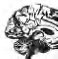
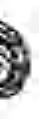
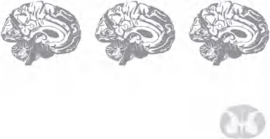
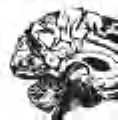
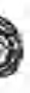
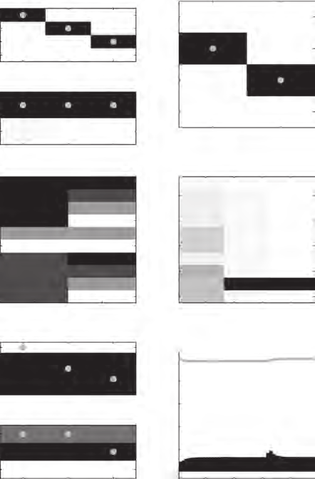

自由能原理在心智、大脑和行为中的应用
Thomas Parr, Giovanni Pezzulo, and Karl J. Friston
The MIT Press Cambridge, Massachusetts London, England
© 2022 Massachusetts Institute of Technology
版权所有。未经出版商书面许可，不得以任何电子或机械方式（包括影印、录制或信息存储和检索）复制本书的任何部分。
MIT出版社感谢为本书草稿提供评论的匿名同行评审员。学术专家的慷慨工作对建立我们出版物的权威性和质量至关重要。我们感激地承认这些其他未署名读者的贡献。
本书由Westchester Publishing Services用Stone Serif和Stone Sans字体排版。
国会图书馆出版物编目数据
姓名：Parr, Thomas, 1993– 作者。| Pezzulo, Giovanni, 作者。| Friston, K. J. (Karl J.), 作者。
书名：Active inference : the free energy principle in mind, brain, and behavior / Thomas Parr, Giovanni Pezzulo, and Karl J. Friston.
描述：Cambridge, Massachusetts : The MIT Press, [2022] | 包含参考文献和索引。
标识符：LCCN 2021023032 | ISBN 9780262045353 (精装本) 主题：LCSH: 知觉。| 推理。| 神经生物学。| 人类行为模型。| 知识论。| 贝叶斯统计决策理论。
分类：LCC BF311 .P31366 2022 | DDC 153—dc23
LC记录可在 https://lccn.loc.gov/2021023032 获取
前言
第一部分
1 概述 2 通往Active Inference的低级路径 3 通往Active Inference的高级路径 4 Active Inference的生成模型 5 消息传递和神经生物学
第二部分
6 设计Active Inference模型的方法 7 离散时间中的Active Inference 8 连续时间中的Active Inference 9 基于模型的数据分析 10 Active Inference作为有感知行为的统一理论
附录A：数学背景附录B：Active Inference方程附录C：Matlab代码注释示例注释参考文献索引
Karl Friston
Active Inference是一种理解有感知行为的方式。你正在阅读这些文字这一事实本身就意味着你正在进行Active Inference——即以特定方式主动采样世界——因为你相信你会学到什么。你用眼睛触摸这一页，仅仅是因为这是能够解决关于你接下来会看到什么以及这些文字传达什么内容的不确定性的那种行动。简而言之，Active Inference将行动引入知觉，将知觉视为知觉推理或假设检验。Active Inference更进一步，将规划视为推理——即推断你接下来会做什么来解决关于你生活世界的不确定性。
为了说明Active Inference的简单性——以及我们试图解释的内容——请将你的指尖轻柔地放在你的腿上。让它们在那里静止一两秒钟。现在，你的腿感觉粗糙还是光滑？如果你必须移动手指才能产生粗糙或光滑的感觉，你就发现了Active Inference的基础。感觉就是触摸。看就是观察。听就是倾听。这种触摸不一定是显性的——我们可以通过将注意力指向这里或那里来隐性地行动。简而言之，我们不仅仅是试图理解我们的感觉；我们必须主动创造我们的感觉系统。在接下来的内容中，我们将看到为什么必须如此，以及为什么我们感知、做或规划的一切都在一个存在命令——自我证明——的范围内。
Active Inference不仅仅关于阅读或认识性觅食。从一个角度来看，它是所有生物和粒子凭借其存在而做的事情。这可能听起来像一个强烈的主张；然而，它说明了Active Inference继承自自由能原理的事实，该原理将存在等同于自我证明，将自我证明等同于一种enactive类型的推理。然而，本书不关心有感知系统的物理学。它的重点是这种物理学对理解大脑如何工作的含义。
这种理解不是一件容易的事，正如几千年的自然哲学和几个世纪的神经科学所见证的那样。虽然人们可以在自组织行为的第一原理解释中找到Active Inference的根源（即类似于汉密尔顿静止作用原理的变分原理），但在询问特定大脑如何工作以及它与另一个大脑有何不同时，第一原理并没有太大帮助。例如，致力于自然选择的进化论在理解我为什么有两只眼睛或说法语方面没有丝毫帮助。本书是关于使用原理来支撑神经科学和人工智能中的关键问题。为了做到这一点，我们必须超越原理，掌握原理所适用的机制。
因此，主动推理——及其伴随的贝叶斯机制——旨在为我们如何感知、规划和行动的问题提供框架。关键的是，它并不试图取代其他框架，如行为心理学、决策理论和强化学习。相反，它希望在一个统一的框架内拥抱所有那些已被证明如此成功的方法。在接下来的内容中，我们将特别关注将心理学、认知神经科学、生成主义(enactivism)、动物行为学等领域的关键构念与主动推理中的信念更新计算——及其相关的过程理论——联系起来。
所谓过程理论，我们指的是关于信念更新如何通过具身大脑及其他地方的神经元（和其他生物物理）过程实现的理论。迄今为止，主动推理的工作提供了一套相当直接的计算架构和仿真工具，既能对大脑功能的各个方面建模，也能让人们测试关于不同计算架构的假设。然而，这些工具只解决了一半的问题。主动推理的核心是一个生成模型——即对外部世界中不可观察的原因如何产生可观察结果——我们的感觉——的概率表征。获得正确的生成模型——作为对任何实验对象或生物的有感知行为的恰当解释——是一个巨大的挑战。
本书试图解释如何应对这一挑战。第一部分建立基本概念和形式主义，在第二部分中会用到——以说明它们如何在实践中应用。简而言之，本书面向那些想要使用主动推理来仿真和建模有感知行为的人，服务于科学研究或者可能的人工智能。因此，它专注于理解和实施主动推理方案所必需的概念和程序，而不会被一方面的有感知系统的物理学或另一方面的哲学所分散注意力。
我有一个坦白要说。我没有写这本书的大部分内容。或者更确切地说，我不被允许写。这本书的议程要求一种清晰明了的写作风格，这超出了我的能力。虽然我被允许插入一些我喜欢的词汇，但接下来的内容证明了Thomas和Giovanni的功力，他们对手头问题的深刻理解，以及重要的是，他们的心理理论——在所有意义上。
我们感谢朋友和同事们的宝贵意见——特别是伦敦大学学院Wellcome人类神经影像中心理论神经生物学小组的过去和现在成员；意大利国家研究委员会认知科学与技术研究所的行动中的认知(CONAN)实验室；以及众多国际合作者，他们对本书所呈现思想的发展起到了不可或缺的作用。这个年轻但不断发展的社区在提供智力支持和动力方面非常慷慨。此外，我们感谢MIT Press的Robert Prior和Anne-Marie Bono在本书准备期间的友好陪伴和建议，以及Jakob Hohwy和其他深思熟虑的审稿人的指导。最后，我们感谢为我们的研究提供资金支持的资助机构：KJF由Wellcome Trust首席研究奖学金资助（编号：088130/Z/09/Z）；GP由欧洲研究理事会第820213号拨款协议(ThinkAhead)和欧盟地平线2020研究与创新框架计划第945539号特定拨款协议（人脑项目SGA3）资助。
机会垂青有准备的头脑。 ——路易·巴斯德
本章介绍主动推理寻求解决的主要问题：生物体如何在与环境进行适应性交换的同时持续存在？我们讨论从规范视角解决这个问题的动机，这种视角从第一原理开始，然后展开其认知和生物学含义。此外，本章简要介绍了本书的结构，包括其分为两个部分：第一部分旨在帮助读者理解主动推理，第二部分旨在帮助他们在自己的研究中使用它。
生物体不断与其环境（包括其他生物体）进行相互作用。它们发出改变环境的行动，并从环境中接收感觉观察，如图1.1所示意的那样。
生物体只能通过对行动-感知循环施加适应性控制来维持其身体完整性。这意味着行动以获得与期望结果或目标相对应的感觉观察（例如，对于简单生物而言，伴随安全营养和庇护所的感觉
观察
行动
图1.1
[连接生物与其环境的动作-感知循环的相互关系。][术语][environment][有意保持通用性。在我们讨论的例子中，它可以][包括物理世界、身体、社会环境等。]
生物体，或对更复杂生物体来说的朋友和工作）或帮助理解世界（例如，向生物体提供关于其周围环境的信息）。
与环境进行适应性动作-感知循环对生物体构成了巨大挑战。这主要是由于循环的递归性质，其中每次观察（由前一次动作引发）都会改变我们如何决定下一次动作，以引发下一次观察。控制和适应的可能性很多，但很少是有用的。然而在进化过程中，生物体已经成功发展出适应性策略来面对生存的基本挑战。这些策略在认知复杂程度上各不相同，简单生物体采用更简单和更刚性的解决方案（例如，细菌跟随营养梯度），更高级的生物体采用认知要求更高和更灵活的解决方案（例如，人类为实现远程目标而进行规划）。这些策略在选择和操作的时间尺度上也有所不同——从对环境威胁的简单反应或在进化时间尺度上出现的形态学适应，到在文化或发育学习过程中建立的行为模式，再到那些需要在与动作和感知相当的时间尺度上运行的认知过程（例如，注意力和记忆）。
这种多样性对生物学来说是一种福音，但对大脑和心智的正式理论来说却是一种挑战。总的来说，我们可以对此采取两种观点。一种观点是，不同的生物适应、神经过程（例如，突触交换和大脑网络）和认知机制（例如，感知、注意、社交互动）都是高度特异性的，需要专门的解释。这将导致哲学、心理学、神经科学、行为学、生物学、人工智能和机器人学等领域理论的激增，几乎没有统一的希望。另一种观点是，尽管表现形式多样，但生物体中行为、认知和适应的核心方面可以从第一原理得到连贯的解释。
这两种可能性对应两种不同的研究计划，在某种程度上，也对应不同的科学态度：“整洁派”与”杂乱派”（术语来自Roger Shank）。整洁派总是寻求超越大脑和心智现象（表面）异质性的统一。这通常对应于设计自上而下的规范性模型，从第一原理出发，试图尽可能多地推导出关于大脑和心智的知识。杂乱派则通过关注需要专门解释的细节来拥抱异质性。这通常对应于设计自下而上的模型，从数据开始，使用任何有效的方法来解释复杂现象，包括对不同现象的不同解释。
正如整洁派所假设的那样，是否可能从第一原理解释异质性的生物和认知现象？理解大脑和心智的统一框架是否可能？
本书肯定地回答了这些问题，并推进Active Inference作为理解大脑和心智的规范性方法。我们对Active Inference的处理从第一原理开始，并揭示其认知和生物学含义。
本书包括两个部分。这些部分针对想要理解Active Inference（第一部分）和寻求将其用于自己研究（第二部分）的读者。本书的第一部分在概念上和正式上介绍Active Inference，将其置于当前认知理论的背景中。第一部分的目标是提供对Active Inference的全面、正式和自包含的介绍：其主要构造及其对大脑和认知研究的含义。
本书的第二部分说明了使用Active Inference解释认知现象（如感知、注意、记忆和规划）的计算模型的具体例子。第二部分的目标是帮助读者理解使用Active Inference的现有计算模型并设计新的模型。简而言之，本书分为理论（第1部分）和实践（第2部分）。
Active Inference是表征生物体中贝叶斯最优行为和认知的规范性框架。其规范性特征体现在这样一个观念中：生物体中行为和认知的所有方面都遵循一个独特的命令：最小化其感官观察的惊奇。惊奇必须在技术意义上理解：它衡量智能体当前感官观察与其首选感官观察之间的差异程度——即那些保持其完整性的观察（例如，对鱼来说，在水中）。重要的是，最小化惊奇不能通过被动观察环境来完成：相反，智能体必须适应性地控制其动作-感知循环以获得所需的感官观察。这就是Active Inference的主动部分。
最小化惊讶(surprise)在技术层面上是一个具有挑战性的问题，其原因将在后面变得明显。主动推理(Active Inference)为这个问题提供了一个解决方案。它假设即使生物有机体不能直接最小化它们的惊讶，它们也可以最小化一个代理量——称为(变分)自由能。这个量可以通过神经计算来最小化，以响应(并预期)感觉观察。这种对自由能最小化的强调揭示了主动推理与激发它的(第一)原则之间的关系：自由能原则(Friston 2009)。
自由能最小化似乎是解释生物现象的一个非常抽象的起点。然而，从中可以得出许多形式和经验含义，并解决认知和神经理论中的一些核心问题。这些问题包括：参与自由能最小化的变量如何在神经元群体中编码；最小化自由能的计算如何映射到特定的认知过程，如知觉、动作选择和学习；以及
当主动推理智能体最小化其自由能时会出现什么样的行为。
正如上述主题列表所示，在本书中，我们主要关注生物有机体层面的主动推理和自由能最小化——无论是更简单的(如细菌)还是更复杂的(如人类)——以及它们的行为、认知、社会和神经过程。这种澄清对于将我们对主动推理的处理置于更一般的自由能原则(FEP)的背景下是必要的，该原则讨论了在神经信息处理之外更广泛的生物现象和时间尺度范围内的自由能最小化——从进化到细胞和文化层面(Friston, Levin et al. 2015; Isomura and Friston 2018; Palacios, Razi et al. 2020; Veissière et al. 2020)——这些超出了本书的范围。
可以通过两条路径来阐释主动推理的动机：高路和低路；见图1.2。这两条路径为主动推理提供了两个不同但高度互补的视角：
• 高路到主动推理始于生物有机体如何在世界中持续存在并适应性地行动的问题，并将
主动推理的两条道路：高路(从右上方开始)和低路(从左下方开始)。
主动推理作为这些问题的规范性解决方案来激发。这种高路视角有助于理解主动推理的规范性本质：生物有机体必须做什么来面对它们的基本生存挑战(最小化它们的自由能)以及为什么(间接地最小化它们感觉观察的惊讶)。
• 低路到主动推理始于贝叶斯大脑(Bayesian brain)的概念，它将大脑视为一个推理引擎，试图优化其感觉输入原因的概率表示。然后它将主动推理作为(否则难以处理的)推理问题的特定变分近似来激发，这具有一定程度的生物学合理性。这种低路视角有助于说明主动推理智能体如何最小化它们的自由能——因此不仅将主动推理展示为一个原则，还展示为认知功能及其神经基础的机制性解释(即过程理论)。
在第2章中，我们阐述了主动推理的低路视角。我们从将知觉视为统计(贝叶斯)推理问题的基础理论(Helmholtz 1866)及其在贝叶斯大脑假设中的现代体现开始(Doya 2007)。我们将看到，为了执行这种(知觉)推理，生物有机体必须配备或体现一个关于如何生成其感觉观察的概率生成模型，该模型编码关于可观察变量(感觉观察)和不可观察(隐藏)变量的信念(概率分布)。我们将把这种推理观点扩展到知觉之外，涵盖动作选择、规划和学习问题。
在第3章中，我们将说明主动推理的互补高路视角。本章介绍了FEP和生物有机体最小化惊讶的必要性。此外，它解释了这个原则如何涵盖自组织的动力学和维持与环境分离的统计边界或马尔可夫毯(Markov blanket)的保持。这对于维持生物体的完整性至关重要，也是它们自创生(autopoiesis)的核心。
在第4章中，我们将更正式地解析主动推理。本章从第2章中贝叶斯大脑的讨论出发，阐述第3章自证明动力学与变分推理之间的数学关系。此外，本章还阐述了两个
用于制定Active Inference问题的生成模型类型。这些包括用于决策制定和规划的部分观察马尔可夫决策过程，以及与感官受体和肌肉接口的连续时间动力学模型。最后，我们看到这些模型中每一个的自由能最小化如何表现为动态信念更新。
在第5章中，我们将从正式处理转向Active Inference的生物学意义。通过从”大脑中发生变化的一切都必须最小化自由能”(Friston 2009)这一前提开始，我们将讨论自由能最小化中涉及的特定量(例如，预测、预测误差和精度信号)如何在神经元动力学中表现。这有助于将Active Inference的抽象计算原理映射到可由生理基质执行的特定神经计算。这对于在此框架下形成假设很重要，并确保这些假设可以通过测量数据得到验证。换句话说，第5章阐述了与Active Inference相关的过程理论。
在本书的第一部分中，我们将讨论Active Inference的几个特征方面。这些突出了它与寻求解释生物调节和认知的替代框架的不同之处——我们在此预览其中一些。
• 在Active Inference下，知觉和行动是实现同一目标的两种互补方式：自由能的最小化。知觉通过(贝叶斯)信念更新或改变你的想法来最小化自由能(和惊讶)，从而使你的信念与感官观察兼容。相反，行动通过改变世界使其更符合你的信念和目标来最小化自由能(和惊讶)。这种认知功能的统一标志着Active Inference与其他将行动和知觉彼此孤立对待的方法之间的根本区别。学习是最小化自由能的另一种方式。然而，它与知觉在根本上没有不同；它只是在更慢的时间尺度上运作。知觉和行动之间的互补性将在第2章中详细阐述。
• 除了驱动当前行动选择以改变当前可用的感官数据外，Active Inference框架还容纳了规划——或者说是未来最优行动路线(或策略)的选择。这里的最优性是相对于预期自由能来衡量的，与上述在行动和知觉背景下考虑的变分自由能概念不同。实际上，虽然计算变分自由能依赖于现在和过去的观察，但计算预期自由能还需要预测的未来观察(因此称为预期)。有趣的是，策略的预期自由能包括两个部分。第一部分量化了策略预期解决不确定性的程度(探索)，第二部分量化了预测结果与智能体目标的一致性程度(利用)。与其他框架相比，Active Inference中的策略选择自动平衡探索和利用。变分自由能和预期自由能之间的关系将在第2章中详细阐述。
• 在Active Inference下，所有认知操作都被概念化为对生成模型的推理——与大脑执行概率计算的想法保持一致——也称为贝叶斯大脑假设。然而，诉诸于一种特定的近似贝叶斯推理形式——即一种由第一原理驱动的变分方案——为过程理论增加了特异性。此外，Active Inference将推理方法扩展到很少被考虑的认知领域，并为生物大脑可能实现的模型和推理过程的类型增加了一些特异性。在某些假设下，Active Inference中使用的生成模型产生的动力学与计算神经科学中的广泛模型密切对应，如预测编码(Rao and Ballard 1999)和Helmholtz机器(Dayan et al. 1995)。变分方案的具体细节将在第4章中详细阐述。
• 在Active Inference下，知觉和学习都是主动过程，有两个原因。首先，大脑本质上是一个预测机器，它不断预测传入刺激而不是被动地等待它们。这很重要，因为知觉和学习过程总是由先验预测所语境化(例如，预期和意外刺激以不同方式影响知觉和学习)。其次，参与Active Inference的生物主动寻求显著的感官观察来解决它们的不确定性(例如，通过定向它们的传感器或选择信息丰富的学习事件)。知觉和学习的主动特征与当前大多数将它们视为基本被动过程的理论形成对比；这将在第2章中详细阐述。
• 行动本质上是目标导向和有目的的。它从期望的结果或目标开始(类似于控制论中设定点的概念
cybernetics)，它被编码为先验预测。规划通过推断满足此预测的动作序列来进行（或等价地，减少先验预测与当前状态之间的任何预测误差）。Active Inference中动作的目标导向特性与早期控制论表述保持一致，但与大多数当前通过刺激-反应映射或状态-动作策略解释行为的理论不同。刺激-反应或习惯性行为随后成为Active Inference中更广泛策略族的特例。Active Inference的目标导向本质将在第2章和第3章中详细阐述。
[•] Active Inference的各种构念在大脑中具有合理的生物学类比。这意味着——一旦为手头的问题定义了特定的生成模型——人们就可以从作为规范理论的Active Inference转向作为过程理论的Active Inference，后者做出具体的经验预测。例如，感知推理和学习分别对应于突触活动的改变和突触效能的改变。预测的精确性（在预测编码中）对应于预测误差单元的突触增益。策略的精确性对应于多巴胺能活动。Active Inference的一些生物学后果将在第5章中详细阐述。
虽然本书的第一部分为读者提供了理解Active Inference的概念和形式工具，第二部分则聚焦于实际问题。具体而言，我们希望为读者提供理解现有的认知功能（和功能障碍）Active Inference模型并设计新模型的工具。为此，我们讨论了使用Active Inference的模型的具体示例。重要的是，Active Inference模型可以在不同维度上变化（例如，采用离散或连续时间表述，平面或分层推理）。第二部分的结构如下：
在第6章中，我们介绍构建Active Inference模型的方法。该方法涵盖了设计有效模型的基本步骤，包括识别感兴趣的系统、最合适的
生成模型形式（例如，表征离散或连续时间现象），以及模型中包含的具体变量。因此，本章提供了支撑后续章节讨论模型的设计原理介绍。
在第7章中，我们讨论解决离散时间表述问题的Active Inference模型；例如，隐马尔可夫模型(HMMs)或部分可观测马尔可夫决策过程(POMDPs)。我们的示例包括感知处理模型和离散觅食选择模型——即在决策点选择左转还是右转以获得奖励。我们还介绍了信息寻求、学习和新奇寻求等主题，这些可以通过离散时间Active Inference来处理。
在第8章中，我们讨论解决连续时间表述问题的Active Inference模型，使用随机微分方程。这些包括感知模型（如预测编码）、运动控制和序列动力学。有趣的是，正是在连续时间表述中，Active Inference的一些最具特色的预测出现了，比如运动生成源于预测的实现以及注意现象可以通过精确性控制来理解的观点。我们还介绍了包含离散和连续时间变量的混合Active Inference模型。这些模型允许同时评估离散选项之间的选择（例如，眼跳的目标）和选择产生的连续运动（例如，眼球运动）。
在第9章中，我们说明如何使用Active Inference模型分析行为实验数据。我们讨论基于模型的数据分析所需的具体步骤，从数据收集到模型表述及其反演，以支持单个参与者或群体层面的数据分析。
在第10章中，我们讨论Active Inference与心理学、神经科学、AI和哲学中其他理论的关系。我们还强调了Active Inference区别于其他理论的最重要方面。
在附录中，我们简要讨论理解本书最技术性部分所需的数学背景，包括Taylor级数逼近、变分Laplace、变分微积分等概念。作为参考，我们还以简洁形式呈现Active Inference中使用的最重要方程。
总之，本书的第二部分展示了使用主动推理(Active Inference)构建生物和认知现象模型的广泛多样性，以及设计新颖模型的方法论。除了特定模型的价值之外，我们希望我们的处理方法能够阐明使用统一的、规范性框架从连贯视角来处理生物和认知现象的价值。最终，这就是规范性框架的真正吸引力：提供统一的视角和指导原则，以协调看似不相关的现象——在本例中，这些现象包括感知、决策、注意力、学习和运动控制，每个现象在任何心理学或神经科学手册中都有独立的章节。
第二部分中突出显示的模型已被选择用于尽可能简单地说明特定要点。虽然我们涵盖了多个模型和领域，从离散时间决策到连续时间感知和运动控制，但我们显然忽略了许多其他同样有趣的模型。文献中存在许多其他主动推理模型，涵盖了诸如生物自组织和生命起源(Friston 2013)、形态发生(Friston, Levin et al. 2015)、认知机器人学(Pio- Lopez et al. 2016, Sancaktar et al. 2020)、社会动力学和生态位构建(Bruineberg, Rietveld et al. 2018)、突触网络动力学(Palacios, Isomura et al. 2019)、生物网络中的学习(Friston and Herreros 2016)，以及心理病理状况，如创伤后应激障碍(post-traumatic stress disorder)(Linson et al. 2020)和恐慌症(panic disorder)(Maisto, Barca et al. 2021)等多样化领域。这些模型在许多维度上有所不同：有些更直接与生物学相关，而另一些则不太相关；有些是单智能体模型，而另一些是多智能体模型；有些针对适应性推理，而其他的针对不适应性推理(例如，在患者群体中)，等等。
这一不断增长的文献体现了主动推理日益增长的流行性，以及在非常广泛的领域中使用它的可能性。本书的目标是为读者提供在自己的研究中理解和使用主动推理的能力——可能是为了探索其未曾预见的潜力。
本章简要介绍了从规范性视角解释生物问题的主动推理方法——并预览了这一视角的一些含义，这些含义将在后面的章节中展开。此外，本章强调了本书分为两部分，旨在分别帮助读者理解主动推理和在自己的研究中使用它。在接下来的几章中，我们将发展这里概述的低路径和高路径视角，然后深入探讨生成模型的结构和由此产生的消息传递。这些共同构成了原理上的主动推理，并为实践中的主动推理提供了预备知识。我们希望这些章节将说服读者，主动推理不仅提供了理解行为的统一原则，而且还提供了研究自主系统中行动和感知的可行方法。
我的思考首先、最后和始终都是为了我的行动。 ——威廉·詹姆斯(William James)
本章通过从亥姆霍兹(Helmholtzian)——或者也许是康德式(Kantian)——的”感知作为无意识推理”(Helmholtz 1867)观点以及在贝叶斯脑假设下最近出现的相关思想开始介绍主动推理。它解释了主动推理如何包含和扩展这些思想，通过将不仅仅是感知，还包括行动、规划和学习都视为(贝叶斯)推理的问题，并通过推导出对这些原本难以处理问题的原则性(变分)近似。
将大脑视为”预测机器”，或者是推理和预测世界外部状态的统计器官，有着悠久的传统。这个想法可以追溯到”感知作为无意识推理”(Helmholtz 1866)的概念。最近，这被重新表述为”贝叶斯脑”假设(Doya 2007)。从这个角度来看，感知不是将感官状态(例如，来自视网膜)纯粹自下而上转导为对外界事物的内部表征(例如，作为神经元活动模式)。相反，它是一个推理过程，将关于感觉最可能原因的(自上而下)先验信息与(自下而上)感官刺激相结合。推理过程作用于世界状态的概率表征，并遵循贝叶斯定理，该定理规定了在感官证据下的(最优)更新。感知不是一个被动的由外向内过程——其中信息从我们感官上皮的”外界”印象中提取。它是一个建构性的由内向外过程——其中感觉被用来确认或否认关于它们如何产生的假设(MacKay 1956, Gregory 1980, Yuille and Kersten 2006, Neisser 2014, A. Clark 2015)。
反过来，执行贝叶斯推理需要一个生成模型——有时被称为前向模型。生成模型是统计理论中的一个构造，用于生成关于观测的预测。它可以表述为观测 y 和产生这些观测的世界隐藏状态 x 的联合概率 P(y, x)。后者被称为隐藏或潜在状态，因为它们无法直接观测到。这个联合概率可以分解为两个部分。第一个是先验 P(x)，它表示有机体在看到感官数据之前对世界隐藏状态的知识。第二个是似然 P(y | x)，它表示有机体关于观测如何从状态中产生的知识。贝叶斯定律告诉我们如何结合这两个要素，实质上是将先验概率 P(x) 更新为接收观测后隐藏状态的后验概率 P(x | y)。对于需要基础概率理论简要回顾的读者，框 2.1 提供了一个总结。
贝叶斯推理是一个广泛的主题，出现在统计学、机器学习和计算神经科学等学科中。对相关主题的完整论述超出了本书的范围，但对于那些希望深入理解的人来说，有很好的资源可用（Murphy 2012）。然而，所有这一切都基于一个简单的规则。为了说明这个规则，我们考虑一个贝叶斯感知推理的例子（图 2.1）。想象一个人强烈相信她面对的是一个苹果。这个信念对应一个先验概率，简称先验。这个先验包括归因于苹果假设的概率和分配给替代假设的概率。在这个例子中，我们的替代假设是它不是苹果而是一只青蛙。在数值上，先验概率分布为苹果分配 0.9，为青蛙分配 0.1。注意，由于我们假设只有两个合理的（互斥的）假设，它们必须加起来等于一。这个人还配备了一个似然模型，该模型为青蛙会跳跃而苹果不会这一事实分配高概率。这个似然指定了从两个隐藏状态（青蛙或苹果）到两个观测（跳跃或不跳跃）的（概率）映射。
框 2.1
概率推理由两个关键规则支撑：概率的和规则与乘积规则，分别如下：
∑ P(x) = 1 x
P(x)P(y | x) = P(x, y)
和规则说明所有可能事件(x)的概率必须和（或积分）为一。乘积规则说明两个随机变量(x 和 y)的联合概率可以分解为一个变量的概率(P(x))与给定第一个变量时第二个变量的条件概率(P(y | x))的乘积。条件概率是如果我们知道另一个变量（这里是x）所取值时一个变量（这里是y）的概率。
我们可以从这些简单规则中得出两个重要结果。第一个是边际化操作。第二个是贝叶斯定律。边际化允许我们从联合分布中获得两个变量中只有一个变量的分布：
∑ P(x,y) = ∑ P(y)P(x | y) = P(y)∑ P(x| y) = P(y) x x x
乘积规则 和规则
y 的概率被称为边际概率，我们将此操作称为边际化掉 x。贝叶斯定律可以直接从乘积规则中获得：
P(x)P(y| x) = P(x,y) = P(y)P(x | y)
乘积规则 乘积规则
这让我们能够在先验与条件分布（似然）以及相关的边际和另一个条件分布（后验）之间进行转换。简单地说，贝叶斯定律只是说两个事物的概率等于给定第二个事物时第一个事物的概率乘以第二个事物的概率，这与给定第一个事物时第二个事物的概率乘以第一个事物的概率相同。
跳跃）。先验和似然一起构成了这个人的生成模型。
现在想象这个人观察到她的苹果-青蛙跳跃了。贝叶斯定律告诉我们如何从先验形成后验信念，考虑到跳跃的似然性。这个规则表达如下：
P(x | y ) = P(x)P(y | x) / P(y ) (2.1)
P(x = 青蛙) P(x = 苹果) P(x = 青蛙 | y = 跳跃) P(x = 苹果 | y = 跳跃)
0.1 0.9 观察跳跃 0.9 0.1
苹果 青蛙P(y = 跳跃 | x = 苹果) 0.01 P(y = 跳跃 | x = 青蛙) 0.99
P(y = 不跳跃 | x = 苹果) 0.99 P(y = 不跳跃 | x = 青蛙) 0.01

左上： 生物体的先验信念 P(x) 关于它将看到的物体，在进行任何观察之前，即对两种可能性的分类分布：苹果（概率0.9）和青蛙（概率0.1）。右上： 生物体在观察到物体跳跃后的后验信念 P(x | y)。后验信念可以在似然函数 P(y | x) 下使用贝叶斯定理计算。这显示在先验和后验下方，并指定如果物体是苹果，它跳跃的概率非常小（0.01），而如果它是青蛙，跳跃的概率要高得多（0.81）。（图中的概率条并非完全按比例绘制。）在这个特定情况下，从先验到后验的更新幅度很大。
在图2.1的似然模型下，分配给青蛙的后验概率是0.9，分配给苹果的概率是0.1。如框2.1所强调的，方程2.1的分母可以通过对分子进行边际化来计算。使用我们的苹果-青蛙示例，我们借此机会解释两种不同的惊讶(surprise)概念——这两种概念在Active Inference中都很重要。第一种，我们简称为惊讶，是负对数证据，其中证据是观察的边际概率。在我们的示例中，这是在生成模型下观察到任何跳跃行为的负对数概率。从贝叶斯角度来看，惊讶是一个非常重要的量。它衡量模型与其试图解释的数据的拟合程度有多差。直观地说，
我们可以计算出在我们的模型下观察到的（跳跃）行为的概率。记住，这个模型对苹果分配了非常高的先验概率，对青蛙分配了低先验概率。因此，我们跳跃的边际概率如下：
P(y = jumps) = ∑P(x,y = jumps) x
= ∑P(x)P(y = jumps| x) x
= P(x = frog )P(y = jumps|x = frog ) (2.2)
= 0.1 × 0.81 + 0.9 × 0.01 = 0.09
这意味着，在这个模型下，我们只会期望在100次观察中大约9次观察到跳跃行为。因此，如果我们相信图2.1中的模型，观察到这种现象应该感到惊讶。我们可以用惊讶度(ℑ)来量化这一点。这由 ℑ(y = jumps) = −ln P(y = jumps) = −ln(0.09) = 2.4 nats给出。这个数字越大，模型作为手头观察的恰当解释就越差。这让我们可以根据数据比较模型。例如，考虑一个替代模型，我们有先验信念认为青蛙100%的时间都能看到。按照方程2.2中相同的步骤，我们计算出大约0.2 nats的惊讶度。这是这些数据的更好模型，因为观察结果不那么令人惊讶。基于证据（或惊讶度）对模型进行评分的程序通常被称为贝叶斯模型比较。对于更复杂的模型，惊讶度的形式可能不那么简单。表2.1提供了一系列概率分布的惊讶度形式（省略常数）——除了我们示例中的分类概率之外。至关重要的是，这让我们可以谈论支持范围与此处使用的简单示例不同的概率分布的惊讶度。这很重要，因为世界生成感觉数据的方式因数据类型而异。我们可能因为遇到我们不期望看到的某人的面孔而感到惊讶（分类分布），或者我们可能因为外面比我们预期的更冷而感到惊讶（连续分布）。表2.1可以看作是我们在后续章节构建生成模型时可支配的概率分布组合。更一般地说，它说明了惊讶是一个可以针对任何给定概率分布族进行评估的概念。
表2.1 概率分布和惊讶度
| 分布 | 支持 | 惊讶度(ℑ) |
|---|---|---|
| 高斯分布 | x ∈ ℝ | ½(x − μ)ᵀΠ(x − μ) |
| 多项分布¹ | xᵢ ∈ (0, . . . , N) | −∑xᵢ ln dᵢ |
| i ∈ {1, . . . , K} | ||
| ∑xᵢ = N | ||
| 狄利克雷分布² | xᵢ ∈ (0,1) | ∑(1 − αᵢ)ln xᵢ |
| i ∈ {1, . . . , K} | ||
| ∑xᵢ = 1 | ||
| 伽马分布 | x ∈ (0,∞) | (bx + (1 − a) ln x) |
注释：1. 特殊情况包括分类分布（K > 2，N = 1），二项分布（K = 2，N > 1），和伯努利分布（K = 2，N = 1）。2. 特殊情况是贝塔分布（K = 2）。
第二种惊讶概念（稍微令人困惑地）被称为贝叶斯惊讶。这是衡量我们在观察后必须更新信念程度的指标。换句话说，贝叶斯惊讶量化了先验概率和后验概率之间的差异。这提出了如何量化两个概率分布不相似性的问题。来自信息论的一个答案是使用Kullback-Leibler (KL) 散度。这定义为两个对数概率之间的平均差异：
D_{KL}[Q(x)||P(x)] ≜ E_{Q(x)}[ln Q(x) − ln P(x)] (2.3)
这里的 E 符号表示平均值（或期望值），如框 2.2 中所述。使用 KL 散度，我们可以量化示例的贝叶斯惊讶：
D [KL] [P(x| y) || P(x)]
= P(x = frog | y = jumps) ln [P(x = frog | y = jumps) − ln P(x = frog )] (2.4)
= 0.9 ln(0.9) [− ln(0.1)] + 0.1 ln(0.1) [− ln(0.9)]
≈ 1.8 nats
这衡量了信念更新的量，而不是简单地衡量观察结果的不可能性。为了突出惊讶和贝叶斯惊讶之间的区别，考虑一下如果我们坚持先验信念，即我们总是会看到苹果，会发生什么。贝叶斯惊讶将为零，因为先验信念
主动推理的低级路径 21
框 2.2 期望值
引用随机变量 x 的期望值是很有用的，通常记作 Ex。这是变量可以假设的所有值的加权平均值，按其概率加权。对于离散随机变量（只能取可数个可能值），这由加权和给出：
Ex = ∑ xP(x)
例如，对于只能假设两个值（1和2）且概率相等为 1/2 的离散（数值）变量，这是 Ex = 1 × 1/2 + 2 × 1/2 = 3/2。
对于连续随机变量（可以取无限多个值），求和被积分替代。期望值也可以应用于随机变量的函数，而不是直接应用于变量。例如，如果我们有一个函数 f(x)，其中 x 具有某种连续分布，期望值定义如下：
E[f(x)] = ∫ f(x)p(x) dx
我们将在本书中使用这种记号，其中函数 f(x) 通常是对数概率或对数概率比。
是如此确信，以至于我们在观察后根本不更新它。然而，惊讶程度非常大（4.6 nats），因为苹果跳跃是极不可能的。
注意，虽然我们基于一个非常简单的生成模型说明了贝叶斯推理，但它适用于任何复杂性的生成模型。在第 4 章中，我们将重点介绍支持主动推理中大多数应用的两种生成模型形式。
有两个重要点将上述推理方案与感知的生物学和心理学理论联系起来。首先，讨论的推理程序需要编码预测（来自先验）的自上而下过程和编码感觉观察（通过似然调节）的自下而上过程的相互作用。这种自上而下和自下而上过程的相互作用使推理观点区别于仅考虑自下而上过程的替代方法。此外，它
第 2 章 22
在现代感知的生物学处理中是核心的，例如预测编码（在第 4 章中讨论），这是这里讨论的更一般的（贝叶斯）推理方案的特定算法（或过程级别）实现。
其次，贝叶斯推理是最优的。最优性相对于被优化（即最小化）的成本函数来定义，对于贝叶斯推理，这被称为变分自由能——与惊讶密切相关。我们在第 2.5 节中回到这一点。通过明确考虑隐藏状态的完整分布，它自然地处理不确定性，因此避免了仅考虑隐藏状态点估计（例如，x 的平均值）的替代方法的局限性。一种这样的替代方法是最大似然估计，它简单地选择最可能产生手头数据的隐藏状态。这样做的问题是，这样的估计忽略了隐藏状态的先验合理性和围绕估计的不确定性。贝叶斯推理不会受到这些局限性的影响。然而，尽管在客观评估模型是否适合目的时使用了惊讶，但重要的是要认识到推理本身是主观的。推理的结果在任何客观意义上都不一定准确（即，有机体的信念可能实际上不对应于现实），至少有两个重要原因。首先，生物生物基于有限的计算和能量资源运作，这使得精确的贝叶斯推理变得难以处理。这需要近似，排除了精确贝叶斯最优性的保证。这些近似包括变分后验的概念——基于称为平均场近似的东西——这是第 4 章的核心。
最优性被认为是主观的第二个原因是，机体基于主体的生成模型(generative model)运作，该模型描述了观察结果是如何生成的，但这个模型可能与生成其观察结果的真实生成过程(generative process)相符，也可能不相符。这并不是说生成模型应该对应于生成过程。实际上，可能存在一些模型能够为手头的数据提供更好的（例如，更简单的）解释，而不是实际生成这些数据的过程——这可以通过它们的相对惊讶度来量化。一个很好的例子是错觉(illusions)，对于错觉，人们会对视觉输入找到一个更简单的解释，这与调皮的心理物理学家精心设计视觉刺激的方式有关。
生成模型本身可能会随着新经验的获得而被优化。这可能会收敛到生成过程，也可能不会。图2.2说明了
[从 http://direct.mit.edu/books/oa-monograph/chapter-pdf/2004455/c001300_9780262369978.pdf 下载，访客于2022年4月2日访问] [通往主动推理的低阶路径 23]
[模型] [隐藏] [过程] [隐藏]
[状态] [状态]
x [y] [x*]
[推断]
[状态] [u] [观察]
[行动]
生成过程和生成模型。两者都代表了在给定隐藏状态(x)的情况下可能生成感觉数据(y)的方式，并通过从x到y的箭头表示因果关系。区别在于，过程是数据生成的真实因果结构，而模型是用来对数据原因进行推断的构造（即，使用观察结果来得出推断状态）。生成模型和生成过程的隐藏状态是不同的。机体的模型包括关于隐藏状态的一系列假设(x)，这些假设不一定包括生成过程的隐藏状态x∗的真实值。换句话说，我们用来解释感觉的模型可能包括外部世界中不存在的隐藏状态，反之亦然。行动(u)是基于在生成模型下做出的推断而生成的。这里行动被显示为生成过程的一部分，对世界进行改变，尽管它是从模型下得出的推断中选择的。
这一点以及真实环境偶然性（或生成过程）与机体无法接触到的机体世界生成模型之间的差异。在这个特定例子中，生成过程处于机体无法接触到的真实状态x*中。然而，机体和世界是相互耦合的，x*生成机体感知到的观察y。机体可以使用这个观察y和贝叶斯法则来推断生成模型中某些解释变量或隐藏状态的（后验概率）。在图中，我们将x*和x都称为隐藏状态，强调两者都是不可观察的。然而，它们存在微妙的差异：前者是机体生成模型的一部分，而后者是生成过程的一部分，机体无法接触到。此外，x*和x不一定存在于同一空间中。可能外部世界的隐藏状态取值超出了大脑可用解释空间的范围。相反，可能大脑的解释包括
[从 http://direct.mit.edu/books/oa-monograph/chapter-pdf/2004455/c001300_9780262369978.pdf 下载，访客于2022年4月2日访问] [24 ] [[第2章]]
外部世界中不存在的变量。例如，前者可能是5维的，后者是2维的，或者一个可能是连续的，另一个是分类的。
生成模型和过程之间的区别对于将关于推断最优性的心理学声明置于背景中很重要——在这些声明有效的程度上——在贝叶斯观点下，这总是取决于机体的资源。我们所说的资源是指其特定的生成模型，以及有限的计算和记忆资源。
到目前为止的讨论对所有贝叶斯大脑理论都是共同的。然而，我们现在介绍主动推理(Active Inference)提供的简单但根本性的进展。这从上面讨论的相同推断视角开始，但扩展到将行动视为推断。这个想法源于贝叶斯推断最小化惊讶度（或等价地，最大化贝叶斯模型证据）的概念。到目前为止，我们考虑了通过执行推断来计算惊讶度时会发生什么——并根据模型最小化惊讶度的能力来选择模型。然而，惊讶度不仅依赖于模型，还依赖于数据。通过对世界采取行动来改变数据生成的方式，我们可以通过选择在我们模型下最不令人惊讶的那些数据来确保模型适合目标。
配备了产生行动的机制，有机体能够与其环境进行相互交换；见图2.2。在动物中，这种机制采用运动反射回路的形式。基本上，对于每个行动-感知循环，环境向有机体发送一个观察。有机体使用（近似的）贝叶斯推理来推断其最可能的隐藏状态。然后它产生一个行动并将其发送到环境中，试图使环境变得不那么令人惊讶。环境执行该行动，产生新的观察，并将其发送给有机体。然后，一个新的循环开始。这里的顺序描述是为了教学目的而写的；重要的是要意识到这些实际上不是离散的步骤，而是连续的动力学过程。
主动推理超越了对感知和行动具有相同（推理）性质的认识。它还假设感知和行动都合作实现单一目标——或优化一个函数——而不是像更常见假设的那样有两个不同的目标。在
[Downloaded from http://direct.mit.edu/books/oa-monograph/chapter-pdf/2004455/c001300_9780262369978.pdf by guest on 02 April 2022] [主动推理的低路 25]
主动推理文献中，这个共同目标已经以各种（非正式和正式）方式被描述，包括最小化惊讶、熵、不确定性、预测误差或（变分）自由能。这些术语彼此相关，但有时它们的关系并不立即明确，造成一些困惑。此外，这些术语在不同的语境中使用；例如，预测误差最小化在生物学语境中使用，其目标是解释大脑信号，而变分自由能最小化在机器学习中使用。
在接下来的两节中，我们将澄清主动推理智能体通过感知和行动最小化的单一量是变分自由能。然而，在某些条件下，人们可以将变分自由能减少到其他概念，如生成模型与世界之间的差异，或期望与观察之间的差异（即预测误差）。我们将在2.5节正式介绍变分自由能。为简单起见，2.4节专注于感知和行动最小化生成模型与世界之间差异的方式。
建立了基于贝叶斯推理的感知和行动之后，我们现在转向推理目标的问题。换句话说，推理在优化什么？在认知科学中，通常假设感知和行动等不同认知功能优化不同的目标。例如，我们可以假设感知最大化重构的准确性，而行动选择最大化效用。相反，主动推理的一个基本见解是感知和行动都服务于完全相同的目标。作为第一个近似，感知和行动的这个共同目标可以表述为最小化模型与世界之间的差异。有时这以预测误差的形式操作化。
为了理解感知和行动如何减少模型与世界之间的差异，再次考虑一个期望看到苹果的人的例子（图2.3）。她产生一个自上而下的视觉预测（例如，关于看到红色的东西而不是跳跃的东西）。这种视觉预测与感觉（例如，跳跃的东西）进行比较——这种比较导致差异。
[Downloaded from http://direct.mit.edu/books/oa-monograph/chapter-pdf/2004455/c001300_9780262369978.pdf by guest on 02 April 2022] [26] [[第2章]]
[预测] [观察]

[差异]
[感知：] [行动：] [改变信念] [改变世界]
[图2.3] [感知和行动都最小化模型与世界之间的差异。]
这个人可以用两种方式解决这种差异。首先，她可以改变对所看到事物的想法（即青蛙）以适应世界，从而解决差异。这对应于感知。其次，她可以注视最近的苹果树，看到非常像苹果的东西。这也解决了初始差异，但以不同的方式。这需要改变世界——包括她的注视方向——和后续的感觉以适应她心中的想法，而不是改变她的想法以适应世界。这是另一个适应方向。这是行动。
虽然在苹果和青蛙的世界中改变注视方向似乎不如改变想法那么令人信服，让我们考虑另一个例子：一个期望他的体温在某个范围内的人通过中央温度感受器感知到高温。这是令人惊讶的，呈现出需要解决的重大差异。如前面的例子一样，他有两种方式来最小化这种差异，分别对应感知（改变想法）和行动（改变世界）。在这种情况下，简单地改变想法似乎不是很适应性的，但采取行动降低体温（例如，通过打开窗户）是适应性的。
这说明了在主动推理中，边缘概率或惊奇（例如，关于体温）的概念具有超越标准贝叶斯处理的意义，吸收了诸如稳态和变稳态设定点等概念。从技术上讲，主动推理主体配备了模型，这些模型对它们偏好访问的状态或偏好获得的观察结果分配高边缘概率。对于鱼来说，这意味着在水中的高边缘似然。这意味着
有机体隐含地期望它们采样的观察结果在其舒适区内（例如，生理界限内）。
总结来说，我们已经讨论了在任何时间点上，我们如何通过感知和行动最小化我们的模型与我们的世界之间的差异。我们是调整信念还是调整数据，取决于我们持有这些信念的信心。在我们的苹果例子中，信念以足够的不确定性被持有，因此将被更新而不是被付诸行动。相比之下，在温度例子中，我们对我们的核心温度相当有信心，因为它支撑着我们的存在。这种信心意味着我们更新我们的世界以符合我们的信念。然而，在主动推理中，感知和行动比这种处理方式所暗示的更加协作。为了理解为什么会这样，下一节将从受限的差异（或预测误差）概念转向更一般的变分自由能概念——这是主动推理实际最小化的量，它包含预测误差作为特殊情况。
到目前为止，我们已经在旨在最小化惊奇的贝叶斯方案内讨论了感知和行动。然而，支持感知和行动的精确贝叶斯推理在大多数情况下在计算上是难以处理的，因为两个量——模型证据（P(y)）和后验概率（P(x | y)）——由于两个可能的原因无法计算。首先，对于复杂模型，可能有许多类型的隐藏状态都需要边缘化，使问题在计算上难以处理。其次，边缘化操作可能需要分析上难以处理的积分。主动推理诉诸于可处理的贝叶斯推理的变分近似。
变分推理的形式化将在第4章中展开。在这里，足以说进行变分贝叶斯推理意味着用两个可以高效计算的量来替代两个难以处理的量——后验概率和（对数）模型证据——即近似后验Q和变分自由能F。近似后验有时被称为变分或识别分布。负变分自由能也被称为证据下界(ELBO)，特别是在机器学习中。
最重要的是，贝叶斯推理的问题现在变成了优化问题：变分自由能F的最小化。变分自由能是一个植根于统计物理学的量，在主动推理中起着基本作用。在公式2.5中，它被记作F[Q, y]，因为它是近似后验Q的泛函（函数的函数）和数据y的函数：
F[Q,y] = − E[Q][(][x][)][ln P(y,x)] − H[Q(x)] 能量 熵
= D[KL][Q(x) || P(x)] − E[Q][(][x][)][ln P(y |x)] (2.5) 复杂性 准确性
= D[KL][Q(x) || P(x | y)] − ln P(y) 散度 证据
变分自由能乍看可能是一个抽象概念，但当它被分解为认知科学中更直观和熟悉的量时，它的性质和在主动推理中所起的作用就变得明显了。这些关于变分自由能的视角都提供了关于自由能最小化意味着什么的有用直觉。我们在这里简要勾勒这些直觉，因为当我们在本书第二部分讨论例子时它们将变得重要。
公式2.5的第一行显示，关于Q的最小化需要与生成模型（能量）的一致性，同时还要保持高后验熵。后者意味着，在缺乏数据或精确先验信念的情况下（这些只影响能量项），我们应该对世界的隐藏状态采用最大不确定性信念，符合Jaynes的最大熵原理（Jaynes 1957）。简单地说，当我们没有信息时，我们应该不确定（采用高熵信念）。术语能量继承自统计物理学。具体来说，在Boltzmann分布下，系统采用某种配置的平均对数概率与该配置相关的能量成反比——即，将系统从基线配置移动到这种配置所需的能量。
第二行强调了自由能最小化作为为感官数据寻找最佳解释的解释，这必须是能够准确解释数据的最简单（最小复杂性）解释（参见Occam剃刀）。复杂性-准确性权衡
在多个领域中反复出现，通常在数据分析的模型比较情境中。在统计学中，有时使用其他模型证据的近似方法，如贝叶斯信息准则或赤池信息准则。当我们描述如何在基于模型的数据分析过程中使用自由能进行模型比较时——以及在结构学习和模型约简的情境中——复杂性-准确性权衡将变得重要。从认知角度来看，推断具有最小复杂性的解释也很重要。这是因为人们可以假设更新所知（先验）以适应数据需要认知成本（Ortega and Braun 2013, Zénon et al. 2019）；因此，与先验偏差最小的解释是可取的。
从这个观点来看，复杂性成本就是贝叶斯惊奇。换句话说，“我改变想法”的程度由先验和后验之间的散度来量化。这意味着对我的感觉的每一个准确解释都会产生复杂性成本，而这个成本衡量贝叶斯信念更新的程度。因此，变分自由能衡量准确性和复杂性之间的差异。
最后一行将自由能表示为负对数证据的界限（见图2.4）。如图左侧所示，自由能是负对数证据的上界，其中界限是Q与如果可能进行精确（而非变分）推理所获得的后验概率之间的散度。图的右侧显示随着散度减少，
自由能
F[Q, y] = D[KL][Q(x) || P(x | y)] - ln P(y)
散度 证据
感知：改变 行动：改变信念以最小化 观测以散度 最大化证据
图2.5 感知和行动在最小化变分自由能中的互补作用
自由能接近负对数证据（惊奇）——如果近似后验Q与精确后验P(x | y)匹配，则等于惊奇。这为感知推理作为通过尽可能优化我们的近似后验Q来降低自由能的一种方式提供了形式化动机。
方程2.5的最后一行显示，感知推理不是最小化自由能的唯一方法。我们也可以通过行动改变感官数据来改变对数证据项。这种分解从认知角度来看很有趣，因为最小化散度和最大化证据分别对应于感知和行动这两个互补的子目标；见图2.5。注意如果我们用P(x | y)替换Q，上述所有表达式都成为刻画负对数证据的方式，推广到精确推理的情况。
总之，主动推理(Active Inference)相当于通过感知和行动最小化变分自由能。这种最小化允许有机体使其生成模型适应它采样的观测。这种适应既是感知充分性（由散度项表示）的衡量，也是对外部状态的主动控制——在这种意义下，它允许有机体将自己维持在由生成模型定义的合适的偏好状态集合中。表达这一点的另一种方式是诉诸散度与
证据分解的自由能。将负对数证据等同于惊奇，并注意到最小可能散度是零，我们看到自由能是惊奇的上界。这意味着它只能大于或等于惊奇。当有机体（通过感知）最小化其散度时，自由能成为惊奇的近似。当有机体额外改变它收集的观测（通过行动）使其更相似于先验预测时，它最小化了惊奇。
变分自由能具有回顾性方面，因为它是过去和现在观测的函数，而不是未来观测的函数。虽然它促进基于过去数据对未来的推理，但它不直接促进基于预期未来数据的前瞻性推理形式。这在规划和决策制定中很重要。在这里，我们基于预期带来的未来观测推断最佳行动或行动序列（策略）。做到这一点需要我们用期望自由能的概念来补充我们的生成模型。
预期自由能将主动推理扩展到包含一种本质上前瞻性的认知形式：规划。规划一系列行动，比如从迷宫中逃脱所需的一系列移动，需要考虑人们期望收集的未来观察。例如，可能行动路线的后果包括向右转后看到死胡同，或者经过三次左转后看到出口。每个可能的行动序列被称为策略。这突出了主动推理在行动和策略之间做出的重要区别。前者是直接影响外部世界的东西，而后者是关于行为方式的假设。这意味着主动推理将规划和决策视为推断该做什么的过程。这将规划牢固地带入贝叶斯推理的领域，意味着我们必须像之前一样指定先验和似然(第2.1节)。然而，替代青蛙和苹果的是行为策略(我更可能朝池塘看还是朝树看？)。在本节中，我们首先简要处理似然——即追求策略的后果——然后转向先验。这就是预期自由能发挥作用的地方。
依赖策略的结果并不是立即可得的(它们在未来)，但可以通过将生成模型的两个组件链接在一起来预测它们。第一个是我们关于隐藏状态如何作为策略函数变化的信念。我们将在第4章详细讨论这一点。现在，我们使用符号x来表示隐藏状态随时间的序列或轨迹，并且我们将轨迹以生物追求的策略(π)为条件。这意味着我们模型的动态部分由P(x | π)给出。从我们之前的青蛙-苹果例子中，策略可能是去池塘或果园的决定，这改变了遇到青蛙与苹果的概率。
模型的第二个组件是通常的似然分布。这描述了在每个可能状态下期望哪些观察(例如，跳跃或不跳跃，以青蛙或苹果为条件)。通过结合这两个组件，有机体可以间接地运用其生成模型来进行”如果”或反事实模拟，模拟其可能行动或策略的后果——例如，“如果我去池塘会发生什么？”对状态进行边际化，这给我们策略的边际似然或证据(P(y~ | π))，或这个量的自由能近似。换句话说，了解策略如何影响状态转换让我们能够计算在该策略下观察序列的似然。正如我们在方程2.1中看到的，我们需要将这个似然与先验概率结合来计算追求策略的后验概率。
主动推理将这个规划问题分解为两个连续的操作。第一个是为每个策略计算分数。第二个是形成关于追求哪个策略的后验信念。前者定义了关于要追求策略的先验信念，其中最佳策略具有高概率，最差策略具有低概率。在主动推理下，策略的好坏由相关的负预期自由能评分——就像模型拟合的好坏由该模型的负自由能评分一样。策略的预期自由能(G)与变分自由能(F)不同，因为计算前者需要考虑未来的、依赖策略的观察。相比之下，后者只考虑现在和过去的观察。因此，计算预期自由能涉及使用生成模型预测如果执行每个策略将产生的未来观察——直到某个规划视界。此外，由于策略在多个时间步骤中展开，每个策略预期自由能的最终测量必须整合该策略的所有未来时间步骤。
每个策略的预期自由能可以转换为质量分数(通过取其负值)，并且对于进行主动推理的智能体直接可用作先验。这是因为——与物理学中势能概念一致——预期自由能在对数概率空间中表示。将其转换为关于策略的信念(或概率分布)就是指数化(以撤销对数)和归一化(以确保与框2.1中求和规则的一致性)的问题。与较低预期自由能相关的策略被分配较高概率，成为有机体期望追求的策略。
最终，推断我们正在追求特定策略对我们预测的感官数据有后果。例如，包含弯曲我肘部的策略需要关于来自肱二头肌和肱三头肌的本体感受输入的预测。这提供了规划和行动之间的联系，因为与计划相关的预测转化为解决与测量的本体感受数据差异的行动(见第2.3节)。
到目前为止，我们一直假设在规划过程中，生物体根据策略的期望自由能来评估策略。然而，我们一直在回避期望自由能实际上是什么这个问题。就像变分自由能一样，期望自由能可以用几种数学上等价的方式进行分解。每种分解都为这个量提供了不同的视角。
G( π ) = − E[Q][(]x [!][,][y] [!][|] [ ( | y ! ) || ( | )]] [π] [)] D [KL] [ Q x ! , π Q x ! π − E[Q] [(][y] [!][|] | )] [π] [)] [ln P ( y ! C ! [信息增益] [实用价值]
= E[Q] ( [!][|] [ [π] [)]H[ P(y ! | x !)]] + D[KL][Q(y ! |π ) || P(y ! |C)] [风险（结果）] [期望模糊性]
≤ E ! [Q] [(] ! x [!] [|] [ H [ P ( y |)]] [π] [)] x + D[KL][Q(x !|π ) || P(x !|C)] (2.6) [风险（状态）] [期望模糊性]
= − E[Q][(]x [!][,][y] [!][|][π] [)][lnP(y ! ,x ! | C)] − H[Q(x ! | π )] [熵] [期望能量]
Q(x !,y ! | π ) ! Q(x !|π )P(y ! | x !)
其中第一种分解从直觉上来说可能是最有用的，因为它将寻求新信息的价值（即探索）用与寻求偏好观测的价值（即开发利用）完全相同的单位（nats）来表达，从而解决了行为心理学中经典的开发-探索困境。通过最小化期望自由能，这些项之间的相对平衡决定了行为主要是探索性的还是开发利用性的。注意实用价值作为对观测的先验信念出现，其中C参数包括偏好。先验信念和偏好之间（可能不直观的）联系在第7章中详细阐述；目前我们注意到这个项可以被视为期望效用或价值，假设有价值的结果是表征每个智能体的结果类型（例如，37°C的体温）。
信息增益项继承自我们在2.5节中考虑的散度，它确保自由能是惊奇的上界。然而，有一个转折：我们不是最小化散度，而是想要选择最大化期望散度的策略——因此是信息增益。这种转换是由于我们现在对尚未观测到的结果的对数概率取平均。这是一个微妙的点，可以通过结果角色的转换来理解。当评估结果的自由能时，结果是后果。然而，当评估期望自由能时，结果扮演原因的角色，因为它们是未来隐藏但解释现在决策的变量。
随后的信息增益惩罚那些从观测到状态存在多对一映射的观测——即在不同状态下可以获得相同观测——因为这妨碍了精确的信念更新。在人工智能和机器人学中，带来相同观测的状态（例如，看起来相同的迷宫的两个T型路口）有时被称为别名化状态，通常用简单方法（即没有推理或记忆的刺激-响应）很难处理。问题在于我们无法仅从当前观测就知道我们处于哪个状态。主动推理首先避免陷入这样的情况，因为它们的信息增益潜力很低。
一个简单的例子可能有助于阐明信息增益（或认识价值）和实用价值之间的区别，并强调为什么在大多数现实情况下，实用价值和认识价值需要协同追求。想象一个想要浓缩咖啡的人，他知道镇上有两家好咖啡店：一家只在周一到周五开放，另一家只在周末开放。如果他不知道今天是星期几，他必须首先选择一个具有认识价值并解决他不确定性的行动（即看日历的认识行动）——只有在那之后才选择一个具有实用价值并带来奖励的行动（即去正确咖啡店的实用行动）。这个场景说明了在大多数不确定情况下，人们必须首先执行认识行动来解决不确定性，然后才能自信地选择实用行动。不考虑选择的认识可供性的策略选择方法只能使用随机数生成器来选择策略——往往会错过他们的浓缩咖啡。因此，只考虑实用价值的方案通常局限于没有认识不确定性的情况，比如一个已经知道星期几的人可以直接前往正确的咖啡店。
方程2.6中的第二个分解是基于风险和期望模糊性的。这些术语是复杂性和不准确性的类似概念：风险是期望复杂性，模糊性是期望不准确性。风险是经济学中的一个常见概念，对应于政策与其后果之间可能存在一对多映射的事实——即在同一政策下，可能（偶然地）获得几种不同的结果。一个例子是具有随机奖励的赌博场景（例如，独臂老虎机），其中人们可能知道奖励分布——比如说，10%的时间会获得奖励。这在经济学中被称为风险情况，因为在相同的行动（拉杠杆）之后，可能获得两种不同的观察结果（奖励或无奖励）。这意味着必须选择能够适应不确定性的政策或计划。在风险敏感方案——如主动推理——中，游戏是选择其概率结果在KL散度意义上匹配个人先验偏好的政策。简而言之，当复杂性和风险都是偏离先验信念的度量时，最小化复杂性成本就变成了最小化风险。
类似地，模糊性对应于由于状态和结果之间的模糊映射而导致的期望不准确性。如果预期结果的分布高度分散（或熵增），即使我们完全确信地知道产生这些结果的状态，映射仍然是模糊的。例如，抛硬币时正面或反面的概率，在晴天或雨天的条件下，将是最大模糊的，因为天气与正面或反面的50-50概率之间没有关系。因此，不可能通过观察反面来获得关于天气的信息。
[Downloaded from http://direct.mit.edu/books/oa-monograph/chapter-pdf/2004455/c001300_9780262369978.pdf by guest on 02 April 2022] [36] [[第2章]]
通过观察反面。请注意，大多数情况都具有风险和模糊性——这意味着状态与结果之间以及政策与结果之间存在多对一的映射。回想一下，结果（观察）是唯一可以被观察到的变量类型。主动推理自动处理这些情况，因为期望自由能包含风险和模糊性项。
方程2.6的第三行突出了期望自由能的另一种表述，通过将风险重新表达为关于状态的信念与根据状态定义的偏好之间的散度。这种形式的一个吸引人的特点是，它可以重新排列成期望能量和熵，类似于变分自由能（方程2.5）。虽然这种关系很有吸引力，但这种表述的缺点是它假设状态空间是先验已知的，这样先验偏好可以与状态相关联。在大多数情况下，这不是问题，在状态或结果方面定义偏好的选择几乎没有实际意义。然而，通常的做法是根据结果来指定偏好——允许状态空间本身被学习，同时保持外在动机。
总之，期望自由能可以用风险和模糊性以及实用价值和认识价值来分解。这些分解很有意思，因为它们允许对主动推理处理的各种情况进行正式理解。此外，它们有助于理解主动推理如何包含几种决策方案——这些方案可以通过忽略期望自由能的一个或多个组件来获得（图2.6）。如果移除先验偏好，实用价值就变得无关紧要，所有行动都由认识可供性驱动——因此这样的方案只能处理不确定性的解决。一旦先验偏好被移除，（负）期望自由能在注意探索的背景下被称为期望Bayesian surprise，在自主学习的背景下被称为内在动机。如果移除模糊性，产生的方案对应于控制理论中的风险敏感或KL控制。最后，如果同时移除模糊性和先验偏好，剩下的唯一命令就是最大化观察（或状态，如果使用方程2.6第三行的表述）的熵。这可以解释为不确定性采样（或保持选择开放）。主动推理显示了这些方案之间的正式关系以及它们适用的（有限）情况。
[Downloaded from http://direct.mit.edu/books/oa-monograph/chapter-pdf/2004455/c001300_9780262369978.pdf by guest on 02 April 2022] [主动推理的低路径 37]
G[(][][) = –] Q [ln ] [ | ][(] ỹ [| )] [[] P [(] *ỹ**C* [)][]][ – ]*D**KL* [[]Q ]Q[ (]x[ |][][) || ]Q[ (]ỹ[ | ][][) ]Q[ (]x[ | ][][)][]]
[1] [2] [3] [4] [5]
[2 3 4 5] [1] [3 4 5]
D *D**KL* [[]Q[(] ỹ [|] ) || ]P[ (] ỹ [|][ C] )][]] KL [[] Q [(] ỹ[ | ]x [) ]Q[ (] x[ | ][][) || ]Q[ (] ỹ[ | ][][) ]Q[ (] x[ | ][][)] [][-]风险敏感政策 [[] [= ]Q [(] ỹ [| )] D KL [[] Q [(] x[ | ]ỹ, [) || ]Q[ (] x[ | ][][)] []]] KL控制
BAYESIAN惊奇 [1]
最优BAYESIAN设计 [[][ln][ P][ (] ỹ [|][ C] )][]]
信息最大化 BAYESIAN决策理论 原理
期望效用理论
图2.6
虽然我们已经仔细分解了预期自由能量，使得不同的人可能会以不同方式理解这个函数，但没有对错之分的分解方式。在本书的后半部分，我们将看到为什么某种类型的自主系统必须在存在的过程中选择看起来像是在最小化预期自由能量的行动。这种观点意味着认识性(探索性)与实用性(开发性)要求之间没有特权地位——风险与歧义性之间也没有。这些(可能是错误的)二分法只是同一存在硬币的两面。
在介绍了变分自由能量和预期自由能量这两个不同概念后，我们现在可以考虑它们共同实现了什么。这代表了通向主动推理的低路的终点，从无意识推理的概念开始，经过贝叶斯大脑、感知与行动的二元性，最后到作为推理的规划。
[从 http://direct.mit.edu/books/oa-monograph/chapter-pdf/2004455/c001300_9780262369978.pdf 下载，访客于2022年4月2日] [38] [[第2章]]
变分自由能量是主动推理的核心。它衡量内部生成模型与(当前和过去)观察之间的拟合程度。通过最小化变分自由能量，生物体最大化了它们的模型证据。这确保了生成模型成为环境的良好模型，并且环境符合该模型。
预期自由能量是为规划评分替代策略的一种方法。这本质上是前瞻性的——它考虑可能的未来观察——以及反事实的——可能的未来观察以人们可能追求的策略为条件。预期自由能量衡量相对于首选(未来)状态和观察的行动策略的合理性。通过根据负预期自由能量为策略评分，参与主动推理的生物体有效地相信它们追求这个量最低的行动路线。从心理学角度来说，这意味着生物体对策略的信念直接对应于其意图——它通过行动来实现。
从概念角度来看，我们可以将变分自由能量和预期自由能量的最小化与两个推理回路联系起来，一个嵌套在另一个内部。变分自由能量最小化是主动推理的关键(外部)回路，足以优化感知和关于策略的信念。主动推理代理还可以配备一个关于其行动后果的生成模型，该模型需要对预期自由能量进行评估(内部回路)。这种规划未来的能力通过为策略提供概率值来支持前瞻性的行动选择形式(Friston, Samothrakis, and Montague 2012; Pezzulo 2012)。
主动推理是一个理论，描述了活物如何通过感知和行动来最小化惊讶——或惊讶的可处理代理变分自由能量——从而维持其存在。在本章中，我们试图从感知作为推理的贝叶斯处理开始激发这一想法，并将其扩展到行动领域。贝叶斯推理基于感官观察如何生成的生成模型，该模型编码(概率性地)有机体对世界的隐含知识——形式化为先验信念以及在替代状态和策略下的预期结果。
[从 http://direct.mit.edu/books/oa-monograph/chapter-pdf/2004455/c001300_9780262369978.pdf 下载，访客于2022年4月2日] [通向主动推理的低路 39]
主动推理的特定观点迫使我们重新审视贝叶斯推理中先验的通常语义。预期状态是首选的，包括有机体的生存条件(例如，特定生态位的目标状态)，而它们的反面——惊讶状态——是不受欢迎的。通过这种方式，通过实现它们的期望，主动推理代理确保了自己的生存。鉴于先验概念与支撑有机体存在的条件之间的重要联系，我们也可以说在主动推理中，代理的身份与其先验是同构的。这个术语在本书后面会变得更加熟悉。
注意，在这个观点中，惊讶(或有时称为惊讶度)是信息论的正式构造，不一定等同于(民间)心理学构造。粗略地说，有机体的状态与先验(编码首选状态)的差异越大，就越令人惊讶——因此主动推理相当于有机体(或其大脑)必须主动最小化其惊讶以保持生存的想法。在某些条件下，惊讶最小化可以被解释为减少模型与世界之间的差异。更一般地，在主动推理中实际最小化的量是变分自由能量。变分自由能量是惊讶的(上界)近似，可以使用化学或神经元消息传递以及有机体生成模型可用的信息来有效最小化。
重要的是，perception（感知）和action（行动）都通过互补的方式最小化变分自由能：通过精细化它们的（后验信念）估计，以及通过执行选择性采样预期内容的行动。此外，Active Inference还通过遵循与最小模糊性和风险相关的策略来最小化预期自由能。预期自由能随后将Active Inference扩展到前瞻性和反事实推理形式。这完成了我们沿着通往Active Inference的低路径的旅程。在第3章中，我们将走高路径，基于第一原理和自组织达到同样的结论。
生存机器如果能够模拟未来，就比那些只能基于公开试错学习的生存机器领先一步。公开试验的问题在于它需要时间和能量。公开错误的问题在于它往往是致命的。模拟既更安全又更快速。 ——理查德·道金斯
在第2章中，我们引入自由能作为执行近似贝叶斯推理的手段（即通往Active Inference的低路径）。在这里，我们从另一个角度引入自由能，即高路径，它颠倒了这种推理：它从统计物理学的第一原理和有机体必须维持自身存在——即避免意外状态——的核心要求出发，然后引入自由能最小化作为这个问题的计算可行解决方案。本章揭示了变分自由能最小化与近似贝叶斯推理中模型证据最大化（或自证明）之间的形式等价性，揭示了自由能与贝叶斯适应系统观点之间的联系。最后，它讨论了Active Inference如何提供一个新颖的第一原理视角来理解（最优）行为。
Active Inference是关于活体有机体如何通过最小化意外——或意外的可处理代理，变分自由能——通过感知和行动来维持其存在的理论。从第一原理出发，它提出了一种新颖的基于信念的方案来理解行为和认知，这具有许多经验含义。
任何适应系统的一个重要前提条件是它必须与环境保持某种分离和自主性——没有这种分离，它将简单地消散、溶解，从而屈服于环境动力学。在没有这种分离的情况下，就没有需要最小化的意外；必须有某种东西感到意外，也必须有某种令其意外的东西。换句话说，至少存在两个事物——系统和环境——并且这些可以相互区分。表达系统与环境其余部分分离的一种形式化方法是马尔可夫毯的统计构造（Pearl 1988）；见框3.1。
框3.1 马尔可夫毯
马尔可夫毯是本书中一个重要的重复概念（Friston 2019a, Kirchhoff et al. 2018, Palacios et al. 2020）。技术上，毯子（b）定义如下：
μ ⊥ x|b ⇔ p(μ, x |b) = p(μ |b)p(x|b)
高路径到Active Inference从这样一个前提开始：为了生存，任何活体有机体都必须将自己维持在一套合适的偏好状态中，同时避免环境的其他非偏好状态。这些偏好状态首先和最重要的是由生态位特定的进化适应所定义。然而，正如我们稍后将看到的，在高级有机体中，这些也可以扩展到学习的认知目标。例如，为了生存，鱼必须保持在舒适区中，该舒适区对应于宇宙所有可能状态的一个小子集：它必须待在水中。同样，人类必须确保他们的内部状态（例如，体温和心率等生理变量）始终保持在可接受范围内——否则他们将死亡（或更准确地说，将变成其他东西，比如尸体）。这个可接受范围或舒适区规定性地定义了某物必须处于的特征状态才能成为那个东西。
活体有机体通过在多个层面上对其状态（例如体温）施加主动控制来解决这个基本生物学问题，这些层面从自动调节机制如出汗（生理学）到认知机制如购买和消费饮料（心理学）再到文化实践如分发空调系统（社会科学）。
从更正式的角度来看，Active Inference将生存的生物学问题——或解释——表述为意外最小化。这种表述基于信息论中意外状态的技术定义——本质上，意外状态索引那些在活体有机体舒适区之外的状态。然后它提出自由能最小化作为有机体或适应系统最小化感官遭遇意外的实用和生物学基础方法。
[这以两种不同但等效的方式说明了，如果已知][b][，则变量][μ]与变量[是条件独立的。换句话说，如果我们知道][b]，了解[不会给我们提供关于][μ][的任何额外信息。这方面的一个常见例子是马尔可夫链，其中过去导致现在导致未来。在这种情况下，过去可能仅通过现在影响未来。这意味着，如果了解过去的情况（假设我们知道现在），不会获得关于未来的任何额外信息。]
为了在已知条件依赖性的系统中识别马尔可夫毯，我们可以遵循一个简单的规则。给定变量的毯包括其父变量（它依赖的变量）、其子变量（依赖于它的变量），以及在某些情况下，其子变量的其他父变量。
简而言之，马尔可夫毯是调节系统与其环境之间所有（统计）相互作用的变量集合。图3.1展示了动态设置中马尔可夫毯的解释。这里的条件独立性得到了动力学约束的补充，因此流动不依赖于毯另一侧的状态。
图3.1中的马尔可夫毯将适应性系统的内部状态（即大脑活动）与环境的外部状态区分开来。此外，它识别了两种额外状态，标记为感觉状态和主动状态，它们形成了（统计上）分离内部和外部状态的毯。统计分离意味着，如果我们了解主动和感觉状态，外部状态将不会提供关于内部状态的任何额外信息（反之亦然）。在动力学设置中，这通常被解释为内部状态不能直接改变外部状态，但可以通过改变主动状态来间接实现。同样，外部状态不能直接改变内部状态，但可以通过改变感觉状态来间接实现。
这是对经典动作-感知循环的重新阐述，其中适应性系统及其环境（仅）可以分别通过动作和观察进行相互作用。这种重新表述有两个主要好处。
主动状态
u· = fu (x, u, y) + ωu
外部状态 内部状态

x· = fx (x, u, y) + ωx µ· = fµ (µ, u, y) + ωµ

感觉状态
y· = fy (µ, u, y) + ωy
b = (u, y)
毯状态
图3.1
动态马尔可夫毯，将适应性系统（这里是大脑）与环境分离。每组状态的动力学由确定性流决定，该流被指定为一个函数（f），给出平均变化率和额外的随机波动（ω）。箭头表示每个变量对其他变量变化率的影响方向（技术上是相关雅可比矩阵的非零元素）。这只是一个例子；人们可以使用马尔可夫毯将整个有机体与环境分离，或将多个马尔可夫毯相互嵌套。例如，大脑、有机体、二元组和社区可以用相互嵌套的不同马尔可夫毯来构想（参见Friston 2019a; Parr, Da Costa, and Friston 2020的正式处理）。令人困惑的是，不同领域使用不同的变量记号；有时，感觉状态记为s，外部状态记为η，主动状态记为a。这里我们选择了与本书其他章节一致的变量。
首先，它形式化了适应性系统的内部状态独立于环境动力学的事实，因此可以抵制其影响。其次，它为适应性系统最小化惊讶的方式提供了框架：它突出了它们可以访问的内部、感觉和主动状态。具体来说，惊讶是相对于感觉状态定义的，而内部和主动状态动力学是最小化感觉状态惊讶的手段。
这里需要注意的关键点是，适应性系统的内部状态与外部状态具有形式关系。这是由于马尔可夫毯两侧的某种对称性，因为两者都影响并受到毯状态的影响。其结果是，我们可以在给定毯状态的条件下，构造内部和外部状态的条件概率分布。因为这些都以相同的毯状态为条件，我们可以将期望的内部和外部状态对彼此关联起来。换句话说，平均而言，内部和外部状态获得了一种（广义）同步性——正如我们可能预期的，在木梁的两端各挂一个钟摆。随着时间的推移，当它们同步时，每个钟摆通过木梁的间接影响变得能够预测另一个（Huygens 1673）。图3.2为这种关系提供了图形化的直觉。这意味着，如果我们可以写出独立的条件概率分布
![图：显示两个图表，左图标为x|b和x，右图标为µ|b和µ，展示了变量在不同条件下的分布]
主动推理的高阶路径 45
[40] [x | ] [P][(][µ|b][)] [[][µ][]]
x [20]
[0]
[Probability]
[–20]
[–40]
[–100 –50] [0] [50] [100] [–8] [–7 –6 –5 –4]
[µ] x
图3.2
Markov blanket的平均内部状态与外部状态分布之间的关联。顶部：假设条件概率的线性高斯形式，这些图显示了给定blanket状态下外部和内部状态条件分布的样本。粗黑线表示给定相关blanket状态下这些变量的平均值。左下：相同的数据被绘制出来，以说明通过共享Markov blanket实现的内部和外部状态的同步——这里是一种反向同步。虚线和黑十字说明，如果我们知道平均内部状态（垂直线），我们就能确定平均外部状态（水平线）以及围绕此点的分布。右下：我们可以将平均内部状态与外部状态的分布关联起来。
给定它们的Markov blanket时，外部和内部状态的分布使得两个状态通过这个blanket变得相互具有信息性。
这种同步性使内部状态看起来像是在表示（或建模）外部状态——这与第2章中介绍的惊讶最小化概念相关联。这是因为惊讶取决于感觉数据如何生成的内部模型。回顾一下，最小化感觉观察的惊讶（负对数概率）等同于最大化模型的证据（边际似然），这就是该模型下感觉观察的概率。这种惊讶最小化的概念可以从两个等效的角度——贝叶斯和自由能角度来理解，我们接下来将讨论这些角度。
在贝叶斯视角下，具有Markov blanket的智能体似乎在建模外部环境，即内部状态（平均而言）对应于外部系统状态的概率表示——一个近似的后验信念（图3.2）。内部状态的动力学对应于外部状态的一种（近似）贝叶斯推断形式，因为它们的运动改变了相关的概率分布，这是通过感觉（或Markov blanket术语中的感觉状态）如何生成的隐式生成模型实现的。如果我们重新确立智能体由内部和blanket状态构成的概念，我们就可以谈论智能体的生成模型。
重要的是，智能体的生成模型不能简单地模仿外部动力学（否则智能体将简单地遵循外部耗散动力学）。相反，该模型还必须指定智能体存在的偏好条件，或智能体必须访问的状态区域以维持其存在，或在占据特征状态方面满足其存在标准。这些偏好状态（或观察）可以被指定为模型的先验——这意味着模型隐含地假设，如果它满足存在标准，其偏好的（先验）感觉更可能发生（即不太令人惊讶）。这意味着它具有隐含的乐观偏见。这种乐观偏见对于智能体超越对外部动力学的简单复制，规定支撑其偏好或特征状态的主动状态是必要的。
在这种表述下，人们可以将最优行为（相对于先验偏好）表述为通过感知和行动最大化模型证据。
实际上，模型证据总结了生成模型对感觉的拟合或解释程度。良好的拟合表明模型成功地解释了其感觉（这是推断的描述性方面）；同时，它实现了其偏好的感觉，因为它们不太令人惊讶（这是推断的规范性方面）。这种良好的拟合是惊讶最小化的保证，因为最大化模型证据P(y)在数学上等同于最小化惊讶：ℑ(y) = −ln P(y)。
更简洁地重新表述上述论点的方法是说任何适应性系统都参与”自我证明”(Hohwy 2016)。这里的自我证明意味着行动以收集与内部模型一致的感觉数据（即为内部模型提供证据），从而最大化模型证据。
3.3.1 作为最小作用量哈密顿原理的惊讶最小化
在前面的章节中，我们已经断言惊讶必须被最小化，但没有详细说明为什么会这样。虽然自我证据化的底层物理学细节超出了本书的范围（详见Friston 2019b），但我们在这里提供一个简要概述。这些原理基于这样的理念：具有马尔可夫边界的生物生命体在时间中持续存在，抵抗环境波动的扩散效应。马尔可夫边界的持续存在意味着边界状态的分布在时间上保持恒定。简单来说，这意味着感觉（或主动）状态偏离该分布下高概率区域的任何偏差，都必须通过状态的平均流（这正是图3.1中流动的确定性部分）来纠正。用物理学家的表达方式，处于稳态的随机系统参与的动力学（平均而言）沿着一个能量函数（或哈密顿量）下降，该函数可解释为负对数证据或惊讶。这就像一个球从山顶的高重力势能滚向山谷中的低能量区域。见图3.3。
对于图3.3左侧显示的系统，每当波动导致移动到一个较不可能的状态时，这种移动就会被沿概率梯度向上的移动所纠正，使得系统在更大比例的时间里占据概率密集区域。这里的关键见解是，该系统通过最小化惊讶（平均而言）来维持感觉状态在狭窄范围内——这与右侧的系统形成对比，后者的惊讶无限增长。
惊讶最小化使活的生物体能够（暂时地）抵抗热力学第二定律，该定律指出熵——或
系统状态的分散——总是增长。这是因为，平均而言，熵是惊讶的长期平均值，平均而言，观察值对数概率的最大化等价于（香农）熵的最小化：
H[P(y)] = E[P(y)][ℑ(y)] = −E[P(y)][ln P(y)] (3.1)
确保感觉状态的一小部分以高概率被占据，等价于维持特定的熵。这是自组织系统的一个定义特征，正如控制论理论长期以来所认识的。
从生理学家的角度来看，惊讶最小化形式化了稳态的概念。当传感器值离开其最优范围时，负反馈机制启动，逆转这些偏差。从控制角度来看，我们可以根据某些期望的稳态概率密度来解释最优行为。换句话说，如果我们定义一个偏好结果的分布，最优行为将涉及系统向该分布的演化和维持。
正如我们在第2章中看到的，自由能是惊讶的上界，这表明可以通过在面对随机波动时最小化自由能来获得最优行为。
回想一下，自由能和惊讶之间的差异是精确后验概率（即给定边界状态的外部状态分布）和近似后验概率（即给定平均内部状态的外部状态分布）之间的散度。因此，内部状态的运动可以被视为最小化散度，这使得主动状态平均而言能够最小化伴随感觉状态的惊讶。换句话说，自由能最小化产生的最优行为是最不令人惊讶的，遵循从当前状态到期望状态的最小作用量路径——即应用于行为的最小作用量哈密顿原理。
图3.3显示了一个配备随机吸引子的系统的非常简单的例子。这类似于恒温器，在控制论术语中，恒温器只有一个设定点，无法学习或规划。主动推理旨在使用相同的解释机制来涵盖更复杂和更具适应性的系统。在这里，最简单系统和更复杂系统之间的差异可以归结为它们吸引子的不同形状——从固定点到越来越复杂的游走动力学。从这个角度，我们可以理解生物有机体是在不断寻求过度稳定和过度分散之间的折衷——而主动推理旨在解释这种折衷是如何实现的。
物理学家E. T. Jaynes著名地论证了推理、信息论和统计物理学是同一事物的不同视角(Jaynes 1957)。在前面的章节中，我们讨论了贝叶斯和统计物理学视角如何提供两种等价的方式来理解惊奇最小化和最优行为——有效地将一种认知形式添加到Jaynes的三位一体中。这种不同思想流派之间的等价性很有吸引力，但对于不熟悉相关形式主义的人来说可能会令人困惑，因为在这些形式主义中，许多不同的词被用来指代相同的量。为了帮助揭开这个谜团，在本节中我们详细阐述了贝叶斯和统计物理学视角及其认知解释之间的主要等价关系；参见表3.1的总结和框3.2。
表3.1 统计物理学、贝叶斯推理和信息论——及其认知解释
| 统计物理学 | 贝叶斯推理和信息论 | 认知解释 |
|---|---|---|
| 最小化变分自由能 | 最大化模型证据(或边际似然)；最小化惊讶度(或自信息) | 感知和行动 |
| 最小化期望自由能；哈密顿最小作用原理 | 推断最可能(或最不惊人)的行动过程 | 作为推理的规划 |
| 达到非平衡稳态 | 执行近似贝叶斯推理 | 自我证明 |
| 能量函数上的梯度流；自由能上的梯度下降 | 模型证据上的梯度上升；惊讶度上的梯度下降 | 神经元动力学 |
框3.2 统计物理学和主动推理中的自由能
自由能的概念在统计物理学中被广泛用于表征(例如)热力学系统。尽管主动推理使用完全相同的方程，但它应用这些方程来表征智能体的信念状态(相对于生成模型)。因此，当我们谈论主动推理智能体最小化其(变分)自由能时，我们指的是改变其信念状态的过程，而不是(例如)其身体粒子的过程。为了避免误解，我们使用术语变分自由能，因此采用了在机器学习中更常见的术语。另一个更微妙的要点是，自由能概念通常在平衡统计热力学的背景下使用。主动推理针对的是生物有机体——或非平衡稳态系统——这些系统是开放的，具有与环境连续、相互的交换特征。这是一个令人兴奋的新兴领域(Friston 2019a)。
第一个重要的等价关系是贝叶斯推理中模型证据最大化(或边际似然)和变分自由能最小化之间的等价关系——两者都最小化惊奇。当人们诉诸于变分推理——难解推理问题的特定近似解——时，这种等价关系就变得明显。变分推理通过最小化自由能将推理问题重新转化为优化问题。自由能的最小值是近似精确解的最佳点。正式表达这一点阐明了三个量之间的关系：
ℑ(y|m) = −ln P(y| m) ≤ D[KL][Q(x) || P(x| y,m)] − ln P(y| m) (3.2)
在等式3.2中，与第2章不同，我们明确地将所有量条件化于模型m，以强调这些依赖于我们拥有(或是)关于y如何生成的模型，如果使用不同的模型，这些量会发生变化。这些量的等价性提出了为什么区分它们有用的问题。主要原因是，与模型证据不同，变分自由能可以高效地最小化。
回忆第2章中提到的，变分自由能仅在KL散度项变为零时才完全等价于负模型证据或惊讶度。这并不总是可能的，但可以使其接近零。因此，在寻找越来越好的Q(x)值的过程中，变分自由能也更接近地近似惊讶度。我们已经多次提到这一点，因为强调自由能和惊讶度之间的中心关系很重要，这是本书的基础。具体而言，自由能是惊讶度的上界。它可以等于或大于惊讶度——其中大于的程度由KL散度来量化。
这个有趣的方面是，任何最小化其惊讶度的系统，包括图3.2中的非常简单的系统，也在最小化自由能，其中Q(x)总是设置为等于精确后验概率——即，将KL散度设为零。认知系统和非认知系统之间差异的一个观点是，后者总是有零KL散度，而认知系统必须经历（感知）过程来最小化这个项，然后它们的行动才能保证最小化惊讶度。请注意，最小化散度是感知唯一能做的事情。这给内部状态的运动带来了很大的重视，使得它们参数化的分布（图3.2）尽可能接近精确后验。然而，感知无法最小化变分自由能的第二个（证据）组成部分，该组成部分对应于实际惊讶度，因为它无法改变已收集的感觉。只有通过以改变感觉的方式行动，agent才能最小化变分自由能的第二个（证据）组成部分并解决其惊讶度——或者等价地，最大化其模型证据。这强调了在自我证明中，给定内部状态下主动状态的运动。
一个例子有助于说明这一点。想象你的生成模型预测给定饥饿程度下血液中葡萄糖水平的分布，相对较高与较低的葡萄糖水平分别与饱腹感和饥饿感相关。此外，想象这个模型给饱腹感赋予更高的先验概率，因此给相对较高的葡萄糖水平赋予更高概率——使低葡萄糖水平令人惊讶。想象你最初对自己的饥饿程度不确定，并感觉到低血糖。感知导致推断你饿了并体验到饥饿感——关闭KL散度。然而，感知无法进一步减少你的惊讶度——以及你先验期望的高葡萄糖水平和你感知到的低葡萄糖水平之间的差异——因为它无法作用于你的感觉（低葡萄糖）或其原因（生理学）。你只能通过行动来改变你收集的感觉（的隐藏来源）来最小化你的惊讶度——例如，通过吃甜点。
总之，感知可以通过减少近似和真实后验之间的差异来最小化变分自由能，但无法在最小化惊讶度方面走得更远。惊讶度最小化的下一步需要通过行动来改变人们收集的感觉，这就是推理超越感知并变得主动的地方。
另一个重要的等价性是期望自由能的最小化与推理最可能的行动路线或策略之间的等价性。这超越了指定状态空间中最不令人惊讶的部分，并处理到达该部分或位置的替代路线可能有多令人惊讶。这些替代路径以策略的形式表达，这些策略本质上是跨状态的轨迹。重要的是，在主动推理中，策略的对数概率被设置为与该策略被追求时的期望自由能成比例。这意味着最可能或最不令人惊讶的路径是（设置为）最小化期望自由能的路径。这个公式等价于物理学中定义作用量的方式，在那里它通过能量的积分（或和）来评分路径的概率。虽然物理系统可能追求假设轨迹的空间，但它实际遵循的路径是使作用量最小化的路径——即，Hamilton最小作用量原理。主动推理和Hamilton最小作用量原理之间的这种类比在下一节中展开。
在最优控制、强化学习和经济学等领域中，行为的优化源于状态的价值函数，遵循Bellman方程（Sutton和Barto 1998）。本质上，每个状态（或状态-动作对）被分配一个价值，它表示一个状态对agent来说有多好。状态（或状态-动作对）的价值通常通过试错学习，通过计算从这些状态开始多少次——以及在多长时间后——获得奖励。行为包括通过到达高价值状态来优化奖励获取，因此利用学习历史。
相比之下，在主动推理中，行为是推理的结果，其优化是信念的函数。这种表述统一了（先验）信念和偏好的概念。如上所述，使用期望自由能的概念相当于赋予智能体一种隐含的先验信念，即它将实现其偏好。因此，智能体对某种行动路线的偏好简单地变成了对它期望做什么以及在未来会遇到什么的信念——或者是对它将访问的未来状态轨迹的信念。这用（先验）信念的概念取代了价值的概念。如果一个人有强化学习（其中价值和信念是分离的）或贝叶斯统计（其中信念不包含任何价值）的背景，这是一个看似奇怪的举动。然而，这是一个强有力的举动，至少有三个原因。
首先，它自动包含了目的性（或目的论）行为的自洽过程模型，这类似于控制论的表述。如果我们为主动推理智能体赋予某种先验偏好，那么它将采取行动来实现这些偏好——因为这是唯一的行动路线
与其先验信念一致，即它将采取行动来实现其期望。请注意，由此产生的（偏好的）行动路线或策略在实验设置中是直接可测量的，而价值函数或先验信念需要被推断，因此是一种更间接的，如果不是同义反复的测量。
其次，将行为视为信念的函数（概率分布）自动包含了诸如信念程度和不确定性等概念。这些概念支撑着适应性行为的重要方面，但在贝尔曼表述中不能直接获得。同样地，这种表述在建模顺序动力学和巡游行为方面提供了更多的灵活性，这些在状态价值函数方面更难建模（Friston, Daunizeau, and Kiebel 2009）。
第三，在这种表述中，最优行为遵循统计物理学中的最小作用量哈密顿原理。实际上，主动推理朝着行为是信念函数这一思想更进了一步：它还假设行为变成一个能量函数——主动推理智能体最可能的行动路线是最小化自由能的路线。一个深刻的结果是，生物体根据哈密顿最小作用量原理行为：它们遵循阻力最小的路径，直到达到稳态（或状态轨迹），正如随机动力系统的行为所示（如图3.3所示）。这是一个基本假设，将主动推理与基于贝尔曼表述的行为和认知替代理论区分开来。
值得简要概述我们在哈密顿物理学和主动推理之间建立类比的含义。这在三个层面上是有意的。首先是主动推理对行为和生命科学提供的进步，可与拉格朗日和哈密顿表述对牛顿力学描述提供的进步相比较。虽然牛顿力学最初是用微分方程表述的——包括牛顿著名的表达加速度与力成正比的第三定律——通过考虑动力系统保守什么，为力学提供了一个补充视角。然后可以从这些守恒定律推导出牛顿动力学。这些为进一步的理论进展提供了一个视角，它们构成了随机、相对论和量子物理学部分的基础。类似地，主动推理通过指定量——自由能——来重新表述可能以前由一系列微分方程构建的神经元和行为动力学，
可以从中推导出这些动力学。正如不同类型的哈密顿量导致不同类型的物理学一样，基于不同生成模型的自由能导致不同的神经元和行为动力学。
哈密顿物理学和主动推理之间的第二个连接点来自哈密顿量和概率测度之间更直接的关联。这里的想法是将守恒的哈密顿量与系统的能量关联起来。记住我们迄今为止（这里和第2章）称为能量的量都具有负对数概率的形式。这反映了对能量的解释，即简单地作为系统任何给定配置的不可能性的测度。在这种观点下，能量守恒和概率守恒是等价的定律。当耗散系统——通过马尔可夫毯与外部状态耦合——移动到低能量或高概率的状态时，我们可以直接将能量或哈密顿量与惊奇关联起来。因此，主动推理就是应用于某种系统（具有马尔可夫毯的系统）的哈密顿物理学。
这些表述之间的第三种关联是变分计算，它支撑了能量与动力学之间的关联。当哈密顿物理学表达为最小作用量原理时，这一点最为明显，其中作用量指的是拉格朗日量沿路径的积分。关键是，这个作用量是路径的泛函。这里，路径是时间的函数，其输出是粒子在该时间点在该路径上的位置和速度。（确定性）粒子所遵循的路径使这个作用量最小化。类似地，主动推理基于这样的理念：信念（本身是隐藏状态的函数）必须最小化自由能泛函。这里的关键接触点是，在两种情况下，函数（路径或信念）都必须相对于泛函（分别是作用量或自由能）进行优化。这将两者都置于变分计算的背景中，变分计算是数学的一个分支，致力于寻找泛函的极值。在物理学中，这导致了欧拉-拉格朗日方程。在主动推理中，我们得出变分推理程序。
在第3.2节中，我们强调了主动推理的范围涉及那些与环境有某种分离的系统，并看到这转化为马尔可夫毯的存在。在第3.3节中，我们强调了这种毯子的持续存在需要（平均）最小化（感官）状态意外性的动力学。由于这可以被解释为自我证明，我们得出结论：行为由可以被解释为生成模型的稳态分布决定，该模型描述了（感官）数据是如何生成的。
这告诉我们一些非常重要的事情。每个生成模型都应该与不同类型的行为相关联。因此，不同类型的行为可以通过指定不同的生成模型来解释——以及隐含地表明该系统会发现什么令人意外。此外，不同种类的生成模型可能对应于具有不同复杂度水平的适应性或认知生物（Corcoran et al. 2020）。驱动图3.3中动力学的那种非常简单的生成模型提供了一种最小的认知形式，因为它们无法考虑替代（或反事实）轨迹的可能性。此外，这些模型是浅层的，因为它们只在一个时间尺度上提供推理。相比之下，分层生成模型在多个时间尺度上提供推理。在分层或深度模型中，较高分层级别的动力学通常编码变化较慢的事物（例如，我正在阅读的句子），并为变化较快的事物（例如，我正在阅读的单词）提供背景，这些事物在较低的分层级别中表示（Kiebel et al. 2008; Friston, Parr, and de Vries 2017）。
我们需要在模型中包含什么来导出我们会与能动性和有感知系统相关联的那种更复杂的行为？一个答案是建模替代未来的能力，或事件可能发生的不同方式——并在其中进行选择。反过来，考虑可能的未来需要一个具有某种时间深度并明确表示行动后果的生成模型。将这一点纳入模型将确保符合这些未来中最可能的行为。考虑这些替代方案的（反事实）能力可能是将与有感知系统相关的稳态与更简单生物区分开来的因素。当替代未来涉及我们可以控制的事物时，我们将这些称为策略或计划。正如我们在第2章中看到的，区分这些计划的一种方法是在模型中纳入一个先验信念，即预期自由能最低的那些策略是最合理的。这提供了一种在稳态下用马尔可夫毯表征某种系统的方法——这似乎很好地对应于像我们这样的系统。
通过强调自由能最小化，主动推理统一并扩展了三个看似不相关的理论视角。
首先，主动推理符合生命和认知的生成式理论，这些理论强调行为的自组织和与环境的自创生(autopoietic)相互作用，确保活的有机体保持在可接受的边界内（Maturana and Varela 1980）。主动推理提供了一个正式框架，解释活的有机体如何通过自组织统计结构——马尔可夫毯——来抵抗其状态的分散，这种结构既提供有机体与环境之间的相互交换，同时也分离（在某种意义上保护）有机体状态与外部环境动力学的完整性。
其次，主动推理符合控制论理论，这些理论将行为描述为有目的和目的论的。目的论意味着行为由一个机制内部调节，该机制持续测试目标是否实现，如果没有，则引导纠正行动（Rosenblueth et al. 1943, Wiener 1948, Ashby 1952, G. Miller et al. 1960, Powers 1973）。类似地，主动推理智能体使用感知和行动来最小化偏好状态和感知状态之间的差异。主动推理通过指定实际最小化的是智能体可以测量的统计量——变分自由能——来提供最小化过程的规范性和可行性描述，在某些条件下，这对应于预测误差，或期望和感知之间的差异。这意味着将控制论控制表述为一个前瞻性过程——这引出了下一个观点。
第三，主动推理符合将控制描述为基于环境模型的前瞻性过程的理论——可能在大脑中物理实现（Craik 1943）。主动推理假设智能体使用（生成）模型来构建指导感知和行动的预测，并评估其未来（和反事实）行动可能性。这一假设与良好调节器定理（Conant and Ashby 1970）一致，该定理说任何控制器都应该拥有——或者本身就是——环境的良好模型。主动推理在（近似）贝叶斯推理和（变分
[Downloaded from http://direct.mit.edu/books/oa-monograph/chapter-pdf/2004456/c002400_9780262369978.pdf by guest on 02 April 2022] [58 ] [[第3章]]
和期望）自由能最小化的严格特征化下，调和了这些基于模型的大脑和行为观点。此外，主动推理在很大程度上与意念运动理论(ideomotor theory)（Herbart 1825, James 1890, Hoffmann 1993, Hommel et al. 2001）一致，该理论指出行动始于想象过程，是预测性表征（行动后果的）触发行动——而不是像刺激-反应理论中的刺激（Skinner 1938）。主动推理将这一观念置于推理框架中，其中行动源于信念（关于未来）；这有许多含义，比如为了触发行动，必须暂时减弱感觉证据（否则会证伪触发行动的信念）（H. Brown et al. 2013）。
这些框架的调和很有趣，因为它们经常被认为是对立的。例如，自组织和目的论在生物学中经常被视为不相容的。此外，具身认知理论(enactive theories)倾向于淡化表征和控制，而这却是大多数基于模型的推理理论的核心构念。主动推理从一个不寻常的角度形式化了适应性智能体的自生成动力学(autopoietic dynamics)，同时考虑自组织和预测。通过连接不同的观点，主动推理可能帮助我们理解它们如何相互阐释。
主动推理从第一原理出发，并展开它们来解释从最简单到最复杂的适应性和生命系统所表达的行为和认知。在简单和复杂生物的连续体中，主动推理在那些最小化变分自由能的生物和那些同时最小化期望自由能的生物之间划了一条线。
任何主动采样感觉以最小化变分自由能的适应性系统等价于主动为其生成模型收集证据的智能体，即自证据智能体(self-evidencing agent)（Hohwy 2016）。这些系统能够通过实现基本稳态过程提供的设定点来避免耗散、自我调节和生存。这些系统能够产生复杂多样的行为形式，也可以具有很高的适应性水平（在病毒的情况下已经很明显）。一些可能具有分层生成模型，允许推断在不同时间尺度上变化的事件，从更快的（在较低的分层级别）到更慢的
[Downloaded from http://direct.mit.edu/books/oa-monograph/chapter-pdf/2004456/c002400_9780262369978.pdf by guest on 02 April 2022] [通往主动推理的高阶之路 59]
（在更高级别）——因此可以发展出处理其所经历事物的复杂策略。然而，这些生物也受到根本限制，因为它们的生成模型缺乏时间深度——或明确规划和考虑未来的能力（尽管它们可以隐含地这样做，例如，作为遗传进化的结果）——因此它们总是生活在现在。
一个被赋予时间深度的生成模型为期望自由能最小化打开了大门——或者用心理学术语来说，就是规划。在主动推理(Active Inference)中，这不仅仅意味着适应性的增强：它至少意味着一种原始形式的能动性(agency)。对于适应系统而言，最小化期望自由能等同于拥有这样的（隐含）先验：自己是一个自由能最小化智能体——但行动是为了最小化未来的自由能。当这种（先验）信念进入生成模型时，适应系统就能够形成关于自己在未来应该如何行为以及将追求哪些轨迹的信念。换句话说，它变得能够在替代未来中进行选择，而不是像上述最简单的智能体那样，仅仅选择如何处理感知到的当下。因此，这种时间深度转化为心理深度。要问生物体如何在最简单和最复杂的适应系统之间的连续体中分布——以及它们能表达什么形式的主动推理——这是一个经验性问题。
3.9 总结
本章的主要议题可以总结如下：生物体必须确保它们只访问其特征性或首选状态。如果将这些首选状态定义为期望状态，那么可以说生物体必须最小化其感官观察的惊奇度（并维持最优熵；见方框3.3）。
要做到这一点，需要智能体对环境动态行使一定的自主权，并配备一个将其内部状态与环境外部状态分离的马尔可夫毯(Markov blanket)（即表达两者之间的条件独立性）。马尔可夫毯内的智能体可以与环境进行相互的（行动-感知）交换。这些交换由主动推理理论正式描述，其中感知和行动都最小化惊奇度。它们可以通过配备一个概率生成模型来做到这一点，该模型描述了它们的
第3章
方框3.3
熵最小化和开放式行为
主动推理基于这样的前提：生物体努力维持相对秩序（或负熵）、可控性和可预测性，尽管它们沉浸在一个自然力量产生持续波动的环境中——以及永无止境的熵侵蚀威胁。这种主动追求秩序的最基本表现是生理稳态，关键生理参数需要保持在可行区域内。然而，最小化熵不应该等同于僵化的反应库（如自主稳态反应），而是相反的，特别是在高等生物体中。我们可以发展开放式的新颖行为库来追求我们原始的稳态命令——例如，生产和购买好酒来满足口渴和其他需求。这有时被称为”异态平衡”(allostasis)（Sterling 2012）。
更广泛地说，我们主动追求某种秩序和可控性本身，不必参考特定的稳态命令——或许是因为保持秩序促进了许多这样的命令。我们主动雕刻我们的生态位，使其更可预测和更少令人惊讶。这在我们构建物理空间（如避难所和城市，为不受控制的自然力量提供庇护）和文化空间（如有法律和道德规范的社会，为无政府主义社会力量提供庇护）的方式中是显而易见的。在所有这些例子中，我们通常需要接受一些短期熵或惊奇度的增加（如当我们建造新东西或转变社会立场时），以确保其长期减少。这帮助我们理解惊奇度最小化的基本要求如何不与认识命令和寻求新奇、好奇和探索行为相冲突，而是促进它们，我们认识到这些对许多物种都是核心的。
认识命令变得明显的第一种方式是在变分自由能最小化期间。分解自由能的方法之一是将其表达为近似后验下期望的吉布斯能量减去近似后验的熵。换句话说，智能体正在努力增加熵。虽然这似乎是矛盾的，但如果考虑到这是智能体（近似后验）信念的熵，矛盾就消失了。这可以理解为尽可能准确地解释事物的命令，但也要”保持选择开放”，避免承诺任何特定解释，除非这是必要的——即最大熵(maximum entropy)原理（Jaynes 1957）。
认识动态变得明显的第二种方式是在期望自由能最小化期间，其中——有趣的是——有两个符号相反的熵。这些包括后验预测熵（给定选择我对可能遇到的结果有多不确定），必须最大化——如同变分自由能中对状态信念的要求——以及给定状态下结果的条件熵（策略所蕴含的模糊性），必须最小化。虽然在变分自由能最小化期间，命令是最大化（当前）信念的熵，
主动推理的高阶道路 61
方框3.3（续）
我对给定选择会遇到什么结果有多不确定，必须最大化——如同在变分自由能中对状态的信念——以及给定状态下结果的条件熵（策略蕴含的模糊性）必须最小化。虽然在变分自由能最小化期间，命令是最大化（当前）信念的熵，
在最大化期望自由能(expected free energy)的过程中，势在必行的是选择能够最小化(未来)信念模糊性的行动。这产生了认识论的、好奇的、寻求新奇的和信息觅食行为，这些行为支持不确定性解决或生成模型的改进——这反过来从长远来看最小化了惊讶(Seth 2013; Friston, Rigoli et al. 2015; Seth and Friston 2016; Schwartenbeck, Passecker et al. 2019)。
感觉观察是如何生成的。该模型定义了惊讶——或者更好的说法是，一个可处理的代理，变分自由能，它可以被有效地测量和最小化。
一个Active Inference智能体似乎在生成模型下执行(近似)贝叶斯推断，并最大化其模型的证据——也就是说，它是一个自证明智能体。推断的前瞻性部分通过选择预期在未来最小化自由能的行动路线或政策来实现。这种形式主义导致了关于(最优)行为的新观点，基于最小作用量的哈密顿原理——一个将Active Inference连接到统计物理学、热力学和非平衡稳态领域的(第一)原理。
一切事物都应该尽可能简单，但不能过于简单。 — 阿尔伯特·爱因斯坦
本章以更正式的处理方式补充了前几章对Active Inference的概念处理。具体而言，它阐述了自由能与贝叶斯推断之间的关系、Active Inference中典型使用的生成模型形式，以及从为这些模型最小化自由能而获得的动力学。一个关键焦点是时间如何在生成模型中表示。我们将看到在连续时间中构建的生成模型与将时间视为事件序列的生成模型之间的区别。最后，我们阐述了推断消息传递的思想，这支撑了神经生物学中的重要理论——包括预测编码。
在前两章中，我们概述了Active Inference与神经科学中其他既定范式之间的一些重要联系。在第2章中，我们专注于贝叶斯大脑的概念(Knill and Pouget 2004, Doya 2007)——它最密切的相关概念之一——这提供了一种从更正式的角度思考主动推断某些后果的有用方式。具体而言，它帮助我们构建参与Active Inference的智能体必须解决的问题。广泛地说，这些是推断世界状态(感知)和推断行动路线(规划)的问题。虽然很容易将贝叶斯最优性等同于精确的贝叶斯推断，但精确推断通常在计算上是难以处理的，甚至是不可行的。在认知心理学和人工智能应用中，通常考虑有限形式的推断和理性。我们在第3章中强调了一些例子。在贝叶斯框架下，这转化为使用近似推断。这些方法包括抽样方法和变分方法——Active Inference就是基于此的。在本节中，我们回顾贝叶斯推断及其变分表现形式的基本要素(Beal 2003, Wainwright and Jordan 2008)。通过这样做，我们希望为自由能的作用提供一些直觉，并强调生成模型在对世界进行推断方面的重要性。
本章比第1-3章更技术性，需要一点线性代数、微分和泰勒级数展开。那些对细节感兴趣或需要复习的读者可以参考附录以获得必要的背景知识。那些不想深入研究理论基础的读者可以跳过本章。我们会解释每个方程的关键含义——因此即使不跟随正式论证，也应该能够理解其中重要的概念要点。
一个很好的起点是贝叶斯定理。回想第2章，该定理表达了先验和似然乘积与后验和边际似然乘积之间的等式关系。这在方程4.1中重现：
P(x)P(y|x) = P(x|y)P(y) (4.1) P(y) = ∑P(y|x)P(x) , x = ∑P(y|x)P(x) x x
方程4.1的第一行是贝叶斯定理。第二行显示边际似然(或模型证据)P(y)可以直接从先验和似然计算得出。这说明先验和似然——它们共同构成生成模型——足以让我们计算模型证据和后验概率。尽管如此，这样做并不总是容易的。方程4.1中的求和(或积分，如果处理连续变量)在计算或解析上可能是难以处理的。解决这个问题的一种方法——变分推断的起点——是将这个潜在困难的积分问题转换为优化问题。要理解其工作原理，我们需要诉诸詹森不等式，它说”平均值的对数
主动推理的生成模型 65
ln x 2
ln x
≥ [ln x]
ln x 1
x1 x x 2
图4.1
对数函数为Jensen不等式提供直观理解。如果我们只有两个数据点（x1和x2），我们可以取它们的平均值（Ex）然后求其对数，或者我们可以对每个数据点取对数然后取这些的平均值（E[ln x]）。后者（E[ln x]）将始终低于前者（ln Ex），这是由于对数函数的凹性，除非数据点相同（此时平均值的对数和对数的平均值相等）。这个不等式对任何数量的数据点都成立。
总是大于或等于对数的平均值。“图4.1为此提供了图形化直观理解。
为了利用这个性质，我们可以重写方程4.1，在第二行求和项内乘以一个任意函数(Q)除以它自身（这等价于乘以1，所以等式仍然成立）并对等式两边取对数。从数学上讲，这没有改变任何东西。然而，我们现在可以将表达式解释为两个概率之间比值的期望(E)[3]，从而利用Jensen不等式：
ln P(y) = Q(x) ∑
ln P(y, x)
x Q(x)
= ⎡ P(y, x) ⎤ ⎡ P(y, x)⎤ ln E (4.2)
Q (x) Q (x) E ⎢ ⎥ ≥ ln ! − F[Q, y ] ⎢ ⎥
⎣ Q (x) Q(x) ⎦ ⎣ ⎦
这个方程的第二行使用了我们有一个对数期望的事实，根据Jensen不等式，这必须始终大于或等于对数的期望。这种做法有时被称为
66 第4章
重要性采样。这个不等式的右边被称为（负）变分自由能：[4]自由能越小，它越接近负对数模型证据。考虑到这一点，我们可以将贝叶斯定理（方程4.1）写成对数形式，在后验分布下取其平均值，并揭示这与方程4.2的量之间的关系：
ln P(x,y ) = ln P(y) + ln P(x| y ) ⇒
EP(x|y )[ln P(x,y)] = ln P(y) + EP(x|y)[ln P(x| y)] (4.3)
EQ(x)[ln P(x,y)] = − F[Q, y ] + EQ (x)[lnQ(x)]
第二行来自这样的事实：y的对数概率不是x的函数，所以在后验分布下取期望不会改变这个量。方程4.3为自由能和Q分布的作用提供了一些直观理解——这两个量在没有变分近似的情况下很难计算。前者起到负对数模型证据的作用，而后者表现得好像它是后验概率。更正式地，我们可以像在第2章中一样重新排列自由能，以量化自由能和模型证据之间的关系：
F[Q, y ] = DKL[Q(x) || P(x | y )] − ln P(y ) ! ### ” ### $ !” # $ #
D KL[Q(x) || P(x | y)] = EQ(x) [ 散度 对数模型证据 (4.4) ln Q(x) − ln P(x | y )]
方程4.4的第一行显示了用KL散度和负对数证据表达的自由能。KL散度在第二行中定义为两个对数概率之间的期望差异。这通常用作衡量两个概率分布彼此有多大差异的指标。
有时，自由能的使用直接以这种散度来证明。论证是这样的：如果我们的目标是执行近似贝叶斯推理，我们需要找到一个最匹配精确后验的近似后验。因此，我们可以选择两者之间散度的度量——其中方程4.4中的KL散度是一个例子——并最小化它。由于我们不知道精确的后验，我们不能直接使用这个散度。一个解决方案是加上对数证据项，它可以与对数后验结合形成联合概率（我们确实知道这个，因为这是生成模型）。结果就是自由能。
主动推理的生成模型 67
从这个角度来看，一个有趣的结果是在使用哪种散度度量上存在一些模糊性。如果我们想让近似和精确后验尽可能接近，我们可以使用另一个KL散度，其中Q和P被交换，或者从一个大的散度族中选择，每个都强调分布之间差异的不同方面。然而，第3章中阐述的想法强调了自证据对参与主动推理的系统的重要性。因此，我们主要寻找一个可处理的证据最大化方案，只是次要地寻求最小化散度。从这个角度来看，使用哪种散度度量没有模糊性。这来自于Jensen不等式的使用。
为了计算自由能，我们需要三个要素：数据、变分分布族以及生成模型（包含先验和似然）。在本节中，我们概述两种非常通用的生成模型，用于主动推理(Active Inference)，以及自由能相对于每种模型所采取的形式。第一种处理关于分类变量（例如，对象身份）的推理，并被表述为事件序列。第二种处理关于连续变量（例如，亮度对比度）的推理，并使用随机微分方程在连续时间中进行表述。在详细说明这些模型之前，我们回顾一种图形化形式化方法，它表达了生成模型所隐含的依赖关系。
图4.2显示了几个以因子图形式表达的生成模型示例，选择这些示例是为了对可以用这种方式表达的各种内容提供一些直觉理解。这些将生成模型的因子（例如，先验和似然）表示为正方形，将模型中的变量（隐藏状态或数据）表示为圆形。箭头表示这些变量之间因果关系的方向。左上角的图显示了这些模型可以采取的最简形式，其中隐藏状态(x)导致数据(y)。此模型中的先验显示为因子1，似然为因子2。其他图通过引入附加变量扩展了这一想法。在右上角，z扮演第二个隐藏状态的角色，因此y依赖于x和z的状态。
作为示例，考虑临床诊断测试。在此设置中，左上角的简单图可以解释为疾病的存在或缺失
图4.2 （图形）概率模型中变量之间的依赖关系。圆形代表随机变量（即我们持有信念的事物）；正方形代表描述这些变量之间关系的概率分布。从一个圆形通过正方形指向另一个圆形的箭头表明第二个圆形中的变量依赖于第一个圆形中的变量，且这种依赖关系被正方形所代表的概率分布所捕获。
疾病(x)和测试结果(y)。然后先验就是疾病的流行率，而似然指定了测试的性质。这些包括其特异性（在没有疾病的情况下阴性结果的概率）和敏感性（在存在疾病的情况下阳性结果的概率）。然后我们可以从获得测试结果的机制角度来思考模型——从因子图的顶部到底部。首先，我们从具有已知疾病流行率的人群中抽样一个人。如果他们患有疾病，他们将以测试敏感性给定的概率产生真阳性测试结果，否则产生假阴性。如果他们没有疾病，他们将以特异性给定的概率产生真阴性，否则产生假阳性。
继续同样的示例，我们可以解释其他因子图。在右上角面板中，x和z可能是两种不同疾病的存在或缺失，其中任何一种都可能给出阳性测试结果。在左下角，w扮演数据的角色。y和w都由x生成，可以代表（例如）对同一疾病过程具有信息性的两种不同诊断测试。最后，右下角的图将x和v都视为隐藏状态，但引入了层次结构，其中v导致x导致y。在这里，我们可以将v视为为疾病x的存在或缺失提供背景或易感因素（例如，基因多态性），该疾病可通过测量y进行检测。原则上，我们可以向此层次结构添加任意数量的变量。
这种生成模型通常用于静态感知任务，如对象识别或线索整合。用于主动推理的生成模型在一个重要方面有所不同：它们随着新观察的采样而随时间演化，而添加的观察（通过行动）依赖于对模型中变量的信念。这有两个关键含义。首先，条件依赖关系包括给定时间的隐藏变量对先前时间的隐藏变量的依赖关系。其次，这些模型有时将关于”我如何行动”的假设作为隐藏变量包含在内。
图 4.3 以因子图形式（Loeliger 2004, Loeliger et al. 2007）展示了主动推理中使用的两种基本动态生成模型（Friston, Parr, and de Vries 2017）。上图显示了部分可观测马尔可夫决策过程（POMDP），它表达了一个状态序列（s）随时间演化的模型。在每个时间步，当前状态条件依赖于前一时间的状态和当前正在执行的策略（π）。这里的策略可以被认为是索引可能遵循的替代轨迹或动作序列。每个时间点都关联一个观测（o），该观测仅依赖于该时间的状态。这种模型在处理顺序规划任务时非常有用——例如，迷宫导航（Kaplan and Friston 2018）——或涉及在替代选项之间进行选择的决策过程（例如，场景分类[Mirza et al. 2016]）。
图 4.3 的下图显示了一个非常相似的图形模型，但以连续时间表达。该模型不是将轨迹表示为一系列状态，而是表示状态（x）的当前位置、速度和加速度（以及连续的时间导数）。这些值（称为运动的广义坐标）可以用来通过泰勒级数展开重构轨迹（关于在此上下文中泰勒级数近似的介绍，请参见附录A）。这里状态与其时间导数之间的关系依赖于（缓慢变化的）原因（v），它们起着与上述策略类似的作用。如前所述，

两个动态生成模型（使用与图 4.2 相同的图形符号），我们将在本书的其余部分中引用。上图：部分可观测马尔可夫决策过程（POMDP），以随时间演化的状态序列定义（由下标索引）。下图：连续时间模型，由随机微分方程隐含的类型（撇号表示法表示时间导数）。
状态生成观测（y）。符号的差异（s, π, o vs. x, v, y）用于强调在离散时间中演化的分类变量与在连续时间中演化的连续变量之间的差异。同样，从这里开始，我们将对连续变量的概率密度使用小写 p 和 q，对分类变量的分布使用大写 P 和 Q。4.4 节和 4.5 节将更详细地解释这些模型，并将展示在每种情况下自由能的最小化如何导致描述推理过程动力学的方程组。
在本节中，我们重点关注上述概述的离散时间模型。这对于理解处理分类推理和在替代假设之间进行选择的一系列认知过程非常重要。这种形式化还促进了对经典利用-探索问题的研究，并说明了主动推理如何解决这个问题。
如图 4.3 所示，POMDP 表达了依赖于策略的隐藏状态序列随时间的演化。要正式指定这个过程，我们需要说明图中每个方形因子节点的形式。首先，我们描述每个这些因子。然后我们将它们组合来表达构成生成模型的联合分布。
与第 2 章给出的贝叶斯规则简单例子一样，我们可以将因子分为表示似然的因子和组合形成先验的因子。似然与之前使用的相似，表达了给定状态（隐藏）的结果（可观测）的概率。如果结果和状态都是分类变量，似然是一个分类分布，由矩阵 A 参数化：
P(oτ | sτ ) = Cat(A) (4.5) Aij = P( oτ = i | sτ = j )
这里的第二行详细说明了 Cat 符号的含义（即分类分布的规范）。这说明了图 4.3 中标记为”2”的节点。隐藏状态序列的先验（使用 ∼ 符号表达）依赖于两件事：初始状态的先验（由向量 D 指定）和关于一个时间的状态如何转换到下一个时间状态的信念（指定为矩阵 B）：
P(s1:τ | π ) = P(s1) ∏τ=1 P(sτ+1 | sτ, π) (4.6) P( s1 ) = Cat( D ) P(sτ+1 | sτ, π ) = Cat( Bπτ )
这些共同构成了图4.3中的”3”个节点。注意，转换条件依赖于所选择的策略。因此，我们可以将方程4.6的先验与方程4.5的似然解释为表达行为序列的模型(π)。为了让我们能够在这些模型之间进行选择(即形成计划)，我们需要关于最可能序列的先验信念。
对于一个自由能最小化的生物体，一个自洽的先验是：最可能的策略是那些将导致未来最低预期自由能(G)的策略：
P(π) = Cat(π[0])
Gπ[0] = σ(−G)[π] = G(π) = −E[Q!][D[KL][(so!) || (s π[Q]! | Q! |, π)]] − E[Q!][ln P(o![C])]
Q!(o, s |π)! P(o | s)Q(s |π)[τ][τ][τ][τ][τ]
这个方程对Active Inference具有根本重要性，值得更深入地解释。前两行表达了每个策略的先验概率，由π[0]参数化，与该策略相关的负预期自由能相关。softmax函数(σ)强制归一化(即确保策略上的概率之和为一)。方程4.7的最后两行表达了预期自由能的形式。
注意这与自由能的函数形式(方程4.4)的相似性——带有结果的对数概率和KL散度。这里的关键区别是期望是相对于后验预测密度而取的，如最终等式所定义。这个分布表达了未来状态和观察的联合概率。关键是，这意味着我们可以计算未来的预期自由能——这是我们无法用变分自由能做到的，因为变分自由能依赖于(现在和过去的)观察。此外，注意结果上的分布依赖于参数(C)和KL散度符号的反转，这是在后验预测概率下期望的结果。最后一点可能会造成一些困惑，所以值得明确说明为什么会这样。在变分自由能的上下文中，KL散度是近似后验的对数概率与精确后验的对数概率之间的期望差异(方程4.4)。预期自由能中的类似项是近似后验与我们基于整个结果轨迹获得的精确后验之间的期望差异，使用当前后验信念作为先验。展开这个，我们得到：
E[Q!][Qs!|π ln()] − lnQ[(]s! | o!,π)]
= E[Q(o!|π)]E[Q(s!|o!,π)][Qs!|π ln()] − lnQ[(]s! | o!,π)]
= −E[Q(o!|π)]E[Q(s|o!,π)][lnQs! | o!, π)] − Q[(]s!|π)]
= −E[Q!][D[KL][(s! | o!, π) || (s!π)]]
这里我们看到必须采用期望的顺序很重要。它引发了相对于变分自由能中类似项的符号反转。这支撑了两个量之间的重要差异。预期自由能通过选择那些导致信念大幅改变的观察来最小化，相反，变分自由能在观察符合当前信念时被最小化。这是在已经收集的数据基础上优化信念(变分自由能最小化)与选择最能优化信念的数据(预期自由能最小化)之间的差异。
这重申了Active Inference使用两个构造：变分自由能(F)和预期自由能(G)，它们在数学上相关但发挥不同和互补的作用。变分自由能是随时间最小化的主要量。它相对于生成模型进行优化，该模型可以包括策略(或动作序列)。与所有其他隐藏状态一样，智能体需要为策略分配先验概率——因为策略只是生成模型中的另一个随机变量。Active Inference使用一个先验，该先验(宽泛地说)等价于相信人们将在未来最小化自由能的信念：即预期自由能。换句话说，预期自由能为策略提供先验，因此是最小化变分自由能的前提条件。
在第2章中，我们看到，与变分自由能一样，预期自由能可以通过多种方式重新排列来揭示各种解释。在这里，我们专注于将其解释为与策略相关的风险和模糊性之间的差异。这等价于方程4.7中的表达式：
G(π) = −E[Q!][D[KL][(s!, o!) || (s π Q! | π)]] − E[Q!][ln P(o![C])]
= E[Q!][H[P(o! | s!)]] + D[KL][Q(o|π) || P(o![C])] 信息增益 实用价值风险 预期模糊性 (4.9)
回顾第2章，其中第一个表达了寻求新信息（即探索）和寻求偏好观察（即开发）之间的权衡。通过最小化期望自由能，这些项之间的相对平衡决定了行为是主要表现为探索性还是开发性的。注意实用价值作为关于观察的先验信念出现，其中这个分布的C参数
可以选择来反映我们感兴趣表征的系统类型（根据其特征或偏好结果状态）。根据方程4.9的第二行，我们可以将方程4.7重写为以下线性代数形式：
π [0] = σ (−G)
G [π] = H i s[πτ] + o i [πτ] ς [πτ]
ς [πτ] = ln o lnC [πτ] −[τ]
H = −diag(A i ln A)
P(o | C) Cat(C ) [τ] = (4.10) [τ]
Q(o | ) [τ] π = Cat(o ), o As [πτ] [πτ] =[πτ]
Q(s[τ] | π ) = Cat(s[πτ] )
[Q(s ) Cat( ), s [τ] = s [τ] = [∑]] π s [π][πτ] [π]
方程4.10的第一行使用softmax（归一化指数）运算符从期望自由能向量构造一个概率分布（用充分统计量π [0]参数化），其和为一。第二到四行以线性代数记号表达期望自由能的组成部分。第五行显示关于观察的先验信念是分类分布（其充分统计量在C向量中给出）。第六到八行指定线性代数量和相关概率分布之间的关系。完成生成模型的规范后，我们现在可以用上述变量表达自由能：
F = π i F
F F [π] = [πτ] (4.11) [τ] [∑]
F [πτ] = s i s [πτ] (ln[πτ] − ln A i o B s [τ] − ln [πτ][πτ −][1])
将其分解为时间求和是由于隐含的平均场近似，该近似假设我们可以将近似后验分解为因子的乘积：
[Q s ! [( )]] | π = [∏] Q s [(] | [τ]π [)] (4.12) [τ]
在对数形式中，这变成一个求和，就像方程4.11一样。这种因式分解是变分推理中的许多可能性之一，代表最简单的选择。在实践中，这通常稍有细微差别，如附录B中详述。
到目前为止，我们已经定义了离散时间生成模型的四个关键成分。这些是似然性(A)、转移概率(B)、关于观察的先验信念(C)和关于初始状态的先验信念(D)。一旦指定了这些概率分布，就可以采用通用消息传递方案来最小化自由能并求解POMDP。为了在给定策略下对隐状态进行推理，我们设置辅助变量(v)的变化率（代表对数后验(s)）等于负自由能梯度。然后使用softmax（归一化指数）函数从v计算s。
s[πτ] = σ (v ) [πτ]
v[πτ] = . ε − ∇
[πτ] [s] [πτ] ! F (4.13)
= ln A i o [τ] + lnB[πτ]s[πτ −][1] + lnB i [πτ +] [1] s[πτ +][1] − ln s[πτ]
方程4.13可以被视为变分消息传递的一个例子（见框4.1）。为了更新关于策略的信念，我们找到最小化自由能的后验：
∇ [π] F = 0 ⇔ [(4.14) σ π = ( − G − F )]
对于最简单的POMDP形式，方程4.13和4.14可以用于求解任何概率矩阵集的Active Inference问题；这些可以被认为分别描述感知和规划。我们将在本书的第二部分更详细地展开这一点，其中我们将提供Active Inference在感知和规划（以及其他认知功能）方面的具体例子。
图4.4对方程4.10、4.13和4.14的图形表示暗示了大脑中自由能最小化的可能神经元实现——如果将节点解释为神经元群体，边缘解释为突触，消息解释为突触交换。在后面的章节中，我们将考虑将此扩展到因式分解状态空间、深度时间模型，以及生成模型本身参数的优化（学习）。
在前面的部分中，我们处理了Active Inference在特定生成模型选择下所采取的形式。这些POMDP是一种有用的方式来
我们在第3章中遇到了Markov blanket的概念。然而，在这里简要回顾这个想法是值得的。它涉及多个相互作用变量的系统。给定变量的Markov blanket包括与其相互作用的变量子集。如果我们了解这个子集的一切，对这个子集之外任何东西的了解都不会增加我们对感兴趣变量的知识。这里的相关性在于，我们可以基于其Markov blanket的局部信息，在图形模型中对变量进行推理。变量x的blanket是那些导致x的变量（parents，
[ρ][(][x][)), 由][x][ 引起的变量（][ children][，][κ ][(][x][)），以及][x][的子节点的父节点。使用这种表示法，用于近似推理的两种最常见贝叶斯消息传递方案定义如下：]
[变分消息传递]
[ln][Q]([)] [=] [E][Q][(][ρ]([))][[ln] [P][(][x][|] [ρ][(][x][))]] [+] [E][Q][(][κ]([))][Q][(][ρ][(][κ]([)))][[ln] [P][(][κ][(][x][)|] [ρ][(][κ][(][x][)))]]
[Q][(][x][)]
这涉及来自的马尔可夫毯所有组成部分的消息，包括父节点（通过给定其父节点的条件概率）和子节点。后者依赖于的子节点给定其所有父节点的条件概率——其中包括。注意期望包括子节点的子节点和父节点。由于子节点的父节点包括[，我们除以][Q]([) 以确保期望仅包括毯子。]
[信念传播]
[ln][Q]([)] [=] [ln] [µ][κ] ([)] [+] [ln] [µ][ρ] ([)]
[µ][κ] ([)] [=] [E][µ][κ] [(][κ]([))][µ][ρ] [(][κ] ([))][[][P][(][κ] ([)|] [ρ][(][κ] ([)))]]
[µ] [x][(][κ] ([))]
[µ][ρ] ([)] [=] [E][µ] [P] x [ρ] x [ρ] [(] [ρ] [(] x [))] [µ] [κ] [(] [ρ] [(] x [))] [[] [(] [|] [(][))]]
[µ] [x][(][ρ][(][x][))]
[这与变分消息传递具有大致相同的结构，但使用消息的递归定义，使得每个消息（][μ][a][(][b][) 是从][a][到][b][的消息）依赖于其他消息（到][a][的消息）。这具有方向性方面，使得从][a][到][b][的消息依赖于到][a][的所有消息，除了来自][b][的消息（因此在期望中有除法）。注：这里对期望算子的略微非标准使用使我们能够（1）涵盖离散和连续变量，（2）突出变分消息传递和信念传播之间的形式相似性。]
[主动推理的生成模型 77]
[ε][(][i][+2)] [动力学]
[] ([+1)]
[ς][(][i][+1)]
[ς] [ς] [ς] [τ] [–1] [τ][τ][+1]
[s][(][i][+1)]
[ε][(][i][+1)] [[s] [s] [s] [τ] [–1] [τ] [τ] [+1]]
[层次结构]
[] [s] [s] [s] i [τ] [–1] [τ] [+1]
[ς][(][i][)]
[s][ ε] [ε] [ε] [τ] [–1] [τ][τ][+1] i [)]
[ε][(][i][)]
[o][τ][–1] [o][τ] [o][τ][+1]
[õ]
[图4.4]
[贝叶斯消息传递。][右：][正文中概述的信念更新方案中不同变量之间的依赖关系。直观地，关于每个策略下每个时间的状态的当前信念与基于其他时间状态信念（1）和当前结果预测的信念进行比较以计算预测误差。这些误差然后驱动这些信念的更新（2）；给定每个策略下状态的信念，我们可以计算预期自由能的梯度（3）。这些与每个策略下预测的结果（图中省略）相结合，以计算关于策略的信念（4）。使用贝叶斯模型平均，我们可以计算在策略上平均的状态后验信念（5）。这个消息传递的高级总结省略了一些可以包含的中间连接（例如，连接（4）可以展开以明确包含预期自由能的计算）。][左：][该方案可以分层扩展（为简单起见，在时间步长和策略上折叠）。关键思想是更高级别的网络可能预测较低级别的状态和策略，并使用这些来推断发生这些情况的上下文。我们将在第7章进一步展开这个想法。]
[78 ] [[第4章]]
阐述一系列推理问题，包括支撑规划和决策制定的问题。然而，当涉及与真实环境交互时，用分类变量在离散时间中描述的模型就不够了。这是因为感官输入和运动输出是连续演化的变量。为了解决这个问题，我们现在转向不同类型的生成模型。我们对这些模型应用完全相同的思想，即变分自由能的梯度下降，以找到类似的消息传递方案。
## 4.5.1 预测编码的生成模型
为了激发用于连续状态的生成模型的形式，我们从以下一对方程开始：
x = . f (x,v ) + ωx (4.15)
y = g(x,v ) + ω[y]
第一个方程表达隐藏状态随时间的演化，根据确定性函数（f (x, v)）和随机波动（ω）。第二个方程表达数据从隐藏状态生成的方式。在每种情况下，波动都假设为正态分布，给出动力学和似然的以下概率密度：
p(x | x,v) = . N (f (x,v ), Πx )
p(y | x,v ) = (4.16) N ( g(x,v ), Π[y] )
精确度（Π）项是波动的逆协方差。这两个方程构成了工程中Kalman-Bucy滤波器的生成模型基础。然而，这类方案受到时间上不相关波动假设（即Wiener假设）的限制。这对于生物系统中的推理是不合适的，因为生物系统中的波动本身是由动态系统生成的，具有一定的平滑度。我们可以通过不仅考虑隐状态的变化率和当前数据值，还考虑它们的速度、加速度和后续时间导数来解决这个问题——即广义运动坐标(Friston, Stephan et al. 2010; 见框4.2)：
为了表示连续时间中的轨迹，广义运动坐标提供了一个简单的参数化方法。这基于围绕当前时间的多项式（泰勒级数）展开，给出一个让我们能够外推到最近过去和近期未来的函数。图4.5中的图显示了某个空间(x)中随时间(τ)的轨迹作为实线。从左到右，它们显示了用一个、两个和三个坐标（x的连续时间导数）表示的广义运动坐标中的轨迹。这是虚线。这里的展开是围绕初始时间点。随着每个连续的广义坐标，我们得到轨迹在近期未来的更准确近似。对于大多数应用，大约六个广义坐标就足够了。
x [(τ)] ≈ x₀ x [(τ)] ≈ x₀ + τx’₀ x [(τ)] ≈ x₀ + τx’₀ + (τ²x’’₀)/2
x = f(x, v) + ω y = g(x, v) + ω x’ = f’(x’, v’) + ω’ y’ = g’(x’, v’) + ω’ x’’ = f’‘(x’‘, v’‘) + ω’’ y’’ = g’‘(x’‘, v’‘) + ω’’ (4.17) ⋮ xi = fi + ωi yi = gi + ωi
这些广义坐标可以通过将轨迹（再次使用~符号）表示为一个向量更简洁地总结，该向量的元素对应于上述连续导数：
Dx̃ = f(x̃, ṽ) + ω̃ ⎫ p(x̃|ṽ) = N(Df, Πx) ⎬ ⇒ (4.18) ỹ = g(x̃, ṽ) + ω̃ ⎭ p(ỹ|x̃, ṽ) = N(g, Πy)
在方程4.18中，D是一个在主对角线上方有1、其他地方为0的矩阵。这有效地将向量的所有元素向上移动，可以被认为是导数算子。广义精确度矩阵可以基于我们对波动平滑度的假设来构建，详见附录B。配备了对隐因(v)的先验（其相关性将在下面变得更清楚），这让我们可以写下这个生成模型的自由能：
F[μ,y] = -ln p(y, μ̃x, μ̃v) = ½ε̃ᵀΠε̃ = ½(ε̃yᵀΠyε̃y + ε̃xᵀΠxε̃x + ε̃vᵀΠvε̃v) (4.19)
ε̃ = ⎡ε̃y⎤ = ⎡y - g(μ̃x, μ̃v)⎤ ⎢ε̃x⎥ ⎢Dμ̃x - f(μ̃x, μ̃v)⎥ ⎣ε̃v⎦ ⎣μ̃v - η⎦
Π = ⎡Πy ⎤ ⎢ Πx ⎥ ⎣ Πv⎦
在方程4.19中，μ项表示x和v项的近似后验密度的模式。自由能在第一行采用如此简单形式的原因是我们采用了拉普拉斯近似，详见框4.3。简而言之，这将所有概率密度视为高斯分布，通过泰勒级数展开，这等价于假设我们在分布模式附近操作。方程的第二行用精确度加权预测误差的平方来表达对数概率。这省略了所有相对于后验模式为常数的项。第三行按照对数似然、给定v的x的对数概率和v的对数先验来展开。
因为在拉普拉斯近似下，近似后验的方差是模式的解析函数，我们可以相对于模式优化自由能。思考这个问题的一个简单方法是我们只需要找到每个状态的最大后验(MAP)估计[5]。这些是后验分布的均值，可以通过拉普拉斯近似配备其精确度而无需进一步推理（见框4.3）。
拉普拉斯近似依赖于与框4.2中描述的广义运动坐标类似的原理。其思想是自由能可以通过围绕后验模式(μ)的二次展开来近似。在一维中，这如下所示：
[F][[][y][,] [q][]] [=] [E][q]([)][[ln][q][(][x][)] [−] [ln] [p][(][y][,][x][)]]
≈ [⎢] [E] [q] [(] x [)][ln] [q][(][µ][)] [+] ( [−] [µ][)] ∂ [ln] [q][(][x][)] [+] [1] x [⎡] [⎢] [=] [µ] [2] x ( [−] [µ][)][2] [∂][2] [ln] [q][(][x][)] [x][=][µ] [!] [##] ["] [##] [$] [⎣]
[−][ln] [p][(][y][,] [µ][)] [−] ( [−] [µ][)] ∂ [ln] [p][(][y][,][x][)] [−] [1] ( [−] [µ][)][2] [∂][2] x [ln] [p][(][y][,] x [=] [µ] 2[)] [⎥] x [=] [µ] [⎥] [⎦] [⎢] [=][0] [⎤]
假设二次展开是充分的，这等价于说我们可以将概率视为高斯分布（因为高斯密度的对数是二次的）。明确这一点后，我们可以将上述简化为以下形式：
[q] [−][1] [(] x [)] [=] [N] [(] [µ] [,] [∑] [)]
[F] [1] [⎡] [[] [y] [,] [µ] []] [=] [−] [ln2] [π ∑ −] [ln] [p] [(] [y] [,] [µ] [)] [−] [tr] [2] x [ln] [p][(][y][,] [x][)] [⎤] [∑∂] [⎣] x [=] [µ] [2] [⎦]
在二次假设下，唯一依赖于模式的项是第二项。省略其他项得到方程4.19中的表达式。一旦我们知道了模式，我们可以通过以下展开直接找到近似后验的精度：
[ln] [q][(][x][)] [≈] [ln] [p][(][x][|] [y][)]
[=] [ln] [p][(][x][,] [y][)] [−] [ln] [p][(][y][)]
≈ [ln] [p][(][µ][,][y][)] [+] ( [−] [µ][)] i [∂] x [ln] [p][(][x][,] [y][)] [x][=][µ] [!] [##] ["] [##] [$] [=] [0]
[⇒] [+] [1] [2] ( [−] [µ][)] i [∂][2] x [ln] [p][(][x][,] [y][)] ( [µ][)] [ln] [p][(] [y][)] x [=] [µ] [−] [−] [−] [1] [1] [q] [(] x [)] [∝] [−] [(] x [)] [∑] [µ] [e] [2] [−] [µ] i [(] x [−] [)] [−] [,] [∑] [1] [=] [− ∂] [2] x [ln] [p] [(] x [,] [y] [)] x [=][µ]
这告诉我们后验精度简单地等于在后验模式处评估的联合概率的二阶导数。
µ !" − Dµ = ! −∇ [µ] [!]F
= ∇ p(y !, ! [µ] [!] ln µ)
⎡ [= −∇ ε ! i ! ! [µ] [!] Π ε [(4.20) ! ! ! !] µ !" g ε ! i ! x − D µ ! ⎡ − + x ⎤ ∇ i ! [µ] [!] Π ε x [y] [y] D Π ∇ i x x ! [µ] [!] f Π x x ε x ⎤ ⎢ ⎥ = ⎢ ⎥ µ !" ⎢ [v] − D µ ! ! ⎢ ! ∇ g ! i ! ! ⎣ [v] ⎦ ⎥ ! ⎥ ⎣ [µ] [!] Π ε [v] [y] ! [y] + ∇ i [µ] [!] f Π ε ! [v] x x − Π [v] ε [v] ⎦]
Downloaded from http://direct.mit.edu/books/oa-monograph/chapter-pdf/2004457/c003400_9780262369978.pdf by guest on 02 April 2022 82 第4章
与我们在离散时间方案中看到的梯度下降相比，方程4.20的左侧是μ的变化率与应用于此的导数算子之间的差异。这是因为当自由能最小化时，如果与变化率相关的后验模式非零，那么后验模式的变化率为零是没有意义的。换句话说，“模式的运动应该是运动的模式”在自由能最小值处。这确保了当自由能最小化时[[]] µ µ =[[+][1]]。
我们可以比方程4.20更进一步，将隐藏原因(v)视为正由更高层次生成的数据，具有更慢的动力学（使得v在较低层次看起来不会改变）。通过这样做，我们可以将一系列方程链接在一起：
⎡ ⎡ ! ⎤ ! ⎤ ⎢ ⎥ ⎢ ⎥ [(] µ "# [(] i [)] [)] ∇ i [)] i " [(] i [−] [1)] [(] i [−] [1)] " " Π i ⎢ [v] ε " i [v] − D i Π [(] [)] [(] x ε " [(] i [)] " x + ∇ [(] i [)] f [(] i [)] i Π [)] ε " [(] i [)] x x x − D µ " [(] i x ⎥ [(] i [)] g " ⎢ [µ] ["] [µ] ["] = x x ⎥ ⎢ ⎥ ⎢ µ i "# [(] i [)] [(] [)] [v] − D µ " i ⎥ ⎢ [v] ∇ i [(] i [−] [1)] [(] [−] [1)] " i [)] i " " ⎢ [(] i [)] g " [(] [)] i " Π [v] ε " [v] + ∇ [(] ⎥ [(] i [)] f Π [(] i [)] [(] i x ε " [(] i [)] x − Π [)] [v] ε " [(] i [)] [v] ⎥ [µ] ["] [v] [µ] ["] ⎢ [v] ⎥ ⎢ ⎥ ! (4.21) ⎣ ⎦ ⎢ ! ⎥ ⎣ ⎦
⎣ "([)] µ([)] i [1)] [(] ⎢ ⎥ i [+] [1)] [(] i [+] [1)] [v] ⎢ ⎢ = ⎥ ε ⎡ ε([)] D " ([)] ( x ⎤ µ x − f) ⎤
⎦ " [v] − g [(] [+] (µ "x , µ "[v] )⎥ ⎣ ⎦
ε "[(0)] [v] $ " ε[y]
图4.6图形化地强调了隐藏状态(x)在一个层次级别内连接时间导数的作用，以及隐藏原因(v)在连接层次级别的作用。在这个预测编码方案中(Rao和Ballard 1999, Friston和Kiebel 2009)，更高层次向更低层次发送下行预测，较低层次计算这些预测中的误差并将这些误差传回层次结构上方以更新信念。
为了完成我们对主动推理语境下预测编码的概述，我们需要纳入动作。鉴于我们的目标是最小化自由能，而动作的结果是我们改变了感觉数据，我们有以下公式：
u = . −∇
[u]F [(4.22)]
= −∇ ! ! [u] y ( u ) i Π[y]ε ![y]
这个方程说明我们通过动作最小化自由能，而自由能中唯一直接依赖于动作的部分是预测误差的最低层次。换句话说，动作简单地满足下行
Downloaded from http://direct.mit.edu/books/oa-monograph/chapter-pdf/2004457/c003400_9780262369978.pdf by guest on 02 April 2022 主动推理的生成模型 83
[ε] i [(][+1)]
[v] [Dynamics]
[ε] ([+1)]
x [µ][[1]] [µ][[2]] [µ][[3]]
[(] [[v] [v] [v] [+1)]]
[µ] i
[ε][(][i][)]
[v] [ε][[1]] [ε][[2]] [ε][[3]]
[层级结构]
[µ] [(] [[µ][[1]] [[2]] [[3]] [µ] [µ] i [)] x x x]
[ε] i [(][)]
x [[1]] [[2]] [[3]] [ε] [ε] [ε]
[µ] ([)] [y] [y] [y]
[ε] ([)]
[y]
[y] [[1]] [[2]] [[3]] [y] [y]
[y]
图4.6
广义预测编码方案的消息传递。左图：根据感觉数据计算预测误差，显示这些误差如何在层级结构中向上传播。较高层级向较低层级发送预测，这些预测可以与感觉数据进行比较以计算这些误差。右图：层级结构的单一层说明了代表不同阶广义运动的神经元群体如何相互作用。
通过最小化动作的预测与观察到的感觉后果之间的误差来对数据进行预测。一种理解方式是，仿佛我们为预测编码方案在层级结构的最低层配备了经典反射弧（Adams, Shipp, and Friston 2013）。在这种设置下，主动推理(Active Inference)只是预测编码加上反射弧。从神经生物学角度来看，这个想法是感觉传入神经进入脑干或脊髓并与运动神经元形成突触。感觉输入的下行预测从皮层传播到运动神经元，运动神经元的输出取决于其皮层和感觉输入之间的差异。
从计算角度来看，反射弧是最简单的控制器形式之一；它们纠正预测和观察到的本体感觉信号中的偏差。更复杂的运动行为需要生成预测序列并使用反射弧按顺序实现这些预测。这种机制使主动推理区别于其他生物运动控制方案，如最优控制，后者不基于预测编码，使用比反射弧更复杂的逆模型和控制器（Friston 2011）。主动推理的另一个独特特征是它摒弃了最优控制（和强化学习）中使用的价值或成本概念；这些完全被吸收到（通常更具表达性的）先验概念中（进一步讨论见第10章）。
本章概述了支持主动推理的基本形式化思想。要记住的关键信息是，（近似）贝叶斯推理可以被框定为最小化一个称为变分自由能的量。这依赖于一个生成模型，该模型表达我们关于数据如何生成的信念。我们已经研究了可以根据手头推理问题使用的生成模型的两种形式：具体来说，这取决于我们是否对分类变量或连续变量感兴趣。两者的自由能最小化解决方案都可以用神经元群体之间的消息传递来解释，包括从连续模型衍生的广义预测编码方案。最后，我们注意到自由能不仅可以通过改变信念来最小化——使它们与数据保持一致——还可以通过对世界采取行动来使数据更符合信念。在后续章节中，我们将运用这里介绍的形式化方法，并将它们应用到更具体的设置中，提供机会来探索这里阐述的广泛概念的扩展。
基本上有两种动物：动物，以及没有大脑的动物；后者被称为植物。它们不需要神经系统，因为它们不主动移动，不会在森林火灾中拔起根系逃跑！任何主动移动的生物都需要神经系统；否则它会很快死亡。 ——鲁道夫·利纳斯(Rodolfo Llinas)
在第4章中，我们看到了变分推理对两种生成模型所采取的形式。在本章中，我们关注由这些推理动力学产生的过程理论：解释大脑如何实现变分推理的理论。这种贝叶斯信念更新实现的核心是贝叶斯消息传递的概念，它包含信念传播和变分消息传递等方案。支撑这些方案的思想是，并非所有事物都直接依赖于所有其他事物。相反，生成模型中的每个变量依赖于相对较少的其他变量。类似地，大脑表现出稀疏的连接结构，其中任何神经元的活动只依赖于与它共享突触的那些神经元。本章重点讨论我们如何将与变分推理相关的稀疏消息传递映射到生物计算的稀疏连接结构。
让我们从第4章的技术材料中退一步，将注意力转向伴随主动推理的过程理论。区分原理（即自由能的最小化）和关于如何实现这一原理的过程理论是重要的。
在特定系统（如大脑）中实现。后者让我们能够发展可通过经验数据来检验的假设。为了阐述主动推理在大脑中可能表现的方式，我们将第4章末尾看到的消息传递与突触通信等同起来，并将梯度下降的动力学与神经元活动等同起来。本章的双重目标是向具有技术背景的读者介绍主动推理的神经生物学，并向生物学家强调理论对实践神经科学的相关性。我们强调，本章并非主动推理过程理论的最终结论（Pezzulo, Rigoli, and Friston 2015, 2018; Friston and Buzsaki 2016; Friston and Herreros 2016; Friston, FitzGerald et al. 2017; Friston, Parr et al. 2017; Parr and Friston 2018b; Parr, Markovic et al. 2019）；它只是与当前可获得证据最一致的解释。我们的目标也不是认可特定的过程理论，而是说明如何运用第1-4章中阐述的思想来构建可通过神经生物学测量来验证的假设。
本章组织如下。首先，在5.2节中，我们考虑皮质微回路的作用。这是一个功能单元，包含几个相互连接的神经元群体。连接模式在许多皮质区域中重复出现。我们强调这种刻板回路与图4.4和4.6的消息传递架构之间的关系——它们本身在层级水平上重复出现。在5.3节中，我们转向效应器系统和主动推理下的运动控制表述。这涉及运动皮质如何调节脊髓和脑干反射弧以产生有目的的行为。5.4节涉及与皮质下结构（如丘脑和基底神经节）相关的思想——它们在规划和决策中发挥重要作用。然后在5.5节中，我们考虑突触效能的调节，包括神经递质在精度优化中的作用以及塑性变化在学习中的作用。最后，在5.6节中，我们回到层级的主题以及决策制定与运动生成之间的关系。
在第4章中，我们看到介导变分推理的信念更新方程可以用（神经元）网络来解释。所呈现的推理方案——对于连续和分类模型——每个都产生
一种刻板的回路，其结构在层级生成模型中重复出现。类似地，大脑皮质的架构具有刻板结构（Shipp 2007）。新皮质分为六层（或层板），从浅层（靠近大脑表面）到深层（更靠近皮质下白质）编号。每层的特征是特定细胞类型和连接模式的存在（Zeki and Shipp 1988, Felleman and Van Essen 1991, Callaway and Wiser 2009）；这种连接在图5.1中单个皮质柱的示意图中得到总结。
大脑一个区域的皮质柱连接到其他区域的柱和皮质下结构。皮质区域通常以层级形式描述，（粗略地说）将最接近感觉输入或运动输出的区域分配到层级的最低层。当我们远离这些区域时——例如，从初级视觉皮质到次级视觉皮质——我们沿层级上升。这种层级概念由图5.1所示的层板特异性连接结构所支持。来自较低皮质区域或感觉（初级）丘脑核团的上行投射（即连接）倾向于靶向第IV层的棘突星形细胞。较低皮质区域从其浅表锥体细胞（第II层和第III层）产生上行连接。来自较高皮质区域的下行投射靶向较低区域的浅表层和深层，起源于深层（第VI层）锥体细胞。此外，第V层的深层锥体细胞（Betz细胞）投射到各种其他目标，包括皮质下核团——如基底神经节和次级丘脑核团——以及脊髓运动神经元。
图5.1中的中间示意图显示了从预测编码网络（图4.4）到皮质层板解剖结构的一种可能映射（Friston, Parr, and de Vries 2017）。这有点复杂难以解释，但要点如下。到第IV层棘突星形细胞的上行输入与隐藏原因的预测误差（ε(i)v）相关。来自第III层浅表锥体细胞的上行输出代表层级下一层的相同预测误差（ε(i+1)v）。
下行输入代表来自更高层级的预测（g(i+1)），而下行输出是对较低层级的预测（g(i)）。在最低层级，我们看到来自第V层的下行预测，这与左侧显示的对脊髓运动神经元的输出一致。我们将在5.3节中回到这一点。回想第4章，隐藏原因的作用是将在多个不同时间尺度上运行的模型的层级层次连接起来。这与隐藏状态形成对比，隐藏状态的作用是
II s(i) SP II μ(i) μ(i) vx
III ε(i+1) SP II s(i) v
皮层第IV层 SS II ε(i) i) ε(i) v ε(x
V (i) ς(i) DP μ(1) μ(1) ovx
VI μ(i) DP i) ) v μ(s(ix
初级丘脑 基底神经节 ε(i) g(i) g(1) A(i)s(i-1) s(i) (i) G v
低级皮层区域 次级丘脑
脊髓运动神经元
图5.1
典型皮层微回路图示，展现了推理消息传递与大脑皮层架构之间的关系。左图：基于Miller 2003; Haeusler and Maass 2007; Shipp 2007, 2016; 以及Bastos et al. 2012的综合分析的简化示意图（参考这些论文获取该综合分析所依据的神经解剖学观察的总结）。圆形箭头表示抑制；普通箭头表示兴奋性连接。神经元群大致分为浅层锥体细胞(SP)、深层锥体细胞(DP)、有刺星形细胞(SS)和抑制性中间神经元(II)。中图：支撑分层预测编码的消息传递。右图：解决部分可观察马尔可夫决策过程(POMDP)所需的消息传递。
在特定时间尺度的动态中——这与它们在图5.1中列内（within-column）连接性的固有作用一致。
消息传递的不对称性很重要，因为它对上行和下行活动之间的差异提供了经验预测。其中一个预测是，我们可能期望这些消息通过不同时间频率的神经活动来传递。原因在于从期望中计算预测误差所需的操作是非线性的（Friston 2019b）。这种非线性是由于使用非线性函数(g)计算预测，这些函数倾向于增加信号的频率（例如，正弦波平方时频率加倍）。由此产生的预测是上行
l
ε(i) (i+1) (i+1) ε ε v v v
浅层 (i-1) (i) (i+1) ε ε ε x x x
μ(i-1) (μi) (i+1) μ v v v
深层 i(i-1) μ μ()) (i+1) μ x x x
图5.2
图5.1中间所示预测编码方案的简化版本，展开显示了三个皮层区域之间的消息传递。重点在于消息传递的不对称性，虚线显示上行消息（预测误差），实线显示下行消息（预测）。图5.1是该示意图的更精细版本，包括了此处显示的多突触连接中的中间神经元。在此图中，对层状特异性进行粗粒化并将皮层相对于第IV层分为浅层和深层，恢复了许多读者熟悉的预测编码方案。
消息——来自误差单元——可能在比下行消息——来自期望单元——更高的频段中测量到（参见图5.2）。这与测量到的频谱不对称性一致，其中上行连接通常与γ频率相关，下行连接与α或β频段相关（Arnal and Giraud 2012; Bastos, Litvak et al. 2015）。
图5.1右侧的示意图显示了POMDP模型消息传递作为皮层微回路的解释。这与预测编码架构具有相似的结构，期望(s)在浅层和深层锥体细胞中表示，并在皮层层级中上下传播。此外，第IV层的误差单元(ε)接收上行信号。与预测编码风格的架构相比，区域间传递的消息是期望的混合而非误差（Friston, Rosch et al. 2017; Parr, Markovic et al. 2019）。然而，
通过更新期望来最小化误差（即自由能梯度）的整体结构得以保持。这种消息传递区分了基于策略条件的期望（下标π）和策略下的平均期望。要从前者转换到后者，我们还需要关于策略(π)的后验信念。我们将在5.4节中回到这一点，但现在值得强调这种消息传递与能够计算这些信念的皮层下结构对浅层皮层的靶向性的一致性。
在图5.1中，请注意左侧的架构与中间和右侧的消息传递方案之间缺乏一对一的映射关系。例如，中间和左侧之间似乎存在差异：左侧列中的下行输入到达第II层和第IV层，但中间图形中的输入针对第III层。这突出表明，消息传递方案所暗示的连接可能不会表现为单个突触。针对第III层的下行抑制性连接可能由投射到第IV层抑制性中间神经元的兴奋性投射，以及这些中间神经元到第III层的投射的组合介导。这种双突触通路解决了两种架构之间的明显差异。
在第5.3节和第5.4节中，我们讨论第V层神经元在运动和计划中的作用，分别对应于它们的脊髓（或脑干）和皮层下投射。在第5.5节和第5.6节中，我们讨论神经消息传递随时间调节的方式，然后回到分类和连续推理的微回路之间的关系。
图5.1左侧的示意图显示皮层的第V层投射到脊髓锥体神经元，这可以被解释为一种预测(Adams, Shipp, and Friston 2013)。这在图5.3中得到了详细说明，该图显示了这个回路的脊髓组成部分；我们看到基于初级运动皮层第V层Betz细胞编码的期望的预测。这从传入脊髓背角的本体感觉输入中被减去，产生本体感觉预测误差。这种误差驱动肌肉活动，导致其自身的抑制——因为本体感觉数据改变以符合预测。将运动命令作为预测的概念是主动推理(Active Inference)的核心，因为它突出了
图5.3
与调节脊髓运动反射的主动推理相关的神经解剖学。从运动皮层第V层的Betz细胞（上位运动神经元）开始，锥体束携带运动皮层期望所涉及的运动下本体感觉输入的预测。束交叉并突触——有时是多突触——到脊髓腹角的下位运动神经元。从到达脊髓背角的本体感觉传入信号中减去预测，产生一个误差，该误差表明需要多少肌肉收缩来满足预测。然后下位运动神经元引起这种肌肉收缩（或放松），确保产生的本体感觉数据与下行预测匹配。
动作和感知的双重性。动作部分是通过改变数据来最小化预测和感觉数据之间的任何差异。这表明我们生成运动所需要的唯一东西就是对如果执行该运动将产生的感觉后果的预测。本体感觉预测误差总是可以通过反射（而不是信念更新）来解决这一事实，为初级运动皮层第IV层颗粒细胞稀少提供了可能的解释(Shipp, Adams, and Friston 2013)。
这种运动控制的一个重要方面是感觉衰减(sensory attenuation)的概念(Brown et al. 2013)。考虑启动新运动的问题。要做到这一点，我们需要能够预测我们正在运动。然而，在我们运动之前，手头的本体感觉数据与这个假设相矛盾，可能会促使其修订。因此，我们需要一种方法来防止感觉数据更新我们的期望，这样我们就可以持有（最初是错误的）我们正在运动的信念，以便这种信念可以通过动作来实现（参见观念运动现象(ideomotor phenomena)）。这意味着我们需要能够通过降低本体感觉数据的增益来远离它们。从技术上讲，这种增益由预测这些数据的精确度（方差的倒数）给出。为了衰减这一点，我们需要下行运动束不仅预测数据，还要预测这些数据的精确度——或对这些数据的置信度，降低这种精确度来启动运动。这被称为感觉衰减，可以被认为是感觉注意的补充，为我们提供忽略某些预测误差的能力，比如由扫视眼球运动产生的误差（这里感觉衰减被称为扫视抑制(saccadic suppression)）。衰减失败被认为是一系列神经和精神综合征的核心，包括被动现象(passivity phenomena)(Pareés et al. 2014)，以及在最极端的情况下——精神分裂症的紧张状态和帕金森病中启动运动的失败。
除了向脊髓的投射外，皮质第V层还投射到其他几个结构。其中包括纹状体(Shipp 2007, Wall et al. 2013)——这是位于大脑深部的一个结构，由尾状核和壳核组成。纹状体是一个复杂网络结构的输入核团，这个网络被称为基底神经节。中等棘状神经元是纹状体的功能单位，接受来自皮质的输入并投射到基底神经节的其他核团。这些神经元分为两种类型——表达D1多巴胺受体的和表达D2受体的——多巴胺增强前者的活动并抑制后者的活动。前者细胞是通过基底神经节直接通路的起源，通过单个抑制性突触连接到输出核团（内侧苍白球和黑质网状部）。D2细胞产生间接通路，这是一个稍微复杂的过程，包含两个抑制性和一个兴奋性突触。纹状体抑制外侧苍白球，外侧苍白球本身抑制下丘脑核(STN)。STN投射到基底神经节输出，这意味着输出核团被直接通路抑制，被间接通路去抑制。由于这些核团本身是抑制性的，激活表达D1的纹状体神经元的净结果是去抑制行为，而这种行为会被表达D2的神经元抑制(Freeze et al. 2013)。
鉴于我们已经将本体感觉预测与向脊髓的投射相关联，我们应该将什么信息与第V层向纹状体的投射相关联？检查图5.1提供了一个可能的解决方案。预测结果(o)和偏好结果与预测结果之间的差异(ς)显示在该层中，结合计算策略的期望自由能(G)。在纹状体中计算后者与基底神经节参与规划的观念一致——即评估替代行动方案。图5.4显示了策略评估的信息传递映射到基底神经节解剖结构的一种可能方式。
从图5.4中要得出的关键点是，如第4章所述，策略的后验概率(π)——这里显示在内侧苍白球中——基于其期望自由能进行计算。这种模式遵循从皮质第V层通过纹状体到基底神经节输出核团的直接通路。然而，还有一些额外的细节。在图4.4左侧显示的分层方案中，我们看到关于高层状态的期望可以影响关于低层策略的信念。图5.4在左侧显示了这一点，其中高层状态下的期望观察用于形成经验先验(E)，这些先验独立于期望自由能影响策略选择。我们将在第7章回到这个问题，但主要观点是我们对在特定情境中如何行动有信念。当我们再次发现自己处于相同情境时，这些先验期望往往会偏置策略评估——很像习惯形成。在这种意义下，E和G的影响可以分别被视为习惯性和目标导向的驱动。在强化学习中(Lee et al. 2014)，这些有时被称为”无模型”和”基于模型”的系统。[1]将这些与基底神经节的直接和间接通路相关联有一个有趣的后果：这意味着多巴胺调节两者的平衡。记住多巴胺倾向于促进直接通路和特定策略的执行(Moss and Bolam 2008)——推测是那些与最低期望自由能相关的策略。相比之下，低多巴胺可能有利于间接通路中的情境敏感先验，其作用是抑制给定情境中不合理的策略。在某种意义上，纹状体多巴胺可以被认为是调节推断该做什么和不该做什么之间平衡的(Parr 2020)。
上述观点与多巴胺能系统的扰动一致；严重帕金森病中多巴胺的耗竭导致运动不能——无法执行特定策略——而外源性多巴胺激动剂促进冲动行为(Frank 2005; Galea et al. 2012; Friston, Schwartenbeck et al. 2014)。此外，这与基底神经节功能的概念模型一致。例如，Nambu(2004)建议直接通路介导内侧苍白球的快速和聚焦抑制，随后是广泛和缓慢的兴奋，这分别导致基底神经节目标的兴奋和抑制。这被认为确保了一个”中心-周围”模式，促进具有高特异性的运动程序，这与快速过程计算期望自由能促进行动和较慢通路传达经验先验的更广泛情境化一致。
关于图5.4的最后一个观察是，有两个层次的皮层层级（上标）贡献于同一个基底神经节回路。这表明在间接通路神经元的靶向中存在时间上较慢的区域，但对直接通路既有快速又有缓慢的影响。当我们上升皮层层级时，神经元倾向于代表较慢的动力学。例如，我们可能预期额叶皮层区域比顶叶区域代表更长的时间尺度。这与皮层输入到基底神经节通路的解剖分布一致（Wall et al. 2013）。间接通路中的这种时间粗粒化通过空间粗糙性得到补充，直接通路中等棘神经元表现出更大的树突分支（Gertler et al. 2008），实现了更精细的调节。因此，图5.4的解剖结构得到了临床病理学（例如，帕金森病）和细胞形态学证据的支持。
除了基底神经节，许多其他重要的皮层下结构也参与神经元信息传递。在下一节中，我们将讨论神经调节系统起源的那些结构；我们将通过简要涉及丘脑来结束本节。我们无法对这个高度复杂的结构给予充分的阐述；然而，我们可以概述一些基本原理。
丘脑通常分为初级和次级核团。图5.1显示初级丘脑核团可以发挥与较低皮层区域相同的作用，即它们靶向皮层的第IV层并接收来自第VI层深层锥体细胞的输入（Thomson 2010, Olsen et al. 2012）。一个例子是视觉系统中的外侧膝状核，通常被认为是眼睛和视觉皮层之间的中继站。像那些代表预测误差的神经元一样，它既接收来自眼睛的感觉信息，也接收来自皮层的反向投射，这可以被理解为预测。二级丘脑核团包括背内侧核和枕核，它们分别与额叶和后部皮层相互作用。这些可能在预测感觉或高阶输入的二阶统计量（即精度和方差）中发挥作用，并与图形-背景区分任务相关联（Kanai et al. 2015）。简单地说，这表明丘脑分为初级和次级核团可能是一阶和二阶统计量分化的表现。
结构神经解剖学很重要，但它只为我们提供了神经处理图像的一部分，因为连接的存在并不能告诉我们太多关于它如何被使用的信息。例如，考虑图5.4中显示的黑质的作用。它对纹状体连通性产生的调节效应支持基底神经节的非常不同的输出，这取决于释放的多巴胺量。这种形式的突触效能的快速调节可以与学习中发生的较慢但更持久的变化形成对比。在本节中，我们关注突触效能可以改变的这两种方式。
精度(precision)是理解神经调节的重要概念（Feldman and Friston 2010）。我们在第4章和上面关于感觉衰减的讨论中涉及了这一点，我们看到它作为预测误差的乘法权重发挥作用。更广泛地说，精度是对概率分布置信度的衡量。两者之间的关系很简单。如果我们对数据如何从隐状态生成有非常精确的信念，那么通过观察数据，我们对隐状态的信念可以比我们对这些信念不确信时更多地得到更新。
图5.4 通过使用POMDP生成模型的基底神经节进行与主动推理相关的策略选择的信息传递的直接和间接通路。来自大脑皮层的通路最终进行策略估计。直接通路（右侧）从皮层到纹状体到内侧苍白球。间接通路（左侧）从皮层到纹状体到外侧苍白球到丘脑下核(STN)到内侧苍白球。两条通路都存在于双侧；此外，显示了黑质致密部(SNpc)调节两者之间的平衡。（注：这是基底神经节连通性的简化。）
当信念更新表现为神经元放电的变化时，更精确的似然分布表现为对给定感觉刺激的神经响应增加。这对于从注意力（Parr and Friston 2019a）到多感觉整合（Limanowski and Friston 2019）的认知功能至关重要。
这种关于突触增益控制的观点告诉我们一些简单但重要的信息。如果精度是生成模型中某个分布的属性，那么应该有与不同分布相关联的不同精度。这在直觉上是合理的，因为我们对感觉的可靠性、事物动态演变的方式，甚至对我们如何行动的把握程度可以有不同的信心(Parr and Friston 2017b)。我们在基底神经节多巴胺能信号传导的背景下看到了最后一点。相关精度越大，我们越有信心我们的策略将最小化预期自由能。
如果多巴胺能系统的作用之一——起源于中脑的黑质致密部和腹侧被盖区——是发出做什么的信心信号，那么其他神经调质系统是否也起类似的作用？表5.1总结了将精度与神经调质系统相关联的证据——以及有时用于这些精度的符号。具体而言，来自Meynert基底核的胆碱能系统似乎发出某些似然分布精度的信号。来自蓝斑的去甲肾上腺素能系统似乎在发出时间转换精度信号方面发挥作用。血清素能系统似乎不太明确，但可能与先验偏好的精度有关。
能够将这些精度与神经调质系统相关联为什么有用？答案有三个方面：它让我们解释观察到的生物学现象，形成假设，并开发无创方法来测量精度。我们将强调这三者的各一个例子。首先，关于对观察到的生物学现象的解释，多巴胺信号的实证测量著名地看起来像”奖励预测误差”(Schultz 1997)——动物的多巴胺在接收到意外的果汁或看到表明即将到来果汁的线索时增加。Active Inference为这些发现提供了另一种解释(Schwartenbeck, FitzGerald, Mathys, Dolan, and Friston 2015)。获得奖励（或满足我们的偏好）或遇到表明未来奖励的线索增强了我们的信心，即我们正在追求一个最小化预期自由能的策略。这种信心的增加表现为多巴胺的峰值。
其次，关于假设的形成，一个例子涉及与路易体痴呆相关的胆碱能信号传导的减少(Parr, Benrimoh et al. 2018)——这种情况导致复杂的视觉幻觉。对此的一个合理解释是，病理学在较高视觉皮层中的积累引起了这些区域的预测与初级视觉皮层活动之间的不匹配。这种不匹配降低了对相关似然分布的信心，并导致胆碱能信号传导的丢失。这种精度丢失的结果是基于感觉数据更新信念的失败，意味着感知失去了由感觉提供的约束。这可以解释这种情况下幻觉知觉的发展。
第三，关于精度参数的无创测量，一个例子是计算表型的识别。中央神经化学活动有许多外周表现，
| 神经递质 | 精度 | 证据 |
|---|---|---|
| 乙酰胆碱 | 似然(ζ) | • 丘脑皮层传入神经上存在突触前受体(Sahin et al. 1992, Lavine et
al. 1997) • 视觉诱发反应增益的调节(Gil et al. 1997, Disney et al. 2007) • 药理学操作下有效连接性的变化(Moran et al. 2013) • 药理学操作下行为反应的建模(Vossel et al. 2014, Marshall et al. 2016) |
| 去甲肾上腺素 | 转换(ω) | •
持续前额叶(延迟期)活动的维持(需要精确的转换概率)依赖于去甲肾上腺素(Arnsten
and Li 2005, Zhang et al. 2013) • 对令人惊讶(即不精确)序列的瞳孔反应(Nassar et al. 2012, Lavín et al. 2013, Liao et al. 2016, Krishnamurthy et al. 2017, Vincent et al. 2019) • 药理学操作下行为反应的建模(Marshall et al. 2016) |
| 多巴胺 | 策略(γ) | • 在纹状体中等棘状神经元上突触后表达(Freund et al. 1984, Yager et
al. 2015) • 计算fMRI揭示中脑活动与精度变化(Schwartenbeck, FitzGerald, Mathys, Dolan, and Friston 2015) • 药理学操作下行为反应的建模(Marshall et al. 2016) |
| 血清素 | 偏好或内感受似然(χ) | • 受体在内侧前额皮层第V层锥体细胞上表达(Aghajanian and Marek 1999,
Lambe et al. 2000, Elliott et al. 2018) • 内侧前额皮层区域深度参与内感受处理和自主调节(Marek et al. 2013, Mukherjee et al. 2016) |
来源: Parr and Friston 2018.
包括自发眨眼率与多巴胺之间的关系(Karson 1983)以及瞳孔大小与去甲肾上腺素之间的关系(Koss 1986)。最近探索后者的工作(Vincent et al. 2019)已经证明了理想贝叶斯观察者预期推断的转换精度与瞳孔收缩和扩张动力学之间的关系。这意味着我们可以通过这种外周测量来探测某人的隐式生成模型(即经验先验信念)。
虽然精度的快速变化很重要，但这是优化有效连接的粗糙方法；它导致信号增益的增加或减少，但仅此而已。如果我们想改变信号的解释方式，我们需要依赖学习。我们将在第7章详细讨论这个问题。然而，基本思想是我们不仅对世界的状态持有信念，还对决定变量间依赖关系的固定(或缓慢变化)参数持有信念(Friston, FitzGerald et al. 2016)。这些信念的基础是表示时变变量(如隐藏状态或结果)的神经群体之间突触连接的效能。当我们观察到一个我们认为是由给定状态生成的结果时，我们可以更新关于连接两者的参数的信念，反映它们在未来共同出现概率的增加。换句话说，我们得到两个神经元群体之间突触的加强。结果就是Hebb的著名格言(意译)：“一起激发的细胞，连接在一起。”
图5.1的一个重要特征是，在预测编码和边际消息传递方案中，进入和离开皮层柱的连接都与似然分布相关。相比之下，转换概率和连续动力学取决于微电路内的连接。这表明学习动力学应该导致内在连接的改变，而学习观察模型应该修改外在连接。使用动态因果建模等技术——这些技术允许从神经成像数据评估有效连接测量——可以将这些假设付诸检验(Tsvetanov et al. 2016, Zhou et al. 2018)。这突出了这种过程理论的作用：它们让我们超越抽象理论化，形成具体的可检验假设。
最后，值得强调的是从神经层次结构低层的连续表征转向高层的分类变量。关键在于我们考虑的离散和连续消息传递方案可能在大脑中共存，因为我们能够持有分类类型的信念(例如，识别物体是什么或人是谁)，同时能够与连续变化的感觉受体和效应器接口(例如，肌肉长度或视觉亮度对比)。这反映在神经生理学中，一些神经元对特定刺激具有选择性，而其他神经元则与刺激强度成比例地变化。
一个有趣的观察是我们与周围世界的接口在连续域中，这意味着大脑中任何层次结构的最低层必须是连续的。话虽如此，我们在图5.4中看到基底神经节的策略选择可以被框定为一个离散过程，在替代运动之间进行选择。这告诉我们可以将运动视为离散轨迹组合成有目的的行动。虽然最低层可能处理肌肉长度的必要变化，下行输入基于关于进行哪种运动的决定。从生成模型的角度来看，这意味着将关于世界的替代(离散)假设与这些假设所蕴含的(连续)动力学联系起来。在第8章中，我们将从计算角度回到如何将这些结合起来的问题。在这里，我们只是注意到我们离感觉受体越远，在神经系统中越倾向于发现离散化的表征。实际上，神经生理学中经典感受野的存在可以被解释为世界处于感知状态空间某个特定制度的概率表征——一个由感受野平铺并因此分割成许多小类别的状态空间。图5.5将这些方案结合在一起，作为本章提出思想的总结。
本章试图概述第4章生成模型所暗示的消息传递方案与推理、行动和规划的神经生物学之间的连接点。我们通过

图5.5
[推理剖析（基于 Friston, Parr, 和 de Vries 2017）连接了][来自图5.1–5.4的示意图，提供了本章思想的总结。通过皮质和基底神经节的两个层级][循环突出了习惯—基于更高层级输入—与更多情境敏感、目标][导向（探索性和利用性）行为之间的区别，后者由预期自由能][最小化产生。注意关于策略的推理对][s][的影响，实现了][正文中提到的策略下的贝叶斯模型平均。这种从基底神经节到皮质的投射][可能由中间结构（如丘脑）介导。在右侧，基于分类POMDP的消息被转发到][连续预测编码网络中，参与动作生成。每个分类][状态都与连续变量的替代预测相关联，并][对预测误差有贡献。相反方向的消息计算][相关分类结果（][o][）的后验概率，这取决于基于][策略依赖结果（][o][π ][）的先验、关于策略（][π][）的信念，以及][可能从连续水平的后验期望][（ ][μ ][）和方差（未显示）计算出的连续轨迹的似然。这里可以][包含更多连接；例如，除了习惯（][E][），目标选择（第4章中的][C][）][本身可能也依赖于更高的层级水平，导致动机的层级][控制（详见 Pezzulo, Rigoli, 和 Friston 2018）。]
[从 http://direct.mit.edu/books/oa-monograph/chapter-pdf/2004458/c004100_9780262369978.pdf 下载，访客于2022年4月2日] [102 ] [[第5章]]
将消息传递与神经元通信联系起来？它允许我们基于我们假设大脑正在反转的生成模型做出经验预测。这可能采取诱发反应的形式—在向大脑呈现感觉刺激时在头皮上可测量的电位变化—其时间过程将取决于该刺激引起的信念更新量。或者，计算神经成像方法可用于将模拟推理与那些表现出相似时间动态的脑区域相关联（Schwartenbeck, FitzGerald, Mathys, Dolan, 和 Friston 2015）。建立这种关联对于理解病理学—以及计算性（即神经性和精神性）疾病的治疗学—很重要，允许从生物学角度表达功能性病理学。
最后，值得承认的是，大脑的很多部分在本章中明显缺席—部分是由于篇幅原因，但也因为神经科学是一个正在进行的工作。有许多机会来扩展（甚至替换）本章给出的描述。在某种程度上，我们可以从这里看到的内容进行外推。例如，杏仁核的某些部分在细胞结构上等同于基底神经节核。这是否意味着有一类策略由杏仁核评估？这个结构对于自主神经系统策略是否就像基底神经节对于骨骼肌肉运动域中的策略一样？其他结构（如枕部）是否对其他（例如心理）类别的策略发挥类似作用？我们应该如何理解与图5.1中六层结构不同的皮质结构？小脑和海马结构各自表现出不同但刻板的微电路（Wesson 和 Wilson 2011）。我们应该将这些视为相同贝叶斯消息传递方案的解剖学重新排列，还是它们处理生成模型的不同方面（Pezzulo, Kemere, 和 van der Meer 2017; Stoianov et al. 2020）？我们提出这些问题不是为了提供任何答案，而是为了突出理论神经生物学未来研究的一些令人兴奋的途径。Active Inference及其相关的过程理论提供了一个严格的形式和概念框架来解决这些问题。
[从 http://direct.mit.edu/books/oa-monograph/chapter-pdf/2004458/c004100_9780262369978.pdf 下载，访客于2022年4月2日]
[给我六个小时砍倒一棵树，我会花前四个小时磨斧子。]
[— 亚伯拉罕·林肯]
本章提供了构建Active Inference模型的四步方法，讨论了实现模型时必须做出的最重要的设计选择，并为这些选择提供了一些指导。它作为本书第二部分的介绍，该部分将说明几个使用Active Inference的特定计算模型及其在各种认知领域中的应用。
由于Active Inference是一种规范性方法，它试图从第一原理尽可能多地解释行为、认知和神经过程。一致地，Active Inference的设计哲学是自上而下的。与计算神经科学的许多其他方法不同，挑战不是逐个模拟大脑，而是找到描述大脑试图解决的问题的生成模型。一旦问题以生成模型的形式得到适当形式化，问题的解决方案就会在Active Inference下出现—伴随着关于大脑和心智的预测。换句话说，生成模型提供了感兴趣系统的完整描述。由此产生的行为、推理和神经动力学都可以通过最小化自由能从模型中导出。
生成建模方法在几个学科中用于认知模型的实现、统计建模、实验数据分析、
和机器学习（Hinton 2007b; Lee and Wagenmakers 2014; Pezzulo, Rigoli, and Friston 2015; Allen et al. 2019; Foster 2019）。在这里，我们主要关注设计能够产生相关认知过程的生成模型。我们在之前的章节中已经看到了这种设计方法。例如，使用预测编码的生成模型，感知被视为对感觉最可能原因的推断；使用在离散时间中演化的生成模型，规划被视为对最可能行动路线的推断。根据关注的问题（例如，空间导航中的规划或视觉搜索中的眼跳规划），人们可以调整这些生成模型的形式，为其配备不同的结构（例如，浅层或分层）和变量（例如，关于配置中心或自我中心空间位置的信念）。重要的是，在对生成模型形式的不同假设下，主动推断可能呈现出许多不同的面貌。例如，关于模型在离散或连续时间中演化的假设会影响消息传递的形式（见第4章）。这意味着生成模型的选择对应于关于行为和神经生物学的具体预测。
这种灵活性很有用，因为它允许我们使用相同的语言来描述多个领域中的过程。然而，从实践角度来看，这也可能令人困惑，因为必须做出许多选择才能找到感兴趣系统的适当描述级别。在本书的第二部分中，我们将通过一系列主动推断计算机模拟的说明性示例来尝试解决这种困惑。本章介绍了设计主动推断模型的一般方法，突出了一些关键的设计选择、区别和对立，这些将在后续章节描述的计算模型数值分析中出现。
设计主动推断模型需要四个基础步骤，每个步骤都解决一个特定的设计问题：
我们在建模哪个系统？ 首先要做的选择总是感兴趣的系统。这可能并不像看起来那么简单；它依赖于识别该系统的边界（即马尔可夫毯）。什么算作主动推断代理（生成模型），什么算作外部环境（生成过程），以及它们之间的接口（感觉数据和行动）是什么？
生成模型最适当的形式是什么？ 接下来三个实践挑战中的第一个是决定是否更适合从分类（离散）推断或连续推断的角度来思考过程，这促使在主动推断的离散或连续时间实现（或混合）之间做出选择。然后我们需要选择最适当的层次深度，这促使在浅层与深层模型之间做出选择。最后，我们需要考虑是否有必要为生成模型配备时间深度和预测依赖于行动的观察的能力以支持规划。
如何设置生成模型？ 生成模型最适当的变量和先验是什么？哪些部分是固定的，什么必须学习？我们强调选择正确类型的变量和先验信念的重要性；此外，我们强调在推断期间发生的状态变量（较快）更新和在学习期间发生的模型参数（较慢）更新之间的时间尺度分离。
如何设置生成过程？ 生成过程的要素是什么（它们与生成模型有何不同）？
这四个步骤（在大多数情况下）足以设计一个主动推断模型。完成后，系统的行为由主动推断的标准方案决定：主动和内部状态在与模型相关的自由能泛函上的下降。从更实践的角度来看，一旦指定了生成模型和生成过程，就可以使用标准的主动推断软件例程来获得数值结果，以及进行数据可视化、分析和拟合（例如，基于模型的数据分析）。接下来，我们将按顺序回顾四个设计选择。
应用主动推断形式主义的一个有用的第一步是识别感兴趣系统的边界，因为我们有兴趣描述系统内部与外部世界通过感觉受体和效应器（例如，肌肉或腺体）之间的相互作用特征。
如第3章所讨论的，正式表征系统内部状态与外部变量（以及调节它们相互作用的中间变量）之间区别的方法是使用马尔可夫毯(Markov blanket)（Pearl 1988）。重申这一论点，马尔可夫毯可以被细分为两种变量（Friston 2013）：那些调节外部世界对目标系统内部状态影响的变量（即感觉状态），以及那些调节目标系统内部状态对外部世界影响的变量（即主动状态）。见图6.1。
重要的是，定义内部和外部之间边界的方式有很多种。在本书第二部分讨论的大多数模拟中，在智能体（大致相当于活生物体）和其环境之间会有一个（马尔可夫毯）分离。这对应于认知模型的常见设置，其中智能体基于其内部（例如，大脑）状态实现诸如感知和动作选择等认知过程，并配备了传感器和效应器。
[主动状态]
u

[外部状态] [内部状态]

x µ
[感觉状态]
y
[毯状态]
b = (u, y)
图6.1
自适应系统（这里指大脑）与环境之间的动作-感知循环，以及调节它们相互作用的马尔可夫毯（由主动状态和感觉状态组成）。该图表明自适应系统只能通过执行动作（通过主动状态）来影响环境，环境只能通过产生观察（通过感觉状态）来影响自适应系统。该图例证了自适应系统的生成模型与产生其观察的（外部）生成过程之间的区别。
然而，这并不是唯一的可能性。从神经生物学的角度，我们可以围绕单个神经元、围绕大脑或围绕整个身体画一个马尔可夫毯。在第一种情况下，感觉状态包括突触后受体占有率，主动状态包括含有神经递质的囊泡与突触前膜融合的速率。然后可以将神经元的内部状态（例如，膜电位、钙浓度）看作是根据某种（隐含的）生成模型推断其感觉状态原因的过程（Palacios, Isomura et al. 2019）。这种设置将外部状态（正在被建模的）视为包括我们的神经元参与的神经元网络。这与我们假设整个网络都在马尔可夫毯内部时发生的推断非常不同。例如，如果我们采用一个系统，其感觉状态是视网膜中的感光细胞，主动状态是眼球运动肌肉，那么内部状态执行的推断是关于大脑外部的事物。这说明了尺度的重要性，因为这个马尔可夫毯的内部状态包括从单个神经元角度看的内部状态。当马尔可夫毯围绕单个神经元画时，后者的内部状态似乎对大脑内的事物进行推断，但当毯子围绕神经系统画时则不然。
上述内容在处理关于认知的具身或延展观点时特别相关（Clark and Chalmers 1998; Barsalou 2008; Pezzulo, Lw et al. 2011）。例如，如果我们围绕神经系统画毯子，身体的其余部分就成为外部状态，我们必须从内感受性感觉状态中对此进行推断（Allen et al. 2019）。或者，我们可以围绕整个有机体画毯子。这会使其看起来像是除大脑外的其他器官在对其环境进行推断。例如，皮肤因外部压力而凹陷可以被框架为对外部压力来源的推断。延展认知观点进一步认为，身体外部的物体可能被纳入马尔可夫毯（例如，使用计算器辅助推断意味着计算器是推断系统内部状态空间的一部分）。最后，我们可以有多个马尔可夫毯，彼此嵌套（例如，大脑、有机体、群体）。
总之，定义马尔可夫毯确保我们知道什么在被推断（外部状态）以及什么在进行推断。确实，相对于生成模型的自由能最小化只涉及系统的内部状态和主动状态：这些状态只能看到感觉状态，所以它们只能间接地推断世界的外部状态。
一旦我们决定了系统的内部状态以及调节它们与外部世界相互作用的状态，我们需要指定解释外部状态如何影响感觉状态的生成模型。
正如前面章节所讨论的，Active Inference可以在不同类型的生成模型上运行。因此，我们需要为当前问题指定最合适的生成模型形式。这意味着要做出三个主要的设计选择。第一个是选择包含连续变量或离散变量（或两者兼有）的模型。第二个是选择浅层模型（推理在单一时间尺度上运行，即所有变量都在相同时间尺度上演化）还是层次化或深层模型（推理在多个时间尺度上运行，即不同变量在不同时间尺度上演化）。第三个是选择只考虑当前观察的模型还是具有某种时间深度的模型，后者考虑行动或计划的后果。
第一个设计选择是考虑使用离散变量还是连续变量的生成模型更合适。前者包括对象身份、替代行动计划以及连续变量的离散化表示。这些通过表达概率来建模——在每个时间步，一个变量转换为另一种类型的概率。后者包括位置、速度、肌肉长度和亮度等，需要用变化率来表达的生成模型。
从计算角度来看，两者之间的区别可能不那么明确，因为连续变量可以被离散化，离散变量也可以通过连续变量来表达。然而，这种区别在概念上很重要，因为它构成了关于感兴趣认知过程时间进程（离散或连续）的特定假设。在Active Inference的大多数当前实现中，高级决策过程，如替代行动方案之间的选择，
使用离散变量建模，而更细粒度的感知和行动动力学则使用连续变量实现；我们将在第7章和第8章中分别提供两种情况的例子。
此外，离散变量和连续变量之间的选择与神经生物学相关。虽然每种建模风格都涉及自由能最小化，但它们所暗示的消息传递采用不同形式。在某种程度上，如果人们认为消息传递与过程理论相关（见第5章），这意味着在每种模型下实现这种最小化的神经动力学是不同的。连续方案支持预测编码——一种依赖于自上而下预测并由自下而上预测误差纠正的神经处理理论。然而，离散推理的类似过程理论涉及不同形式的消息。最后，这两种类型的模型可以结合，使得离散状态与连续变量关联。这意味着我们可以指定一个生成模型，其中离散状态（如对象身份）生成连续变量的某种模式（如亮度）。我们将在第8章中讨论一个包含离散变量和连续变量的混合生成模型的例子。
第二个设计选择涉及Active Inference的时间尺度。人们可以选择（浅层）生成模型，其中所有变量都在相同时间尺度上演化，或者选择（层次化或深层）模型，包含在不同时间尺度上演化的变量：较高层级较慢，较低层级较快。
虽然许多简单的认知模型只需要浅层模型，但当感兴趣的认知过程的不同方面之间存在明确的时间尺度分离时，这些模型就不够了。语言处理就是一个例子，其中音素的短序列由所说的单词提供语境，单词的短序列由当前句子提供语境。关键是，单词的持续时间超越了序列中任何一个音素的持续时间，句子的持续时间超越了序列中任何一个单词的持续时间。因此，为了建模语言处理，人们可以考虑一个层次模型，其中句子、单词和音素出现在不同的（从高到低）层次水平上，并在（从慢到快）近似相互独立的时间尺度上演化。这只是近似分离，因为各层级必须
相互影响（例如，句子影响序列中的下一个单词；单词影响序列中的下一个音素）。
然而，这并不意味着我们需要尝试建模整个大脑来开发单一层级的有意义的模拟。例如，如果我们想要专注于单词处理，我们可以处理某些方面而不必处理音素处理。这意味着我们可以将来自大脑中对音素进行推理的部分的输入视为从单词处理区域的角度提供的观察。用Markov blanket来表述，这通常意味着我们将模型较低层级执行的推理视为blanket感觉状态的一部分。这意味着我们可以总结在感兴趣的时间尺度上执行的推理，而无需指定较低层级（较快）推理过程的细节——这种层次因式分解带来了巨大的计算优势。
另一个例子是在意图性动作选择(intentional action selection)领域，同一个目标（进入你的公寓）可以在很长时间内保持活跃，并为一系列子目标和动作（找钥匙、开门、进入）提供背景，这些子目标和动作在更快的时间尺度上得到解决。这种时间尺度的分离，无论是在连续还是离散域中，都需要一个分层（深层）生成模型。在神经科学中，可以假设皮质层次结构嵌入了这种时间尺度的分离，高级别的状态演化缓慢，低级别的状态演化迅速，这重现了同样在多个时间尺度上演化的环境动态（例如，在感知任务如语音识别或阅读中）。在psychology中，这种模型有助于再现分层目标处理(hierarchical goal processing)（Pezzulo, Rigoli, and Friston 2018）和依赖延迟期活动的工作记忆任务（Parr and Friston 2017c）（Funahashi et al. 1989）。
第三个设计选择涉及推理的时间深度。区分两种生成模型很重要：第一种具有时间深度，明确表示动作或动作序列（策略或计划）的后果，而第二种缺乏时间深度，只考虑当前而非未来的观察。这两种模型在图4.3中得到了例证：顶部的动态POMDP和底部的连续时间模型。这两种模型之间的关键区别不在于它们分别使用离散或连续变量，而在于只有前者（时间深度）模型赋予生物体提前规划和在可能的未来中进行选择的能力。
想象一只规划通往迷宫中已知食物位置路线的啮齿动物。这样做受益于一个时间深度模型，大致相当于空间或认知地图(cognitive map)（Tolman 1948），它编码当前和未来位置之间基于动作的偶然性（例如，向右或向左转后的未来位置）。动物可以使用时间深度模型来反事实地考虑多个行动方案（例如，一系列右转和左转），并选择预期能到达食物位置的方案。
为什么规划需要时间深度模型？在Active Inference中，规划是通过计算与不同动作或策略相关的预期自由能，然后选择与最低预期自由能相关的策略来实现的。预期自由能不仅仅是当前观察的函数（如变分自由能），还是未来观察的函数。后者无法被观察到（根据定义），只能使用时间深度模型进行预测，该模型描述动作产生未来观察的方式。
在设计Active Inference代理时，考虑它是否应该具有规划和面向未来的能力是有用的——在这种情况下，选择时间深度模型。此外，考虑规划深度——即规划过程可以展望未来多远——是有用的。最后，可以设计既分层又具有时间深度的生成模型，其中规划在多个时间尺度上进行——在较低级别更快，在较高级别更慢。是否建模依赖于策略选择的替代未来的决定，在很大程度上与离散和连续模型之间的选择相关，因为在由动作序列定义的替代未来之间进行选择的想法，使用离散时间模型更简单地表达。
当我们指定了感兴趣的系统并确定了生成模型的相关形式（例如，连续或离散representation，浅层与分层结构）时，我们的下一个挑战是指定要包含在生成模型中的具体变量，并决定这些变量中哪些保持固定或因学习而改变。
生成模型的变量可以是预定义的或从数据中学习的。为了说明目的，我们在本书中讨论的大多数模型都使用预定义变量。在实际设计这些模型时，主要挑战是决定哪些隐状态、观察和动作最适合手头的问题。例如，第2章中能够区分青蛙和苹果的感知模型只包括两个隐状态（青蛙、苹果）和两个观察（跳跃、不跳跃）。一个更复杂的模型可能包括额外的观察（例如，红色、绿色）以及触摸等动作，这些动作在青蛙或苹果存在时产生不同的感觉效果（跳跃或不跳跃）。
图6.2示意性地说明了跳跃青蛙概念的生成模型。该概念被构建为分层模型，其中
内感受感觉（例如，高心率）
听觉感觉（例如，呱呱声）
内感受知觉
听觉知觉
触觉知觉
（例如，皱纹感）触觉感觉 跳跃青蛙
视觉知觉
动作
（例如，触摸） 视觉感觉
（例如，绿色、跳跃）
图6.2
（层次化）青蛙跳跃概念的生成式模型采用了与第四章相比简化的符号表示：虚线圆圈内的节点对应隐藏状态，而外围的节点对应感觉观察。通过模型反演得到的隐藏状态信念对应于感知，这些感知可能与感觉通道相关（例如，视觉感知）或者是非通道特定的（例如，跳跃的青蛙）。动作偶联性用虚线表示。为了简化起见，忽略了不同通道中隐藏状态之间的水平依赖关系，以及隐藏状态之间的时间依赖关系（正如我们在第四章的动态生成式模型中看到的）。
在主动推理中，通常在概念上区分三种感觉通道：外感受（例如，视觉和听觉）、本体感受（例如，关节和肢体位置感觉）和内感受（例如，身体内脏的感觉，如心脏和胃部）。在多通道生成式模型中，人们通常可以将模型中与不同通道相关的部分进行因式分解；这允许表示（例如）扫视运动具有视觉后果但没有听觉后果。
重要的是，主动推理的相同原理在所有通道中都起作用。例如，正如视觉处理可以被描述为对（关于）感知场景的（隐变量的）推理一样，内感受处理可以被描述为对（报告）身体内部状态的（隐变量的）推理。此外，改变感知场景的运动动作和改变内感受状态的内向动作可以用类似的方式描述。前者涉及脊髓反射来满足本体感受预测，而后者涉及自主反射来满足内感受预测。这种内感受处理支持稳态调节和适应性调节，其功能障碍可能产生精神病理学后果（Pezzulo 2013, Seth 2013, Pezzulo and Levin 2015, Seth and Friston 2016, Allen et al. 2019）。
图中心的单一（多通道或超通道）隐藏状态以级联的方式展开为对应不同通道感知的（单通道）隐藏状态（外感受、本体感受和内感受；见框6.1），并最终在相同通道中引起感觉。这种安排对应于将跳跃青蛙概念作为多种感觉后果的共同原因（例如，视觉域中绿色和跳跃的东西；听觉域中的呱呱声），其中一些可能是动作依赖的（例如，触摸时跳跃物体的视觉可能会增强）。生成式模型的反演对应于从观察到的感觉后果（例如，绿色和跳跃物体的视觉）进行感知推理（例如，跳跃青蛙的存在），并整合来自多个通道的信息。
一旦确立了这些感兴趣的变量，下一个练习就是写下完整的生成式模型。一个例子是图2.1中青蛙和苹果的简单生成式模型，它完全由关于隐藏状态的先验信念和隐藏状态与观察之间的（似然）映射指定，其数值可以手动指定或从数据中学习（见6.5.2）。
除了这个简单的例子，需要指定的要素完全由所选生成式模型的形式决定。例如，图4.3（顶部）所示的离散时间POMDP模型需要指定A、B、C、D和E矩阵；连续方案使用类似的（虽然不那么按字母顺序）要素，这将在第8章中讨论。但即使在这些更复杂的情况下，练习与上述也没有太大不同：即，指定关于感兴趣变量的先验信念（例如，在离散时间实现中，关于D向量中第一个时间步的隐藏状态和C矩阵中的观察）及其概率映射（例如，A矩阵中隐藏状态和观察之间的似然映射）。然而，在某些情况下，考虑生成式模型状态空间的因式分解是有用的，如果某些变量不必要，这避免了考虑变量的每一种可能组合。在第7章中，我们将讨论感知处理中”什么”和”哪里”流之间发生的生物学上合理的因式分解例子（Ungerleider and Haxby 1994）——即，分别代表对象身份和位置的变量之间，这些可以在模型中独立处理（因此简化了模型），因为它们通常彼此不变。
决定哪些变量是感兴趣的变量，以及它们在模型中如何相关或分解，通常是模型设计中最具挑战性——但也是最具创造性——的部分。这是一个将我们的认知假设转化为支持主动推理(Active Inference)的数学形式的练习。我们应该如何选择”正确的”变量？最终，这是一个指定合理替代方案并选择具有最低自由能的方案的问题（参见贝叶斯模型比较）。然而，对于大多数研究来说，一个实用的视角是生成模型应该尽可能与我们认为数据生成的方式相似。当在认知心理学设置中诉诸主动推理时，这通常意味着思考实验心理学家如何生成他们呈现给实验参与者的刺激。通过将这些过程用必要的概率分布来形式化，我们得到了一个生成模型，其自由能最小化动力学自然地导致对相关任务的执行。
在这里，我们可以与大多数贝叶斯（或理想观察者）感知模型进行类比，在这些模型中，模型被设计成模仿（在很大程度上）手头任务的结构，就像识别青蛙或苹果的例子（第2章）。这个想法有时被等同于良好调节器定理(good regulator theorem)（Conant和Ashby 1970），该定理说，要有效地调节环境，生物（无论是生物的还是合成的）必须是该系统的良好模型。从生态位构建的角度来看，这有时被表述为生物模型与其环境的（统计）适应性(fitness)（Bruineberg等人，2018）（反之亦然）。然而，这并不意味着智能体的生成模型必须与实际生成数据的生成过程相同。对于大多数实际应用，它可以被简化或不同。我们将在本章后面（6.6）回到这一点。
关于选择先验问题的另一个观点来自一组被称为完整类定理(complete class theorems)（Wald 1947，Daunizeau等人，2010）的结果，该定理指出任何统计决策程序（即行为）都可以在正确的先验信念集合下被框定为贝叶斯最优的。这意味着如果我们有兴趣解释经验行为，我们的挑战是识别能够尽可能简单地再现该行为的生成模型（包含先验信念）。简而言之，先验是关于所讨论系统的假设陈述。如果其他先验信念是合理的，这提供了通过贝叶斯模型比较将其付诸经验数据的机会。这对临床人群的计算表型(computational phenotyping)也有影响。总是存在一组先验信念使行为贝叶斯最优这一事实意味着，在理解引起精神或神经综合征的计算缺陷时，关键问题是这些先验是什么。这个想法起初有些违反直觉。然而，完整类定理意味着询问行为是否（贝叶斯）最优是没有意义的。重要的问题是，什么样的先验信念会使其最优？在第9章中，我们将看到如何诉诸基于我们作为科学家自身信念的自由能最小化来回答这个问题。
另一个设计选择是决定生成模型的哪些部分是固定的，哪些部分随着时间的推移因学习的影响而更新。原则上，主动推理允许模型的每个部分——甚至其结构——随着时间的推移而更新（或学习）。这使学习成为一个设计选择而不是强制性的东西。与此保持一致，我们将涵盖完全手工设计的主动推理模型的例子，以及模型的某些部分（例如，转移概率）保持固定而其他部分（例如，似然）随时间更新的例子。
在主动推理中，学习被视为推理的一个方面，作为一个自由能最小化过程。到目前为止，我们已经将推理描述为对生成模型状态信念的更新。以同样的方式，我们可以将学习描述为对生成模型参数信念的更新。为此，生成模型必须赋予要学习的分布参数的先验信念，其中特定参数取决于与每个变量相关的概率分布（例如，高斯分布的均值和方差）。每当遇到新数据时，这些先验值就会更新以形成后验信念。正如我们将在第7章中讨论的那样，这种更新的算法形式与状态变量的更新相同。
推理和学习都使用相同类型的贝叶斯信念更新这一事实在模型设计过程中可能会令人困惑——部分原因是决定什么应该被建模为状态或参数并不总是直截了当的。然而，当涉及认知模型时，推理和学习之间存在明显的区别。推理描述了我们对模型状态信念的（快速）变化——例如，在观察到红色的东西后，我们如何更新我们面前有一个苹果的信念。学习描述了我们对模型参数信念的（缓慢）变化——例如，在观察到几次红苹果的出现后，我们如何更新我们的似然分布以增加苹果-红色映射的值。对参数的信念通常比对状态的信念变化慢得多，它们可能只有在状态被推断出来之后才会被更新。从神经生物学的角度来看，将推理映射到神经元动力学，将学习映射到突触可塑性是很有吸引力的。此外，正如我们将在第7章中讨论的，对模型参数持有概率信念会诱发寻求新奇的行为，使生物能够选择最佳数据来学习其世界的因果结构。这表明赋予主动推理模型学习其参数（甚至其结构；见第7章）的能力是研究主动学习和基于好奇心的探索行为动力学的有效方法。
在结束本节之前，值得注意的是，在本书中我们举例说明的是相当简单的生成模型，这些模型使用表格方法定义（例如，使用明确的先验和似然矩阵），并在小状态空间中运行。相比之下，在机器学习、深度学习和机器人学等领域正在开发更加复杂的生成模型——以及相关的学习方案，例如变分自编码器（Kingma and Welling 2014）、生成对抗网络（Goodfellow et al. 2014）、递归皮层网络（George et al. 2017）和世界模型（Ha and Schmidhuber 2018）。原则上，人们可以借用这些方法中的任何一种（以及许多其他方法）来实现主动推理模型的一个或多个部分（例如，似然或转移模型）。通过利用最新的机器学习方法，将主动推理扩展到越来越具有挑战性的领域和应用将是可能的；例如，参见Ueltzhöffer（2018）和Millidge（2019）。
然而，在设计使用复杂机器学习模型的主动推理模型时，有一些重要的要点需要考虑，特别是如果人们对认知和神经生物学影响感兴趣的话。主动推理的一个吸引力在于，它通过假设（例如）感知推理、行动规划和学习都源于相同的自由能最小化过程，为认知功能提供了一个整合性的视角。如果（例如）人们并置独立运行或学习的生成模型，这种整合力量就会丧失。此外，前述的机器学习方法对应于与主动推理不同的过程模型，具有不同的认知和神经生物学解释。最后，当使用机器学习方法时，这里讨论的一些设计选择（例如，关于模型变量的选择）可能会被跳过，因为它们是学习的涌现属性；然而，它们可能会被不同的设计选择所取代，比如关于深度神经网络的层数、参数和学习率等。这些设计选择潜在地具有相关的认知和神经生物学影响，这超出了我们在这里讨论的范围。
在主动推理中，生成过程描述了主动推理智能体外部世界的动力学，它对应于决定智能体观察的过程（见图6.1）。将生成过程的定义推迟到描述智能体的生成模型之后可能看起来很奇怪。毕竟，建模者从一开始就会有某个任务（和生成过程）在心中，所以颠倒这个顺序并在生成模型之前设计生成过程是完全合理的，特别是在生成模型必须在情境交互中学习的应用中，如游戏或机器人设置（Ueltzhöffer 2018, Millidge 2019, Sancaktar et al. 2020）。
我们推迟生成过程设计的原因是，在本书讨论的许多实际应用中，我们简单地假设生成过程的动态与生成模型相同或非常相似。换句话说，我们通常假设智能体的生成模型紧密模仿产生其观察结果的过程。这并不等同于说智能体对环境有完美的知识。实际上，即使智能体知道产生其观察结果的过程，它仍可能对（例如）其在过程中的初始状态不确定，就像苹果与青蛙的例子那样。在离散时间Active Inference的语言中，人们可以设计一个模型，其中生成模型和生成过程都由相同的A-矩阵特征化，但智能体对其初始状态的信念（D-向量），作为其生成模型的一部分，与生成过程的真实初始状态不同——甚至不一致。需要注意的一个微妙之处是，即使生成模型和生成过程都由相同的A-和B-矩阵特征化，它们的语义是不同的。生成过程的A-矩阵是环境的客观属性（在贝叶斯模型中有时称为测量分布），而生成模型的A-矩阵编码智能体的主观信念（在贝叶斯模型中称为似然函数）。
当然，除了最简单的情况外，生成模型和生成过程不一定要相同。在Active Inference的实际实现中，人们总是可以独立于生成模型指定生成过程，要么使用与生成模型不同的方程，要么使用其他方法，如游戏模拟器，它以行动作为输入并提供观察作为输出（Cullen et al. 2018），从而遵循图6.1的马尔可夫毯所暗示的通常的行动-感知循环。
设计与生成过程相似或不相似的生成模型有一些哲学意义（Hohwy 2013；Clark 2015；Pezzulo, Donnarumma et al. 2017；Nave et al. 2020, Tschantz et al. 2020）。如上所述，良好调节器定理(good regulator theorem)（Conant and Ashby 1970）说，一个有效的适应性生物必须拥有或是它所调节系统的良好模型。然而，这可以通过各种方式实现。首先，如到目前为止所讨论的，生物的生成模型可以（至少在很大程度上）模仿生成过程。以这种方式开发的模型可能被称为显式或环境模型，鉴于它们的内部状态与环境的外部状态之间的相似性。其次，生物的生成模型可以比生成过程更加简约（甚至显著不同），只要它正确管理环境中那些有助于适应性行动并实现生物目标的方面。以这种方式开发的模型可能被称为感觉运动或行动导向模型，因为它们主要编码行动-观察（或感觉运动）权变关系，其主要作用是支持目标导向的行动，而不是提供环境的准确描述。
显式模型和行动导向模型之间的区别可以通过考虑不同方式来建模（例如）试图从某些走廊是死路的迷宫中逃脱的啮齿动物来理解。显式生成模型可能类似于迷宫的认知地图，并提供外部实体的详细特征，如特定位置、走廊和死路。这个模型可能允许啮齿动物使用基于地图的导航从迷宫中逃脱。行动导向模型可能编码须毛运动和触觉感觉之间的权变关系。后一种模型将提供对情境适当策略的选择，如前进（如果没有体验或预期触觉感觉）或改变方向（在相反情况下）——最终允许啮齿动物在不明确表示位置、走廊或死路的情况下从迷宫中逃脱。这两种模型促使对Active Inference的不同哲学解释，将生成模型视为重建外部环境（显式）或提供准确行动控制（行动导向）的方式。
最后，如形态计算(morphological computation)领域所讨论的（Pfeifer and Bongard 2006），生物或机器人控制的某些方面可以外包给身体，因此不需要在其生成模型中编码。一个例子是被动动态步行器(passive dynamic walker)：一个类似人体的物理对象，由两条”腿”和两条”手臂”组成，能够在没有传感器、马达或控制器的情况下在斜坡上行走（Collins et al.）。
2016)。这个例子表明，至少运动的某些方面（或其他能力）可以通过精心调整的身体机制来实现，这些机制被调整以利用环境偶然性（例如，适当的体重或大小来行走而不滑倒）；因此，这些偶然性不需要在生物的生成模型中编码。这提出了设计主动推理智能体（及其身体）的另一种方式，即是——而不是有——其环境的良好模型。然而，设计主动推理模型的所有方式并不是相互排斥的，而是可以根据感兴趣的问题适当地组合。
在大多数实际应用中，一旦生成模型和生成过程被定义，人们只需要使用主动推理的标准程序——在与模型相关的自由能泛函上的主动状态和内部状态的下降——来获得数值结果。可以说，建模者的目标是模拟、可视化、分析和拟合数据（例如，进行基于模型的数据分析）。为所有这些功能提供支持的主动推理标准例程是免费提供的(https://www.fil.ion.ucl.ac.uk/spm/)；附录C中提供了使用这些例程的注释示例。
尽管在大多数情况下主动推理程序可以开箱即用，但在一些实际应用中，人们可能会考虑特定的微调或改变。例如，指定规划的时间深度定义了在期望自由能计算期间考虑多少个未来状态。设置有限的时间深度，以及对穷尽搜索的其他近似（如采样）(Fountas et al. 2020)，可能在大状态空间中的主动推理实际应用中有用。
适应主动推理标准功能的另一个例子是选择性地移除期望自由能方程的部分。这种消融可能对比较标准主动推理（使用期望自由能）与简化版本有用，其中期望自由能的某些部分被抑制，使它们在形式上类似于（例如）KL控制或效用最大化系统(Friston, Rigoli et al. 2015)。此外，人们还可以用额外的机制来增强主动推理模型，如习惯学习(Friston, FitzGerald et al. 2016)或学习率调节(Sales et al. 2019)，需要注意的是，保持主动推理的规范性特征需要从自由能最小化的角度来表达这些额外机制。
最后，对主动推理的其他微调或改变可能对表征推理障碍和精神病理学状况有用——例如，探索赋予生物生成模型过强（或过弱）先验通过过高（或过低）神经调节剂水平的行为和神经后果。我们将在第9章中提供一些与精神病理学相关的主动推理模型示例。
在本章中，我们概述了建立主动推理模型时必须做出的最重要的设计选择。我们提供了四个步骤的配方和一些指导原则来解决模型设计者面临的常见挑战。当然，不需要严格遵循配方。一些步骤可以颠倒（例如，在生成模型之前设计生成过程）或组合。但总的来说，这些步骤都是必需的。这为本书的其余部分做了准备，通过一系列说明性示例将这些想法付诸实践，这些示例旨在展示本书前半部分提出的理论原则。在接下来的所有内容中，示例之间的唯一差异在于我们在这里强调的设计选择。第2部分说明了具有不同边界的系统，在不同时间尺度上具有离散或连续动力学，其中先验信念的选择在跨许多不同领域重现行为方面是基础的——但都实现相同的主动推理。
我不能创造的，我就不理解。 ——理查德·费曼(Richard Feynman)
到目前为止，我们已经在相对抽象的层面上讨论了主动推理的原理。本章涉及具体示例——以及如何在实际环境中指定它们。我们关注离散时间内分类变量的模型。通过一系列复杂性递增的示例，我们说明了感知处理、决策制定、信息寻求、学习和分层推理的模型。选择这些示例是为了尽可能简单地突出主动推理方案的新兴特性——包括可测量的生理学和行为。
我们首先考虑感知处理和第4章介绍的离散时间模型的逆向问题。在本章后面，我们将构建一个完整的部分可观察马尔可夫决策过程(POMDP)。然而，我们从POMDP的一个特殊情况开始，在这种情况下我们可以忽略选择和行为：隐马尔可夫模型(HMM)，它可用于顺序和分类的感知推理（见图7.1）。为了阐述这一点，我们将使用一个简单的例子。想象一下聆听一段短音乐的演奏。乐谱中写的音符序列可以被认为是隐藏的（不可观察的）状态，而我们实际听到的音符序列是（可观察的）结果。如果演奏者是专业音乐家，那么隐藏状态和结果之间的对应关系可能非常接近。然而，如果是业余演奏者，在应该演奏的音符和听到的音符之间的（似然）映射中可能存在额外程度的随机性。在这种情况下，考虑到关于每个音符被另一个音符前驱或后续的概率的先验信念，仍然可能推断出应该听到的是哪个音符。
图7.1
这个隐马尔可夫模型使用第4章介绍的相同符号来表示随时间演化的状态序列(s)。在每个时刻，它们产生一个可观察的结果(o)。某个时刻的状态只依赖于前一时刻的状态（这种依赖关系用B表示）。序列中的第一个状态具有先验概率D。从状态产生结果依赖于似然分布(A)。这个HMM的规范是通用的，具体的生成模型取决于对A、B和D的具体选择。
聆听业余音乐家的例子可以用以下方式形式化。首先，我们决定音乐家实际演奏她想要演奏的音符（结果）的可靠程度（隐藏状态）。我们可以通过A矩阵来表达这一点，其元素表示给定状态（列）的结果（行）的概率。在我们的玩具例子中，我们设置如下：
A = 1/10 ⎡7 1 1 1⎤ ⎢1 7 1 1⎥ (7.1) ⎢1 1 7 1⎥ ⎣1 1 1 7⎦
这表示70%的时间里，我们的音乐家击中了她想要的音符。然后我们在B矩阵中指定转换概率，它考虑了给定当前状态（列）的下一状态（行）的概率：
B = 1/100 ⎡97 1 1 1⎤ ⎢1 1 1 97⎥ (7.2) ⎢1 97 1 1⎥ ⎣1 1 97 1⎦
这表示第一个音符后跟第二个音符的概率为97%，第二个音符后跟第三个音符，以此类推。如果我们知道序列总是从第一个音符开始，我们设置先验概率：
D = ⎡1⎤ ⎢0⎥ (7.3) ⎢0⎥ ⎣0⎦
方程7.1-7.3一起完全指定了图7.1所示的HMM生成模型。换句话说，它们提供了对我们关于业余音乐家如何产生我们听到的音乐的信念的描述。使用方程4.12并代入我们的生成模型，我们可以模拟由结果序列引起的贝叶斯信念更新的动力学。这在图7.2中显示。注意左上图中显示的置信度随着时间积累更多数据而增加，除了第三个时间步，那里发生了意外的结果。这个结果可以用两种方式解释。首先，可能在我们方程7.2的先验信念下，预期的音符真的是一个不寻常的音符。这种可能性因为在该模型的B矩阵下这种转换的罕见性而变得不太可能。另一种更合理的解释是音乐家错误地演奏了错误的音符。如右上图第三列所示，这是我们模拟听者所接受的解释。然而，对它毕竟是正确音符的可能性分配了非零概率。报告这种不确定性的能力是主动推理提供的贝叶斯观点的一个关键特征。
这里显示的模型可以在许多方面变得更加复杂，但也许最简单的方法依赖于状态空间的因式分解（Mirza等，2016）。一个例子可能是音符的音高和动力学（结果中有类似的区别）。在视觉推理任务中，因式分解可能是”什么”和”哪里”，这在神经生物学中具有很大的意义（Ungerleider和Haxby，1994）。在后续章节中，我们将使用这种因式分解来分离那些可以被相关生物影响的状态和那些不能被影响的状态。关于这种模型（没有行动参与）以及可能用于通过最小化自由能来反演它的神经元信息传递方案的进一步阅读，请参阅Parr、Markovic等（2019）。
[图7.2：这些模拟感知推理图展示了基于正文中概述的生成模型的示例试验中的信念更新过程。左上：序列中每个音符在每个时间步的信念（后验概率）。右上：由于这些信念的数值难以追踪序列末尾的信念，显示了听到每个音符后的信念（即回顾性信念）。每列显示给定时间步隐藏状态的（回顾性）信念。每行代表该隐藏状态的一个替代假设。阴影越深，该音符被认为越可能（黑色表示概率为1，白色表示概率为0）。左下：随时间变化的（负）自由能梯度（即预测误差）。左上图中信念变化的速率由每个时间步这些误差的值决定。右下：呈现给我们合成agent的音乐音符序列（即他在时间步1到5期间接收到的观测）。注意，虽然在第三个时间步（o₃）听者听到了第二个音符（右下图第三列），但他推断第三个音符具有更高的概率（右上图第三列）。]
上述使用的HMM展示了一种基于结果序列的非常简单的分类推理形式。然而，这种描述的（固着的）生物体是相当无趣的。自主生物显然不仅仅是感觉数据的被动接收者。相反，它们主动改变环境，与感觉系统进行双向交换。这说明了将HMM转换为POMDP的重要性，我们必须推断的不仅是环境如何变化，还有我们选择的行动方案如何改变环境，以及选择哪种行动方案。
图7.3显示了一个POMDP生成模型。这与第4章中介绍的相同，其中详细解释了这种模型中的推理。注意这种结构与图7.1中HMM的相似性。
![图7.3：来自图4.3的POMDP，根据隐藏状态因子和结果模态解包概率分布。（图7.1是这种结构的特殊情况。）需要注意三点：首先，隐藏状态的因子分解现在意味着A编码的分布在其条件集中有（潜在的）许多状态因子，不能再用矩阵编码。相反，这成为一个张量对象，其中每个索引对应一个状态因子。其次，将结果分离为不同的模态意味着每个模态都有一个单独的A张量。第三，虽然C和E出现在右边的面板中，但它们没有出现在左边的因子图中，因为它们只通过对策略的先验信念进入生成模型。有关这方面的替代观点，请参见Parr and Friston (2018d)和van de Laar and de Vries (2019)。]
图7.3中的模型与第4章中介绍的模型略有不同：它允许状态的因子分解（上标n）和结果的因子分解（上标m）。当我们考虑将视觉世界因子分解为物体在哪里和它是什么时，这种效用是显而易见的。显然，当身份（通常）不随位置变化而位置也不随身份变化时，表示位置和身份的每个可能组合将是极其低效的（并产生高复杂性成本）。类似的论证可用于时间与身份和位置的因子分解(Friston and Buzsaki 2016)。在这个阶段引入这种因子分解的好处是，我们可以将生物体能够控制的世界状态与它不能控制的状态分离开来。虽然在每种策略下，管理前者的转移概率会有所不同，但后者对此是不变的。
在这些前期准备工作到位后，我们现在概述一个简单的任务示例(Friston, FitzGerald et al. 2017)，该任务需要规划并说明了使用POMDPs进行active inference的一些关键方面。这涉及一只在T-maze中的老鼠，迷宫一臂包含厌恶刺激，另一臂包含吸引刺激，最后一臂有提示刺激位置的线索。这种设置意味着老鼠可以(大致)以两种方式行为。它可以选择直接前往可能包含吸引刺激的两臂之一，冒着遇到厌恶刺激的风险。或者，它可以选择寻找信息线索，然后前往最可能包含吸引刺激的臂。
这种选择涉及psychology中经典的探索-利用困境：这个困境在Active Inference下得到了解决。解决方案源于策略先验信念所要求的预期自由能最小化。简要回顾一下(详见第4章)，最可能的策略(对于最小化变分自由能的生物)是那些导致最低预期自由能的策略。预期自由能具有以下形式：
G(π ) = E[Q] [(][s] [!][|] [π] [)][H[ P(o ! |s !)]] − H[Q(o !|π )] − E[Q] [(] ! [o] [!] [|] | [π] [)] [ln P ( oC)] (7.4)
这种将预期自由能分解为epistemic和pragmatic价值的方式突出了(epistemic)信息收集驱动和(pragmatic)实现先验信念的驱动(C在图7.3中)。我们将在下一节尝试为epistemic价值提供更深层的直觉，但它可以简单地被认为是我们在特定策略下能够获得的信息量。pragmatic价值的形式有效地将所有策略下结果的平均概率视为先验。这样，那些后果与此先验一致的策略变得更可能，因为它们与较低的预期自由能相关。用更直观的术语来说，如果我们认为某种观察非常可能，我们将采取行动来实现我们将遇到这些观察的信念。因此，结果的对数概率可以被认为等同于其他形式主义中的效用函数，如最优控制理论和强化学习。效用和信息价值作为预期自由能的两个组成部分出现的事实意味着我们不需要担心平衡探索和利用。两者都服务于优化同一函数。
为了看到这在T-maze示例中如何展开，我们需要像上述HMM那样将生成模型形式化。图7.4-7.6说明了构成T-maze生成模型的likelihood和转移概率。我们将详细讨论这一点，因为这个最小示例提供了读者构建自己生成模型的构建块。首先要做的是决定代表我们模型要解释的(感觉)数据的结果模态数量。这告诉我们必须指定的A-矩阵数量。这里，我们有两个模态，代表关于老鼠在迷宫中位置的外感受数据(A[1])和可能是老鼠找到吸引(可食用)刺激时体验到的内容模态内感受数据(A[2])。这些模态中的水平(即在每个模态中可以进行的替代观察)决定了每个A-矩阵的行。下一个决策是可用于解释这些数据的隐藏状态因子数量；这是我们需要的B-矩阵数量。我们这里考虑两个因子：老鼠在迷宫中的位置，以及上下文(吸引刺激在左侧或右侧)。它们分别有四个和两个水平。现在我们必须为每个隐藏状态组合指定每个结果的概率。上下文1如图7.4所示；上下文2如图7.5所示。对于第一个模态，我们的A[1]将每个位置与一个结果关联，概率为
图7.4
上下文1中的Likelihood。 左： T-maze线索和刺激配置：吸引刺激在右侧，厌恶刺激在左侧。右： Likelihood或观察模型指定从位置到外感受线索(A[1])和内感受线索(A[2])的概率映射。这些矩阵的每个元素是行末所示结果的概率，条件是上下文为1，以及处于行所示位置。外感受结果是与每个位置相关的视觉或本体感觉输入，其中线索位置可以产生向右或向左的线索。内感受结果是缺失(虚线轮廓圆圈)、吸引(实心圆圈)或厌恶(空心圆圈)。
概率为一。提示位置可能与左侧或右侧提示相关联，这取决于上下文。内感受感觉模式（A[2]）将中性结果与开始和提示位置相关联，当上下文与老鼠进入的迷宫臂匹配时，有98%的概率找到吸引性结果。从技术上讲，这些A-矩阵是张量量，因为它们的元素由三个数字（结果、位置和上下文）指定，而矩阵只由两个数字（行和列）指定。
然后我们需要指定转移概率。B-矩阵指定从一个状态（列）转移到另一个状态（行）的概率，这取决于策略选择（π）。这些指定了与老鼠在迷宫中的位置相关的转移（B[1]）和上下文中的转移
离散时间中的主动推理 133
[1] [O] [O] [O]
[O] [1] [O] [O] [L]
[A] [1] [O] [O] [O] [O] [R]
[O] [O] [1] [O]
[O] [O] [O] [1]
[1] [1] [0] [0]
[L] [2] [A] [98] [2] [0] [0] [100][100]
[0] [2] [98] [0] [100][100]
图7.5
上下文2中的似然性。几乎与图7.4相同——在这个上下文中，厌恶性和吸引性刺激被互换了。这反映在提示位置的外感受结果概率以及迷宫右臂和左臂中内感受结果的概率中。
（B[2]）。图7.6显示了可控的B[1]-转移。每个矩阵显示不同行动选择（下标）下的概率。这些允许从任何位置移动到任何其他位置，除了从迷宫的两个臂，它们是吸收状态。这意味着一旦到达那里，无论老鼠选择什么行动，它都必须停留在那里。相比之下，老鼠对上下文没有控制权（即，它是处于图7.4所示的上下文1，还是图7.5所示的上下文2）。上下文在时间上保持恒定，可以表示为单位矩阵：
B 1 0 [2] ⎡ ⎤ (7.5) [π] = ⎢ ⎥ 0 1 ⎣ ⎦
这里每一列（和行）指向索引图7.4或图7.5的状态。这意味着无论我们从哪个上下文开始，都会保持恒定（转移到自身）。无论选择哪种策略，这都是真的。C[1]-向量显示了对该模式中每个结果的先验偏好，除了对开始位置的轻微厌恶（-1）外，偏好是均匀的
第7章 134
[1] [1] [0] [0] [0] [0] [0] [0]
[1] [0] [0] [0] [0] [0] [0] [0] [0]
[B] [1] [][(] [τ] [) = 1][ =] [B] [][(][τ] [) = 3][ =]
[0] [0] [1] [0] [1] [1] [1] [0]
[0] [0] [0] [1] [0] [0] [0] [1]
[0] [0] [0] [0] [0] [0] [0] [0]
[B][1] [1] [][(] [τ] [) = 2][ =] [B] [][(][τ] [) = 4][ =] [0] [1] [1] [0] [0] [0] [0] [0] [0] [0] [1] [0] [0] [0] [1] [0]
[0] [0] [0] [1] [1] [1] [0] [1]
图7.6
在不同位置之间移动的可控转移概率。四个矩阵中的每一个都对应于老鼠可以选择的替代行动。这些允许从任何状态（除了右臂和左臂）移动到任何其他状态。右臂和左臂是吸收状态，老鼠一旦进入就必须停留在其中。
位置。C[2]-向量指定了对吸引性刺激的偏好（+6）和对厌恶性刺激的厌恶（-6）。两者都不存在被认为是中性的（0）。
[C[1] = σ [(]][ −1, 0, 0, 0, 0][T][)] [(7.6) C [2] = σ [(] [0, 6, − 6] [T] [)]]
这些向量中元素的顺序与相应A-矩阵中行的顺序相对应。softmax函数（σ）允许我们用正值和负值（对应于未归一化的对数概率）来指定偏好，然后将其转换为概率。这在确保归一化的同时保留了对数概率的差异（或相对概率）。实际上，这种表述意味着在老鼠的生成模型下，吸引性刺激被认为比中性刺激的可能性大e^6（≈400）倍。这是一个非常强的偏好，意味着老鼠相信其行动更有可能导致吸引性结果。这种对行动推理的约束对于接下来的行为至关重要。
离散时间中的主动推理 135
最后，D-向量指定了初始状态的先验概率：
[D [1] [T] = [[]] 1, 0, 0, 0 []] (7.7) [T] D [2] = [1] [[ ]] 1,1 [2]
这些向量中元素的顺序与B-矩阵中的顺序匹配。D[1]-向量表示对从迷宫中心开始的确信信念。D[2]-向量表示两个上下文（图7.4或7.5）在开始时被认为是等概率的。
图7.7显示了当我们反转图7.4-7.6的生成模型时会发生什么。上排展示了我们观察大鼠行为时会看到的情况。它从中心开始，然后前往信息提示位置。这是由于与该位置相关的高认识价值(epistemic value)（即在该位置获得的观察具有解决关于情境不确定性的潜力）。在看到表示左侧情境（情境1）的提示后，大鼠选择迷宫的左臂并找到奖励刺激。这种移动是由归因于该位置的高实用价值(pragmatic value)驱动的。下面的图显示了在这个简单试验期间发生的信念更新。如图7.2所示，这以我们在理想大鼠中可能观察到的形式显示，如果我们正在测量神经元活动（即放电率和局部场电位[LFPs]）。注意在第二个时间步（大鼠到达信息提示位置时）信念的快速变化以及相关的LFP（虚线）。
第7.2节的模拟展示了一个简单的探索-利用权衡例子，通过搜寻信息直到不确定性得到解决，然后利用推断出的信息来满足先验偏好来解决。在本节中，我们更详细地解析认识价值(epistemic value)的概念。正如我们在方程7.4中看到的，这包括两个项：
[认识价值] I(π) = H[Q(o!|π)] − E(os! Q[(!s!|π)][H[P!|)]] [后验预测熵] [预期模糊性]
= DKL[P(o!|s!)Q(s!|π) || Q(o!|π)Q(s!|π)] (7.8) [互信息]
= EQ(o!|π)[DKL[Q(s!|π,o!) || Q(s!|π)]]; Q(s!|π,o!) [信息增益、显著性、贝叶斯惊讶]
[从 http://direct.mit.edu/books/oa-monograph/chapter-pdf/2004460/c005900_9780262369978.pdf 下载，访客于2022年4月2日]
τ = 1 τ = 2 τ = 3
L L L L
1 0.8 S τ 0.6 0.4 0.2 0 1 1 1 1 2 3 S S S 1 2 3
0.08 0.06 0.04 L ε τ 0.02 0.00 -0.02 -0.04 R -0.06 1 2 2 2 2 3 S S S 1 2 3
时间步
图7.7 在T型迷宫中觅食的大鼠的模拟认识和实用行为。大鼠从中心位置开始，但随后选择对迷宫下臂的信息提示进行采样。该位置与最大的认识价值相关，因为观察该位置的提示揭示了大鼠所处的情境（右侧或左侧奖励）。在观察提示时，大鼠经历快速信念更新(s)，诱发LFP(ε)。由于没有更多不确定性需要解决，大鼠选择实用价值高的选项并前往迷宫的左臂。右侧的两个图显示了大鼠在试验结束时对所有先前时间的信念（即这些是回顾性信念，而不是大鼠在决策时刻的信念）。它相信（正确地）自己从中心位置开始，前往提示臂，然后前往左臂。对于情境隐藏状态因子，大鼠相信情境始终是左侧情境。
[从 http://direct.mit.edu/books/oa-monograph/chapter-pdf/2004460/c005900_9780262369978.pdf 下载，访客于2022年4月2日]
离散时间中的主动推理 137
这些分别是后验预测熵(posterior predictive entropy)和预期模糊性(expected ambiguity)。在这些下面，我们强调了这些与其他重新排列之间的对应关系。为了以直观的方式解析这些，我们将在视觉范式的框架内来阐述，其中替代扫视(π)导致注视位置(s)之间的不同转换。除了注视位置，隐藏状态还包括每个位置刺激的身份。刺激和注视的组合产生视觉和本体感觉后果(o)。考虑到这一点，我们可以将后验预测熵解释为与”如果我执行这个眼球运动我会看到什么”相关的分散性（或不确定性）。从科学家的角度来看，这量化了我们在执行给定实验时对可能获得的数据的不确定程度。在这种观点下，我们应该选择那些与最大后验预测熵相关的扫视（或实验）是有道理的，因为这些提供了最大的不确定性解决潜力。如果我们已经以高度置信度知道结果是什么，那么执行实验就不会有任何收获。
然而，预测熵只能告诉我们不确定性的总量。它不能告诉我们实际上有多少不确定性是可以解决的。我们总是对随机生成数字序列中的下一个数字感到不确定，但我们永远不会通过专注于这些数字来解决我们对生成这些数字过程的不确定性。这就是期望模糊性发挥作用的地方。它量化了观察和状态彼此独立的程度。如果状态总是产生相同的观察，这个量将为零。如果像随机数生成器一样，状态和结果之间没有关联，它将达到最大值。在视觉领域，这意味着最佳扫视将是朝向光照充足的刺激，在那里对”如果我看这个刺激会看到什么”几乎没有模糊性。综合来看，这表明最佳的扫视（即，感知实验）是那些具有最大不确定性需要解决的（后验预测熵），但只有当该不确定性可以被解决时（负模糊性）。有趣的是，这与统计学中开发的用于评估实验设计信息增益的表达式具有完全相同的形式(Lindley 1956)。
图7.9展示了当我们模拟对模糊性和后验预测熵进行操控时，在扫视范式中会发生什么(Parr and Friston 2017b)。这显示了四个刺激（正方形），每个刺激都可能随时改变颜色。叠加在这些刺激上的是

模拟的眼动追踪轨迹，就像我们在测量实验参与者在看哪里一样。关键的是，我们将关于结果的先验信念指定为均匀分布（即，语用价值缺失），排除任何基于偏好的选择。这意味着每个扫视都是为了最大化认识价值而选择的。当生成模型将所有四个刺激视为等效时（左图），所有刺激的采样频率大致相同。然而，我们可以调节与每个刺激相关的不确定性（见框7.1）。如果我们将一个刺激设置为具有更大的模糊性（通过增加相应A-矩阵的非对角元素值），这个正方形就会被忽略（中图）。这是著名的”路灯效应”的一个例子(Demirdjian et al. 2005)，其名称来源于
图7.7中的例子涉及精度的概念——这是本书中的一个重要思想。精度是方差的倒数，衡量我们对给定概率分布的置信度。这与分布的负熵（negentropy）密切相关：
−H[P(s)] = EP(s)[ln P(s)]
一种简单的参数化分布方法，使其可以变得更精确或更不精确，是使用带有逆温度参数(ω)的Gibbs形式。它具有以下形式：
P(s|ω) = Cat(σ(ω ln D))
注意精度乘以对数先验，因此它可以被解释为增益控制装置（放大而不是添加神经信号）。图7.8中的图表显示了当我们变化ω时，给定D的概率分布（每列代表替代状态的概率）如何变化。注意随着精度增加，置信度也在增加。
这种类型的参数化可以应用于POMDP中使用的任何分布。此外，我们可以定义精度的先验并推断
ω = 0.1 ω = 1 ω = 10 ω = 100

ω，就像我们推断其他潜变量一样（即，通过自由能最小化）。假设先验具有Gamma分布（排除精度的负值），我们得到以下更新（详见附录B）：
P(ω) = Γ(1,βω)
Q(ω) = Γ(1,βω)
⇒ β.βω = −1(Dω − s)i ln D + βω − βω
越来越多的人认识到，这些精度参数的生物学基础可能是设置神经反应增益的神经调节系统。第5章讨论了将这些参数与特定神经化学物质联系起来的证据。
模拟的认识性视觉搜索范式(Parr and Friston 2017b)，合成眼动追踪轨迹叠加在四个刺激位置上。每个刺激（阴影正方形）都与一个可能或多或少可预测的转换矩阵和一个可能或多或少模糊的似然矩阵相关联。左图：当转换和似然对所有四个位置都同样可预测时，所有位置的采样频率大致相同。中图：当左上角正方形被指定为具有较低精度（更模糊的）似然映射时，观察者表现出对它的回避。右图：当转换概率被指定为更不确定时，左下角正方形在认识上具有吸引力。
深夜丢失钥匙的人。他们可能首先会在路灯下寻找——不是因为钥匙最可能在那里，而是因为那里是找到高质量、明确的、能够消除不确定性的信息的最佳地点。该仿真显示了模糊(例如，光线昏暗)的方格是如何被忽略的，在电脑仿真中重现了路灯效应。
相比之下，图7.8中的右图显示了当我们使左下方格的转换变得不那么可预测时会发生什么。我们很快就会在该位置积累不确定性，确保了高的后验预测熵，而对模糊性没有变化。正如我们所看到的，这导致对该位置更频繁的注视，因为在这里总是有新的不确定性需要解决。直觉上，如果我知道某个东西具有非常可预测的动态，我就不必经常观察它来确信其状态。相反，如果在我观察其他东西的时候某个东西可能已经发生了变化，那么值得回头检查一下。这些仿真旨在为认知价值的两个部分提供直觉，看看预期自由能的最小化如何确保我们主动选择我们的感官数据来了解世界。
7.2-7.4节阐述了主动推理的大多数实际应用所需的所有内容。然而，我们假设生成模型已经已知且不会因为学习的影响而改变。在一些实际应用中，我们可能想要考虑在实验过程中如何学习生成模型的一个或多个部分(例如，A-矩阵或B-矩阵)，或更广泛地说，给定一些数据，我们如何优化生成模型本身的结构(Friston, FitzGerald et al. 2016)。通过这样做，主动推理扩展到主动学习，描述关于状态信息增益的显著性(方程7.5)由新颖性补充，新颖性处理关于(例如)方程7.1中显示的A矩阵、方程7.2中显示的B矩阵或生成模型的任何其他参数的不确定性的解决。这些信念现在可以随时间变化，而不是像迄今为止假设的那样是固定的(Schwartenbeck et al. 2019)。为了达到这一点，我们首先必须如图7.10所示扩展生成模型，包括关于这些模型参数的信念。
从概念上讲，在生成模型中包括关于参数的信念允许将学习视为贝叶斯推理的另一种形式——即，
作为从先验到关于模型参数的后验信念的过程。这突出了知觉和学习的根本相似性：就像知觉可以描述为生成模型的逆转以从观察中推断隐藏状态一样，学习可以描述为生成模型的逆转以包括关于参数的信念(尽管通常这种逆转可能在较慢的时间尺度上运行)。
当建立图7.10形式的生成模型时，仔细选择先验信念的适当分布是重要的。通常，这些将是与似然相关的共轭先验分布。共轭先验信念意味着，当用于执行贝叶斯推理时，后验信念将是相同类型的分布。例如，使用贝叶斯规则：
P(D | s) ∝ P(D) P(s | D)
如果P(s | D)是分类分布，当我们为P(D)选择Dirichlet分布(分类的共轭)时，我们可以保证P(D | s)也是Dirichlet分布。正式地：
P(D) = Dir(d) ⎫ P(|s) Dir ⎬ ⇒ D =(d) P( s | D ) = Cat( D ) ⎭
选择合适先验的最简单方法是查找与似然分布形式对应的共轭先验。对于这里使用的分类分布，Dirichlet分布是关于参数信念的适当选择（见框7.2）。在包含这些额外的先验信念后，我们现在可以优化关于生成模型结构的后验信念。这意味着将这些信念纳入自由能（就像我们在第4章中对状态所做的那样）并找到自由能最小值。
θ = (A, B, C, D, E)
F = EQ[ F(π,θ)] + DKL[Q(θ ) || P(θ)] + DKL[Q(π ) || P(π )] (7.9)
Dirichlet分布由计数（或伪计数）参数化，这些计数索引给定分类变量被观察到的次数（或者，在先验的情况下，就好像它被观察到了那么多次一样）。关于这些参数更新规则的推导，请见附录B。现在，我们总结更新规则和Dirichlet分布的关键性质，重点关注与A的先验和后验相关的a和a浓度参数。
a = a + Στ sτ ⊗ oτ
E[Q][ Aij ] = Aij ≈ aij/a0j (7.10)
E[Q][ln Aij ] = ln Aij = ψ(aij ) − ψ(a0j )
a0j = Σk akj
这里的第一行表达了从先验到后验浓度参数的更新，遵循一系列观察以及关于导致这些观察的状态的信念。圆圈中的叉表示Kronecker张量积（在两个向量的情况下是外积），这里产生一个矩阵，其中每个元素是sτ和oτ中一对元素的乘积。这个更新规则可以简单地解释为一种活动依赖可塑性的形式。当一个结果被观察到并与某个特定状态导致它的后验信念相结合时，表示两者之间关系的矩阵元素就会增加。方程的第二行突出了Dirichlet浓度参数在计数方面的解释。对于给定状态（列），a的每个元素是相应结果被观察到的次数。除以列中元素的总和（观察或伪观察的总数）给出了给定该状态下每个结果的概率。为了理解为什么这种（伪）计数方法具有直观意义，考虑本章开头的业余音乐家例子。如果计算音乐家打算演奏第一个音符时实际击中它的次数（第一行和列），打算演奏第二个音符时击中它的次数（第二行和列），等等，并将这些除以她打算演奏每个音符的总次数，最终将收敛到方程7.1中显示的A矩阵的正确数值——即，音乐家70%的时间击中她想要的音符。计数方法还有另一个重要后果，我们将回到这一点：观察前的计数或伪计数数量告诉我们在进行观察时更新信念的可能性有多大。想象抛硬币五次并连续得到五次正面。这可能导致我们更新信念以支持这是一枚不公平硬币的假设。然而，如果在此之前进行了100次抛硬币，其中50次正面和50次反面，那么最后五次正面对我们关于这是否是公平硬币的信念影响很小。方程7.10的第三行显示了与Dirichlet分布相关的有用恒等式：随机变量的期望对数由两个digamma函数（gamma函数的导数）之差给出。
学习的推理方法突出了主动推理与计算神经科学和机器学习的大多数其他方法之间的重要区别，后者采用各种被认为是生物学上现实或计算上高效的学习规则（例如，Hebbian规则或误差反向传播）。在主动推理中，支配学习的更新规则源于统计考虑，但它们与生物学上有动机的活动依赖可塑性规则非常相似（见方程7.10第一行的上述考虑）。这体现了规范方法的吸引力之一，它们从第一性原理开始解释我们对大脑和行为的了解——以及我们不知道的事物。
主动推理与大多数机器学习方法之间的另一个区别是，学习自然地被描述为一个主动过程，其中生物体自主选择最合适的数据来改进其生成模型。如果考虑到在模型中包含关于参数的信念时，期望自由能获得了一个额外项，这一点就变得显而易见：
G(π ) = DKL[Q(o!|π ) || P(o! |C)] + EQ[ H[ P( o!|s! )]] Risk Ambiguity
= − E[Q][(][o] [!][|][π][)][ D[KL][Q(s ! | π ,o !) || Q(s ! |π )]]
− E [Q] [!] [ D [Q(θ | o !,s !) || Q(θ)]] [(] [o] [!] [,] [s] [!] [|] [KL] − E ! [Q] [(] [o] [!] [|] [ln P | )] [π] [)] ( o C [π] [)] !
显著性和实用价值项已经存在于方程7.4中，但新颖性项是新的。这里的最终等式显示了一种突出显著性和新颖性之间关系的排列。简而言之，显著性之于推理，正如新颖性之于学习。两者都是对进行感知实验（即策略中的行动）后预期信念变化的表达。如同科学实验，数据收集后信念变化越大，实验就越好。回到抛硬币和累积计数的类比，这告诉了我们一些有用的信息。如果我们有两枚硬币并可以选择抛其中一枚，通过抛之前只抛了五次的硬币而不是抛了100次的硬币，我们可以引发最大的信念变化。抛前者（不太熟悉的）硬币具有更大的新颖性。同样，如果我们有confident的先验信念，仿佛我们已经观察到某事物很多次，那么询问这些变量的策略比那些我们信念不太confident的变量具有更少的新颖性。
为了说明这在实践中如何工作，想象我们有一个站在瓷砖地板上的非常短视的生物。这个生物只能看到它所站瓷砖的颜色，一次只能移动一个瓷砖。对于任何具有许多瓷砖的足够大的景观，将每个瓷砖的颜色表示为不同的隐藏状态在计算上是非常昂贵的。然而，一种更简单的模型形式是可用的。如果我们只将隐藏状态与位置相关联，颜色只与结果相关联，我们可以高效地表示关于”如果我去那里会看到什么”的信念，在从位置生成彩色瓷砖的A矩阵中。通过累积Dirichlet参数（方程7.10），我们的生物可以基于观察优化这些信念。我们可能将此解释为一种突触记忆形式，而不是维持代表关于给定瓷砖颜色信念的神经元中的持续活动。鉴于这种生成模型，其中所有不确定性都在似然分布的参数中，在没有任何偏好的情况下（即当方程7.11的新颖性项主导策略选择时）看看会发生什么是有趣的。图7.11显示了一个包含64个黑白瓷砖的简单环境的模拟。当访问每个瓷砖时，通过累积Dirichlet参数更新关于在该位置观察到黑色或白色可能性的信念。由于大的Dirichlet参数排除了大的信念更新，由期望自由能最小化给出的新颖性解决驱动导致我们模拟的生物避开任何先前访问过的位置。
相同的原理可以应用于一系列其他范式（例如，如果我们将生物走过的路径重新解释为扫视扫描路径，这可以应用于主动视觉采样）。在主动视觉领域，这已经被用于模拟由目标消除任务诱发的那种视觉搜索行为（Parr and Friston 2017a）。随后，在这种设置中累积Dirichlet参数所需的短期可塑性的证据已经被证明（Parr, Mirza et al. 2019）。
正如我们可以将关于推理的思想扩展到学习，可能（至少）再进一步思考结构学习：不仅仅是优化模型中的参数，而且在具有更多或更少参数的不同模型之间进行选择的过程。框7.3阐述了一种做这件事的方法，涉及对替代假设模型的高效事后比较。这已经被用作睡眠的隐喻（Friston, Lin et al. 2017）和静息自发活动（Pezzulo, Zorzi, and Corbetta 2020），其中没有收集新数据，但模型的结构仍可能被精炼和简化。
[路径] [似然]
[时间]
图7.11
主动学习通过一个合成生物探索由黑白方格组成的简单世界来展示（Bruineberg et al. 2018, Kaplan and Friston 2018）。左图：生物所走的路径，显示哪些方格是白色的，哪些是黑色的（圆点对应访问过的位置）。右图：生物的A矩阵以及生物对前往不同位置时会看到什么的信念（以标准化Dirichlet计数表示）。如果生物强烈相信对应的方格是白色（或黑色），A矩阵中的单元格就是白色（或黑色）；如果生物对颜色不确定，单元格就是灰色。关键的是，这些信念通过预期自由能的新颖性项影响它所走的路径。那些它有确信信念的位置为不确定性解决提供相对较少的机会，因此它不会重访这些位置。换句话说，“返回抑制”现象（Posner et al. 1985）自然地从预期自由能最小化中产生。
在前一节中，我们看到了基于定义生成模型参数先验的原始生成模型分层扩展的一种方法。图7.12显示了涉及时间尺度嵌套的第二种层次形式。这个分层或深度推理的生成模型可以被视为
主动推理在离散时间 147
Box 7.3
结构学习和模型简化
第7.4节中的讨论涉及学习的一个重要但有限的形式（参数）。学习世界结构的下一个复杂性水平——超越了模型参数优化——询问我们是否应该扩展或修剪模型结构。这可以被表述为模型比较问题（Friston, Lin et al. 2017）。换句话说，如果我（例如）消除似然矩阵的元素，我的自由能会增加还是减少？通过比较有这些元素和没有这些元素的模型，我们可以回答这个问题。然而，必须明确反转多个模型可能代价很高。幸运的是，有一种有效的方法来做到这一点——被称为贝叶斯模型简化（Friston, Litvak et al. 2016; Friston, Parr, and Zeidman 2018）——可以使用，只需要反转一个完整的模型。在一般设置中，完整模型和具有替代先验（用~表示）的模型之间的比较可以通过以下公式实现：
Δ = F[P(θ)] − F[P̃(θ)] = ln E[P̃(θ)/P(θ)]Q(θ)
Q̃(θ) ∝ exp[ln Q(θ) + ln P̃(θ) − ln P(θ) + ΔF()]
对于第7.5节中使用的Dirichlet先验，这采用以下形式（其中B是多元beta函数）：
ΔF̃ = ln Β(d̃) − ln Β(d) + ln Β(d̂) − ln Β(d̂̃)
d̂̃ = d̂ + d̃ − d
这种形式的模型简化在理解离线模型优化方面可能很重要，这种优化可能在睡眠期间发生。在第8章考虑具有离散和连续组件的分层模型优化时，我们将简要重访贝叶斯模型简化。
图7.3中显示的浅层模型的分层扩展：它在较低级别包含一系列与图7.3中相同的POMDP模型（一个例子用虚线框概述），由更高级别的POMDP进行上下文化。
重要的是，这个生成模型包含在不同时间尺度上演化的变量：较高级别较慢，较低级别较快（Friston 2008; Friston, Rosch et al. 2017; Pezzulo, Rigoli, and Friston 2018）。如果考虑到级别1的POMDP模型在三个时间步长上演化，但这些短的状态和结果轨迹依赖于较高级别（级别2）的单一状态，该状态在较低级别的整个轨迹中持续存在，这就变得明显了。
148 第7章
在整个较低级别的轨迹中。换句话说，从较高级别的角度看，每一个时间步长，对于较低级别都有多个（这里是三个）时间步长。
为了对这种时间尺度分离——支撑深度时间推理——获得一些直觉，值得思考日常生活中层次的一个简单例子：阅读。我们对单词进行推理，单词组合形成句子。句子组合形成段落、页面、书籍、图书馆等等。如果我们想象图7.12较低级别的每个状态是一个单词，较高级别的每个状态可以被认为是一个句子。关键的是，句子的持续时间超越了序列中任何一个单词的持续时间。
阅读例子在图7.13中有更详细的说明，这基于Friston, Rosch et al. (2017)的例子，我们参考

图7.12
我们可以扩展图7.3中设定的(浅层)生成模型，使其支持分层或深度推理，这种推理在多个时间尺度上演化。完整的生成模型包括一个缓慢变化的上下文(在第2层)，它在较低的、较快的第1层生成一系列短轨迹。POMDP的形式在高层和低层是相同的(其中一个POMDP用虚线框标出)。唯一的区别是它在时间上被拉伸(水平方向)，并且它生成的结果不是直接观察到的。相反，它们为较低层形成经验先验，较低层生成可观察的结果。
离散时间中的主动推理 149
关于更多细节，模型如图7.12所示，表示从一种非常简单的语言中提取的句子(在高层)和单词(在低层)。这种语言包含三个可能的单词(flee、feed、wait)，可以排列成六个可能的四词句子。如果句子是”flee, wait, feed, wait”，高层为第一个低层POMDP预测单词flee，为第二个预测wait，以此类推。在低层，我们从基于高层的经验先验(D)开始，它告诉我们哪些单词最合理。例如，如果我们从图7.13上方面板显示的句子的均匀分布开始，我们看到第一个单词在三分之二的句子中是wait，在另外三分之一中是flee。这意味着在第一个低层POMDP的第一个时间步，我们的D向量应该将这些概率归属于这些单词。
低层的单词然后生成观察结果，基于当前注视单词的哪一部分的视觉输入。就像图7.9的例子一样，POMDP允许选择不同的注视目标来积累支持或反对每个假设单词的证据。这诉诸于上述相同的期望自由能最小化过程；因此，我们不会详述这里进行的具体注视，但我们注意到，在低层的每个时间步，对当前单词的置信度都会增加。在图7.13显示的序列中，我们看到在前几个时间步(在快时间尺度τ[(1)]上)，在低层为单词flee积累了证据。这种推理传播回高层，在那里它为第一个和第四个句子(每个都以这个单词开始)提供证据。在随后的时间步中，在低层积累的证据与两个句子一致。在第四步(在慢时间尺度τ[(2)]上)，我们会在第一个句子下预测wait，在第二个句子下预测flee。在快时间尺度上推断出wait时，在慢时间尺度上推断出第一个句子。在最后一步，模拟选择了正确的句子并获得正确反馈的奖励。由此产生的信念更新可以在图7.12下方的LFP图中看到。
这类深度时间模型已被用于模拟阅读(Friston, Rosch et al. 2017)、延迟期工作记忆任务(Parr and Friston 2017c)和视觉推理经验先验的计算(Parr, Benrimoh et al. 2018)。此外，它们在动机和控制的理论描述中得到了利用(Pezzulo, Rigoli, and Friston 2018)。
第7章 150
“flee, wait, feed, wait” “wait, wait, wait, feed” s[(2)] “wait, flee, wait, feed” τ “flee, wait, feed, flee” “wait, wait, wait, flee” “wait, flee, wait, flee”
“flee” s[(1)] τ “feed” “wait” “wait”
. Vτ
τ[(2)] = 1, 2, 3, 4, 5 τ[(1)] = 1, 2, 3, 1, 2, 3, 1, 2, 3, 1, 2, 3, 1, 2, 3
图7.13
信念更新通过反转模拟分层推理模型在多个时间尺度上发生。这依赖于具有时间尺度分离的生成模型(显示为慢时间尺度—τ[(2)]—和快时间尺度—τ[(1)])。高层的信念更新(s[(2)])，表示句子，比低层(s[(1)])，表示单词，更慢。下方面板：LFPs，即对数期望的变化率—这与之前图中显示的预测误差(ε)成正比。
原则上，这些模型可以扩展到任意数量的层级，解释一个具有在许多不同时间尺度上展开的动态的深度结构化世界。
我们可以在图7.12和7.13这类分层模型与图7.10这类学习模型之间画出一个有趣的平行线。学习模型可以被认为是分层生成模型，它们突出了较快推理动态(关于状态的信念更新)和较慢学习动态(关于参数的信念更新)之间的时间尺度分离。图7.10和7.12中显示的模型也可以组合到任意复杂程度，其中
离散时间中的主动推理 151
不同层级变量之间的关系本身也可以被学习。这允许设计越来越复杂的生成模型，解决系统级认知和神经生物学问题。
7.7 总结
万物皆流，无物静止。 — 赫拉克利特，公元前501年
本章是第7章的补充，继续讨论如何构建生成模型。我们的重点是连续状态空间模型，这些模型非常适合建模作用于感觉受体的物理波动，以及我们用来改变周围世界的效应器（如肌肉）的连续运动。这些模型有许多应用。在本章中，我们阐述了使用这些模型的基本原理。我们突出了运动控制中使用的模型类型以及在这些模型中发挥作用的动力系统，并涉及广义同步概念。最后，我们讨论了离散和连续生成模型的调和。
正如我们在第4章中看到的，支撑连续时间中主动推断的生成模型可以写成一对随机方程，这些方程确定状态(x)如何生成数据(y)，以及状态如何依赖于某些静态变量(v)随时间演化：
y = g(x) + ω[y] x = f(x,v) + ωx (8.1)
这些方程和与波动相关的精度(ω)确定了用于对感觉原因进行推断的模型。
注意方程8.1中没有动作。这是因为（如第6章所述），动作是生成过程的一部分，而不是生成模型的一部分。生成模型只处理那些直接受马尔可夫毯外部状态影响的变量。如果我们要写出真实世界的动力学（即生成过程），我们必须包括动作(u)：
y = g(x) + ω[y] x = f(x,u) + ωx (8.2)
注意，用于定义生成模型（方程8.1）的函数g和f（以及ω的精度）不一定与用于定义生成过程（方程8.2）的函数相同。正如我们在第2-4章中看到的，动作改变感觉数据以使自由能最小化。这意味着我们不需要在生成模型中明确写出动作的动力学——它们从方程8.1中各项的选择中自然产生。为了获得一些直觉，我们从一个非常简单的生成模型开始：
g(x) = x f(x, v) = v - x (8.3)
方程8.3说明隐藏状态表示数据的期望值，并且它具有与简单（即点）吸引子一致的动力学。通过吸引子，我们的意思是当x小于v时，x的期望变化率是正的，反之亦然。这意味着x总是会流向v（即v是一个吸引或固定点）。为了生成数据，我们定义一个简单的生成过程：
g(x) = x f(x, u) = u (8.4)
在最小化自由能时，这意味着动作将改变以满足方程8.3的预测。如果μ是x的期望值，这意味着最小化预测数据(g(μ))和观测数据(y)之间差异的动作是将u设置为等于v - μ。这是”平衡点假设”(Feldman and Levin 2009)的表达，该假设将运动控制视为通过反射弧实现的，这些反射弧简单地将肢体拉向由下行运动信号设置的平衡点。在主动推断下，这些信号是预测——具体来说，是关于肢体或眼睛期望位置的本体感觉预测(Adams, Shipp, and Friston 2013)。因此，运动控制来自于通过动作实现（本体感觉）预测，如图8.1所示意。请注意，这个方案不需要指定”逆向模型”（即从期望后果到达到它们的运动指令的映射），而逆向模型在运动控制的其他表述中被广泛使用(Wolpert and Kawato 1998)。
方程8.3中的表达式是我们在生成模型中可能使用的最简单的吸引子系统。然而，在许多情况下它过于简单，因为更现实的牛顿动力学适用。更复杂的模型认识到力—由肌肉产生—改变速度（即，引起加速度），而不是位置。方程8.5明确地设定了这一点，其中x[1]是位置，x[2]是速度：
f ⎡ x[2] ⎤ ( x , v ) = (8.5) ⎢ [κ] ⎥ ( v x ⎣ [m] − [1] ) ⎦
这个表达式等价于遵循胡克定律的弹簧动力学。位置变化率（第一个元素）就是速度。速度变化率（第二个元素）与当前位置和点v之间的距离成正比，比例常数为：物体质量（m）与（弹簧）常数（κ）的比值。两边乘以质量，我们得到连接点v和x[1]的弹簧产生的力（κ (v − x[1]））等于质量乘以速度变化率。这就是牛顿第二定律。换句话说，我们可以写下一个生成模型，预测如果有弹簧将肢体拉向期望位置时会展开的动力学。通过预测这种牛顿力学所产生的（本体感受）数据，我们可以执行满足这些预测的运动。
如第8.2节所述，Active Inference的连续时间公式非常适合描述运动。更一般地说，它们适用于指定非线性动力学系统的生成模型，其中时间和空间的离散化是低效的。最简单的动力学系统形式是方程8.3的吸引子，但更复杂的系统可以产生更丰富的行为。在本书有限的篇幅内，我们无法充分论述这一庞大的研究体系。
f ( x,v )
x
µx
y
y = g(x) + ω[y]
ε[y]
u = – ε[y] = y – g(µx) ∇ u y ( u ) Π ε[y ] y
f (x,u)
x
图8.1
脊髓反射，说明生成过程（外部世界）与动作生成中的生成模型之间的区别。该模型假设肢体（或手或其他身体部位）的位置（x）被吸引到某个点（v）。上图中的虚线箭头显示了这种信念。关于x的信念（μx）可以替代x并用于更新关于其变化率的信念。由此产生的μx然后通过生成模型中的g函数用于预测感觉数据（y）。感觉数据实际上是由生成过程通过函数g产生的，该函数将x的”真实”值作为参数。误差（ε[y]）然后驱动动作（u）的变化，使误差得到解决。这种解决是通过生成模型发生的，因为动作通过f确定x的变化率。这导致x移动到空间中的位置，该位置生成与预测（g(μx)）一致的数据y，将ε[y]以及因此a的变化率设置为零。
框8.1 精度、注意力和感觉衰减
我们在第7章中讨论了精度的重要性，但值得在连续时间系统中重新审视其作用。在许多方面，这个概念在这种设置中更自然地得到解决，因为Π变量作为拉普拉斯近似的直接后果出现。这直接作为推理动力学中的乘法增益（见图8.1），不同的精度对信念更新的各种影响进行加权。
将精度解释为突触增益将其与神经生物学的几个重要方面联系起来。从实证的角度来看，更高的精度意味着更vigorous的信念更新，这种更新可能在电生理学研究中被测量为具有早期峰值的大振幅诱发反应，或在单细胞记录中被测量为对放置在该细胞感受野中的刺激的神经元放电频率的乘法效应。这些发现通常与注意力处理相关，其中一个感觉通道（或通道的子集）比其他通道更受青睐。从active inference的角度来看，精度和注意力是同义词。前者已被用来在silico中再现一系列注意现象，包括Posner paradigm (Feldman and Friston 2010)。具体来说，使用线索预测来自两个位置之一的感觉输入的精度，再现了对出现在提示位置的刺激的反应比出现在替代位置的反应更快的实证发现。
精度控制的第二个重要方面是它在运动生成中的作用。要理解这一点，值得考虑在没有这种控制的情况下会发生什么。首先想象，感觉数据被预测
精度较高。因此，来自这些数据的信息获得了高度的突触增益(synaptic gain)，并导致对身体某个部位位置的准确推断。这样做的问题在于主动推理(Active Inference)下运动命令和预测之间的等价性。“我没有移动”这一准确信念无法用于预测运动的感觉后果，而这对运动的启动至关重要。在高精度感觉输入下，“我正在移动”的信念会在相反证据面前立即得到纠正；因此不会执行任何运动。这告诉我们一个重要问题：为了产生运动，我们必须能够忽略该运动的感觉后果，以形成”我正在移动”这一（最初是错误的）信念。一旦建立了这个信念，该运动的本体感受(proprioceptive)（和其他感觉）后果就可以通过图8.1中概述的机制进行预测和执行。这种忽略相反证据的过程被称为”感觉衰减”(sensory attenuation)，代表了运动发生所需的精度下降(Brown, Adams et al. 2013; Pezzulo 2013; Seth 2013; Pezzulo, Rigoli, and Friston 2015; Seth and Friston
158 第8章
框8.1（续）
2016; Allen et al. 2019)。显然，在运动之间恢复这种精度，从感觉输入中得出适当的推论是有用的。这意味着一个衰减和运动的循环过程（例如，眼跳过程中视觉输入的循环抑制，然后是眼跳的抑制）。基于注意力暂停的运动预测与19世纪起源的观念运动理论(ideomotor theory)有着密切关系，该理论用于解释催眠下诱发的运动。
致力于开发具有更复杂动力学系统模型的工作（但请参见表8.1了解一些关键进展）。相反，我们专注于理解这些系统所需的几个原理。在本节中，我们简要概述用于制定此类生成模型的两个动力学系统：Lotka-Volterra动力学和Lorenz系统。前者可用于表征具有序列动力学特征的系统，而后者代表混沌系统。
Lotka-Volterra动力学继承自生态学中捕食者-猎物动力学的特征描述。虽然它们后来在许多学科中得到应用，但捕食者-猎物系统仍然是提供其工作原理直觉的有用例子。当捕食者种群较小时，猎物可能会增加数量成为相对较大的种群。这为捕食者提供了额外的食物，其种群规模随之增长。捕食行为的增加导致猎物物种数量减少，因此捕食者数量也减少。从这里开始，循环继续。这产生了一种振荡模式，即猎物种群规模达到峰值，然后是捕食者的峰值，然后又是猎物的峰值，如此循环往复。通过将其推广到两个以上的种群（例如，食肉动物、食草动物和植物种群），我们可以生成一系列峰值。图8.2说明了具有三个种群的广义Lotka-Volterra动力学，它们遵循以下形式的动力学：
f(x, v) = x(v + Ax) (8.6)°
这里，x是如前所述的向量。符号°表示逐元素乘积。内在出生率和死亡率由向量v给出，A是一个矩阵，如果由列索引的物种捕食由行索引的物种，其元素为正，如果关系相反则为负。
连续时间中的主动推理 159

广义序列动力学从Lotka-Volterra系统中涌现，为第7章中假设的离散序列动力学提供了重要的连接点。这些动力学可以应用于一系列系统，但为了便于解释，这里以捕食者-猎物关系为框架。顶部：种群随时间的变化。种群大小以任意单位(a.u.)表示。峰值根据在该点哪个物种具有最大种群来标记。p、h、c的重复模式可以看作是三个（不一定等间距的）离散时间步长的序列。底部：强调每个物种遵循的（大致）周期性模式的轨迹。
图8.2清楚地表明，拥有包含Lotka-Volterra动力学的生成模型允许时间排序(Huerta and Rabinovich 2004)——取决于当前的最高峰值。每条线都可以被认为代表一个隐状态，取代物种。图8.3突出了两个重要例子，其中这些动力学已被利用来产生行为。一个是使用Lotka-Volterra系统提供的序列动力学来调节相对于条件刺激的眨眼反应时间的分层模型(Friston and Herreros 2016)。
Active Inference中广义序列Lotka-Volterra动力学的两个应用。左图：眨眼条件反射用于实证研究小脑功能(Friston and Herreros 2016)。从列的最高层开始，期望状态显示出与图8.2相同的序列模式。这传递到下一层以预测序列隐藏原因；这里的各个峰值预测下一层的状态，其中第一个峰值是条件刺激(CS)，第二个是非条件刺激(US)。最后，预测的US诱发动作——眨眼。右图：使用方程8.5中的吸引点的序列峰值，但根据Lotka-Volterra系统的哪个群体当前最高来选择特定的吸引子；这导致每个点的序列访问，产生一种手写形式(Friston, Mattout, and Kilner 2011)。
范式基于用于研究小脑功能的范式。非条件刺激(向动物眼部吹气)引起反应(眨眼)。条件刺激(听觉音调)可能在非条件刺激之前多次播放。通过学习(见框8.2)将条件刺激与非条件刺激分离的Lotka-Volterra动力学中的峰值数量，动物学会预先应对气流并计时适当的眨眼。这是一种时间学习形式，因为峰值数量提供了从条件刺激到非条件刺激时间间隔长度的隐式估计。在图8.3的第二个例子中，每个序列峰值都与一个替代吸引点相关联，该吸引点驱动运动到一系列排列成手写建议的吸引点(Friston, Mattout, and Kilner 2011)。正如这两个例子所说明的，
如第7章所讨论的，学习是优化关于生成模型参数(θ)信念的过程。在连续时间域中，这意味着随时间积累证据。这就像我们将一系列无穷小时间间隔中的数据视为服从i.i.d.(独立同分布)假设并制定从(时不变)参数生成观察的生成模型：
ln p(y!, θ) = ln p(θ) + ∫ ln p(y(t)|θ)dt ≈ ln p(θ) - ∫ F[y(t)|θ]dt
这可以用于制定一个泛函(S)，它使用以参数为条件的自由能的时间积分来扮演参数自由能的角色。使用Laplace近似，我们得到以下结果，其中α用于积累自由能梯度(即证据梯度)：
S(θ) = Eq(θ)[ln q(θ) + ∫ F[y(t)|θ]dt - ln p(θ)] ≈ ∫ F[y(t)|μθ]dt - ln p(μθ)
μ̇θ = ∂μθ S(μθ) = ∂μθ ln p(μθ) - ∂μθ ∫ F[y(t)|μθ]dt = ∂μθ ln p(μθ) - α
α̇ = ∂μθ F[y(t)|μθ]
广义Lotka-Volterra系统为使用连续动力学系统的序列动力学提供了有用的模型。
第7章的POMDP制定在很大程度上取代了广义Lotka-Volterra系统在Active Inference应用中的使用。然而，将这种动力学作为可能支撑第7章离散序列动力学的合理连续系统记住是有用的。此外，Lotka-Volterra系统明确区分了参与时间深度规划的序列表示和运动广义坐标中变化率的表示(见第4章)。每个都有其位置，但处理不同类型的问题。
在active inference研究中发现广泛应用的第二种动力学系统是Lorenz系统：
ẋ = [σ(x₂ - x₁)] [x₁(ρ - x₃) - x₂] (8.7) [x₁x₂ - βx₃]
参数被称为普朗特数（σ）、瑞利数（ρ）和一个与系统物理特性相关的常数（β）。根据这些参数的不同值，系统可能表现出非常不同的行为方式。Lorenz吸引子最初是为了解释大气对流动力学而建立的。它们的游荡行为促使人们将其用于生成模型中，以模拟具有挑战性的推理问题。一个重要的例子是在鸟鸣模拟中的应用，我们将在下一节中详细介绍。这些系统还被用来模拟简单的物理系统，并研究其行为开始表现出感知能力的条件。图8.4展示了在示例参数设置下Lorenz系统的表现。
如上所述，连续状态空间模型的一个关键应用实例是基于合成鸟鸣的一系列研究（Friston and Frith 2015b）。这些研究的一个重要方面关注通信和多智能体推理问题。这里的思想基于生物同步其内部状态与外部世界某些事物的能力（即推理）。当外部存在的是另一个具有类似模型的生物时，这种同步意味着一个
 图8.4
Lorenz系统吸引子的行为（使用与图8.2相同的格式），显示了这个三维系统如何演化。其特征表现为混沌和不可预测，花费一些时间在空间的一部分轨道上运行，然后切换到另一个轨道。这种游荡性和表面自主性使得这个有趣的系统非常适合包含在生物现象的模型中。
图8.4
Lorenz系统吸引子的行为（使用与图8.2相同的格式），显示了这个三维系统如何演化。其特征表现为混沌和不可预测，花费一些时间在空间的一部分轨道上运行，然后切换到另一个轨道。这种游荡性和表面自主性使得这个有趣的系统非常适合包含在生物现象的模型中。
生物的内部状态应该变得类似于另一个生物的内部状态：一种原始的心理理论(theory of mind)。
图8.5展示了用于模拟鸣禽的生成模型类型。在这个层次化模型中，高级状态（第2层）根据慢速Lorenz系统演化。该系统的一个维度然后用于参数化较低层（第1层）的快速Lorenz系统的瑞利数。较低层变量然后映射到感觉（声谱）数据。类似于图8.1，生成过程还包括动作；在这里，动作不是移动肢体，而是影响喉部，使得声谱数据可能受到鸟类的影响。如前所述，动作的产生是为了解决预测误差。这意味着如果一只鸟听到它正在预测的歌声，就不需要自己产生歌声。然而，如果它预测了一个没有听到的歌声，它就必须开始歌唱来解决任何误差。
 图8.5
同步和通信。左：支撑主文本中描述的鸟鸣模拟的生成模型。这是一个层次化模型，每个层级都有Lorenz吸引子。右：两只鸟在相互了解之前和之后第二层期望的同步流形。在学习了彼此生成模型的参数后，两只鸟的联合轨迹被限制在一个（几乎）一维的子空间中，表明同步。
图8.5
同步和通信。左：支撑主文本中描述的鸟鸣模拟的生成模型。这是一个层次化模型，每个层级都有Lorenz吸引子。右：两只鸟在相互了解之前和之后第二层期望的同步流形。在学习了彼此生成模型的参数后，两只鸟的联合轨迹被限制在一个（几乎）一维的子空间中，表明同步。
当有两只具有类似结构生成模型的鸟参与时，这种动态变得更加有趣。只要一只鸟在歌唱，另一只就不需要歌唱，因为没有误差需要解决。然而，如果一只鸟停止歌唱，另一只需要继续同样的歌。这导致了一种轮流形式，有时被称为”唱同一首赞美诗”，每只鸟贡献同一首歌的不同部分。是什么导致了这种轮流？为什么一只鸟不继续向其同种个体唱完整首歌？答案与感觉衰减问题有关（见框8.1），因为产生鸟鸣的行为需要降低对动作后果预测的精确度。正如在眼跳运动中一样，这意味着在对感觉（视觉或听觉）数据的注意和在旨在改变这些数据的（眼跳或发声）动作期间的衰减之间的交替。当涉及两个智能体时，这导致了一个
在倾听对方和歌唱之间的交替——一种简单的对话形式。
要使这种合成对话发挥作用，两只鸟必须彼此同步并知道它们在歌曲（或对话轨迹）中的位置。这意味着生成模型中关于隐藏状态的推断应该在鸟类之间保持一致。在图8.5的右上方，我们展示了两只尚未相互优化其生成模型的鸟的同步流形；这绘制了每只鸟对更高级别隐藏状态的信念轨迹。同步意味着当一只鸟推断出特定的隐藏状态值时，另一只鸟应该推断出相同的值；因此，我们期望轨迹保持固定在 x = y 线上（技术上称为混沌的相同同步）。围绕这条线的波动意味着不完美的同步，如该图所示。在彼此接触并学习对方生成模型的参数后（见框8.2），同步几乎完美（右下图）。这意味着每只鸟都了解了对方，并能够推断出对方头脑中发生的事情。简而言之，它们学会了分享相同的叙述并”按同一首赞美诗歌唱”。
更一般的同步形式不需要沿 x = y 线进行同步。在广义同步中，联合行为占据比该行为可能占据的更高的2维空间更低的1维空间。然而，这个低维空间（同步流形）可能是弯曲的或具有某种其他形状；这类似于我们在地球表面占据的2维空间，尽管表面弯曲成3维球体。除了在社会行为中的核心作用外，广义同步——占据高维联合空间的低维区域——在将生物系统描述为从事推断（内部和外部状态之间的广义同步）方面非常重要。虽然我们在这里没有空间详细阐述这个广泛的主题，但推断视角涉及与自闭症等神经精神综合征相关的广义同步的失败。这种同步不仅在连续时间模型中重要，在多个代理之间语言交流的POMDP模型中也很重要（Friston, Parr et al. 2020）。
正如我们在本章和上一章中所见，离散和连续模型在Active Inference中都有重要应用。虽然许多情况需要其中一种或另一种，但更全面的视角承认两者可能都在发挥作用。这意味着我们需要一种方法来结合这些生成模型，使单个模型包含连续和离散变量（Friston, Parr, and de Vries 2017）。这种混合或混合模型允许对顺序行动计划进行推断，并通过连续模型将这些决策转化为运动。图8.6显示了这些模型的形式，上层有一个POMDP，按第7章所述运行，它在每个离散时间步生成本章讨论的那种连续模型。这将连续时间分解为短连续轨迹的离散序列。
为了将离散层面的结果转换到连续层面，我们需要将每个替代结果与某个连续空间中的点相关联。为了培养对这一思想的直觉，我们考虑延迟期眼动任务的例子——这在灵长类研究中经常使用；见图8.7。该任务包含三个阶段。首先，目标出现在（例如）四个可能位置之一，同时猴子保持对中央固视十字的注视。接下来，目标消失，必须在延迟期间被记住。最后，给出信号让猴子进行扫视，此时它必须看向原始目标出现的位置。为了完成这项任务，猴子必须能够推断序列（当前正在进行任务的哪个阶段）并推断四个位置中的哪一个是目标。这些是适合POMDP公式的分类推理问题。然而，一旦选择了合适的位置，猴子必须执行将其中央凹带到目标位置（连续）坐标的眼动。
图8.7展示了解决这个问题的混合生成模型的功能。在顶部面板中，模型的高层做出分类决策：它计算四个时间段内四个离散目标位置的后验信念。在中部和底部图中，模型的低层计算由高层离散推理产生的连续行为轨迹（眼动）。
将关于离散目标位置的决策转换为连续眼动需要每个离散目标位置(o)与连续隐藏原因(v)的分布相关联，这标识了目标坐标。目标坐标的先验分布可以通过对这些位置进行贝叶斯模型平均来计算，权重由POMDP层面的推理决定：
[P v ! [(]] ! | o ! [τ] [)] = N ( η [o] , Π[v] ) [τ]
P ! ( v ! ) ≈ N ( η ! , Π[v] ) (8.8)
[η ! = E i [Q] [(] [o] [[ ]]] η ! = o [τ] [)] η ! [τ]
为了推断哪个离散目标最好地解释连续数据，我们需要能够计算与每个假设目标相关的证据——这是观察到的连续数据的函数。这例证了混合模型需要高层和低层层级之间相互交互的事实。如我们在图8.7中看到的，这促进了
图8.7
使用混合或杂交模型将决策转换为运动（Parr和Friston 2019b）。这个简单的例子使用了正文中概述的眼动延迟期范式。顶部：表示目标位置后验信念的神经元发放率。目标可能在四个不同位置，这个合成实验中有四个时间步，所以有16个神经群体代表这些组合的每一个。对应于最终推断事务状态的线条被明确标注。注意第一个时间步（从0到250毫秒）的信念更新，当目标最初出现时，以及第三个时间步（从500到750毫秒），当智能体观察自己向该位置执行扫视时。中部：行为（即从中心位置到目标位置的扫视）。在实验的前四分之一期间，目标在上方位置可见。接下来是延迟期，期间保持固视。然后执行到正确位置的扫视。最后，有一个在目标位置保持固视的时期。底部：由顶部图的离散推理产生的连续行为轨迹。
框8.3
在Active Inference之外结合分类和连续生成模型的问题主要通过聚类的视角来框架。这里，目标是将每个（连续）数据点分配到一个（离散）聚类。已经使用了一系列算法来解决这个问题，但大多数算法隐式依赖于类似于这里使用的生成模型。这是一个高斯混合（又称高斯混合模型）：
P[(][y] [!][,] [s] [!][,] [D][,] [η][,] [Π][)] [=] [P][(][D][)][P][(][η][)][P][(][Π][)] [P][(]s [|][D][)][P][(] y [|][s][i][,][η][,][Π][)] [∏]
P[(][D][)] [=] [Dir][(][d] [)]
P[(][s] i [|][D][)] [=] [Cat][(][D][)]
P[(] [y] i [|][s][i][,] [η][,] [Π][)] [=] [N][(][η][s] [,] [)] i [Π] [s] i
聚类方法中的问题是推断每个聚类的均值和精度（分别为η和Π）以及每个数据点（yi）属于给定聚类P[(][s][i][ | ]y[)的后验概率。对于我们的目的（如第8.5节所述），我们假设η和Π的精确（delta函数）先验分布并计算
通过贝叶斯模型约简计算 Q(sᵢ) ≈ P(sᵢ | yᵢ)（见框 7.3）。
关于在何处执行扫视以及在适当时间执行这些扫视的信念。在第一个离散时间步（连续尺度上达到250毫秒），猴子能够有一定信心地推断出其眼睛在第一个时间步中心注视在固定十字上，它将在第二个时间步（达到500毫秒）保持这种注视，而最可能的后续行动路径将导致向上方位置的中央凹注视。这可以在离散放电率（上图）中看到。这转化为连续行为，当实施时，增加了对离散状态信念的信心（注意一旦连续数据在500到750毫秒之间变得可用，第三个时间步向上扫视的概率增加）。这个基于实验认知研究的简单例子说明了离散行动计划及其连续实施之间转换的基本原理。
在本章中，我们概述了连续时间生成模型在Active Inference下的应用。这是一个庞大的主题，许多内容被遗漏了（进一步阅读见表8.1）。然而，广泛的
表8.1 连续时间模型的关键进展
| 应用 | 来源 | 注释 |
|---|---|---|
| 合成鸟鸣 | Friston and Frith 2015a Friston and Frith 2015b Isomura, Parr, and Friston 2019 |
这一系列论文处理通信和合成agent之间的交互，模拟一对（或一组）鸟类相互鸣叫。研究揭示了从广义同步到perceptual inference再到感觉衰减的现象。 |
| 眼动延迟 | Perrinet, Adams, and Friston 2014 | 通过利用在广义运动坐标中制定的模型中隐含的关于近期过去和未来的信念，可以通过向未来或过去短距离投射来解释感觉运动延迟。 |
| 条件反射 | Friston and Herreros 2016 | 使用基于Lotka-Volterra系统的模型，学习条件刺激和非条件刺激之间的时间关系，并用于产生预期性眨眼。 |
| 平滑追踪眼动 | Adams, Perrinet, and Friston 2012 | 这项工作研究平滑追踪眼动的作用，跟随视觉目标。旨在重现神经正常型和精神分裂症个体在有无视觉遮蔽的追踪反应中的差异。 |
| 精神病 | Adams, Stephan et al. 2013 | 基于鸟鸣和平滑追踪模型，这项研究探讨虚假的、精神病性推断如何从次优的先验信念中产生。 |
| 错觉 | Brown and Friston 2012 Brown, Adams et al. 2013 |
错觉提供了一个有用的工具来揭示我们的大脑在不确定或模糊的感觉输入面前所依赖的先验信念。这些论文以几个常见错觉为例，证明了在某些先验信念下错觉推断的最优性。 |
表8.1 （续）
| 应用 | 来源 | 注释 |
|---|---|---|
| 扫视 | Friston, Adams et al. 2012 Donnarumma et al. 2017 Parr and Friston 2018a |
与平滑追踪模拟类似，这些论文考虑眼动控制。然而，这里眼睛不是简单地跟随目标，而是必须移动到几个可能的目标位置之一。它们处理我们需要能够做到这一点的生成模型，以及（一旦模型被指定）新兴的架构和生理学。 |
| 动作观察 | Friston, Mattout, and Kilner 2011 | 这项工作考虑镜像神经元系统的作用，并正式化了我们自己动作的生成模型也可以用于建模和复制在他人身上观察到的行为这一想法。 |
| 注意 | Feldman and Friston 2010 Kanai et al. 2015 |
通过预测精确度，我们隐式地选择我们认为最具信息性的数据。这项工作突出了这一想法的实现如何在Posner范式和图形-背景辨别任务中重现经典的心理物理学发现。 |
| 混合模型 | Friston, Parr, and de Vries 2017 Parr and Friston 2018c Parr and Friston 2019b |
这些模型结合使用离散POMDP模型和预测编码方案。这种建模的大多数当前例子都以视觉搜索行为或眼动控制为框架。这些需要选择看哪里，然后实施看向那里的过程。 |
| 自组织 | Friston 2013 Friston, Levin et al. 2015 Palacios et al. 2020 |
这一研究方向基于这样的想法：当每个细胞都有相同的该结构隐式生成模型时，细胞群可以组织成预定义结构。具体来说，它们必须知道如果它们是特定类型的细胞，会预测什么样的感觉输入。 |
这里概述的概念为进一步探索这些模型提供了基础。具体来说，我们从预测实现的角度考虑了运动生成。这大大简化了运动控制问题的处理，因为我们不需要任何额外的机制或逆模型——只需要脊髓或脑干反射弧。我们强调了精确度和感觉衰减在这种运动控制中的作用。鉴于连续方案的一个关键优势是根据动力系统来阐述生成模型，我们概述了两种在主动推理研究中广泛应用的无处不在的动力系统类型。广义Lotka-Volterra系统在连续环境中提供时间序列，而Lorenz吸引子可用于生成丰富的模拟，包括合成鸟鸣。接下来我们考虑了广义同步的概念。系统内部状态与外部状态的同步形成了大脑功能推理处理的基础，在社会系统的描述中至关重要——其中外部状态主要包括同种个体（即像我这样的生物）。最后，我们阐述了第7章和第8章离散和连续模型的统一，将POMDP公式的期望自由能最小化（利用性和探索性）动力学、通过连续过程制定这些强制行为，以及调节这种互动的相互信息传递结合起来。简而言之，这带我们从决策到运动——然后再回来。
只是因为我们有最好的锤子，并不意味着每个问题都是钉子。
——巴拉克·奥巴马
最终，本书描述的模型只有在能够回答科学问题时才有用。在本章中，我们专注于主动推理在理解经验数据中的应用方法。核心思想是，作为科学家，我们可以使用与我们在前几章中假设大脑使用的相同数学。我们的总体目标是恢复受试者大脑用于产生行为的生成模型的参数——主观模型。为此，我们可以使用我们自己的生成模型（关于主观模型如何产生行为）——客观模型。我们可以基于观察到的行为来反转我们的客观模型，以推断主观生成模型的参数。这种元贝叶斯推理提供了测试我们假设大脑使用的模型假设的机会，并基于个体必须持有的先验信念对其进行表型分析，以便他们的行为是贝叶斯最优的。这种基于信念的计算表型分析在计算精神病学、神经心理学和神经学的新兴领域中具有前景。
本章涉及主动推理公式在分析行为实验数据中的效用。这超越了我们在前几章中看到的原理验证模拟，而是利用主动推理来回答科学问题。我们已经看到，受试者的生成模型是主动推理下行为的关键决定因素。这意味着关于经验行为测量原因的假设必须根据用于选择这些动作的替代生成模型来构建。那么，我们的挑战是通过操纵生成模型的参数（即先验信念）将主动推理方案拟合到观察数据。
广义上讲，将计算模型拟合到观察行为有两个（相关的）原因。第一个是从最能解释特定受试者或受试者群体行为的模型中估计感兴趣的参数。这在根据产生行为的计算来表征主观行为方面很有用，这个过程称为计算表型分析(Montague等人2012，Schwartenbeck和Friston 2016，Friston 2017)。计算表型可以与其他测量相结合使用（例如，建立神经影像学发现与功能之间的联系）或可以单独用于预测其他环境中的行为（例如，治疗干预后）。
第二个原因是比较表示为模型的替代假设，这些假设代表对行为现象的不同解释(Mirza等人2018)。这两个议程——参数估计和模型比较——映射到贝叶斯定理的一边。参数估计是在模型下找到参数设置的后验概率的过程。模型比较基于找到每个模型的边际似然（即证据）。回顾一下，贝叶斯定理是
P(u| θ,m)P(θ | m) = P(θ | u,m) P(u| m)
[似然] [先验] [后验] [证据]
右边处理给定行为数据(u)在模型(m)下参数(θ)的后验概率和模型证据，左边告诉我们需要为模型指定什么：我们需要关于感兴趣参数的先验信念和似然函数。
重要的是，虽然我们采用了与前面章节相同的贝叶斯推理方案，但我们在这里的目的是不同的。这基于以下事实：有两个推理过程在进行（图9.1）。第一个是生物体使用其生成感觉数据过程的模型来对其世界（以及如何行动）进行推理。这一直是前面章节的重点。第二个是我们作为客观科学家观察生物体的行为，并试图通过反转我们自己的（客观）生成模型来对其使用的（主观）生成模型进行推理。这里的含义是我们正在对一个推理过程进行推理——有时被称为”元贝叶斯”推理(meta-Bayesian inference)(Daunizeau等人，2010)。
更正式地说，这种方法根据Active Inference问题的解来定义似然分布。通过使用给定的参数设置，我们可以在Active Inference下模拟行为并量化一系列行动被采取的似然性。配备有关这些参数值的先验信念，我们有一个关于生物体如何使用其生成模型产生行动的生成模型。虽然我们的重点是Active Inference（特别是离散时间模型），但这里使用的通用方法可以与任何任意似然函数一起使用。其他行为的规范模型（如强化学习中使用的模型）可以替代Active Inference模型。
以下部分解释了一个可用于元贝叶斯推理的通用推理方案的示例（即变分拉普拉斯(variational Laplace)）以及用于模型比较的分层模型的使用。然后我们提供了基于模型的数据分析的简单方法，最后回顾了这一程序的关键示例。重要的是要强调，理解技术细节不是有效使用这些方法所必需的；因此，邀请对这些细节不感兴趣的读者跳过9.3和9.4节。
简而言之，基本思想是评估任何观察到的选择集合的似然性，给定感兴趣的未知参数——即受试者先验信念的参数。然后我们将此似然性与我们对这些参数的客观先验相结合，以通常的方式评估受试者先验的后验。如果我们有几个受试者，这些后验可以被结合起来，使用参数经验贝叶斯(parametric empirical Bayes, PEB)对组或受试者间效应进行推理。必需的似然性简单地是在受试者关于行动的后验信念下，抽样观察到的选择序列的概率。这些后验信念取决于受试者看到的内容（即线索或刺激）和她的先验信念——并且通过解决适当的Active Inference方案以直接的方式评估。注意我们使用了两次贝叶斯程序：首先评估受试者关于行动的后验信念，其次评估我们关于表征受试者的未知先验的后验信念。我们现在排演这个元贝叶斯程序的各个部分。
图9.1 主观和客观元贝叶斯推理模型之间的关系。内虚线框：假设实验受试者使用的主观模型。这可能是如图所示的POMDP模型或其他形式的模型。重要特征是它依赖于我们不知道其值的参数(θ)并且它生成感觉数据(o)。外虚线框：实验者的客观模型(m)包括关于参数的先验信念，并预测我们在呈现实验刺激时期望的行为(u)（从主观模型的角度来看是感觉数据）。至关重要的是，客观模型的似然分布依赖于主观模型。这意味着我们如下评估参数取特定值的似然性。首先，我们将参数纳入主观模型。然后我们使用前面章节描述的Active Inference方案来解决这个模型，将我们的实验刺激作为感觉数据呈现，并推断最可能行动过程的分布。最后，我们评估观察到的行动或选择在给定此分布下的概率。这是给定参数和刺激的观察行为的似然性——即客观模型中的似然分布。
变分拉普拉斯是一种基于与预测编码相同原理的推理方案（Friston, Mattout et al. 2007）。然而，它可以用于比早期遇到的更通用的似然函数——早期的函数被定义为高斯函数。我们将从这里感兴趣的似然函数L(θ)的概述开始本节。这应该给出具有参数设置为值θ的生成模型的主动推理方案的动作概率。选择的动作取决于所做的观察：
L( θ ) = ln P(u !|θ,m,o !)
P(u !| θ,m,o !) = u ! i σ (θ[α] lnu !)
u [(9.2) ! = π i U]
π = arg min F
[π]
展开来说，第一项给出了观察到的动作序列(ũ)作为参数(θ)、模型(m)和在真实实验中呈现的刺激序列(õ)函数的对数似然。这些动作的概率通过使用参数来设置第7章描述的那种POMDP模型中的先验信念来找到。然后我们可以如第4章和第7章所述求解POMDP，强制仿真采取观察到的动作序列并向其呈现相同的实验刺激。正如我们在前面章节中描述的，这涉及计算合成主体对她选择追求的策略或行动路线所持有的信念(π)。这最小化了与她的世界生成模型相关的自由能(F)。然后我们可以采用这些信念并计算追求动作序列的平均概率。这要求我们将每个策略的概率分布在该策略所暗示的动作上(由数组U索引)。最后，应用softmax温度参数(θ)来解释模型未能解释的行为中的随机性(颤抖)。如果这个softmax参数是1，我们实际上假设主体从关于其动作的后验信念中采样其动作；有时，这被称为匹配行为。或者，如果softmax参数非常大，发出的动作就是具有最大主观后验的动作——也就是说，主体总是选择最可能的选项。这个softmax参数本身可以被估计。
结果是在给定刺激序列和参数的情况下模型下动作的概率——也就是说，行为数据在给定模型下的似然。为目标参数配备高斯先验θ ∼ N (η, Π[(1)])，我们可以使用拉普拉斯假设来表达模型证据的(自由能)近似：
ln P(u !|m,o !) ≈ L(µ) + [1] [2] ε i Π[(1)]ε + ln ∇ L( ) [µµ] µ − Π[(1)] [(] [)]
[µ = arg max L(µ) − [1] [2] ε i Π[(1)]ε + ln ∇ [µµ] L(µ) − Π[(1)] [µ] [{]] ε = η − µ [(9.3)]
方程9.3与框4.3中展开的方程相同(推广到多维参数空间)，但这里我们为后验协方差替换了显式形式，并假设了正态分布的先验。在第4章和第8章的应用中，我们忽略了方程9.3中不依赖于众数的项。然而，当我们考虑模型比较问题时，包含这些项是重要的。
为了找到使方程9.3最后一行最大化的μ值，我们执行梯度上升。在二次假设下，这简化为：
µ . [(1)] = ∇ L ( ) [µ] µ + Πε (9.4)
虽然这里使用的对数似然梯度的显式形式可能不可用，但有限差分方法可以用来计算合理的数值近似。这些方法也可以用来找到后验精度，它是负对数似然加上先验精度的二阶导数(或Hessian矩阵)。方程9.4是最简单的更新形式，但通常使用基于局部曲率的更复杂方法。
前一节中的变分拉普拉斯程序让我们能够对选择行为模型进行推理并量化其证据。这使我们能够对个体进行计算表型分析，并比较关于该个体的替代假设。然而，有趣的问题通常在群体水平上。例如，我们可能对参数——如先验偏好的精度——如何随年龄变化感兴趣。为了回答这个问题，我们可以使用第9.3节的方法来拟合不同年龄的个体参与者行为模型。然后我们制定一个一般线性模型来生成感兴趣的参数，考虑年龄：
P( θ |β ,X) = N (Xβ, Π[(2)]) [(9.5)]
这里，X是一个矩阵，其列是替代解释变量，行表示每个参与者。X的第一列通常包含全1矩阵(表示受试者平均参数的效应)。在我们的例子中，第二列可能是每个参与者的年龄。β向量表示X中每个解释变量的效应大小。β的第一个元素是精度(或任何其他参数)的平均值，而第二个是年龄对精度的效应。这个值是年龄(x轴)对预测精度(y轴)图中直线的斜率。X的列数可以是任意的，β中的元素数也是任意的。
一旦我们拟合了方程9.5中表达的模型，并为β值补充了先验，我们就可以询问关于解释变量作用的问题。例如，我们可以通过比较允许β的第二个元素偏离零的模型的证据与精确相信它为零的模型的证据，来询问年龄是否对先验偏好的精确度有影响。在实际操作中，这可以通过使用贝叶斯模型约简(Bayesian model reduction)而无需进行多次模型反演来实现(Friston, Parr, and Zeidman 2018)。
在实践中，我们遵循以下概述的步骤，使用主动推理来分析实证选择行为(Schwartenbeck and Friston 2016)。这些步骤涉及SPM12 Matlab包中可用的相关例程。
收集行为数据，包括做出的选择和做出该选择的人可获得的感觉输入。此外，收集用于二级、受试者间分析的相关数据(例如，受试者是患者还是对照受试者、相关的人口统计信息等)。
制定POMDP模型，如第7章所述。这应该是一个以参数为输入并输出完全指定(但尚未求解)的POMDP的函数。
指定似然函数(即方程9.2)。这告诉我们如何使用模型来计算似然。这通常调用POMDP求解器(如spm_MDP_VB_X.m例程)来模拟行为并量化观察到的动作的似然。
指定关于参数的先验信念，以期望和精确度的形式。通常这些将以零为中心，精确度反映合理的范围。
求解后验概率和模型证据。这使用标准推理方案，如上面概述的变分拉普拉斯程序(方程9.4)。spm_nlsi_Newton.m例程将自动执行此操作。
执行组级分析。这通常使用PEB，它将每个个体的估计参数视为由二级模型生成的。这允许我们测试关于这些参数原因的假设。实际上，这可以使用spm_dcm_peb.m例程执行。替代分析包括推断的每个受试者参数与其他受试者特定测量之间关联的标准统计检验。例如，可以使用典型变量分析来评估问卷得分与推断参数之间的关系。
图9.2对这些指导说明的总结基于第7章中描述的T型迷宫任务中大鼠的行为。首先，我们将大鼠放在T型迷宫中，在左臂或右臂有奖励刺激，在中央臂有信息提示。然后我们记录大鼠采取的动作序列。这个程序可以在多次试验中重复以记录学习行为，也可以在不同干预(例如药理学或光遗传学)下为多只不同大鼠重复。
一旦获得这些行为数据，我们需要一个似然函数，让我们在特定参数设置下量化行为的概率(对于给定条件下的给定大鼠)。我们可以通过制定第7章中考虑的POMDP模型来做到这一点。这必须根据我们寻求找到其似然的参数进行参数化。例如，如果我们想评估与偏好相关的精确度，我们可能包括一个对数尺度参数，使偏好分布更加或更少尖锐。
设置好生成模型(从大鼠的角度)后，我们可以使用信念更新方程自动求解POMDP
图9.2 基于模型的数据分析步骤流程图，展示了从数据收集到PEB分析的完整过程，包括POMDP模型构建、似然函数指定、先验信念设置、模型反演和组级分析。
基于模型的数据分析六步反演程序路线图，如正文所述（参考章节可找到更多细节）。箭头表示过程各部分之间的依赖关系。必须定义POMDP模型以评估似然性。模型反演需要收集的数据、似然性和先验；PEB分析只能在每个受试者的模型反演之后进行。步骤4和5示意化地展示了在模型下参数先验分布到后验分布的更新。然后可以使用PEB将每个模型的证据和后验结合起来，找到用于预测这些参数的线性模型β系数的后验密度（显示为期望值和相应的可信区间）。
在第4章中。这让我们计算以特定值的（偏好）尺度参数对模型进行条件化的数据概率（即访问的臂序列）。将此似然性与我们的先验相结合，完成了（从科学家的角度）行为生成模型的规范。这可以使用变分拉普拉斯方法求解，为每只大鼠找到尺度参数的后验概率分布。
在实际分析实际数据之前，我们可能希望通过使用POMDP模型生成虚构数据来检查其表面有效性——并考虑它们在当前问题下是否在质量上合理。模型的第二个合理测试是参数恢复。这涉及在某些（已知）参数化下生成虚构数据，以查看在反演模型时是否可以恢复这些参数。这对于验证某些参数（或其组合）是否可能恢复（即可识别的）是有用的。
最后，我们可以为线性模型构造一个设计矩阵，每行代表一个计算表型（例如，每个受试者偏好的后验密度），列代表这些受试者的不同属性。这些属性是可以解释大鼠偏好差异的变量。除了表示所有大鼠平均偏好的一列全为1的列外，这些还将包括它们的年龄、是否给药等等。有了这个受试者间效应的模型，我们现在执行PEB分析以评估这些解释变量对先验偏好的贡献。
在本节中，我们利用文献中的两个示例来说明连续和离散生成模型的使用。首先，我们简要概述Adams, Aponte等人（2015）和Adams, Bauer等人（2016）（在本节中以下称为Adams等人）用于建模平滑追踪眼动的方法，作为量化每个受试者生成模型精度参数的一种方式。这种设计的一个重要方面是同时收集电生理学数据（通过磁脑电图），使作者能够询问关于精度或置信度编码的神经生物学基础的问题。然后我们转向Mirza等人（2018；在本节中以下称为Mirza等人）对扫视眼动的分析，该分析被表述为POMDP模型。相关实验的示意图见图9.3。我们希望这些示例将帮助读者理解上述概述的通用方法如何在经验上用于回答科学问题。
就图9.2概述的步骤序列而言，Adams等人从一项任务中收集数据（步骤1），在该任务中受试者必须保持对移动视觉目标的注视。细节并不重要，但这个任务
位置 位置 时间 时间
目标 眼睛垂直
眼睛 眼睛水平
目标 注视
猫
鸟
图9.3
第9.5节概述的两个实验。细节并不重要，但突出了元贝叶斯推理成功应用的地方以及它可以应用的行为数据类型。左： Adams等人的实验，他们测量受试者追踪移动目标时的平滑追踪眼动。右： Mirza等人的实验，他们测量探索任务中的扫视眼动。视觉显示被分为四个象限，其中两个包含刺激（猫和鸟）。不同的场景类别涉及不同的刺激配置，这意味着参与者必须选择注视哪些象限以获得足够的信息来对场景进行分类。Adams任务（左）生成连续的眼动追踪数据，而Mirza任务（右）导致一系列注视并且可能被离散化。这些是来自图9.2中步骤1的行为数据（u）。
包含两个条件。在第一个条件中，目标按照可预测的正弦曲线移动。在第二个条件中，它遵循相同的轨迹但加入高斯噪声。收集的数据包括眼动轨迹。作者制定了一个主观模型（步骤2）。与图9.2所示的POMDP模型不同，他们选择了第8章中描述的连续模型类型。简而言之，该模型从眼睛预测本体感受和视觉输入，其中注视点被假定为受到目标位置的吸引。似然函数（步骤3）使用第4章中概述的（主动）预测编码方案构建。这量化了在一组
对数精度参数和步骤2中设定的模型下的动作（眼动）概率。转到步骤4，作者将先验信念指定为对数精度的正态分布。他们反演模型（步骤5）以找到这些精度参数的后验分布。步骤6没有使用PEB分析，而是使用与行为任务同时收集的神经影像数据。作者使用动态因果建模来估计初级视觉皮层浅层锥体细胞的增益。这意味着他们对每个被试的精度和突触增益都有估计。这使得作者能够通过评估主观模型参数与其生物基础之间的相关性来进行组水平分析。他们对这种相关性的证明提供了一个重要例子，说明主动推理的行为表述如何让我们提出（并回答）关于信念更新与神经生物学之间关系的问题。
在我们的第二个例子中，Mirza等人使用主动推理的POMDP表述来解决信息获得在驱动人类行为中的作用。同样，我们根据图9.2的步骤来分解这个过程。Mirza等人在被试执行视觉觅食任务时收集行为数据（步骤1）。在这里，目标是将视觉场景分类到几个组中的一个。场景的每个元素只有在被试注视那些位置后才会显现；这意味着需要多次注视才能获得足够的证据来确定给定的场景类别。作者收集的数据包括执行的扫视序列（快速眼动）。使用的模型（步骤2）是Mirza等人（2016）描述的POMDP模型，该模型预测离散化的本体感受、视觉和反馈结果，以当前注视位置和场景类别为条件。偏好（见第7章）被放置在反馈结果上，这样模型预期（因此偏好）在分类中是正确的。似然函数（步骤3）通过使用第4章中概述的方案在不同参数设置下求解模型获得。所涉及的参数包括（除其他外）偏好分布精度的对数缩放参数。作者指定了对数缩放（和其他参数）的先验分布（步骤4）并为每个被试反演模型（步骤5）。他们使用为每个被试估计的对数证据来评估是否使用期望自由能的认识论成分来激发行为的模型的证据，发现对于所有被试中包含认识论可供性的那些模型有更大的证据。然后他们采用PEB分析（步骤6）来
评估被试在多次试验过程中先验信念的变化，发现支持信念参数变化（即主动学习）的证据。最后，他们使用典型协变量分析来评估为每个被试估计的表型变量线性组合（例如，偏好的精度）与表现测量线性组合（例如，正确率和反应时间）之间的关系。
[人们通常倾向于快速相信他们希望成为真实的事情。] [— 尤利乌斯·凯撒]
鉴于这些方法与计算精神病学等领域的相关性（Friston, Stephan等人2014），我们以错误推理的概述结束，这对于将精神病理学视为信念更新失败的概念是至关重要的。使用像主动推理这样的推理框架的一个好处是，它同时解决了精神疾病的多个维度，将不适应性行为（例如，强迫症或成瘾）与心理水平（例如，错误信念）和生物水平现象（例如，神经调节剂异常）联系起来。
由于我们无法在此对使用主动推理建模疾病过程的广泛文献给予充分的评价，本节仅提供最简要的概述，以建议一个思考计算病理学的框架。请参见表9.1，其中包含了一个非详尽的说明性例子采样，包括基于第7章和第8章分别指定的离散和连续时间模型。在我们的讨论中，我们将诉诸类似POMDP模型的结构；在这些设置中支持错误推理的原理在很大程度上是相同的。
推理方法（如Active Inference）的基本假设是，精神病理学状况可以被概念化为推理障碍。术语障碍并不一定意味着推理机制存在缺陷（例如，产生不正确的后验概率）。在表9.1回顾的大多数研究中，推理机制运行正常，但基于有缺陷的生成模型（即具有异常先验信念的生成模型）。这意味着，最终，病理学是异常先验信念的结果——人们可以使用本章概述的基于模型的数据分析来恢复这些先验。
计算病理学
| 病理学 | 来源 | 注释 |
|---|---|---|
| 成瘾、冲动性和强迫性 | FitzGerald, Schwartenbeck et al. 2015 Schwartenbeck, FitzGerald, Mathys, Dolan, Wurst et al. 2015 Mirza et al. 2019 Fradkin et al. 2020 |
成瘾是一个重要的例子，说明看似异常的行为可以在正确的生成模型下被框架化为最优推理。Schwartenbeck等人的工作使用有限报价任务说明了这一点，参与者对等待是否会获得奖励的信心或多或少。低信心导致与成瘾相关的强迫行为。这一主题的后续工作研究了与或多或少冲动行为相关的先验信念，使用patch-leaving范式，并检查先验精确度减弱在强迫症中的作用。 |
| 妄想 | Brown et al. 2013 Friston, Parr et al. 2020 |
妄想以固定的、错误的信念为特征，在Active Inference中被简单地表述为在缺乏支持证据情况下的精确后验概率分布。如果足够精确，即使面对（后续的）矛盾证据，它们也会是固定的。每种妄想的潜在机制可能不同。例如，感觉衰减的失败可能是代理妄想的核心。最近的工作提供了共同妄想（folie à deux）的例子，这依赖于两个代理——没有信息——就世界状态达成自信的共识。 |
| 幻觉 | Adams, Stephan et al. 2013 Benrimoh et al. 2018 Parr, Benrimoh et al. 2018 Corlett et al. 2019 |
这些模拟基于先验和似然精确度之间的不平衡。由于似然精确度衰减失败导致的虚假感觉数据的过度解释，或由于过度衰减导致的先验信念纠正失败，都为错误的感知推理提供了机制。 |
（续）
| 病理学 | 来源 | 注释 |
|---|---|---|
| 人际关系和人格障碍 | Moutoussis et al. 2014 Prosser et al. 2018 |
人际推理依赖于拥有关于他人及其可能如何对我们的决定做出反应的模型。这促进了信任游戏模型的发展，该模型依赖于两个（或更多）参与方之间的互动，以及慈善游戏。后者被用来重现与精神病态相关的自我膨胀和无悔意。这些特征通过调节关于自我价值的信念在多大程度上依赖于慈善与自私决定以及对他人认可的敏感性来模拟。 |
| 眼动综合征 | Adams, Perrinet, and Friston 2012 Parr and Friston 2018a |
在这些论文中，连续时间生成模型被用来预测牛顿系统的动态演化。通过使生成模型的各个方面在条件上独立于其他方面，可以诱发眼动综合征，如核间性眼肌麻痹。 |
| 药物治疗 | Parr and Friston 2019b | 鉴于我们在第5章中提出的精确度参数和神经化学物质之间的关联，应该可以模拟这些系统药理学操作的后果。这项工作说明了几种合成药理学干预对眼动延迟期任务表现的后果，提供了一个原理证明，即这些方法不仅可以用来模拟病理学，还可以模拟治疗的影响。 |
| 前额叶综合征 | Parr, Rikhye et al. 2019 | 这些模拟通过衰减转换的精确度来损害记忆引导任务的表现（外侧）与内感受似然的精确度（内侧）之间的差异，后者决定了参与任务的动机。 |
（续）
| 病理学 | 来源 | 注释 |
|---|---|---|
| 视觉忽视 | Parr and Friston 2017a | 对空间左侧的注意力不集中可能由几种替代的病变先验引起。其中，空间左侧Dirichlet参数的增加减少了向左扫视相关的新颖性，转而增加对右侧的视觉采样。或者， |
[设置与右侧本体感觉或视觉一致的偏好]
[结果或增加习惯性]
[参与右侧扫视运动]
[产生定性相似的]
[行为。]
Barrett等人2016年的内感受推理仿真研究（或内感受域中的主动推理）表明，关于（例如）心脏或胃信号的先验和似然精度之间的不平衡可能导致关于身体内部状态的错误信念、身体症状的错误感知和心身性幻觉。此外，它们可能对自主神经调节和动作选择产生级联效应，导致各种类型的适应不良行为，如过度警觉、过度用药和过度饮食限制。
异常先验可能涉及状态或精度，或者它们可能是关于生成模型形式的结构性先验。思考病理行为原因的一个有用方法是思考用于策略的先验信念，以及这些信念的每个部分如何被破坏从而导致异常的策略选择。策略先验依赖于期望自由能，而期望自由能本身依赖于后验信念、信息获取的潜力和先验偏好(C)。策略的先验还可能配备固定形式项(E)，代表习惯性偏见。
逐一考虑这些：后验信念依赖于先验和似然。要形成异常的后验信念，其中一个或两个都必须被破坏。通常，这种破坏表现为对精度平衡的低估或高估。与先验精度相比，过高的似然精度导致对（潜在噪声的）感觉输入的过度解释。这导致过拟合，即可能从虚假数据中得出毫无根据的结论。如果平衡向相反方向破坏，偏向于对先验的信心，那么内部产生的感知就会抗拒冲突的感觉输入。这两种机制都与幻觉的发展有关，当使用层次模型时，两者可以共存。考虑到各种精度与神经调节化学物质的关联（见第5章），胆碱能信号受损的路易体痴呆和多巴胺系统异常的精神分裂症等疾病出现幻觉现象似乎是合理的——即错误的感知推理。
接下来，我们考虑信息获取的作用。在这里，似然的精度和先验信念的精度告诉我们不确定性的可解决程度和需要解决的不确定性量。先验信念的精度适用于生成模型的参数（即影响新颖性）或状态（即影响显著性）。将条件概率的参数解释为突触效能或将精度解释为突触增益表明，突触断连综合征可能被认为是对其中一个或两者的破坏。缺失的突触无法被调节，因此这非常像对条件概率有极度自信的先验信念，因为新数据无法更新相关的效能。这对不同策略的潜在信息获取具有重要影响，这在感觉忽视综合征的建模中得到了利用。
最后，偏好和策略先验对行为提供了明确的影响。这些可能支撑成瘾习惯的发展或与各种精神和神经疾病相关的冷漠（Hezemans, Wolpe, and Rowe 2020）。总之，上述生成模型中各个位置的缺陷先验信念为病理行为提供了功能性或目的论解释。
在本章中，我们概述了一种使用前几章描述的理论模型向实证数据提出问题的方法。这让我们使用主动推理作为一种非侵入性工具来探测
[从 http://direct.mit.edu/books/oa-monograph/chapter-pdf/2004462/c007400_9780262369978.pdf 下载，访客于2022年4月2日下载] 基于模型的数据分析 189
[从 http://direct.mit.edu/books/oa-monograph/chapter-pdf/2004462/c007400_9780262369978.pdf 下载，访客于2022年4月2日下载] 190 第9章
个体用来做出决策的过程。我们专注于几个简单的例子。然而，基于Active Inference的模型已经被开发用于更现实和复杂的任务（Cullen et al. 2018），旨在引发更丰富的行为以进行计算表型分析。除了制定基于模型分析的六步流程外，我们强调了使用这些方法的两个例子。这些例子突出了这一过程可能的关键变化，包括测量的行为类型（平滑轨迹或离散选择）、模型选择（连续或离散），以及所提出的不同科学问题。最后一点是最重要的，因为它决定了前面的选择。我们看到了计算表型分析与神经影像学结合使用（Adams, Bauer et al. 2016），来询问关于突触增益和精度之间关系的问题。此外，我们看到了如何使用模型反演来评估替代行为驱动力和表现预测因子的贡献（Mirza et al. 2018）。最终，图9.1中的六个步骤提供了一种通用方法，用于设计实验来非侵入性地询问人们（或其他动物）用来驱动行为的隐式生成模型。这提供了回答关于神经系统在健康和疾病中功能问题的机会。
总的来说，我们最不了解我们的思维最擅长做什么。 — Marvin Minsky
在本章中，我们总结了Active Inference的主要理论要点（来自本书的第一部分）及其实际实现（来自第二部分）。然后，我们连接各个要点：我们从前面章节讨论的特定Active Inference模型中抽象出来，专注于该框架的整合方面。Active Inference的一个好处是它为有情生物体必须解决的适应性问题提供了完整的解决方案。因此，它为感知、动作选择、注意力和情绪调节等问题提供了统一的视角，这些问题在心理学和神经科学中通常被孤立对待——并在人工智能中使用不同的计算方法来解决。我们将在已确立理论（如控制论、动作的ideomotor理论、强化学习和最优控制）的背景下讨论Active Inference对这些问题（以及更多问题）的观点。最后，我们简要讨论如何扩展Active Inference的范围，以涵盖本书中未深入讨论的其他生物、社会和技术主题。
本书对Active Inference的理论基础和实际实现提供了系统性的阐述。在这里，我们简要总结前九章的讨论。这提供了一个机会来回顾Active Inference的关键构念，这些构念在本章余下部分将很有用。
在第1章中，我们将Active Inference引入为一种规范性方法，用于理解与其环境形成动作-感知循环的有情生物（Fuster 2004）。我们解释说，规范性方法从第一原理开始，推导和测试关于感兴趣现象的经验预测——这里是生物体在与环境进行适应性交换（动作-感知循环）时持续存在的方式。我们还考虑了可以通过遵循低路径或高路径来达到Active Inference。
在第2章中，我们阐述了通往主动推理的低级路径。这条路径始于大脑是一台预测机器的理念，具备一个生成模型：关于世界中隐藏原因如何产生感觉的概率表征（例如，从苹果反射的光如何刺激视网膜）。通过逆转这个模型，大脑推断其感觉的原因（例如，在视网膜以某种方式被刺激的情况下，我是否看到了苹果）。这种感知观点（即感知-作为-推理）其历史根源可追溯到亥姆霍兹的无意识推理概念，最近则体现在贝叶斯大脑假设中。主动推理通过将动作控制和规划纳入推理范畴（即控制-作为-推理，规划-作为-推理）扩展了这一观点。最重要的是，它表明感知和动作不是本质上可分离的过程，而是实现相同目标。我们首先以较为非正式的方式描述了这个目标，即最小化个体模型与世界之间的差异（这通常简化为惊讶或预测误差最小化）。简单来说，可以通过两种方式最小化模型与世界之间的差异：改变思维以适应世界（感知）或改变世界以适应模型（动作）。这些可以用贝叶斯推理来描述。然而，精确推理通常是难以处理的，因此主动推理使用（变分）近似（注意到精确推理可以被视为近似推理的特例）。这导致感知和动作共同目标的第二种更正式描述，即变分自由能最小化。这是主动推理中使用的核心量，可以根据其组成部分（例如，能量和熵，复杂性和准确性，或惊讶和分歧）进行分解。最后，我们介绍了第二种自由能：期望自由能。这在规划期间特别重要，
因为它提供了一种通过考虑期望产生的未来结果来评分替代策略的方法。这也可以根据其组成部分（例如，信息增益和实用价值，期望模糊性和风险）进行分解。
在第3章中，我们阐述了通往主动推理的高级路径。这条替代路径始于生物有机体保持其完整性和避免耗散的紧缩式要求，这可以描述为避免令人惊讶的状态。然后我们介绍了马尔科夫毯的概念：有机体内部状态与世界外部状态之间统计分离的形式化。关键是，内部和外部状态只能通过称为毯状态的中间（主动和感觉）变量相互间接影响。这种由马尔科夫毯介导的统计分离对于赋予有机体某种程度的外部世界自主性至关重要。要理解为什么这是一个有用的视角，请考虑以下三个后果。
首先，具有马尔科夫毯的有机体在贝叶斯意义上似乎对外部环境进行建模：其内部状态平均对应于关于世界外部状态的近似后验信念。其次，自主性由以下事实保证：有机体的模型（其内部状态）不是无偏的，而是规定了必须维持的一些存在先决条件（或先验偏好）——例如，对于鱼来说，待在水中。第三，配备这种形式主义，可以将最优行为（相对于先验偏好）描述为通过感知和动作最大化（贝叶斯）模型证据。通过最大化模型证据（即自我-证明），有机体确保实现其先验偏好（例如，鱼留在水中）并避免令人惊讶的状态。反过来，模型证据的最大化（近似地）在数学上等价于变分自由能的最小化——因此我们再次（以另一种方式）到达第2章讨论的主动推理的相同核心构念。最后，我们详述了最小化惊讶与哈密顿最小作用原理之间的关系。这证明了主动推理与统计物理学第一原理之间的形式关系。
在第4章中，我们概述了主动推理的形式方面。我们关注从贝叶斯推理到可处理近似——变分推理——的转换，以及有机体通过感知和动作最小化变分自由能的结果目标。这种处理的洞察在于生物用来理解其世界的生成模型的重要性。我们介绍了两种表达我们关于数据如何生成的信念的生成模型，使用离散或连续变量。我们解释了两者都提供相同的主动推理，但它们分别适用于事务状态在离散时间（作为部分观察的马尔科夫决策问题）或连续时间（作为随机微分方程）中表述的情况。
在第5章中，我们阐述了自由能最小化的规范原则与关于大脑如何实现该原则的过程理论之间的区别——并解释了后者能产生可检验的预测。我们随后概述了伴随Active Inference的过程理论的各个方面，这些理论涵盖了神经元信息传递等领域，包括神经解剖回路（如皮质-皮质下环路）和神经调节。例如，在解剖学层面，信息传递很好地映射到典型的皮质微回路，其中来自一个层次深层皮质层的预测针对下一层次的浅层皮质层（Bastos et al. 2012）。在更系统的层面，我们讨论了贝叶斯推理、学习和精度加权如何分别对应于神经元动力学、突触可塑性和神经调节，以及预测编码的自上而下和自下而上的神经信息传递如何映射到较慢（如α或β）和较快（如γ）的脑节律。这些和其他例子说明，在设计特定的Active Inference模型后，人们可以从其生成模型的形式中得出神经生物学含义。
在第6章中，我们提供了设计Active Inference模型的方法。我们看到，虽然所有生物都最小化其变分自由能，但它们的行为方式不同，有时甚至相反，因为它们拥有不同的生成模型。因此，区分不同生物（如简单与复杂生物）的只是它们的生成模型。存在丰富的可能生成模型库，它们对应于不同的生物学（如神经元）实现，并在不同环境和生态位中产生不同的适应性——或不适应性——行为。这使得Active Inference同样适用于表征简单生物（如感知和寻找营养梯度的细菌）、复杂生物（如追求复杂目标并参与丰富文化实践的人类），甚至不同个体——只要人们适当地描述它们各自的生成模型。进化
[从 http://direct.mit.edu/books/oa-monograph/chapter-pdf/2004463/c008300_9780262369978.pdf 下载，访客于2022年4月2日访问] [Active Inference作为有感知行为的统一理论 195]
似乎已经发现了越来越复杂的大脑和身体设计结构，使生物体能够应对（和塑造）丰富的生态位。建模者可以逆向工程这一过程，并根据感兴趣生物所占据的生态位类型，用生成模型的术语来指定它们的大脑和身体设计。这对应于一系列设计选择（如使用离散或分类变量的模型、浅层或分层模型）——我们在该章中详细阐述了这些选择。
在第7章和第8章中，我们提供了离散和连续时间Active Inference模型的众多例子，这些模型解决了感知推理、目标导向导航、模型学习、动作控制等问题。这些例子旨在展示这些模型下涌现行为的多样性，并详述它们如何在实践中被指定的原则。
在第9章中，我们讨论了如何使用Active Inference进行基于模型的数据分析，并恢复个体生成模型的参数，以更好地解释被试在任务中的行为。这种计算表型分析使用了本书其他部分讨论的相同形式的贝叶斯推理，但方式不同：它帮助设计和评估他人（主观）模型的（客观）模型。
几十年前，哲学家Dennett抱怨认知科学家投入过多精力来建模孤立的子系统（如感知、语言理解），而这些子系统的边界往往是任意的。他建议尝试建模”整只鬣蜥”：一个完整的认知生物（也许是简单的）和一个供其应对的环境生态位(Dennett 1978)。
Active Inference的一个好处是它提供了生物体解决其适应性问题方式的第一性原理解释。本书采用的规范方法假设可以从变分自由能最小化原则出发，推导出关于特定认知过程的含义，如感知、动作选择、注意和情绪调节，以及它们的神经基础。
想象一个必须解决寻找食物或庇护所等问题的简单生物。当用Active Inference来表述时，该生物的问题可以
[从 http://direct.mit.edu/books/oa-monograph/chapter-pdf/2004463/c008300_9780262369978.pdf 下载，访客于2022年4月2日访问] [196] [第10章]
以主动推理(Active Inference)的术语来描述，作为行动以获得偏好感觉(例如，与食物相关的感觉)。在这些偏好感觉作为先验信念包含在其生成模型中的程度上，有机体有效地为其模型收集证据——或者，更比喻地说，为其存在收集证据(即，最大化模型证据或自我证明)。这一简单原理对传统上孤立考虑的心理功能具有影响，如感知、行动控制、记忆、注意、意图、情感等等。例如，感知和行动都是自我证明的，从某种意义上说，生物可以通过改变其信念(关于食物的存在)或通过改变世界(获得与食物相关的感觉)来使其根据生成模型期望的东西与其感知的东西保持一致。记忆和注意也可以被认为是优化相同的目标。长期记忆通过学习生成模型的参数而发展。工作记忆是当信念涉及过去和未来的外部状态时的信念更新。注意是对感觉输入精度信念的优化。规划形式(和意向性)可以通过诉诸(某些)生物在替代未来中选择的能力来概念化，这反过来需要时间上深层的生成模型。这些模型预测行动过程会产生的结果，并对这些结果持乐观态度。这种乐观主义表现为未来结果将导致偏好结果的信念。深层时间模型也可以帮助我们理解复杂的前瞻形式(其中关于现在的信念用于推导关于未来的信念)和回顾(其中关于现在的信念用于更新关于过去的信念)。内感受调节和情感的形式可以通过诉诸预测未来事件的自稳态后果的内部生理学生成模型来概念化。
如上述例子所示，从有感知行为规范理论的角度研究认知和行为有一个重要后果。这种理论不是从组装分离的认知功能开始，如感知、决策制定和规划。相反，它从为有机体必须解决的问题提供完整解决方案开始，然后分析该解决方案以推导出关于认知功能的含义。例如，哪些机制允许活的有机体或人工生物(例如，机器人)感知世界、记住它或规划(Verschure et al. 2003, 2014; Verschure 2012; Pezzulo, Barsalou et al. 2013; Krakauer et al. 2017)？这是一个重要的
[Downloaded from http://direct.mit.edu/books/oa-monograph/chapter-pdf/2004463/c008300_9780262369978.pdf by guest on 02 April 2022] [Active Inference作为有感知行为统一理论 197]
举措，因为心理学和神经科学教科书中使用的认知功能分类法——很大程度上继承自早期哲学和心理学理论(有时称为Jamesian categories)。尽管具有很大的启发价值，但它们可能相当任意——或者它们可能不对应于分离的认知和神经过程(Pezzulo and Cisek 2016, Buzsaki 2019, Cisek 2019)。实际上，这些Jamesian categories可能是我们的生成模型如何解释我们与感觉器官接触的候选者——而不是解释这种接触。例如，“我在感知”的唯我主义假设只是我对当前事态的解释，包括我的信念更新。
采用规范性视角也可能有助于识别在不同领域研究的认知现象之间的形式类比。一个例子是探索和利用之间的权衡，这以各种形式出现(Hills et al. 2015)。这种权衡经常在觅食期间研究，当生物必须在利用以前成功的计划和探索新颖(可能更好的)计划之间选择时。然而，在有限资源(例如，时间限制或搜索努力)下的记忆搜索和深思熟虑期间会出现相同的权衡，当生物可以选择利用其当前最佳计划与投资更多时间和认知努力来探索额外可能性时。用自由能来描述这些表面上不相关的现象可能会揭示深层相似性(Friston, Rigoli et al. 2015; Pezzulo, Cartoni et al. 2016; Gottwald and Braun 2020)。
最后，除了对心理现象的统一视角外，Active Inference还提供了理解相应神经计算的原则性方法。换句话说，它提供了一个将认知处理连接到(期望的)神经元动态的过程理论。Active Inference假设关于大脑、心智和行为的一切重要事项都可以用变分自由能最小化来描述。反过来，这种最小化具有特定的神经特征(例如，消息传递或大脑解剖学方面)，可以进行经验验证。
在本章的其余部分，我们探讨Active Inference对心理功能的一些含义——就像我们在勾勒一本心理学教科书一样。对于这些功能中的每一个，我们也强调Active Inference与文献中其他流行理论之间的一些接触点(或分歧)。
[Downloaded from http://direct.mit.edu/books/oa-monograph/chapter-pdf/2004463/c008300_9780262369978.pdf by guest on 02 April 2022] [198 ] [第10章]
[我有这张纯粹快乐的图片]
[是一个拿着枪的孩子]
[他直直地瞄准前方，]
[射击着不存在的东西。]
[— Afterhours, “Quello che non c’è”（不存在的东西）]
传统的大脑和认知理论强调从外部刺激到内部表征再到运动行为的前馈转换。这被称为”三明治模型”，因为刺激和反应之间的一切都被标记为”认知”（Hurley 2008）。在这种观点中，大脑的主要功能是将输入的刺激转化为情境适当的反应。
Active Inference与这种观点有显著不同，它强调大脑和认知的预测性和目标导向方面。在心理学术语中，Active Inference生物（或其大脑）是概率推理机器，基于其生成模型持续产生预测。
自我证实的生物以两种基本方式使用其预测。首先，它们将预测与输入数据进行比较来验证其假设（预测编码），并在较慢的时间尺度上修正其模型（学习）。其次，它们实施预测来指导收集数据的方式（Active Inference）。通过这样做，Active Inference生物履行两个命令：认识论的（例如，视觉探索存在显著信息的地方，可以解决关于假设或模型的不确定性）和实用主义的（例如，移动到可以获得偏好观察如奖励的位置）。认识论命令使感知和学习成为主动过程，而实用主义命令使行为目标导向。
这种以预测和目标为中心的大脑和认知观点与预测处理（PP）密切相关（并为其提供了灵感）：这是心智哲学和认识论中的一个新兴框架，将预测视为大脑和认知的核心，并诉诸”预测大脑”或”预测心智”的概念（Clark 2013, 2015; Hohwy 2013）。
[从 http://direct.mit.edu/books/oa-monograph/chapter-pdf/2004463/c008300_9780262369978.pdf 下载，访客于2022年4月2日] [Active Inference作为感知行为的统一理论 199]
有时PP理论诉诸Active Inference的具体功能及其某些构造，如生成模型、预测编码、自由能、精度控制和马尔可夫毯，但它们有时也诉诸其他构造，如耦合逆向和前向模型，这些不是Active Inference的一部分。因此，术语预测处理以比Active Inference更广泛（和更少约束）的意义使用。
预测处理理论在哲学中引起了相当大的关注，因为它们在许多意义上具有统一的潜力：跨越认知的多个领域，包括感知、行动、学习和精神病理学；从较低层次（例如，感觉运动）到较高层次的认知处理（例如，心理构造）；从简单的生物有机体到大脑、个体以及社会和文化构造。PP理论的另一个吸引力在于它们使用概念术语，如信念和惊讶，这些术语涉及哲学家熟悉的心理学分析水平（需要注意的是，有时这些术语可能具有与常用不同的技术含义）。
然而，随着对PP兴趣的增长，很明显哲学家们对其理论和认识论含义有不同的观点。例如，它被解释为内在主义的（Hohwy 2013），体现的或基于行动的（Clark 2015），以及行动主义和非表征的术语（Bruineberg等人 2016，Ramstead等人 2019）。围绕这些概念解释的辩论超出了本书的范围。
[当你的想象力失焦时，你不能依赖你的眼睛。]
[— 马克·吐温]
Active Inference将感知视为基于感觉观察如何产生的生成模型的推理过程。贝叶斯规则本质上反转模型来计算关于环境隐藏状态的信念，给定观察结果。这种感知即推理的想法可以追溯到Helmholtz（1866），并经常在心理学、计算神经科学和机器学习中被重新提出（例如，分析合成法）（Gregory 1980，Dayan等人 1995，Mesulam 1998，Yuille和Kersten 2006）。这种生成建模方法已被证明在面对具有挑战性的感知问题时是有效的，
[从 http://direct.mit.edu/books/oa-monograph/chapter-pdf/2004463/c008300_9780262369978.pdf 下载，访客于2022年4月2日] [200 ] [第10章]
如破解基于文本的验证码（George等人 2017）。
这一想法最突出的当代表达是贝叶斯大脑假设，它已被应用于决策制定、感觉处理和学习等多个领域（Doya 2007）。Active Inference通过从最小化变分自由能的命令中推导出这些推理想法，为其提供了规范基础。由于同样的命令延伸到行动动力学，Active Inference自然地模拟主动感知以及有机体主动采样观察来测试其假设的方式（Gregory 1980）。然而，在贝叶斯大脑议程下，感知和行动是根据不同的命令来建模的（其中行动需要贝叶斯决策理论；见第10.7.1节）。
更广泛地说，Bayesian brain假设指的是一系列方法的集合，这些方法不一定是整合的，而且经常做出不同的经验预测。例如，这些方法包括计算层面的提案，认为大脑执行贝叶斯最优的感觉运动和多感官整合(Kording and Wolpert 2006)；算法层面的提案，认为大脑实现贝叶斯推理的特定近似，如决策采样(decision-by-sampling)(Stewart et al. 2006)；以及神经层面的提案，关于神经群体可能执行概率计算或编码概率分布的特定方式——例如，作为样本或概率群体编码(Fiser et al. 2010, Pouget et al. 2013)。在每个解释层面，该领域都存在竞争性理论。例如，通常用精确贝叶斯推理的近似来解释偏离最优行为的现象，但不同的研究考虑不同的（且不总是兼容的）近似方法，如不同的采样方法。更广泛地说，不同层面提案之间的关系并不总是直接明了的。这是因为贝叶斯计算可以通过多种算法方式来实现（或近似），甚至不需要明确表示概率分布(Aitchison and Lengyel 2017)。
Active Inference提供了一个更加整合的视角，连接了规范性原则和过程理论。在规范层面，其核心假设是所有过程都最小化变分自由能。相应的推理过程理论使用自由能的梯度下降，这具有明确的神经生理学含义，在第5章中进行了探讨(Friston, FitzGerald et al. 2016)。更广泛地说，人们可以从自由能最小化原则出发，推导出关于大脑架构的含义。
例如，感知推理的标准过程模型（连续时间）是预测编码。预测编码最初由Rao和Ballard (1999)作为分层感知处理理论提出，用以解释一系列记录在案的自上而下效应，这些效应难以与前馈架构以及已知的生理学事实（例如，感觉层级中前向或自下而上连接以及后向或自上而下连接的存在）相调和。然而，预测编码可以从自由能最小化原则推导出来，在某些假设下，如拉普拉斯近似(Friston 2005)。此外，连续时间的Active Inference可以构建为预测编码向动作领域的定向扩展——通过为预测编码代理赋予运动反射(Shipp et al. 2013)。这引出了下一点。
如果你不能飞，那就跑；如果你不能跑，那就走；如果你不能走，那就爬行，但无论你做什么，都必须继续前进。 —— 马丁·路德·金
在Active Inference中，动作处理类似于感知处理，因为两者都由前向预测引导——分别是外感受和本体感受。正是”我的手抓住杯子”这一（本体感受）预测诱发了抓取动作。动作和感知之间的等价性也存在于神经生物学层面：运动皮层的架构与感觉皮层的组织方式相同——作为预测编码架构，不同之处在于它可以影响脑干和脊柱中的运动反射(Shipp et al. 2013)，并且接收相对较少的上行输入。运动反射允许通过沿着期望轨迹设置”平衡点”来控制运动——这一想法对应于平衡点假说(equilibrium point hypothesis)(Feldman 2009)。
重要的是，启动一个动作——如抓取杯子——需要适当地调节先验信念和感觉流的精度（逆方差）。这是因为这些精度的相对值决定了生物体如何处理其先验信念（它握住杯子）和感觉输入（信号表明它没有）之间冲突的方式。关于抓取杯子的不精确先验信念可以在冲突的感觉证据面前轻易修正——产生想法改变而不是动作。相反，当先验信念占主导地位（即具有更高的精度）时，即使面对冲突的感觉证据，它也会得到维持——并且它会诱发抓取动作来解决冲突。为确保这种情况发生，动作启动会诱导短暂的感觉衰减（或降低感觉预测误差的权重）。这种感觉衰减的失败可能产生适应不良的后果，如启动或控制运动的失败(Brown et al. 2013)。
在主动推理中，动作来源于（本体感受性）预测，而非运动指令（Adams, Shipp, and Friston 2013）。这一理念将主动推理与动作的观念运动理论联系起来：这是一个理解动作控制的框架，可以追溯到威廉·詹姆斯（William James, 1890）以及后来的”事件编码”和”预期行为控制”理论（Hommel et al. 2001, Hoffmann 2003）。观念运动理论认为动作-效应链接（类似于前向模型）是认知架构中的关键机制。重要的是，这些链接可以双向使用。当它们在动作-效应方向使用时，可以生成感觉预测；当它们在效应-动作方向使用时，可以选择能够实现期望感知结果的动作——这意味着动作的选择和控制基于其预测的后果（因此有观念 + 运动这一术语）。这种动作控制的预期观点得到了大量文献的支持，这些文献记录了（预期的）动作后果对动作选择和执行的影响（Kunde et al. 2004）。主动推理为这一理念提供了数学特征描述，同时还包括其他机制，如精度控制和感觉衰减的重要性，这些在观念运动理论中没有得到充分研究（但与之兼容）。
主动推理与控制论关于行为的目的性、目标导向性质以及（基于反馈的）主体-环境交互重要性的观点密切相关，如TOTE（测试、操作、测试、退出）及相关模型所例证的（Miller et al. 1960; Pezzulo, Baldassarre et al. 2006）。在TOTE和主动推理中，动作的选择都由偏好（目标）状态与当前状态之间的差异决定。这些方法背离了简单的刺激-反应关系，后者在行为主义理论和计算框架（如强化学习）中更为常见（Sutton and Barto 1998）。
主动推理中的动作控制概念特别类似于感知控制理论（Powers 1973）。感知控制理论的核心是被控制的是感知状态，而非运动输出或动作。例如，在驾驶时，我们控制的——并在面对干扰时保持稳定的——是我们的参考或期望速度（如90英里/小时），由速度表显示，而我们为此选择的动作（如加速或减速）则更加可变且依赖于情境。例如，根据干扰（如风、陡峭道路或其他车辆），我们需要加速或减速来维持参考速度。这种观点实现了威廉·詹姆斯（1890）的建议：“人类通过灵活的手段实现稳定的目标。”
虽然在主动推理和感知控制理论中，都是感知（特别是本体感受性）预测控制动作，但两种理论在控制操作方式上有所不同。在主动推理而非感知控制理论中，动作控制具有预期或前馈方面，基于生成模型。相比之下，感知控制理论假设反馈机制在很大程度上足以控制行为，而试图预测干扰或施行前馈（或开环）控制是无用的。然而，这一异议主要是为了解决使用逆向-前向模型的控制理论的局限性（见下一节）。在主动推理中，生成或前向模型不是用来预测干扰，而是用来预测未来（期望的）状态和通过行动实现的轨迹——以及推断感知事件的潜在原因。
最后，主动推理与感知控制理论之间另一个重要的接触点是它们对控制层次结构的概念化方式。感知控制理论提出，较高的层次级别通过设置较低层次级别的参考点或设定值（即它们必须实现的内容）来控制它们，让它们自由选择实现目标的手段，而不是通过设置或偏向较低级别必须执行的动作（即如何操作）。这与大多数层次化和自上而下控制的理论形成对比，在这些理论中，更高级别要么直接选择计划（Botvinick 2008），要么偏向在较低层次级别选择动作或运动指令（Miller and Cohen 2001）。类似于感知控制理论，在主动推理中，可以将层次控制分解为目标和子目标的（自上而下的）级联，这些可以在适当的（较低）级别自主实现。此外，在主动推理中，控制层次结构不同级别所代表的目标的贡献可以通过动机过程进行调节（精度加权），使得更突出或紧急的目标得到优先考虑（Pezzulo, Rigoli, and Friston 2015, 2018）。
主动推理对动作控制的解释与神经科学中的其他控制模型显著不同，如最优控制理论（Todorov 2004, Shadmehr et al. 2010）。这一框架假设大脑的运动皮层使用（反应性）控制策略来选择动作，该策略将刺激映射到反应。相反，主动推理假设运动皮层传达的是预测，而非指令。
此外，尽管最优控制理论和主动推理都涉及内部模型，但它们以不同的方式描述内部建模(Friston 2011)。在最优控制中，存在两种内部模型的区别：逆向模型编码刺激-反应连续性并选择运动指令(根据某种成本函数)，而前向模型编码动作-结果连续性并为逆向模型提供模拟输入来替代噪声或延迟的反馈，从而超越纯反馈控制方案。逆向和前向模型也可以在脱离外部动作-感知的循环中运作(即当输入和输出被抑制时)，以支持内部的”假如”动作序列模拟。这种内部动作模拟已被关联到各种认知功能，如规划、动作感知和社会领域的模仿(Jeannerod 2001, Wolpert et al. 2003)，以及各种运动障碍和精神病理学(Frith et al. 2000)。
相对于前向-逆向建模方案，在主动推理中，前向(生成)模型承担动作控制的主要工作，而逆向模型是最小化的，通常简化为在外围层面(即脑干或脊髓)解决的简单反射。当预期状态和观察状态之间存在差异时(例如，期望的、当前的手臂位置)，动作被启动——即感觉预测误差。这意味着运动指令等同于前向模型做出的预测，而不是像最优控制中由逆向模型计算的东西。感觉(更准确地说是本体感觉)预测误差通过动作(即手臂运动)得到解决。需要通过动作填补的间隙被认为如此之小，以至于不需要复杂的逆向模型，而只需要更简单的运动反射(Adams, Shipp, and Friston 2013)。使运动反射比逆向模型更简单的是，它不编码从推断的世界状态到动作的映射，而是编码动作和感觉后果之间更简单的映射。进一步讨论请参见Friston, Daunizeau等人(2010)。
最优运动控制和主动推理之间的另一个关键差异是，前者使用成本或价值函数的概念来激发动作，而后者用贝叶斯的先验概念(或先验偏好，隐含在预期自由能中)来替代它——我们将在下一节中讨论。
[行动表达优先级。]
[——甘地]
状态的成本或价值函数概念在许多领域中都是核心的，如最优运动控制、效用最大化的经济理论和强化学习。例如，在最优控制理论中，到达任务的最优控制策略通常被定义为最小化特定成本函数的策略(例如，更平滑或具有最小抖动)。在强化学习问题中，如在包含一个或多个奖励的迷宫中导航，最优策略是允许最大化(贴现)奖励同时最小化运动成本的策略。这些问题通常使用贝尔曼方程(或连续时间中的汉密尔顿-雅可比-贝尔曼方程)来解决，其一般思想是决策的价值可以分解为两部分：即时奖励和决策问题剩余部分的价值。这种分解提供了动态规划的迭代过程，这是控制理论和强化学习(RL)的核心(Bellman 1954)。
主动推理在两个主要方面与上述方法不同。首先，主动推理不仅考虑效用最大化，而是考虑(预期)自由能最小化的更广泛目标，这也包括额外的(认知)要求，如当前状态的消歧和新颖性寻求(见图2.5)。这些额外的目标有时被添加到经典奖励中——例如，作为”新颖性奖励”(Kakade and Dayan 2002)或”内在奖励”(Schmidhuber 1991, Oudeyer et al. 2007, Baldassarre and Mirolli 2013, Gottlieb et al. 2013)——但它们在主动推理中自动出现，使其能够解决许多决策中隐含的探索-利用权衡。这样做的原因是自由能是信念的函数，这意味着我们处于信念优化而非外部奖励函数的领域。这在探索性问题中是必要的，其中成功取决于尽可能多地解决不确定性。
第二，在主动推理中，成本概念被吸收到先验中。先验（或先验偏好）为控制指定了一个目标——例如，要遵循的轨迹或要到达的终点。使用先验来编码偏好观察（或序列）可能比使用效用更具表达力（Friston, Daunizeau, and Kiebel 2009）。使用这种方法，寻找最优策略被重新定义为推理问题（推理实现偏好轨迹的控制状态序列），不需要价值函数或贝尔曼方程——尽管可以采用类似的递归逻辑（Friston, Da Costa et al. 2020）。主动推理和强化学习中先验和价值函数的常规使用方式之间至少存在两个基本差异。首先，强化学习方法使用状态或状态-动作对的价值函数——而主动推理使用观察上的先验。第二，价值函数以遵循特定策略时处于某状态（或在某状态执行某动作）的预期回报来定义——即从该状态开始然后执行策略获得的未来（折扣）奖励总和。相比之下，在主动推理中，先验通常不对未来奖励求和，也不对其进行折扣。相反，类似预期回报的东西只有在计算策略的预期自由能时才会在主动推理中出现。这意味着预期自由能是价值函数最接近的类比。然而，即使这样也有所不同，因为预期自由能是关于状态信念的函数，而不是状态的函数。话虽如此，可以构建类似于强化学习中状态价值函数的先验——例如，通过在这些状态中缓存预期自由能计算（Friston, FitzGerald et al. 2016; Maisto, Friston, and Pezzulo 2019）。
此外，将效用概念吸收到先验中有一个重要的理论后果：先验发挥目标的作用，使生成模型有偏——或乐观，从某种意义上说，生物相信它会遇到偏好的结果。正是这种乐观主义支撑了主动推理中推导出实现期望结果的计划；这种乐观主义的失败可能对应于冷漠（Hezemans et al. 2020）。这与其他决策制定的形式方法形成对比，如贝叶斯决策理论，它将事件的概率与其效用分离。话虽如此，这种区别在某种程度上是表面的，因为效用函数总是可以重写为编码先验信念，这与最大化效用函数的行为在先验上（并且根据设计）更可能发生的事实一致。从一个（略带同义反复的）紧缩观点来看，这就是效用的定义。
贝叶斯决策理论是一个数学框架，它将贝叶斯大脑（上文讨论过）的思想扩展到决策制定、感觉运动控制和学习领域（Kording and Wolpert 2006, Shadmehr et al. 2010, Wolpert and Landy 2012）。贝叶斯决策理论用两个不同的过程来描述决策制定。第一个过程使用贝叶斯计算来预测未来（依赖于动作或策略的）结果的概率，第二个过程使用（固定或学习的）效用或成本函数定义对计划的偏好。最终的决策（或动作选择）过程整合两个流，因此选择（以更高概率）具有更高产生更高奖励概率的行动计划。这与主动推理形成对比，在主动推理中，先验分布直接表明对有机体有价值的东西（或在进化史上有价值的东西）。然而，可以在贝叶斯决策理论的两个流与变分自由能和预期自由能的优化之间分别建立平行关系。在主动推理下，变分自由能的最小化提供了关于世界状态及其可能演化的准确（和简单）信念。通过策略选择将最小化预期自由能的先验信念纳入了偏好概念。
在某些圈子里，对贝叶斯决策理论的地位存在担忧。这源于完整类定理（Wald 1947, Brown 1981），该定理说对于任何给定的决策对和成本函数，都存在一些先验信念使决策成为贝叶斯最优。这意味着在分别处理先验信念和成本函数时存在隐含的对偶性或简并性。从某种意义上说，主动推理通过将效用或成本函数以偏好形式吸收到先验信念中来解决这种简并性。
强化学习（RL）是解决马尔可夫决策问题的一种方法，在人工智能和认知科学中都很流行（Sutton and Barto 1998）。它关注智体如何通过试错学习策略（例如，平衡杆策略）：通过尝试动作（例如，向左移动）并根据动作成功（例如，杆保持平衡）或失败（例如，杆倒下）接收正面或负面强化。
主动推理和强化学习处理重叠的问题集，但在数学和概念上有许多不同之处。如上所述，主动推理摒弃了奖励、价值函数和贝尔曼最优性的概念，这些是强化学习方法的关键。此外，策略的概念在两个框架中使用方式不同。在强化学习中，策略表示需要学习的一组刺激-反应映射。在主动推理中，策略是生成模型的一部分：它表示需要被推断的控制状态序列。
强化学习方法众多，但可以细分为三个主要类别。前两种方法试图学习良好的（状态或状态-动作）价值函数，尽管采用两种不同的方式。
强化学习的无模型方法直接从经验中学习价值函数：它们执行动作，收集奖励，更新它们的价值函数，并用它们来更新策略。它们被称为无模型的原因是它们不使用允许预测未来状态的（转移）模型——这种模型在主动推理中使用。相反，它们隐式地诉诸更简单的模型类型（例如，状态-动作映射）。在无模型强化学习中学习价值函数通常涉及计算奖励预测
误差，如流行的时间差分规则。虽然主动推理经常诉诸预测误差，但这些是状态预测误差（因为主动推理中没有奖励概念）。
强化学习的基于模型方法不直接从经验中学习价值函数或策略。相反，它们从经验中学习任务模型，使用模型进行规划（模拟可能的经验），并从这些模拟经验中更新价值函数和策略。虽然主动推理和强化学习都诉诸基于模型的规划，但它们使用方式不同。在主动推理中，规划是为每个策略计算期望自由能，而不是更新价值函数的手段。可以说，如果期望自由能被视为价值函数，那么可以说使用生成模型进行的推断被用来更新这个函数——这提供了这些方法之间的相似点。
第三类强化学习方法，策略梯度方法，试图直接优化策略，而不需要中间价值函数，价值函数是基于模型和无模型强化学习的核心。这些方法从参数化策略开始，能够生成（例如）运动轨迹，然后通过改变参数来优化它们，如果轨迹导致高（低）正奖励，就增加（减少）策略的可能性。这种方法将策略梯度方法与主动推理联系起来，主动推理也摒弃了价值函数(Millidge 2019)。然而，策略梯度的一般目标（最大化长期累积奖励）与主动推理不同。
除了主动推理和强化学习之间的形式差异外，还有几个重要的概念差异。一个差异涉及两种方法如何解释目标导向和习惯性行为。在动物学习文献中，目标导向选择由动作与其结果之间偶然性的（前瞻性）知识介导(Dickinson and Balleine 1990)，而习惯性选择不是前瞻性的，依赖于更简单的（例如，刺激-反应）机制。强化学习中的一个流行观点是，目标导向和习惯性选择分别对应基于模型和无模型强化学习，这些是并行获得的，并持续竞争控制行为(Daw et al. 2005)。
主动推理将目标导向和习惯性选择映射到不同的机制。在主动推理中（离散时间），策略选择本质上是基于模型的，因此符合目标导向、深思熟虑选择的定义。这与基于模型的强化学习中发生的情况相似，但有所不同。在基于模型的强化学习中，动作是以前瞻性方式选择的（使用模型），但以反应性方式控制（使用刺激-反应策略）；在主动推理中，动作可以以主动方式控制——通过实现本体感觉预测（关于动作控制，见第10.6节）。
在主动推理中，可以通过执行目标导向策略然后缓存关于哪些策略在哪些情境中成功的信息来获得习惯。缓存的信息可以作为策略的先验值被纳入(Friston, FitzGerald et al. 2016; Maisto, Friston, and Pezzulo 2019)。这种机制允许执行在给定情境中具有高先验值的策略而无需深思熟虑。这可以简单地被认为是观察”我做什么”并学习”我是那种倾向于这样做的生物”，在任务的多次接触中。与无模型强化学习相比，习惯是独立于目标导向策略选择获得的，在主动推理中，习惯是通过反复追求目标导向策略获得的（例如，通过缓存它们的结果）。
在主动推理中，目标导向和习惯性机制可以相互合作，而不是仅仅相互竞争。这是因为对策略的先验信念既取决于习惯性术语（策略的先验价值），也取决于深思熟虑的术语（预期自由能）。主动推理的层次化阐述表明，反应性和目标导向机制可以按层次结构排列，而不是作为并行路径（Pezzulo, Rigoli, and Friston 2015）。
最后，值得注意的是，主动推理和强化学习在如何理解行为及其原因方面存在细微差别。强化学习源于行为主义理论和这样的观点：行为是由强化介导的试错学习的结果。而主动推理则假设行为是推理的结果。这引出了下一个要点。
正如可以将感知问题转化为推理问题一样，也可以用（近似）贝叶斯推理的术语来表述控制问题（Todorov 2008）。与此保持一致，在主动推理中，规划被视为一个推理过程：对生成模型的控制状态序列的推理。
这一观点与其他方法密切相关，包括控制即推理（Rawlik et al. 2013, Levine 2018）、规划即推理（Attias 2003, Botvinick and Toussaint 2012），以及风险敏感和KL控制（Kappen et al. 2012）。在这些方法中，规划通过推断动作或动作序列的后验分布来进行，使用编码状态、动作和未来（预期）状态之间概率性关联的动态生成模型。最佳动作或计划可以通过在观察未来奖励（Pezzulo and Rigoli 2011, Solway and Botvinick 2012）或最优未来轨迹（Levine 2018）的条件下对生成模型进行条件化推理来推断。例如，可以在模型中固定（即，固定其值）未来期望状态，然后推断更有可能填补从当前状态到未来期望状态差距的动作序列。
主动推理、规划即推理以及其他相关方案使用前瞻性控制形式，它从对未来待观察状态的明确表示开始，而不是从一组刺激-反应规则或策略开始，后者在最优控制理论和强化学习中更为常见。然而，控制和规划即推理的具体实现至少在三个维度上有所不同——即它们使用的推理形式（例如，采样或变分推理）、它们推理的内容（例如，动作或动作序列的后验分布），以及推理的目标（例如，最大化最优性条件的边际似然或获得奖励的概率）。
主动推理对这些维度中的每一个都采取了独特的观点。首先，它使用可扩展的近似方案——变分推理——来解决规划即推理过程中出现的具有挑战性的计算问题。其次，它提供基于模型的规划，或者对控制状态的后验推理——这些控制状态对应于动作序列或策略，而不是单个动作。第三，为了推断动作序列，主动推理考虑预期自由能函数，它在数学上包含其他广泛使用的规划即推理方案（例如，KL控制），并且可以处理模糊情况（Friston, Rigoli et al. 2015）。
[智者受理性指导，普通人受经验指导，愚人受必然性指导，而野兽受本能指导。]
[——马库斯·图利乌斯·西塞罗]
主动推理中的行为自动结合多个组成部分：深思熟虑的、持续的和习惯的（Parr 2020）。想象一个人正走向她家附近的商店。如果她预测了她行动的后果（例如，向左转或向右转），她可以制定一个到达商店的好计划。行为的这种深思熟虑方面由预期自由能提供，当人们以实现偏好观察的方式行动时（例如，在商店里），预期自由能被最小化。注意预期自由能还包括减少不确定性的驱动，这可以在深思熟虑中表现出来。例如，如果这个人不确定最佳方向，她可以移动到适当的有利位置，从那里她可以轻易找到去商店的路，即使这意味着更长的路线。简而言之，她的计划获得了认知affordance。
如果这个人较少能够进行深思熟虑（例如，因为她分心了），她可能在到达商店后继续走路。行为的这种持续性方面由变分自由能提供，当人们收集与当前信念兼容的观察时，变分自由能被最小化，包括关于当前行动过程的信念。这个人收集的感觉和本体感觉观察为”行走”提供证据，因此在缺乏深思熟虑的情况下可能决定持续。
最后，当这个人较少能够深思熟虑时，她可以做的另一件事是选择回家的常规计划，而不考虑这个问题。这种习惯性组成部分由策略的先验价值提供。这可能为回家计划分配高概率——她过去多次观察自己实施的计划——如果不被深思熟虑所取代，这可能成为主导。
请注意，行为的深思熟虑、持续和习惯性方面在主动推理中共存并可以结合。换句话说，人们可以推断，在这种情况下，习惯是最可能的行动方案。这与”双重理论”不同，后者假设我们被两个独立的系统驱动，一个理性，一个直觉(Kahneman 2017)。行为的深思熟虑、持续和习惯性方面的混合可能依赖于情境条件，例如经验数量以及可以投入到可能具有高复杂性成本的深思熟虑过程中的认知资源数量。
认知资源对决策制定的影响在有界理性(bounded rationality)的范畴下得到广泛研究(Simon 1990)。核心思想是，虽然理想的理性代理应该始终充分考虑其行动的结果，但有界理性代理必须平衡计算的成本、努力和时效性——例如，深思熟虑最佳计划的信息处理成本(Todorov 2009, Gershman et al. 2015)。
有界理性已经用Helmholtz自由能最小化的术语来表述：这是一个热力学构造，与主动推理中使用的变分自由能概念严格相关；详见Gottwald and Braun (2020)。“有界理性的自由能理论”以自由能的两个组成部分来表述在有限信息处理能力下行动选择的权衡：能量和熵(见第2章)。前者代表选择的期望值(一个准确性项)，后者代表深思熟虑的成本(一个复杂性项)。在深思熟虑过程中成本高昂的是在做选择之前降低信念的熵(或复杂性)以使其更精确(Ortega and Braun 2013, Zénon et al. 2019)。直觉上，选择会更准确(并可能带来更高效用)如果有更精确的后验信念，但因为增加信念精确性有成本，有界决策者必须找到妥协——通过最小化自由能。相同的权衡在主动推理中出现，从而产生有界理性的形式。有界理性的概念也与使用证据(或边际似然)的变分界限产生共鸣，这是主动推理的决定性方面。总之，主动推理提供了一个(有界)理性和最优性模型，其中给定问题的最佳解决方案来自互补目标之间的妥协：准确性和复杂性。这些目标源于规范性(自由能最小化)要求，比经济理论中通常考虑的经典目标(例如效用最大化)更丰富。
思考你的起源：你不是被造来像野兽一样生活，而是追随美德和知识。 ——但丁·阿利吉耶里
主动推理专注于(负)自由能作为适应度和有机体实现其目标能力的衡量标准。虽然主动推理提出生物行动以最小化其自由能，但这并不意味着它们必须计算它。一般来说，处理自由能的梯度就足够了。类比地，我们不需要知道我们的海拔来找到山顶，而是可以简单地沿着坡度向上。然而，有些人建议生物可能模拟其自由能如何随时间变化。这一假设的支持者建议，它可能允许对诸如效价、情绪和动机等现象进行表征。
根据这一观点，有人提出情绪效价，或情绪的积极或消极特征，可以被概念化为自由能随时间的变化率(一阶时间导数)(Joffily and Coricelli 2013)。具体来说，当生物经历其自由能随时间增加时，它可能对情况分配负效价；而当它经历自由能随时间减少时，它可能分配正效价。将这一思路扩展到自由能的长期动态(和二阶时间导数)，可能有可能表征复杂的情绪状态；例如，从低效价阶段过渡到高效价阶段的解脱，或从高效价阶段过渡到低效价阶段的失望。监控自由能动态(及其引发的情绪状态)可能允许根据长期环境统计调整行为策略或学习率。
假设第二个生成模型的作用是监控第一个模型的自由能，这似乎有些跳跃。然而，这些观点还有另一种解释方式。对这些观点的一个有趣的形式化建立在思考什么导致自由能快速变化的基础上。由于它是信念的函数，自由能的快速变化必须归因于快速的信念更新。这种速度的关键决定因素是精度，它在预测编码的动力学中充当时间常数。有趣的是，这与自由能高阶导数的概念联系在一起，因为精度是二阶导数的负值(即自由能景观的曲率)。然而，这引出了一个问题：为什么我们应该将精度与效价(valence)联系起来。答案来自于注意到精度与模糊性成反比关系。某事物越精确，其解释的模糊性就越小。选择一个最小化预期自由能的行动方案也意味着最小化模糊性，从而最大化精度。在这里我们看到了自由能的高阶导数、其变化率和有动机行为之间的直接联系。
关于自由能(增加或减少)的期望也可能发挥动机作用并激励行为。在主动推理中，关于自由能变化(增加或减少)的替代
[Downloaded from http://direct.mit.edu/books/oa-monograph/chapter-pdf/2004463/c008300_9780262369978.pdf by guest on 02 April 2022] 主动推理作为感知行为的统一理论 215
期望是关于策略的信念精度。这再次突出了这一二阶统计量的重要性。例如，高度精确的信念表明人们找到了一个好策略——即一个可以被信心十足地期望最小化自由能的策略。有趣的是，关于策略的信念精度与多巴胺信号传导有关(FitzGerald, Dolan, and Friston 2015)。从这个角度来看，增加关于策略信念精度的刺激会触发多巴胺爆发——这可能表明了它们的激励显著性(Berridge 2007)。这一观点可能有助于阐明将目标或奖励实现的期望与注意力增加(Anderson et al. 2011)和动机(Berridge and Kringelbach 2011)联系起来的神经生理机制。
[你身体中的智慧比你最深刻的哲学中的更多。] [——弗里德里希·尼采]
生物的生成模型不仅关于外部世界，而且——也许更重要的是——关于内部环境。关于身体内部的生成模型(或内感受图式)具有双重作用：解释内感受(身体)感觉是如何产生的，以及确保生理参数的正确调节(Iodice et al. 2019)，如体温或血液中的糖水平。控制论理论(在第10.6.2节中涉及)假设生物体的中心目标是维持稳态(Cannon 1929)——确保生理参数保持在可行范围内(例如，体温永远不会变得太高)——而稳态只能通过对环境施加成功的控制来实现(Ashby 1952)。
这种形式的稳态调节可以通过将生理参数的可行范围指定为内感受观察的先验来在主动推理中实现。有趣的是，稳态调节可以通过多种嵌套方式实现。最简单的调节回路是当某些参数(预期)超出范围时——例如，当体温过高时——自主反射的参与(如血管舒张)。这种自主控制可以构建为内感受推理：一个作用于内感受流的主动推理过程
[Downloaded from http://direct.mit.edu/books/oa-monograph/chapter-pdf/2004463/c008300_9780262369978.pdf by guest on 02 April 2022] 216 第10章
而不是本体感受流，就像在外向动作的情况下一样(Seth et al. 2012, Seth and Friston 2016, Allen et al. 2019)。为此，大脑可以使用一个预测内感受和生理流并触发自主反射以纠正内感受预测误差(例如，意外的高体温)的生成模型。这类似于运动反射被激活来纠正本体感受预测误差并引导外向动作的方式。
主动推理超越了简单的自主回路：它可以以越来越复杂的方式纠正相同的内感受预测误差(高体温)(Pezzulo, Rigoli, and Friston 2015)。它可以使用预测性的变态策略(Sterling 2012, Barrett and Simmons 2015, Corcoran et al. 2020)，这些策略超越了稳态，在内感受预测误差被触发之前就以变态方式预防性地控制生理——例如，在过热之前寻找阴凉。另一种预测策略需要在预期偏离生理设定点之前调动资源——例如，在长跑前增加心输出量以预期增加的氧气需求。这需要动态修改内感受观察的先验，超越稳态(Tschantz et al. 2021)。最终，预测大脑可以开发复杂的目标导向策略，如确保带冷水到海滩，以更丰富和更有效的方式满足相同的要求(控制体温)。
生物和内感受调节可能对情感和情绪处理至关重要（Barrett 2017）。在情境化交互过程中，大脑的生成模型不断预测不仅仅是接下来会发生什么，还包括对内感受和异态调节(allostasis)的后果。内感受流——在感知外部对象和事件时引发——为它们赋予情感维度，这表明它们对生物体的异态调节和生存是好是坏，从而使它们变得”有意义”。如果这种观点正确，那么内感受和异态调节处理的障碍可能会导致情绪失调和各种精神病理学状况（Pezzulo 2013; Barrett et al. 2016; Maisto, Barca et al. 2019; Pezzulo, Maisto et al. 2019）。
内感受推理有一个新兴的伙伴——即情绪推理。在主动推理的这种应用中，情绪被认为是生成模型的一部分：它们只是大脑用来在深度生成
[Downloaded from http://direct.mit.edu/books/oa-monograph/chapter-pdf/2004463/c008300_9780262369978.pdf by guest on 02 April 2022] [主动推理作为感知行为的统一理论 217]
模型中部署精确性的另一个构造或假设。从信念更新的角度来看，这意味着焦虑只是对贝叶斯信念”我很焦虑”的承诺，这最好地解释了普遍的感官和内感受线索。从行动的角度来看，随后的（内感受）预测增强或减弱各种精确性（即隐性行动）或支配自主反应（即显性行动）。这可能看起来很像唤起(arousal)，这证实了”我很焦虑”的假设。通常，情绪推理涉及领域一般的信念更新，同化来自内感受和外感受感官流的信息——因此情绪、内感受和注意力在健康中的密切关系（Seth and Friston 2016; Smith, Lane et al. 2019; Smith, Parr, and Friston 2019）和疾病中的关系（Peters et al. 2017, J. E. Clark et al. 2018）。
[真正的无知不是缺乏知识，而是拒绝获取知识。] [——卡尔·波普尔]
鉴于我们在本章中多次提到精确性和期望自由能，不花一些空间讨论注意力和显著性将是疏忽的。这些概念在心理学中反复出现，已经经历了众多重新定义和分类。有时这些术语用于指代突触增益控制机制（Hillyard et al. 1998），这些机制优先选择某些感官模态或模态内的通道子集。有时它们指的是我们如何通过显性或隐性行动来定向自己，以获得关于世界的更多信息（Rizzolatti et al. 1987; Sheliga et al. 1994, 1995）。
虽然注意力的多种含义所提供的不确定性支撑了这个研究领域的认识吸引力，但解决随之而来的模糊性也有价值。心理学形式化视角提供的其中一件事是我们不需要担心这种模糊性。我们可以操作性地将注意力定义为与某些感官输入相关的精确性。这很好地映射到增益控制的概念，因为我们推断更精确的感觉将比那些推断不精确的感觉对信念更新产生更大的影响。这种关联的构造效度已在与心理学范式相关的研究中得到证明，包括著名的Posner范式（Feldman and Friston
[Downloaded from http://direct.mit.edu/books/oa-monograph/chapter-pdf/2004463/c008300_9780262369978.pdf by guest on 02 April 2022] [218] [第10章]
2010）。具体而言，对视觉空间中被赋予更高精确性位置的刺激的反应比对其他位置刺激的反应更快。
这使得术语显著性需要类似的形式定义。通常，在主动推理中，我们将显著性与期望信息增益（或认识价值）相关联：期望自由能的一个组成部分。直观地说，当我们期望某物产生更多信息时，它就更显著。然而，这是在行动或策略方面定义显著性，而注意力是关于感官输入信念的属性。这符合显著性作为显性或隐性定向的概念。我们在第7章中看到，我们可以进一步将期望信息增益细分为显著性和新颖性。前者是推断的潜力，而后者是学习的潜力。表达注意力和显著性（或新颖性）之间差异的一个类比是科学实验的设计和分析。注意力是从我们已经测量的数据中选择最高质量数据并使用这些数据来告知我们假设检验的过程。显著性是下一个实验的设计，以确保最高质量的数据。
我们不详细讨论这个问题仅仅是为了在文献中添加另一个注意现象的重新分类，而是为了强调致力于形式心理学的一个重要优势。在主动推理下，如果其他人对注意力（或任何其他构造）有不同的定义并不重要——因为我们可以简单地引用所讨论的数学构造并避免任何混淆。最后需要考虑的一点是，这些定义为注意力和显著性经常被混淆的原因提供了简单的解释。高度精确的数据具有最小的模糊性。这意味着它们应该得到注意，并且获取这些数据的行动是高度显著的（Parr and Friston 2019a）。
[昨天我很聪明，所以我想改变世界。今天我很智慧，所以我在]
[改变自己。]
[— 鲁米]
人类和其他动物擅长进行复杂的因果推理，学习抽象概念和对象之间的因果关系，并从有限的经验中进行泛化——这与当前需要大量示例才能获得相似性能的机器
学习范式形成对比。这种差异表明，当前主要基于复杂模式识别的机器学习方法可能无法完全捕捉人类学习和思考的方式（Lake等人，2017）。
主动推理的学习范式基于生成模型的发展，这些模型捕捉行动、事件和观察之间的因果关系。在本书中，我们考虑了相对简单的任务（例如，第7章的T迷宫例子），这些任务需要不复杂的生成模型。相比之下，理解和推理复杂情况需要深度生成模型，这些模型捕捉环境的潜在结构——比如隐藏的规律，允许在许多表面上不同的情况下进行泛化（Tervo等人，2016；Friston，Lin等人，2017）。
一个控制复杂社会互动的隐藏规则的简单例子是交通路口。想象一个天真的人观察繁忙的十字路口，必须预测（或解释）行人或汽车在什么情况下穿越道路。这个人可以积累关于事件共现的统计数据（例如，红色汽车停下，高个子男人穿越；老妇人停下，大汽车通过），但大多数最终都是无用的。这个人最终可以发现一些重复的统计模式，比如行人在所有汽车在道路某个点停下后不久穿越道路。如果任务只是预测行人何时要行走，这种确定在机器学习环境中会被认为是充分的，但它不会包含对情况的任何理解。实际上，它甚至可能导致错误的结论，认为汽车停下解释了行人的移动。这种错误在不诉诸（因果）模型的机器学习应用中很典型——无法区分是雨解释了湿草，还是湿草解释了雨（Pearl和Mackenzie，2018）。
另一方面，推断正确的隐藏（例如，交通灯）规则提供了对情况因果结构的更深理解（例如，是交通灯导致汽车停下和行人行走）。隐藏规则不仅提供更好的预测能力，还使推理更加简洁，因为它可以抽象掉大多数感官细节（例如，汽车的颜色）。反过来，这允许泛化到其他情况，比如不同的十字路口或城市，其中大多数感官细节有显著差异——需要注意的是，面对某些
城市的十字路口，比如罗马，可能需要的不仅仅是看交通灯。最后，学习交通灯规则也可能使新情况下的学习更有效率——或者发展出心理学中所谓的”学习定势”或机器学习中的学会学习能力（Harlow，1949）。当面对交通灯关闭的十字路口时，人们无法使用学到的规则，但仍可能期望有另一个类似的隐藏规则在起作用——这可能有助于理解交通警察在做什么。
正如这个简单例子所说明的，学习丰富的生成模型——环境的潜在结构（又称结构学习）——提供了复杂形式的因果推理和泛化。扩展生成模型以解决这些复杂情况是计算建模和认知科学中的持续目标（Tenenbaum等人，2006，Kemp和Tenenbaum，2008）。有趣的是，当前机器学习趋势——其中的一般想法是”越大越好”——和主动推理的统计方法之间存在张力——后者表明平衡模型的准确性和其复杂性的重要性，并倾向于更简单的模型。模型简化（和不必要参数的修剪）不仅仅是避免浪费资源的方法——它也是学习隐藏规则的有效方法，包括在像睡眠这样的离线期间（Friston，Lin等人，2017），或许体现在静息状态活动中（Pezzulo，Zorzi和Corbetta，2020）。
[它必须从某个地方开始，必须在某个时间开始，]
[还有什么比这里更好的地方？还有什么比现在更好的时间？]
[— 反抗机器乐队，“游击电台”]
在本书中，我们主要关注解决生存和适应生物学问题的主动推理模型。然而，主动推理可以应用于许多其他领域。在最后这一节中，我们简要讨论其中两个领域：社会和文化动态以及机器学习和机器人学。解决前者需要思考多个主动推理智能体如何相互作用以及这种相互作用的涌现效应。解决后者需要理解如何为主动推理配备更有效的学习（和推理）机制来扩展
直到更复杂的问题——但以与理论基本假设兼容的方式。两者都是研究的有趣开放方向。
我们（人类）认知的许多有趣方面涉及社会和文化动态，而不是个体主义的感知、决策和行动（Veissière等，2020）。根据定义，社会动态需要多个Active Inference生物进行物理互动（例如，联合行动，如团队运动）或更抽象的互动（例如，选举或社交网络）。相同有机体之间简单的互动Active Inference演示已经产生了有趣的涌现现象，如抵抗分散的简单生命形式的自组织、参与形态发生过程以获得和恢复身体形态的可能性，以及相互协调的预测和轮流（Friston 2013；Friston和Frith 2015a；Friston、Levin等，2015）。其他模拟已经解决了生物如何将其认知扩展到物质人工制品并塑造其认知生态位的方式（Bruineberg等，2018）。
这些模拟仅捕捉了我们社会和文化动态复杂性的一小部分，但它们说明了Active Inference从个体科学扩展到社会科学的潜力——以及认知如何超越我们的头颅（Nave等，2020）。
本书讨论的生成建模和变分推理方法在机器学习和机器人学中得到广泛应用。在这些领域，重点往往是如何学习（连接主义）生成模型——而不是如何将它们用于Active Inference，这是本书的重点。这很有趣，因为机器学习方法可能有助于扩大生成模型的复杂性和本书考虑的问题——但需要注意的是，它们可能需要非常不同的Active Inference过程理论。
虽然不可能在这里回顾机器学习中生成建模的广泛文献，但我们简要提及一些最流行的模型，从中开发了许多变体。两个早期的连接主义生成模型，Helmholtz machine和Boltzmann machine（Ackley等，1985；Dayan等，1995），提供了如何以无监督方式学习神经网络内部表征的典型例子。Helmholtz machine与Active Inference的变分方法特别相关，因为它使用单独的识别和生成网络来推断隐藏变量的分布并从中采样以获得虚构数据。这些方法的早期实际成功是有限的。但之后，堆叠多个（受限）Boltzmann机器的可能性使得能够学习多层内部表征，这是无监督深度神经网络的早期成功之一（Hinton 2007）。
连接主义生成模型的两个最新例子，变分自编码器或VAE（Kingma和Welling 2014）和生成对抗网络或GAN（Goodfellow等，2014），在机器学习应用中广泛使用，如识别或生成图片和视频。VAE体现了变分方法在生成网络学习中的优雅应用。它们的学习目标，证据下界（ELBO），在数学上等价于变分自由能。这个目标能够学习数据的准确描述（即，最大化准确性），但也倾向于与先验差异不太大的内部表征（即，最小化复杂性）。后一个目标充当所谓的正则化器，有助于泛化和避免过拟合。
GAN遵循不同的方法：它们结合两个网络，一个生成网络和一个判别网络，在学习过程中不断竞争。判别网络学习区分生成网络产生的示例数据是真实还是虚构的。生成网络试图生成能够欺骗（即，被判别网络误分类）的虚构数据。这两个网络之间的竞争迫使生成网络改进其生成能力并产生高保真度的虚构数据——这种能力已被广泛用于生成，例如，逼真的图像。
上述生成模型（和其他模型）可用于控制任务。例如，Ha和Eck（2017）使用（序列到序列）VAE来学习预测铅笔笔划。通过从VAE的内部表征中采样，模型可以构造新颖的基于笔划的绘画。生成建模方法也被用于控制机器人运动。其中一些方法使用Active Inference（Pio-Lopez等，2016；Sancaktar等，2020；Ciria等，2021）或密切相关的思想，但在连接主义环境中（Ahmadi和Tani 2019；Tani和White 2020）。
该领域的主要挑战之一是机器人运动是高维的，需要（学习）复杂的生成模型。主动推理和相关方法的一个有趣方面是，最重要的需要学习的是动作和下一时间步的感觉（例如，视觉和本体感受的）反馈之间的前向映射。这种前向映射可以通过各种方式学习：通过自主探索、通过演示，甚至通过与人类的直接互动——例如，引导机器人的手沿轨迹到达目标的教师（实验者），从而促进有效目标导向行为的习得 (Yamashita and Tani 2008)。以各种方式学习生成模型的可能性大大扩展了最终可以实现的机器人技能范围。反过来，使用主动推理开发更先进的（神经）机器人的可能性不仅对技术而且对理论都很重要。实际上，主动推理的一些关键方面，如适应性智能体-环境交互、认知功能的整合以及具身的重要性，在机器人设置中得到了自然的体现。
## 10.14 总结
[家在身后，世界在前，]
[有许多路径要走]
[穿过阴影到夜的边缘，]
[直到星星全部闪亮。]
[——J. R. R. 托尔金，《魔戒》]
我们开始这本书时问是否可能从第一原理理解大脑和行为。然后我们引入了主动推理作为迎接这一挑战的候选理论。我们希望读者已经被说服，我们最初问题的答案是肯定的。在本章中，我们考虑了主动推理对有感知行为提供的统一视角，以及这一理论对熟悉的心理学概念（如感知、动作选择和情感）的影响。这给了我们重新审视本书中引入的概念的机会，并提醒自己仍然开放供未来研究的令人着迷的问题。我们希望这本书能为主动推理的相关著作提供有用的补充，一方面包括哲学方面 (Hohwy 2013, Clark 2015)，另一方面包括物理学方面 (Friston 2019a)。
我们现在到达了旅程的终点。我们的目标是为那些有兴趣使用这些方法的人——在概念和正式层面——提供介绍。然而，重要的是要强调，主动推理不是可以纯粹在理论上学习的东西。我们鼓励任何喜欢这本书的人考虑在实践中追求它。理论神经生物学的重要通过仪式是试图写下一个生成模型，体验当模拟行为不当时的挫折，以及当意外事情发生时从你先验信念的违背中学习。无论你是否选择在计算层面追求这种实践，我们希望你在日常生活中进行主动推理时会反思它。这可能表现为强迫性地引导你的眼睛来解决你周边视觉中某些东西的不确定性。它可能是选择在最喜欢的餐厅吃饭来满足先验的（味觉）偏好。它可能是当淋浴太热时降低热度以确保温度符合你对世界应该如何的模型。最终，我们相信你将继续以某种形式追求主动推理。
本附录提供了本书中使用的基本数学技术的介绍（或复习）。我们对四个主题提供了介绍性（但非详尽）的概述：线性代数、泰勒级数近似、变分法和随机动力学。对于每一种技术，我们都提到了它在本书中的作用。我们在这里的目标是提供一个重点介绍——强调建立直觉而不是正式和严格的证明。理解和使用主动推理所需的数学并不复杂，但其多学科基础意味着通常很难找到汇集必要先决条件的资源。我们希望这个附录在一定程度上能够解决这个问题。
线性代数指的是一种用于简单和简洁地表达乘法和求和组合的记号法。它依赖于由具有多行和多列（或对于向量而言，多行和单列）结构的数字数组组成的矩阵和向量。矩阵A在第i行和第j列的元素被称为A[ij]。两个矩阵B和C（或矩阵和向量）的乘积A定义如下：
A = BC
⇒ (A.1)
A[ij] = ∑[k] B[ik]C[kj]
为了使这个定义成立，我们需要B的列数与C的行数相匹配。然而，让我们说B的列数与C的列数匹配，我们想要表达以下求和：
A[ij] = ∑[k] B[ki]C[kj] (A.2)
我们如何使用线性代数记号来实现这一点？我们需要使用另一个操作来交换B的下标索引（即反射数组，使列变为行，反之亦然）。这是转置操作，通常用上标T表示：
B[T] [ik] ! B[ki]
A = B[T]C ! B i C
(A.3)
⇒
A [ij] = B[ki]C[kj] [k] [∑]
方程A.3展示了我们如何使用转置运算符来表示方程A.2中的求和。第二行突出显示了使用点运算符的替代记号。这种记号的灵感来自于这样一个事实：当B和C各自只有一列时，方程A.3简化为向量点积。
另一个有用的操作是迹运算符。它取方阵对角线上的元素并求和：
[tr A [[ ]]] ! [∑] A[ii] [(A.4) i]
迹运算符的部分效用在于我们可以置换矩阵乘积的迹中的元素：
[tr ABC [[] []]] = [∑] [∑] [∑] A[ij]B[jk]C[ki] i [j] [k]
[= [k] [∑] [∑] [∑]] C[ki]A[ij]B[jk] = tr CAB [[][]] i (A.5) [j]
[= = tr BCA[]]] [∑] [j] [∑] [∑] B [jk] C [ki] A [ij] [[] [k] i
在本书中，我们发现这个恒等式的主要用途是应用于标量。标量可以看作只有一行一列的矩阵。因此，我们可以对其应用迹运算符，但这不会产生任何影响——我们得到相同的标量。这意味着，如果矩阵乘积产生标量，我们可以如上所述置换项。
例如，如果我们有一个具有N列和行的方阵B，以及一个具有N行的向量c，我们可以使用方程A.5来展示以下内容：
a = c i Bc
[= tr c [[]][T] Bc[]]
[= tr Bcc [[]][T] []] [(A.6)]
= tr BC [[ ]]
C = c ⊗ c [T] ! cc
这重新表达了一个二次表达式（第一行）与两个矩阵乘积的迹（倒数第二行）。最后一行定义了外积（与内点积相对）。方程A.6在多元正态分布的上下文中变得特别有用，我们将在第A.2.3节中看到。
需要了解的线性代数的最后概念是矩阵的逆和行列式。逆定义如下：
A[−][1] [−][1] (A.7) A = AA = I
方程A.7表示矩阵及其逆的乘积是单位矩阵——一个主对角线上为1，其他地方为0的方阵。任何矩阵乘以单位矩阵都会返回原始矩阵，保持不变。这是标量乘以1的线性代数等价物（可以解释为1维单位矩阵）。这意味着如果我们将某个量乘以一个矩阵，然后再乘以该矩阵的逆，我们最终得到原始量。
行列式是一个有用的量，但很难对其产生清晰的直觉。它在本书中出现的唯一地方是作为多元正态分布的归一化常数的一部分。因此，值得知道它是如何计算的，但我们不会深入讨论这个概念。行列式递归定义如下：
A [1] ! ( − 1) i [−] A 1 A [\(1,] [i][)] (A.8) i [∑]
这里，记号A\(1,[)]表示省略第1行和第i列的矩阵A。例如：
A ⎡ A [11] A[12] ⎤
= ⎢ ⎥ ⎢ A ⎣
[21] [22] A ⎥ ⎦
A [\(1,1)] = A[22]
(A.9)
A [\(1, 2)] = A[21]
A = A[11] A[22] − A[12] A[21]
= A[11]A[22] − A[12]A[21]
这总结了我们对线性代数基本操作的概述。
矩阵和向量量的微分直接从标准微积分应用于矩阵的每个元素。例如，如果我们有一个矩阵B，其元素是标量x的函数，B关于x的导数如下：
A(x) = ∂ x B(x)
⇒ A(x)[ij] = ∂xB(x)[ij] [(A.10)]
∂x
! ∂
∂x
然而，在理解本书的技术细节时，一些重要的定义和恒等式会很有用。首先是如何对非标量量求导数。如果我们有一个向量量b，它是另一个向量c的函数，b关于c的导数是一个矩阵：
A = ∂[c]b(c)
⇒ A[ij] [(A.11) = ∂ [c]]
[j] b(c)i
我们还将使用梯度运算符，它处理关于向量的导数。定义如下：
∇ ⎡ [T] = ∂ ∂ ∂ ! ⎤
[b] [b] [1] [b][2] [b][3] ⎣ ⎦
a = ∇ [b]x(b) [(A.12)]
⇒
梯度运算符作为导数运算符向量的定义也提供了一个相关量的简洁定义——向量函数的散度：
[∇ i [a] b(a) = ∂[a] b(a) (A.13) i [∑]] i i
对于线性代数量有许多有用的导数恒等式，但我们不会试图提供全面的概述；对于希望深入了解的读者，我们推荐The Matrix Cookbook（Petersen and Pedersen 2012）。在这里，我们只限于两个特别有用的恒等式。第一个是二次量的梯度：
[d (a) = ∇ [a] [(]]b(a) i Cb(a)[)]
⇒
[d(a) i = ∂[a] b(a) i [∑] [∑]][j] C[jk]b(a)[k] [j] [k] (A.14) = [∑] [∑] [(] [(] ∂ [a] b ( a ) C b ( a ) + ∂ ( i [j] [)] [jk] [k] [(] [a] b ( a ) i [k] [)] C [jk] b a ) [j] [j] [k] [)]
⇒
[d(a) = ∇ i [a] b ( a ) [(]]C + C[T] [)] b(a)
这里（以及本书中的其他地方），点符号所隐含的转置运算在梯度算子之前应用：
[∇ b(a) i [( )]] [T] [T] [a] ! ! ∇ [a] b ( a ) [( )] ! ≠ ∇ [(] [a] b ( a ) [)] [( )] (A.15) !
方程A.14中的恒等式用于推导第4章中预测编码的信念更新方程。第二个有用的恒等式是同一数量对矩阵 C 的导数：
[D(a) = ∇ [C] [(]]b(a) i Cb(a)[)]
⇒
[D(a) [ij] = ∂[C] b(a) C (a [ij] [∑] [∑]] [k] [kl] b)[l] = b(a)i b(a)[j] (A.16) [k] [l]
⇒
D(a) = b(a) ⊗ b(a)
这里我们使用了带矩阵下标的梯度算子来表示以下内容：
∇ ⎡ ∂ ⎤ [C] ∂ ⎢ [11] [C] ! [12] ⎥ = [C] ⎢ ∂ [C] ∂ ⎥ (A.17) [21] [C] ⎢ [22] ⎥ ⎢ ! " ⎣ ⎦ ⎥
在附录B中，我们将看到方程A.16如何帮助估计后验概率的协方差矩阵。
在概率推理的背景下，这些线性代数恒等式在两个重要情况下起作用。第一种是当我们进行推理的随机变量（即概率分布的支持）是向量量时。第二种是当概率分布本身由向量、矩阵或更高阶张量量的充分统计量描述时。[1] 两种情况的一个例子是多元正态分布，定义如下：
[p(x) = [1] [2] [−][1]([−] [)] [Π] i [2] [η] [(2] [π] [k] Π [)][(][x][−][η][)] e (A.18) [(]] [1] [)]
dim(x) = k
这里，x 是一个 k 维向量。这意味着众数 η 也是一个 k 维向量。精度 Π 是协方差的逆矩阵——一个 k × k 维对称矩阵，表示概率质量围绕众数的散布。这在方程A.18中出现了两次：在归一化常数中（作为行列式）和在指数中。注意指数中的二次项是一个标量量，因此容易受到方程A.6中恒等式的影响。这在附录B中将很重要。
当处理分类概率分布时，分布的充分统计量只是概率的向量、矩阵或张量。例如，一个人在六面骰子上可能投掷的数字的概率分布由一个6维向量给出，向量的每个元素表示该数字的概率。在条件概率的背景下，事情变得更有趣。对于变量 o 和 s，它们各自取几个可能值中的一个，我们可以将给定 s 的 o 的条件概率写成矩阵 A，其元素如下：
P(o = i | s = j ) = A[ij] (A.19)
这表示如果 s 取其第 j 个可能值，o 取其第 i 个可能值的概率由 A 的第 i 行第 j 列元素给出。进一步地，我们可以定义条件概率，其中条件集合中有多个项，导致张量结构：
P(o = i | s [1] = j, s[2] = k, s[3] = l, . . .) = A[ijkl][ . . . ] (A.20)
这里我们可以在条件集合中指定任意数量的变量，导致任意数量的索引，以及任意阶的张量。我们在第7章中设置了一个（T迷宫）模型的例子，该模型使用3阶概率张量。该模型的原理推广到任何更高阶。对于张量 A，我们将始终使用方程A.3的点符号来表示对第一个索引的求和：
A = B i x
⇒ [(A.21)]
A[jklm][. . .] = B[ijklm] [. . .] xi i [∑]
将分布表示为数字数组的一个优点是我们可以使用A.2.1–A.2.2节中的定义来找到相关量的简洁表达式。例如，我们经常需要计算概率分布的信息理论量，如熵。熵是负的期望（平均）对数概率。如果我们取方程A.19中的表达式，我们可以找到其熵的简单形式，如下所示：
[H P(o| s) ! − [[] []]]E[P][(][o][|][s][)] [[]ln P(o |s)[]]
[= [(A.22) − [∑]] P ( o = i | s = j )ln P ( o = i | s = j ) i]
⇒
H = −diag (A i ln A)
在方程A.22中，diag 是一个操作，它取矩阵的对角元素并将它们堆叠成向量。这说明了第4章中定义预期自由能的一个例子，其中对线性代数符号的引用提供了如何计算这些量的简洁描述。
通常，通过在局部区域（例如，围绕点 a 的区域）中有效的近似（用 ^ 表示）来简化函数（ f ( x )）的形式是便利的。如果我们只对 a 处的函数感兴趣，我们
可以用该点处函数值的常数来替换函数：
f ˆ(x) = f (a) [(A.23)]
然而，这仅在x完全等于a时才有效。为了使近似在a周围的区域内有效，我们可以添加一个项来确保x的小变化伴随着与a处梯度一致的函数值变化：
f ˆ(x) = f (a) + ε ∂ x f (x) x [=][a] [(A.24) ε ! x − a]
当x等于a时，ε项为零，这与方程A.23一致。此外，当在a处评估时，原函数和近似函数的一阶导数相等。
继续这种方法，我们可以添加一个额外的项来考虑梯度的变化率（即曲率），以便近似对a的更大偏差变得有效。我们不必止步于此；我们可以添加任意数量的项来匹配原函数和近似函数之间的每个连续导数：
f ˆ 1 ( x ) = f ( a ) + ε ∂ [2] x f ( x ) + ε∂[2] . . . f ( x x [=] [a] x ) + x [=] 2 [a] (A.25)
[= [1] [n] ) [n] [!] ε [∑]] ∂ [n] x f ( x [n] [=][a] [=] [0] x
方程A.25显示了一维泰勒级数展开。然而，我们可以通过以下表达式将其推广到多变量情形（其中x是向量）：
[f 1 [T] . . . ( x ) ≈ f ( a ) + ε i ∇ x f ( x ) + ε i ∇ ∇ f x ε + (A.26) x [=] [a] x [(]] x ( ) [)] 2 x [=] [a]
量∇ x[T]被称为海塞矩阵(Hessian matrix)。
增加级数中的项数可以改善近似。对于我们的目的，我们不需要超越二阶（二次）展开。在以下小节中，我们重点介绍本书中利用这种近似的地方。这些包括拉普拉斯近似(Laplace approximation)，它为第4章和第8章中描述的预测编码方案提供了基础，以及用于
第9章中描述的基于模型的数据分析的变分拉普拉斯方案。此外，用于建模连续轨迹的广义运动坐标（方框4.2）可以解释为泰勒级数系数。我们将在A.3.2和A.3.3节中分别展开这些应用。
泰勒级数近似在概率推断中的一个重要应用是其在拉普拉斯近似中的使用。这指的是使用高斯分布来近似概率分布(p)在其众数(μ)周围的区域。如果我们使用方程A.26展开概率分布的对数，我们得到：
[ln p(x) ≈ ln p(µ) + ε i 1 ∇ x ln p ( x ) + ε i ∇ x [=] [µ] [(]] [T] ∇ x ln p ( x ) [)] ε 2 x [=] [µ] (A.27)
ε ! x − µ
这简单地是方程A.26，但f ( x ) = ln p( x )和a = μ。近似等号后的第一项对于x是常数，因此可以被吸收到归一化常数中。第二项消失，因为在其众数处对数概率的梯度为零。对两边取指数，我们得到：
p 1 [1] [−] [−] [ε] [i][1] [C][ε] ( x ) ≈ e [2] Z
= [−] N ( µ , C[1]) (A.28)
[C [−] [T] [1] ! −∇ x [(]] ∇ x ln p ( x ) [)] [x][=] [µ]
方程A.28表明，当我们在其众数附近使用二次函数近似对数概率时，相关的概率密度是高斯的。这就是应用于概率分布的拉普拉斯近似。然而，我们也可以将拉普拉斯近似应用于自由能函数。为了提供一些直觉，我们从自由能函数开始（见第4章）：
F[q,y ] = E[q][(][x][)][lnq(x) − ln p(y,x)] [(A.29)]
方程A.29用两个对数概率之间的期望差异来表达自由能。q密度是近似后验概率。p密度是生成模型，描述隐藏状态
(x)如何产生数据(y)。如方程A.27中那样，我们可以对两个对数概率应用泰勒级数展开。从变分密度开始，我们有：
ln q(x) ≈ lnq(µ) + (x − µ) i ∇ x ln q(x) x [=][µ] ! ## " ## $
[0]
[⇒ [+ [1] i [2] ( x − µ ) ∇x [(]] [T] ∇ x ln q ( x ) [)] (x − µ) x [=] [µ] (A.30) [−]] [1] q ( x ) ≈ N [(] µ , ∑ [)]
[∑[−][1] [T] = −∇ [(]] ∇ [)]
x [=] [µ]
µ = arg max q(x)
将方程A.29中的期望应用到方程A.30，我们得到：
[E[q][(][x][)] [[]] [−][1] ln q ( x ) []] ≈ ln q ( µ ) − [1] i [2] E [q] [(] x [)] [[] ( x − µ ) ∑(x − µ)[]]
[= ⎡ ⎤ [−] ln q ( µ ) − [1] ⎢ [1] ⎥ [2] tr ∑ E [T] [q] [(] x [)] [[]] ( x − µ )( x − µ ) []] ⎢ ! #### " #### $ ⎥ (A.31) ⎣ [∑] ⎦ = − [k] [2] ln2 π − [1] [2] ln ∑ − [k] [2]
[= − [1] [(]] [k] [2] ln 2 π e [)] ∑
这里，k 是 x 的维度。从第一行到第二行的转换依赖于方程 A.6 中的迹恒等式。第三行中的前两项来自多元正态分布的定义（方程 A.18）。方程 A.31 表达了在 Laplace 假设下方程 A.27 的第一项。方程 A.27 的第二项可以类似地在 μ 附近展开：
ln p(y, x) ≈ ln p(y ,µ) + (µ − x) i ∇ x ln p(y,x) [x][=] [µ]
E[q][(][x][)][ln p(y,x)] ≈ ln p(y, µ) + (µ − E[q][(][x][)][ x])∇ x ln p(y, x) [µ] x [=] (A.32) [0]
= 1 ⎡ [T] ⎤ ln p ( y , µ ) + tr ∑∇ x [(]] ∇ x ln p ( y , x ) [)] 2 ⎣⎢ x [=] [µ] ⎦⎥
最终等式使用了以下事实：如果 q 是正态分布，其均值也是其众数。将方程 A.31 和 A.32 代回方程 A.27，我们得到 Laplace 自由能：
[F 1 [k] 1 ⎡ [T] ⎤ [(]] [ q , y ] ≈ − ln 2 [(] π e [)] ∑ − ln p ( y , µ ) − tr ∑∇ x ∇ x ln p ( y , x ) [)] (A.33) 2 2 ⎣⎢ x [=] [µ] ⎦⎥
当 x 是一维时，最后一项中的迹算子可以忽略。这个公式的有用之处在于，如果我们将自由能对后验精度的导数设为零，我们会发现以下结果：
[∂ [−][1] [T] F [ q , y ] = 0 ⇔ ∑ = −∇ [(]] ∇ [)] [∑] x x ln p(y ,x) (A.34) [x][=] [µ]
这意味着后验精度是在后验众数处评估的状态和数据对数概率的负曲率。因此，最小化自由能不需要显式优化精度——这可以从后验均值解析计算得出。此外，将 A.34 代入 A.33 显示，自由能中依赖于后验均值的唯一项是数据和状态的对数概率。有关如何在连续状态空间模型中执行推断的详细信息，请参见第四章。
除了在 Laplace 近似中发挥核心作用外，泰勒级数近似在主动推断中还发挥另一个重要作用。这是在使用广义运动坐标来表示对穿越时间轨迹的信念方面。简而言之，这意味着不仅对变量的位置（x）进行推断，还对其速度（x′）、加速度（x″）和后续时间导数进行推断。这些隐式地表示轨迹的近似，可以通过以下泰勒级数显式表示：
x 1 [2] ( t ) ≈ x ( τ ) + ε ′ x ( t ) + ε . . . x ′′ ( t ) + [t] [=] [τ] [τ] 2 [t] [=] (A.35)
ε = t − τ
这还意味着我们可以考虑随机波动协方差的结构，这在处理生物系统中的这些波动时是必要的（其中波动本身是由动力学过程产生的）。我们将在 A5 部分进一步讨论这个问题。现在，我们只需
注意，广义运动坐标上的概率密度等价于通过将坐标作为泰勒级数展开的系数来构造的局部轨迹分布。
因为主动推断处理优化信念（概率分布），通常需要讨论关于函数的泛函（函数的函数）的最小化。这需要泛函（即变分）导数的概念。基本问题是找到最小化泛函（S）的函数（f），通常表示为包含 f 的函数的积分：
φ(x) = arg min S[f (x)]
[f]
x [2] [(A.36)]
S[f (x)] ! L(f (x), x)dx [∫]
x [1]
如果我们用任意函数（g）来参数化函数，该函数在积分的极值处为零，并将其乘以小数（u），我们可以对 S 关于 u 求导：
f (x,u) ! φ(x) + ug(x)
[x][2]
∂[u] S[ f (x,u)] = ∂[u]L(f (x,u), x)dx [∫]
x [1]
= ∂[u] [x][2] [(A.37) [∫]]
f (x,u) ∂[f] L (f (x,u), x)dx
x [1]
[x][2]
= g(x)∂[f] L(f (x,u), x)dx [∫]
x [1]
当 u 为零时，f 是最小化积分的函数。这意味着方程 A.37 在 u = 0 处评估时应该为零。f 最小化 S 必须满足的条件如下：
x [2]
x [∫] g(x)∂[f] L (f (x), x)dx = 0 (A.38) [f] [=] [φ] [1]
要使方程 A.38 对任意 g(x) 成立，意味着：
δ [f] S ! ∂[f] L = 0 [(A.39)]
注意，在物理设定中，L 除了函数本身外还可能包含 f 的梯度。上述相同步骤然后产生欧拉-拉格朗日方程：
δ d ∂ − ∂ =
[f] [f] [f] [′] S ! LL 0
dx [(A.40)]
f ′ ! ∂x f
根据 L 是否包含梯度，方程 A.39 和 A.40 表达了变分（也称为泛函）导数的概念。
A.4.2 变分贝叶斯
如果我们将 f 设置为近似后验分布的因子，将 S 设置为自由能泛函，那么变分贝叶斯就可以从上述内容相对直接地推导出来：
f (x) = q i
q(x) = qi [∏]
L (qi,xi) = q(x)(ln q(x) − ln p(y ,x)) dx[j] ≠
[∫] i [(A.41)]
S[ q(x)] = F[q(x),y ]
这里的第二行表达了平均场近似，其中近似后验在变量 x 上被因式分解。这通常是出于计算可处理性的考虑。然而，这只是近似后验形式的众多选择之一。应用方程 A.39，我们找到了最小化自由能的近似后验形式（省略常数项）：
[δ [q] F [q, y] = ln q (x q (x i i i ) − [∫] [∏]] [j][j] )ln p(y,x)dx[j] ≠ [j] [≠] i
δ [(A.42) [q] F [ q , y ] = 0 ⇔ i]
符号 \i 应理解为”除第 i 个因子外的所有因子”。方程 A.42 是一个称为变分消息传递的推理方案的核心（Winn 和 Bishop 2005，Dauwels 2007）。该方案通过独立优化 q 的每个因子来工作，并依赖于 p 相对稀疏（即，不是每个 xi 都依赖于其他每个 x[j ]）。为了对此获得一些直觉，考虑一个（任意）例子中会发生什么：
p(y,x) = p(y | x[1])p(x[1] | x[2],x[3] )p(x[3] )p(x[2] | x[4] )p(x[4] )
⇒
ln q(x[1]) =
= E[q][(]x [2] [)][q]([3][)][q][(][x][4][)] ⎢ln p(y | x[1]) + ln p(x[1] | x[2] ,x[3]) + ln p(x[3]) p(x[2] | x[4] )p(x[4] )⎥ ! #### " #### $ ⎢ ⎡ ⎤
⎣ ⎥ 关于 [1]的常数项 ⎦ (A.43)
ln q(x [2] ) =
= E[q][(]x x [1] [)] [q] [(] x [3] [)] [q] [(] x ln p ( [4] [)] ⎢[1] | x[2],x[3]) + ln p(x[2] | x[4] ) + ln p(y | x[1])p(x #### [3] ) p ( x [4] )⎥ ! #### " $ ⎢ ⎡ ⎤
⎣ ⎥ 关于 [2]的常数项 ⎦
方程 A43 显示了当我们将第一行的密度替代到方程 A.42 中 q 的前两个因子时会发生什么。省略常数项，我们得到：
[lnq(x [1]) = ln p(y | x[1]) + E[q][(]x (x | x [2] [)] [q] [(] x [[]] ln p x [3] [)] [1] [2] ,[3] )[]]
[ln [[[] [(A.44)]] q ( x [2] ) = E [q] [(] x [1] [)] [q] [(] x [3] [)] [[] ln p ( x [1] | x [2] , x [3] ) []] + E [q] [(] x ln p ( x [4] [)] [2] | x [4] ) []]]
期望中的项已通过注意以下内容得到简化：
[E[p][(][b][)] [[]] f (a)[]] = [∫] p(b)f (a)db = f (a) [∫] p(b)db = f (a) [(A.45) ! " # $ # [=] [1]]
这解释了变分消息传递的简单性，其中我们只需考虑信念的一个小子集（关于 Markov blanket 的信念——参见框 4.1），以便更新每个信念。
A.5 随机动力学
在本书的一些地方，我们提到了随机动力系统理论的思想。例如，在第 3 章中，我们强调了随机系统随时间趋向的稳态分布的重要性，以及这些动力学与自证明概念之间的关系。在第 4 章和第 8 章中，我们概述了如何用随机微分方程来表述连续状态空间模型。
虽然这是一个迷人的话题（Yuan 和 Ao 2012），但对定义随机过程的复杂性进行全面分析超出了本书的范围。然而，简要解释我们所说的随机微分方程的含义是值得的。简单来说，它是一个由随机项（ω）增强的微分方程：
x = . f (x) + ω
ω [−][1] ∼ N (0, [2] Γ)
[1] [(A.46)]
这里选择的随机项是正态分布的。它的均值为零，使得 x 变化率的最可能值就是 f ( x )。方程 A.46 的解释有时有点棘手。消除任何歧义的最好方法是将其视为离散化方案的极限情况：
Δ [1] x = f ( x ) Δ τ + ω Δτ [( )]
[2]
Δ 0 ⇒ x = f (x) + ω
τ → [. [(A.47)]]
注意如果 ω 的方差随 x 变化，我们可以使用多种离散化方法。最常见的选择对应于随机方程的 Ito 和 Stratonovich 解释。然而，我们在本书中假设固定方差——这确保这些解释导致相同的结果。为了定义第 8 章中找到的那种生成模型，我们只需要描述 x 变化率的概率分布。从方程 A.46，这简单地如下：
p . [−] ( x | x ) = N ( f ( x ), [1][1] [2] Γ) (A.48)
这是这里使用的生成模型中将找到的形式。这提供了确定性和随机动力系统之间区别的总结。如果我们知道确定性系统中 x 的值，那么我们知道它的速度。在随机系统中，知道 x 告诉我们可能期望的速度分布。
在第3章中，我们看到一个系统被定义为沿着某种能量（或惊奇）函数下降，这样的系统能够随时间保持其形式并持续存在于（可能的非平衡）稳定状态。我们将在这里简要解释这意味着什么，从稳定状态的概念开始，并恢复最小化惊奇或”自证实”(Hohwy 2016)动力学。起点
[Downloaded from http://direct.mit.edu/books/oa-monograph/chapter-pdf/2004464/c009800_9780262369978.pdf by guest on 02 April 2022] [240] [[附录 A]]
是方程 A.46 中随机动力学的替代表达，用描述概率密度如何随时间变化的确定性偏微分方程来表示。这被称为 Fokker-Planck 方程 (Risken 1996)：
[∂ p(x) [(]] x f ( ) ( ) [τ] = ∇ i x Γ∇ x p ( ) − x p x[)] (A.49)
Fokker-Planck 方程让我们可以简单地通过将密度相对于时间的偏导数设为零来定义稳定状态：
∂ p(x) [τ] = 0
⇒
[∇ i x [(]] Γ∇x p(x) − f (x)p(x)[)] = 0
⇒ [(A.50)]
f (x) = −(Γ − Q(x))∇ x ℑ(x)
[∇ i x [(]]Q(x)∇ x p(x)[)] = 0
ℑ(x) ! − ln p(x)
这里的第三个等式是关键，它表明那些维持稳定状态的系统必须表现出（平均）最小化其惊奇(ℑ)的动力学。Q 项允许沿着惊奇等高线的动力学，这既不增加也不减少惊奇。这个表达式支撑了主动推理的自证实观点，并且是有感知系统物理学的核心。我们在这里不会深入探讨，但请读者参考 Friston (2019a) 以获得对这种处理后果的更全面概述。
正如我们在 A.3.3 节中看到的，我们可以根据时间上泰勒级数展开的系数来表示短轨迹。当我们将其转换到随机设置的上下文时，这引出了一个有趣的问题。当根据运动的广义坐标指定连续时间模型时，我们如何解释广义运动各阶之间的协方差？答案在 Cox 和 Miller (1965) 中给出，我们在此总结。随机过程用广义坐标表示为伴随流动、该流动的变化率以及后续时间导数的随机波动向量：
[Downloaded from http://direct.mit.edu/books/oa-monograph/chapter-pdf/2004464/c009800_9780262369978.pdf by guest on 02 April 2022] [数学背景 241]
x . [∼] ! = f(x !) + ω !
ω ⎢ [⎥ ⎢ ⎥ (A.51) ⎥ ⎢ ⎥ ! ! ω ′′ = ω [[2]] ⎢ ⎥ ⎢ ⎥ ⎢ ⎢ ⎥ ⎢ ⎥ ω ′ ω [[1]] ⎢ ⎡ω ⎤ ⎡ω[[0]] ⎤]
⎢ ⎥ ⎢ ⎥ ! ω ′′′ ⎥ ⎢ω[[3]] ⎥
⎣ ⎢ ! ⎦ ⎥ ⎣ ⎦
随机波动可以如下表征：
p ! ( ω ! ) = N (0, Π)
E[ω [0]] = 0 [(A.52)]
它们的自相关函数是这样的：
ρ [−][1] [[0]] [[0]] i ( h ) ! ∑ E [ ω ( τ ) ω(τ + h)] (A.53) ! #### " #### $
[协方差]
我们可以将这个方程的两边都乘以方差来表明两个时间点噪声之间的协方差可以因式分解为自相关和方差。我们将随机波动的第 i 次导数定义为这种极限情况：
ω[[]] ω[[−][1]](τ + Δτ ) − ω[[−][1]](τ ) ( τ , Δ τ ) = (A.54) Δ τ
使用方程 A.52 和 A.53，我们可以表达变量与其第一时间导数之间的协方差：
[E[ω[1] [[0]] i ω(τ + h)] = [1] [(]] [0] − ω [0][)] ⎡⎣ω [0]⎤⎦ (A.55) = [1] [Δ] ( h ρ h ) [τ] ∑ [(] ρ − Δ τ ) − ( [)]
当时间变化趋于零时取极限：
E[ω [[1]] . ( τ ) i ω [[0]] ( τ + h )] = ∑ ρ(h) (A.56)
在 h = 0 处求值给我们零协方差，因为瞬时速度和位置彼此正交（并且自相关处于最大值，所以其时间导数为零）。
我们可以将这个过程再进一步，求出一阶导数的方差：
[Downloaded from http://direct.mit.edu/books/oa-monograph/chapter-pdf/2004464/c009800_9780262369978.pdf by guest on 02 April 2022] [242] [[附录 A]]
[= [1] [Δ] [τ][2] ∑E [(] [)][(]] ⎡⎣ ω [[0]] ( τ + Δ τ ) − ω [[0]] ( τ )ω[0] − ω[0][)]⎤⎦ (A.57) [= ∑ [1] [1] [Δ] (h) [τ] [(]] [Δ] ρ ρ( [τ] [(] −h − Δτ )[)] − [1] [Δ] [(] ρ(h ) [τ] + Δ τ − ρ(h)[)][)]
当 Δτ → 0 时取极限，这是如下：
E[ω [[1]] .. ( τ ) i ω [[1]] ( τ + h )] = −∑ ρ (h) (A.58)
对后续导数继续这个过程允许我们计算广义精度矩阵的元素：
⎢ 1 0 ρ (0) ⎡ .. [−][1] ⎤
Π ! [−][1] ⎥ (A.59) = ∑ ⊗ ⎢ .. .… ⎥ ρ (0) 0 ρ (0) ⎢ ⎥ ⎢ ⎢ 0 − ρ (0) 0 ⎥ ⎢ .. ⎥
⎢ " ⎥ ⎣ ⎥ ⎦
选择自相关函数为高斯函数，我们有以下：
ρ [−][1] [λ] [2] [h] [2] ( h ) = e ρ(0) = 1 . .. ρ ( h ) = − λρ ( h ) ρ (0) = 0 .. .. ρ ( h ) = λ ( λ h [2] − 1) ρ ( h ) ρ (0) = −λ (A.60) ... ... ρ ( h ) = λ [2] ρ (0) = 0 h ( λ h [2] − 3) ρ ( h ) .… .… ρ ( h ) = λ [2] ( λ [2] h [4] − 6 λ h [2] + 3) ρ ( h ) ρ (0) = 3 λ [2]
精度项 (λ) 可以被认为是参数化随机波动的平滑度。这本身可以通过最小化自由能相对于数据进行优化。
[Downloaded from http://direct.mit.edu/books/oa-monograph/chapter-pdf/2004464/c009800_9780262369978.pdf by guest on 02 April 2022]
在本附录中，我们提供了主动推理的数学摘要。这补充了主要章节中的方程，详细说明了这些方程的来源，并旨在填补那里省略的一些中间步骤。这直接建立在附录A的数学背景之上，处理部分可观察马尔可夫决策过程(POMDP)和预测编码架构中的推理，并涉及主文中提及的结构学习和模型简化问题。我们的目标是使这相对独立完整，特别关注那些经常引起混淆的主题。读者可以放心，理解本附录中的每一个内容并不是能够有效应用主动推理的必要条件；这更多是为那些想要更多技术细节的读者准备的。
在解决POMDP问题时，我们的目标是选择合适的行动路线或策略。在主动推理下，这被构建为一个推理问题，其中我们必须找到替代策略的后验概率分布。为了计算后验概率，我们需要两样东西：策略的先验概率(在B.2.2节中讨论)和给定策略下观察的似然。本节重点关注后者。
给定策略的观察似然并不容易计算。这是因为POMDP问题的结构使得策略(π)影响状态(s)的轨迹(用~表示)，状态影响结果(o)，而策略对结果没有直接影响。然后问题涉及对状态轨迹求和以边缘化它们并找到给定策略的观察边缘似然：
P(o! | π) = ∑[s!] P(o! | s!)P(s! |π) (B.1)
对于任何非平凡的状态空间，从计算角度来看，这种求和可能非常具有挑战性。然而，正如我们在第2章中看到的，我们可以使用自由能泛函来近似这种边缘似然。第2-4章将自由能描述为两个东西的泛函：近似后验信念(Q)和生成模型(P)。这让我们能够如下表达给定策略的自由能：
F(π) = E[Q(s!|π)][lnQ(s! | π) − ln P(o!,s! |π)] ≥ −ln P(o! |π)
Q(s!|π) = arg min[Q] F(π) ⇒ F(π) ≈ −ln P(o! |π) (B.2)
方程B.2告诉我们一些简单但重要的事情。为了能够推断要做什么，我们需要近似策略的边缘似然。为了找到这种边缘似然的良好近似，我们需要优化我们在该策略下对状态的信念。简而言之，感知推理是规划进行的必要条件。那么我们如何在实践中解决这个问题呢？答案是求助于A.4.2节中概述的方法。通过为方程B.1中的概率分布选择明确形式，我们可以找到自由能的简单表达式：
Q(s! | π) = ∏[τ] Q(s[τ] | π) : Q(s[τ] | π) = Cat(s[πτ])
P(o!| s!) = ∏[τ] P(o[τ] | s[τ]) : P(o[τ] | s[τ]) = Cat(A) (B.3)
P(s! | π) = P(s[1])∏[τ] P(s[τ+1]| s[τ] ,π) : P(s[τ+1]|s[τ] ,π) = Cat(B[πτ])
P(s[1]) = Cat(D)
简言之，方程B.3的第一行根据平均场近似(见方程A.41)定义了对状态的信念，在时间上进行因式分解。每个时间点都与关于追求策略时状态会是什么的信念相关联，由向量s[πτ]给出，其元素是每个替代状态的概率。第二行中的观察轨迹依赖于隐藏状态的轨迹，矩阵(或张量，如果状态进一步因式分解)A表示每个状态的观察分布。类似地，模型下状态的先验轨迹包括该策略下的转移概率(B[πτ])和初始状态概率(D)。将这些代入方程B.2中的自由能表达式，我们得到策略下自由能的以下表达式：
F[π] = ∑i sπ1(ln sπ1 − ln Di − ln Ai · o[1]) + ∑[τ=2] ∑i sπτ(ln sπτ − ln Ai · o[τ] − ln B[πτ-1] · s[πτ-1]) (B.4)
注意概率向量与另一个量的点积等价于期望运算。如果这不清楚，请参见A.2.1节。方程B.4将结果视为概率向量，但在对应于观察结果的元素中有一个1，其他地方为零(有时称为one-hot编码或1-in-k向量)。现在的挑战是相对于我们对状态的信念(s[πτ])最小化自由能，以确保自由能成为边缘似然的良好近似。我们可以像A.4.2节中那样做，一次相对于我们信念的每个因子进行最小化，迭代直到它们收敛。然而，由于我们对更生物学上合理的方案感兴趣，我们可以构建一个收敛到相同解的动力系统。这种方法被称为梯度下降，因为我们沿着自由能梯度向下直到到达最小值。
为了更新对状态的信念，我们对当前对状态的信念求这个的梯度。然后我们定义一个辅助变量(v)，它扮演对数后验的角色，并设置它来对自由能执行梯度下降。这个对数后验然后通过softmax函数[1] (σ)转换为归一化概率分布。这个过程确保对状态的信念发生变化，从而降低自由能。
s) [πτ] = σ (v[πτ]
v[πτ] = . −∇[s][πτ][π] F
(B.5)
∇FsA[s] ln ln o lnB sBs[πτ][π] = [πτ] − i[τ] − [πτ][πτ −][1] − ln[πτ][+][1][πτ][+][1]
方程B.5与方程A.42中概述的变分消息传递方案具有相同的解。它允许仅使用局部导出的信息(在这种情况下，来自感觉数据、对即时过去的信念和对即时未来的信念)高效计算
[从 http://direct.mit.edu/books/oa-monograph/chapter-pdf/2004465/c010400_9780262369978.pdf 下载，访客于2022年4月2日] [246] [附录B]
后验信念。但是，值得注意的是，这里使用的均场近似(时间上的因式分解)经常导致过度自信的后验。在实践中，这可以通过使用称为边际消息传递的修改方案来对抗(Friston, FitzGerald等人2017; Parr, Markovic等人2019):
v[πτ] = . ε
[πτ]
ε[†] lnAi o ln(B s B[πτ] = [1] ln( )[τ] + [2] )[πτ][πτ −][1] + [πτ][+][1] s[πτ][+][1] − lns(B.6)[πτ][(][)]
B[†] B[T][πτ] ∝ [πτ]
这导致更保守的推断，对后验信念赋予更大的不确定性。已经探索了其他替代方案，包括Bethe近似(Schwöbel等人2018)。然而，在撰写本文时，Active Inference最广泛使用的实现采用边际消息传递。
上述部分处理在某些策略条件下对状态的推断，以最小化条件于策略的自由能。这个自由能扮演负对数边际似然(模型证据)的角色，其中每个策略都被视为一个模型。用关于最可能策略的先验和后验信念装备这个，我们可以将自由能表达为关于策略信念的泛函。
F = E[Q][(][lnQ[π][)]π) − ln P[π][)][π] ,o!)]
≈ E[Q][(][π][)][lnQ(π) + F(π) − ln P(π)]
P[(B.7)( π ) = Cat( π[o])]
Q(π) = Cat(π)
π[o] = σ(lnE − G)
第二行中的近似等式来自方程B.2。这里，E是关于策略的固定信念向量(这可以被认为是偏置或习惯项)，而G是每个策略的期望自由能。如之前一样，我们现在可以用充分统计量来写出自由能:
F = π[·]** (B.8)
[从 http://direct.mit.edu/books/oa-monograph/chapter-pdf/2004465/c010400_9780262369978.pdf 下载，访客于2022年4月2日] [Active Inference方程 247]
这里，F是一个向量，其元素是如方程B.4中定义的F[π]。求梯度，我们找到关于策略信念的最优更新(即规划):
∇[π] F = 0 ⇔ [(B.9) π = σ(lnE − F − G)]
为了启用学习，我们需要纳入对构成生成模型的概率分布参数的先验信念。由于这些被表达为分类分布，先验的适当(共轭)选择是Dirichlet分布。以初始状态上的先验为例，依赖于期望(对数)先验的自由能中的项包括以下内容:
F . . . = + D[KL][Q(D) || P(D)] − E[Q][(][s][1][)][Q][(][D][)][ln P(s[1]| D)]
= . . . + (d − d)i Ei [Q][(][D][)][lnD] − s[1] E[Q][(][D][)][lnD]
E[Q][(][D][)][lnD] = ψ(d) − ψ(d[0]) [(B.10)]
d[0] = di[∑]
Q(D) ! Dir(d)
P(D) ! Dir(d)
方程B.10在第三个等式中突出了一个有用的恒等式。Dirichlet分布变量的对数期望是两个digamma函数(ψ)之间的差——其中digamma函数是gamma函数的导数。我们可以使用方程B.10来找到自由能最小值:
∇0[E][[ ln][D][]] F = d − d − s[1] = ⇔ d = d + s[1] (B.11)
这给出了一个简单的方案，可以用来将先验Dirichlet参数更新为它们的后验值。非常类似的更新规则适用于构成生成模型的其他概率分布:
a = a + o[τ] ⊗s[τ][τ][∑]
[b b s[πτ] = [πτ] + [∑]] s[πτ] ⊗[πτ −][1][τ]
c = [(B.12) c + [∑]]
[τ] o[τ]
d = d + s[1]
e = e + π
[从 http://direct.mit.edu/books/oa-monograph/chapter-pdf/2004465/c010400_9780262369978.pdf 下载，访客于2022年4月2日] [248] [附录B]
这些简单地说，当概率分布中相关项预测的事情发生时(对于条件概率，这可能是两个事情的组合)，我们简单地增强概率数组的那个元素，以表示它在未来更可能再次发生。
在某些设置中，以稍微不同的方式参数化生成模型可能是方便的。这里的一个选择是使用Gibbs度量，其中概率分布配备有一个反温度参数，该参数扮演精度的角色。最常见的是，这是为策略上的精度(γ)完成的:
P(π | γ) = Cat(π[0]) [(B.13) π[0] = σ(−γG)]
为了简化，我们在本节中省略了E向量。在接下来的内容中，我们还将考虑似然度的精度(ζ)和转移的精度(ω)。精度参数的先验分布假设为伽马分布：
P(ζ) ∝ β[ζ] exp −β[ζ]ζ [(][)]
P(ω) ∝ β[ω] exp [(]]−β[ω]ω [)] [(B.14)]
P(γ) ∝ β[γ] exp − β[γ]γ [(][)]
近似后验分布具有相同的(伽马分布)形式，我们将使用粗体beta超参数来区分上述后验和先验的充分统计量。伽马分布在以这种方式参数化时的一个有用性质如下：
ζ = E[Q][(][ζ][)][ζ] = β[−][1][ζ]
ω = E[−][1][Q][(][ω][)] [ω] (B.15) = β[−][1][ω]
γ = E[−][1][Q][(][γ][)] [γ] = β[−][1][γ]
定义了这些分布后，我们可以写出变分自由能：
F = E[Q][F(π,ζ,ω) + D[KL][Q(π) || P(π|γ)]] [(B.16) + D[KL][Q(γ) || P(γ)] + D[KL][Q(ω) || P(ω)] + D[KL][Q(ζ) || P(ζ)]]
这可以用其充分统计量来表达(省略常数)：
F = πi + lnβ[γ] + lnβ[ω] + ln β[ζ] − ln β[γ] − ln β[ω] − ln β[ζ] + γ β[γ] + ωβ[ω] + ζβ[ζ] [(B.17)]
F[π] ≈ − si ζ ln A[i][πτ] o s[τ] + ω ln B ln Z( )[i][πτ][πτ −][1] − ζ o Z([τ] − lnω)s[πτ −][1][τ] [∑][(][)]
在方程B.17中，Z表示分割函数(即标准化常数)，由以下给出：
Z(γ) = exp(−γiG)[π][∑] π
⇒
∂ζ[ζ] ln Z(ζ) s o A [τ] = ln [τ] (B.18)
∂[ω] lnZ(ω)s[πτ −][1] = sω lnB [πτ][π]
∂ ln Z([γ]γ) = −π[i][0]G
oζ [τ][τ]
s[ω]! σ (ω lnB)s [πτ][πτ][πτ −][1]
π[0]! σ (−γ G)
对期望精度求偏导数[2]得到：
⎧ ∂ ⎧ ζ[i][ζ] F ⎫ ⎧ β[ζ] ⎫ [∑] ln A + β ⎫ [τ][τ][ζ] ⎪ [τ] ⎪ ⎪ ⎪ ⎪ ⎪ ⎪ ⎪ ⎨ ∂[ω] F 0 ⎬ = ⇔ ⎨ β[ω] ⎬ = [∑] πii ln B s (B.19) ⎨ [πτ][π][πτ −][1] + β[ω] ⎬ [τ] ⎪ ⎪ ⎪ ⎪ ⎪ ⎪ ∂ ⎩[γ] F β ⎭ ⎩[γ] ⎭ (π − π[i][0])G + β⎪[γ] ⎪ ⎩ ⎭
将这些更新表达为生物学上合理的梯度下降得到结果方程：
⎧ . ⎫ ⎧ β [∑] [ζ] ⎫ (o − o) ⎪ [ζ] ⎪ i ln A [τ][τ] + β[ζ] − β ⎪ [ζ][τ] ⎪ . ⎪ ⎪ ⎪⎪ ⎪⎪ ⎨ β = [ω] ⎬ [∑] πi ln B s ⎨ [π][πτ −][1] + β[ω] − β[ω] ⎬ (B.20) [τ] ⎪ . ⎪ ⎪ ⎪ (π − π[i][0])G + β[γ] − β ⎪ β ⎪ ⎪ [γ] ⎪ [γ] ⎩ ⎭ ⎩ ⎪ ⎭ ⎪
注意，维度意味着A的精度(行)向量，其中每个状态(A的列)都与其自己的精度参数相关联。
期望自由能在本书正文中有广泛讨论。在本节中，我们用两个方面来补充这一讨论。首先，我们简要概述当前关于为什么这是定义策略先验信念的适当量的思考。其次，我们涉及计算这个量的实现细节。
虽然数值模拟(如第7章所示)已经确立期望自由能是有用的，但为什么它有用这个问题仍然是一个活跃的研究领域。预计这一讨论将继续发展，这里我们简要总结在撰写时最简约的解释(Da Costa et al. 2020; Friston, Da Costa et al. 2020)。起点是规定系统在某个未来时间(τ)达到某种稳定状态(见A.5.2节)或等价地满足其偏好(这里根据潜在状态定义)：
Q(s[τ] = E[Q][sπ) | C) (B.21)[π][)] [[]] | s[τ][]] = P([τ]
我们的挑战是找到满足方程B.21的Q(π)。为此，我们注意到方程B.21意味着以下内容：
D[KL][[]]**Q(π | s[τ])Q(s[τ]) || Q(π | s[τ])P(s[τ] | C*)[]] = 0
⇒ (B.22)
E[Q][(][π][,][s[[]]Q(π | s[τ]) + lnQ(s[τ][]]) = E[Q][(][π][,][s[τ][)] [[] π ln P(s[τ] |C)[τ][]]
接下来我们分解左侧以分离我们感兴趣的Q(π)项：
E[Q][(][π][)] [[]lnQ(π)[]] = E[Q][(][π][,][s[τ][)] [[] ln Q(π | s[τ]) + lnP(s[τ] | C) − lnQ(s[τ] | π)[]] (B.23)
我们定义一个变量α，表示两个熵的比值：
α = E[Q][(][s[τ][)] [⎡⎣H[Q][[](π | s[τ])[]]⎤⎦] / E[Q][(][s[τ][)] ⎡⎣H[P][[](o[τ] | s[τ][,]π)[]]⎤⎦ (B.24)
启发式地，α表达了在给定状态下合理的行为输出(即策略)的相对范围，与在同一状态下期望结果的范围相比。如果非常大，这可能描述一个生物，其行为与其世界的状态几乎没有关系，尽管该世界产生了高度精确的感觉观察。当非常小时，这可能描述一个总是以相同方式行为的生物
当系统了解世界的状态但很少获得关于该世界的精确数据时。在这里，我们将规定我们感兴趣的系统其 α = 1——意味着与其世界相对平衡和对称的交换。这使得方程B.24中的两个熵相等。回到方程B.23：
E[Q][(π)] [ln Q(π )] = −E[Q][(s][τ] [|π)] [HQ]
= + E[Q] [(π,s][τ])] [lnP(s[τ]) − lnQ(s[τ] |π )] − E[Q] [(s][τ],π)] [HP]
− E[Q] [(π)] [D[KL] [Q(s[τ] |π ) || P(s[τ] | C)]]
第二行从第一行和α = 1的方程B.24得出。我们现在看到方程B.25，因此方程B.21，通过选择以下内容得到满足：
ln Q(π ) = − E[Q] [(s][τ]|π)] [HP − D[KL][Q(s[τ] | π ) || P(s[τ] |C)]] 风险 期望模糊性
我们的最后一步是注意右侧量与期望自由能之间的关系——偏好以观察而非状态来定义：
E[Q][(s][τ]|π)] [HP + D[KL] [Q(s[τ] | π ) || P(s[τ] | C)]]
= E[Q] [(s][τ] |π)] [HP + D[KL] [Q(s[τ] | π ) || P(s[τ] | C)]]
= E[Q] [(s][τ] |π)] [HP + D[KL] [Q(o[τ] | s[τ]) || P(o[τ] | s[τ], C)]]
= E[Q] [(s][τ]|π)] [HP] + D[KL] [Q(o[τ] | π ) || P(o[τ] | C)]
≥ E[Q] [(s][τ] |π)] [HP] + D[KL] [Q(o[τ] | π ) || P(o[τ] | C)] = G(π)
方程B.27中的步骤（也许有些冗长）已经相当详细地包含在内，因为我们的经验是人们经常在这个结果上遇到困难。最后一行的不等式来自于省略前一行中的（非负）KL散度。这里的关键结果是，在方程B.26中为最合理策略最小化的模糊性和风险，作为本书中使用的期望自由能的上界。
我们现在转向计算实现的问题。在这里我们可以简单地援引A.2节中看到的线性代数恒等式。如果我们将偏好表达为先验概率向量（C），直接表达期望自由能的实用项如下：
E[Q][(o][τ] |π)] [ln P(o[τ] )] = C[τ][T] ln o[πτ]
Q(o[τ] | π ) = Cat(o[πτ])
o[πτ] = A[s][πτ]
与隐藏状态相关的期望信息增益（即显著性、认识价值或贝叶斯惊奇）用两个熵之间的差异表示：
H [Q(o[τ] | π )] − E[Q][(s][τ]|π)][H[P(o[τ] | s[τ])]]
= −o[πτ][T] ln o[πτ] − s[πτ][T] (H − diag(Ai ln A))
参见A.2.3节对最后一行的解释。将方程B.28和B.29结合起来，期望自由能是：
G[π] = ∑[τ] G[πτ]
G[πτ] = s[πτ][T] ln s[πτ] + o[πτ][T] (o[πτ] − ln C[τ])
当我们需要考虑主动学习时，我们用参数信息增益来补充这一点。与生成模型参数相关的信息增益（即新颖性）可以如下导出。使用两个Dirichlet分布之间的KL散度，我们可以表达给定状态-结果组合后会发生的信息增益：
W[ij] = D[KL][P(A[ij] | o = i, s = j) || P(A[ij] )]
= ln Γ(a[ij]) − ln Γ(a[ij] + 1) + ln Γ(a[0j] + 1) − ln Γ(a[0j]) −ln a[ij] +ln a[0j]
a[0j] = ∑i a[ij]
这里我们使用了这样的事实：如果我们知道给定的状态-结果组合已经发生，我们会在相关的Dirichlet参数上加1。这让我们使用对数伽马函数的标准恒等式（如下括号所示）来简化表达式：
W[ij] = ln (a[0j]/a[ij]) + ∂a[ij] [ln Γ(a[ij] + 1)] − ∂a[0j] [ln Γ(a[0j] + 1)]
= ln (a[0j]/a[ij]) + 1/a[ij] ∂a[ij] [Γ(a[ij])]/Γ(a[ij]) − 1/a[0j] ∂a[0j] [Γ(a[0j])]/Γ(a[0j])
这里我们使用了恒等式 xΓ(x) = Γ(x + 1) 和乘积法则的应用。接下来我们使用恒等式 ψ (x)Γ(x) = ∂x Γ(x) 和近似 ψ (x) ≈ ln x − (2x)[−][1] 来简化：
= 1 1 a[0] [j] ln − + + ψ (a [ij] ) − ψ (a[0][j] ) a [ij] a [0] [j] a [ij] (B.33) 1 1 ≈ − 2 a [ij] 2 a [0] [j]
期望信息增益如下：
E[Q] [(][o] [ [ P A o , ) || P A o i Ws (B.34) [τ] [,] [s] D ( | s ( [τ] [|] [π] [)] [KL] [τ] [τ] )]] ≈ [πτ] [πτ]
这个简单表达式随后增强了期望自由能，确保了除了实用和显著选择外的新颖性寻求行为。
在第7章中，我们简要触及了结构学习和模型简化的思想。我们借此机会在这里更深入地解释这些原理。贝叶斯模型简化是一种用于比较仅在先验方面不同的替代模型的技术。通过贝叶斯定理（见第2章），我们可以用两种不同的方式表达两个替代模型之间数据（y）和某些参数（θ）联合概率的比值：
P (y,θ ) P(y | θ)P(θ ) P(θ | y )P(y ) ! = = (B.35) !
P ! ! ! ( y , θ ) P ( y | θ ) P ( θ ) P ( θ | y ) P(y )
如果两个模型之间唯一的区别是先验（即，! P ( y | θ ) = P(y | θ)
P ! ( y | θ ) = P(y |θ ）），那么我们可以消除似然项。重新排列后，这给出了在替代（简化）先验下的后验概率与在原始（完整）先验下的后验概率关系的表达式：
P ! P ! ( θ | y ) P ( y ) P(θ) ( θ | y ) = (B.36) ! P ( y ) P ( θ )
对参数两边积分得到：
ln ! [1 P ! ( y ) ⎡ P( θ )⎤ = E ! [P] [(] [θ] [|] [y] [)] ⎢ ⎥ ⇒ P ( y ) P ( θ ) ⎣ ⎦ (B.37) ! ⎡ P ( θ ) ⎤ P ( y ) = ln P ( y ) + ln E [P] [(] [θ] [|] [y] [)] ⎢ ⎥ P ( θ ) ⎣ ⎦]
将其代回方程B.36得到：
ln ! ⎡ ! P(θ) ⎤ ! P ( θ | y ) = ln P ( θ | y ) + ln P ( θ ) − ln P ( θ ) − ln E [P] [(] [θ] [|] [y] [)] (B.38) ⎢ ⎥ P ( θ ) ⎣ ⎦
方程B.37和B.38一起意味着我们可以找到模型证据和后验，如果我们使用了给定的简化先验，使用逆转完整模型的结果。我们可以用第4章中介绍的变分量重新表达这些方程：
F ! ⎡ ! P(θ) ⎤ [ P ( θ )] − F [ P ( θ )] = ln E [Q] [(] [θ] [)] ⎢ ⎥ P ( θ ) ⎣ ⎦ (B.39) ! ⎡ P ( θ ) ⎤ ! ! ln Q ( θ ) = ln Q ( θ ) + ln P ( θ ) − ln P ( θ ) − ln E [Q] [(] [θ] [)] ⎢ ⎥ P ( θ ) ⎣ ⎦
作为参考，我们提供两种不同先验下方程B.39的形式。第一种是正态分布：
[P [( )]] θ = N (η,∑)
[P ! [∼] [( )]] θ = N ( η ! , ∑
)
[Q [( )]] θ = N (µ,C)
[Q ! [( )]] ! θ = N ( µ ! , C) (B.40)
C ! [−] ! [1] ! = P = P + Π − Π
µ = ! ! ! C ( P µ + Πη − Πη !)
Δ ! F = − [1] ! [2] ln | Π P CΣ | + [1] ! [2] ( µ i ! P µ + η ! i Π η − η ! i Π η − µ ! i Pµ !)
实际上，这用于混合模型设置，具有连续和分类组件。如果后者的每个分类结果都与连续先验相关联，我们可以有效地评估每个这些先验（因此分类结果）的证据，而无需依次逆转每个模型。参见第8章的示例。
更常见的是，在纯POMDP设置中，我们可能对比较关于Dirichlet先验分布的假设感兴趣。这被用来模拟概率矩阵中元素的修剪，作为睡眠期间突触修剪的隐喻（Friston, Lin et al. 2017）。Dirichlet分布的贝叶斯模型简化形式如下：
[P [( )]] θ = Dir(a)
[P ! [( )]] θ = Dir(a !)
[Q [( )]] θ = Dir(a)
[Q ! [(B.41) [( )]] θ = Dir ( a ! )]
a ! = a + a ! − a
ΔF = lnΒ(a) − ln Β(a !) + lnΒ(a !) − lnΒ(a)
在这个表达式中，B表示beta函数。对于一系列分布可以导出类似的结果（见Friston, Parr, and Zeidman 2018），但正态和Dirichlet先验是主动推理中最常遇到的。
我们现在从POMDP模型下的分类推理转向连续域。这是附录A中的一些预备知识真正开始发挥作用的地方。我们将利用拉普拉斯近似和广义运动坐标，两者都在A.3节中介绍过。此外，我们需要构造包含不同阶广义运动的精度矩阵，正如我们在A.5.2节中看到的。从方程A.33和A.34我们可以在拉普拉斯近似下写出自由能如下：
[F 1 [k] ! [ q , y ! ] ≈ − ln 2 [( )]] π ∑ − ln p(y ! ,µ !) 2
q ! ( x ! ) = N ( µ ! , ∑[−][1]) (B.42)
[∑ ! [T] [−] [1] = − ∇ ! x [!] [(]] ∇ x [!] ln p ( y , x ! ) [)] x [!][=] [µ] [!]
这里我们已经表达了自由能，使用拉普拉斯假设，对于在广义坐标中定义的模型。在拉普拉斯假设下，第一行中随μ变化的唯一项是最后一项。这是
表达生成模型的术语。我们的下一步是指定生成模型的形式：
p(y !,x !,v ! ) = p(y ! | x !,v !)p(x ! | v ! )p(v ! )
p ! ( y ! | x ! , v ! ) = N ( g ! ( x ! , v ! ), ∏ [y] )
p ! ! ( x ! | v ! ) = N ( D i f ( x ! , v ! ), ∏ x)
p [! [(B.43)] ( v ! ) = N ( η ! , ∏ x )]
D ! x ! = f(x !,v !) + ω ! x
y ! = g !(x !,v !) + ω ! [y]
注意我们现在有两个隐变量，x 和 v。不同之处在于前者依赖于运动方程（f），而后者依赖于静态先验。倒数第二行中的 D 算子是在主对角线上方有1的矩阵。在广义坐标中，这等价于求时间导数，因为时间导数向量中的每个元素都向上移动一位。广义精度的构造如A.5.3节所述。将方程B.43的量代入B.42，我们有以下结果：
F ! ! + [1] i ! [ q , y ! ] = [1] [2] ε ! i [y] ∏ [y] ε ! [y] + [1] i [2] ε ! x ∏ x ε ! x [2] ε ! [v] ∏[v] ε ![v] ! " # # $ ! " # # $ ! " # # $ [−] [−] [ln] [p] [(] [y] [!] [|] [µ] [!] x [,] [µ] [!] [v] [)] [ln] [p] [(] [µ] [!] x [|] [µ] [!] [v] [)] [−] [ln] [p] [(] [µ] [!] [v] [)]
ε % [y] ! " y − g ! (µ !x,µ ![v] ) [(B.44)]
ε ! ! x ! D µ " x − f(µ !x, µ ![v] )
ε ! [v] ! " µ[v] − η !
我们省略了所有关于μ的常数。从方程B.44，我们可以找到自由能的梯度（使用A.2.2节中引入的恒等式）：
∇ ∇ = ! −∇ g ! i ! ! D i ! F [ q , y ! ] ! ! [µ] [!] ∏ ε ε x [y] ! [µ] [!] [y] + ∏ x x ε x − ∇ f i [µ] [!] ∏ x x (B.45) ! g ! i ! ! ! [µ] [!] F [ q , y ! ] [v] = −∇ [µ] [!] [v] ∏ [y] ε ! i [y] − ∇ ! [µ] [!] f [v] ∏ x ε x + ∏ [v] ε ! [v]
我们现在可以指定一个梯度下降来找到使自由能最小化的μ值。然而，这意味着当自由能最小化时，μ变为静态的。如果我们认为更高阶的运动是非零的，这显然是次优的。为了解决这个问题，我们可以在运动参考系中表达梯度下降，使得当自由能最小化时，μ以速度μ′继续运动：
µ . [∼] ! ! ! x − D µ ! x = ∇ g ! i ! i i ! ε ! [µ] [!] D x ∏ [y] ε [y] − ∏ x ε ! x + ∇ [µ] [!] f x ∏ x . (B.46) [∼] ! ! ! µ [v] − D µ ! [v] = ∇ g ! i ! ! ! [µ] [!] [v] ∏ [y] ε [y] + ∇ i [µ] [!] f ε [v] ∏ x ! x − ∏ [v] ε [v]
方程B.46指定了一个预测编码方案，其中预测误差驱动期望的更新，解决这些误差。通过为额外级别复制方程B.46的方程，但将y替换为来自较低级别的v，这些方案可以扩展到包括多个层次级别：
µ . [∼][(][i][)] ! [−] [(] [i][1)] [(] [)] g ! x − D µ ! [(] i )[−][1)] i ! x = ∇ [(] i ∏ [v] ε ! [v] − D i i ! ∏ [(] [)] [(] i [)] ! [)] ( x ε ! [(][)] x + ∇ i i [(] i [)] f i ∏ x ε ! [(][)] x [µ] [!] x [µ] [!] x . [∼] [(] i [)] [−] [(] [−] ! µ [(] i [)] [(] [)] [(] [(] i i ! [(] [)] i ! [v] − D µ ! [(] i [)] i [(] i [1)] i [v] = ∇ [(] [)] ! [(] i [)] g ! ∏ [v] ε ! [v] + ∇ i [)] [(] i [)] f ∏ i [)] x ε ! x + ∏ [v] ε ! [v] [µ] [!] [v] [µ] [!] [v] (B.47)
ε !([)] [i][)] [v] ! " µ [(] [v] − [(] [+][1)] ( [+][1)] ([+][1)] g ! i ( µ ! x , µ ! [v]) ε ! ! [(] i [)] x ! D µ ! [(] i [)] [)] x − f [(] i
在主动推理下，自由能通过感知和行动来最小化。由于行动改变的唯一事物是感觉输入（y），方程B.44中的大多数项对行动来说都是无关的。关于行动最小化自由能给出：
u . ! = −∇ ! ε ! [u] y ( u ) i ∏ [y][y] (B.48)
方程B.47和B.48一起为连续状态空间模型的主动推理提供了一个非常一般的描述。我们在本节中不讨论学习或混合模型的问题，因为这些在框8.2和8.3中进行了总结。
这里我们提供了Matlab代码的注释示例——使用SPM12中可用的标准反演和绘图例程——用于指定和求解生成模型。这重现了第7章中的T型迷宫觅食示例。这个附录本身有些枯燥，对试图在Matlab中实现此代码以便看到其工作效果的读者最为有用。我们建议通过使用不同的参数值和改变生成模型来尝试”破坏”这个演示。只有通过这样做，才能培养对主动推理机制的直观理解。
我们假设读者对Matlab有一定的熟悉度，并已成功从https://www.fil.ion.ucl.ac.uk/spm/下载了SPM12软件包。第一步是确保将包含SPM12函数的文件夹添加到Matlab路径中。然后我们打开一个Matlab脚本，通过定义一个函数并给它命名（这里是demo_AI_book）来开始编写我们的演示：
function demo_AI_book rng default
图C.1
图C.1中的第二行将随机数生成器设置为默认初始种子，以便每次使用该函数时都生成相同的随机数。我们通常在演示中这样做，因为这确保了可重现性。但是，如果我们运行这个函数多次来计算多次试验中行为的一些汇总统计信息，则可以省略这一点。在这里包含一些告诉人们脚本内容的注释是一个好习惯。鉴于本附录专门用于注释这个脚本，我们在这里省略这些文档。
接下来，我们定义一些稍后将使用的重要常数。将它们一起列在这里的优势是，如果我们以后想要扰动它们，很容易找到它们。我们定义两个将发挥概率作用的参数，其作用将在C.3节中变得清晰（图C.2）：
a = .98; b = 1 − a;
图C.2
这个定义确保a + b = 1。现在我们准备设置定义生成模型的A、B、C和D矩阵和向量。在这个简单的仿真中，我们假设这些参数在生成模型和生成过程中是相同的。
我们这里的重点是如何在Matlab中形式化似然矩阵，所以我们不会花费大量篇幅来描述生成模型或它所描述的范式。（这个描述在7.2节中给出。）我们的目标是将图7.4和7.5的似然矩阵转换成我们的反演例程能够理解的语言。我们从A[1]开始，它被写作A{1}，其中花括号{}内的术语对应上标（即结果模态）；参见图C.3。矩阵（或更技术性地说，张量）的元素可以使用三个索引来寻址。这些是结果、第一个（位置）隐藏状态和第二个（上下文）隐藏状态。这些出现在普通的()括号内。第二个隐藏状态因子第一级的矩阵—吸引性刺激在右侧的上下文—然后在第三个位置用1索引指定。它在左侧的上下文在这个位置用2索引指定：
A{1} (:, :, 1) = [… 1 0 0 0; % start 0 0 0 0; % left cue 0 1 0 0; % right cue 0 0 1 0 % left 0 0 0 1]; % right
A{1} (:, :, 2) = [… 1 0 0 0; % start 0 1 0 0; % left cue 0 0 0 0; % right cue 0 0 1 0 % left 0 0 0 1]; % right
图C.3
行是结果，列是第一个隐藏状态因子的替代级别。与图7.4和7.5中显示的矩阵比较应该有助于阐明这种语法。A[2]矩阵类似地为上下文定义。在这里，我们使用了在脚本顶部定义的a和b（图C.4）：
A{2} (:, :, 1) = [… 1 1 0 0; % reward neutral 0 0 a b; % reward positive 0 0 b a]; % reward negative
A{2} (:, :, 2) = [… 1 1 0 0; % reward neutral 0 0 b a; % reward positive 0 0 a b]; % reward negative
图C.4
这完成了我们对A的规范。我们为两个模态（上标或花括号）中每个结果组合（行）以及两个隐藏状态因子（第二和第三个索引）的每个值组合定义了概率。
在A之后，我们现在指定B。如第7章所讨论的，与B矩阵相关的上标指的是隐藏状态因子，而不是A的上标所指示的结果模态；同样，我们使用花括号作为上标的等价物（图C.5）。回忆两个因子是位置（1）和上下文（2）。每个矩阵从前一时刻的状态（列）映射到当前时刻（行）。如果状态因子是可控制的，B矩阵可以随每个动作而变化。这意味着控制状态需要一个额外的索引来指定采取哪个动作：
B{1}(:, :, 1) = [1 1 0 0; 0 0 0 0;0 0 1 0;0 0 0 1]; B{1}(:, :, 2) = [0 0 0 0; 1 1 0 0;0 0 1 0;0 0 0 1]; B{1}(:, :, 3) = [0 0 0 0; 0 0 0 0;1 1 1 0;0 0 0 1]; B{1}(:, :, 4) = [0 0 0 0; 0 0 0 0;0 0 1 0;1 1 0 1];
B{2} = eye(2);
图C.5
在这里，我们为每个可用的四个动作指定了可控制的位置状态。回想一下，有四个可用动作，每个动作决定向四个位置之一的转移。左臂和右臂是吸收状态，意味着老鼠一旦进入这些状态就必须停留在其中。这里的分号表示矩阵每一行的结束。情境状态不在生物的控制之下，所以我们不需要为每个动作指定不同的转移概率集。我们只需定义一个单位矩阵，在Matlab中用eye表示。这实现了图7.6和方程7.5中的规范。
B之后是C。在这里我们返回到与A相似的语法：上标和花括号都与结果模态有关。此外，我们像指定B一样指定D：上标和花括号与隐藏状态因子相关（图C.6）。C和D的行数必须分别对应相关A和B矩阵的行数。
C{1} = [−1 −1 −1; 0 0 0; 0 0 0; 0 0 0; 0 0 0]; c = 6; C{2} = [ 0 0 0; c c c; −c −c −c]; D{1} = [1 0 0 0]‘; D{2} = [1 1]’/2;
图 C.6
偏好在C矩阵中以对数概率的形式指定（不需要归一化）。两个结果之间相差6意味着更可能的结果比另一个可能性高exp(6)倍。每一行对应不同的结果。列对应不同的时间步长。这允许时变偏好的可能性。如果只指定了一列，将假设每个时间步长的偏好都相同。这里指定的D向量简单地为试验开始时的每个状态分配概率。参见方程7.6和7.7进行比较。注意在Matlab中，转置用’表示。
我们通过B矩阵隐式指定了允许的动作。我们可以假设策略和动作是相同的，我们在每个时间步长选择新策略。或者，我们可以将策略指定为动作序列。思考这个问题的一种方式是，每个策略告诉我们在每个时间步长哪个B矩阵（由第三个索引指示）在起作用。我们通过指定一个数组V来实现这一点（图C.7）：
V(:, :, 1) = [1 1 1 1 3 4 2 2 2 2 1 2 3 4 3 4 1 2 3 4]; V(:, :, 2) = 1;
图 C.7
V的第一个索引（即行）表示动作序列中的位置。这意味着第一行是第一个动作，第二行是第二个动作。由于动作引起转移，三步模型只需要两个动作。第二个索引（即列）表示可以选择的替代策略。最后，第三个索引是隐藏状态因子。为了帮助理解，V(2,5,1) = 3意味着第五个策略选项涉及选择与第三个动作相关的位置B[1]矩阵，以从第二个时间步长转移到第三个时间步长。虽然在简单模拟中可能包括所有可能的策略，但在其他情况下可能选择一个子集。但是请注意，可用策略的选择本身就是一个设计选择，并对结果行为产生影响。
在指定了我们的POMDP之后，我们现在将其全部整合到一个单一的mdp变量中（图C.8）：
mdp.V = V; % 允许的策略 mdp.A = A; % 观察模型 mdp.B = B; % 转移概率 mdp.C = C; % 偏好结果 mdp.D = D; % 初始状态的先验 mdp.S = [1 1]’; % 真实初始状态
图 C.8
这里的最后一行让我们指定希望开始的真实隐藏状态。这些信息对我们的模拟生物不可用，它必须基于由这些状态产生的结果和其生成模型（在前五行中指定）来推断状态。
繁重的工作在幕后由spm_MDP_VB_X函数完成，该函数实现了第4章和第7章中描述的消息传递和策略选择。此外，它模拟了我们的生物必须应对的世界，包括状态之间的转移和结果的生成。我们本可以包含许多其他选项；有关详细信息，我们建议读者参考Matlab脚本中此函数的文档。
一旦我们模拟了一个试验，我们通常希望找到结果的某种图形表示。可以使用标准绘图例程自动生成如图7.2和7.7所示的图：
MDP = smp_MDP_VB_X(mdp); spm_figure(‘GetWin’,‘Figure 1’); clf spm_MDP_VB_trial(MDP); spm_figure(‘GetWin’,‘Figure 2’); clf spm_MDP_VB_LFP(MDP,[],1); spm_figure(‘GetWin’,‘Figure 3’); clf spm_MDP_VB_LFP(MDP,[],2);
图 C.9
图C.9中的代码行将模拟并在三个图中绘制结果。第一个图提供了模拟的整体摘要，包括状态、结果、选择的策略和回顾性推断。第二个图显示第一个隐藏状态因子的信念更新的电生理学相关性；第三个图对第二个因子做同样的显示。我们以图形形式重现了第一行代码的输出（图C.10），以确保您一切运行正常。我们本可以重现其他两个图；但是，我们想给您机会进行Active Inference，通过自己运行脚本来减少您对图表显示内容的不确定性。
这就结束了这个简单的注释示例，我们希望它能让您走上探索使用相同原理和语法可以指定的生成模型范围的道路。您可以通过在Matlab命令行中输入”DEM”并从生成的图形用户界面中选择演示来找到更多示例。我们提供的演示脚本是Friston, FitzGerald等人(2017)中使用例程的简化版本。有关更多详细信息，包括在多次试验中学习生成模型，我们建议您参考该论文和SPM12中可用的DEM_demo_MDP_X.m脚本。
动作 - 因子1
隐藏状态 - 因子1

状态1(1) 动作1(1) 状态2(1)
状态4(1) 动作2(1) 状态3(1)
因子2 动作3(1)
状态1(2)
动作4(1)
状态2(2)
允许的策略 - 因子1 后验概率
2
4
策略 6 策略
8
10
1 2 10 20 30 40
更新次数
结果和偏好 - 模态1
结果1(1) 期望精度（多巴胺） 结果2(1) 1 结果3(1)
结果4(1) 0.8 结果5(1)
0.6
模态2
结果1(2) 精度 0.4 结果2(2) 0.2 结果3(2) 0
1 2 3 10 20 30 40
时间 更新次数
图C.10
从spm_MDP_VB_trial例程获得的输出。左上：关于每个隐藏状态因子的回顾性信念（即在进行所有观察后）。黑色阴影表示概率为1；白色表示概率为0。灰点（彩色绘制时显示为青色）表示模拟环境生成的真实状态；我们看到模拟老鼠准确且自信地推断出其位置（因子1）和上下文（因子2）。中左：C.6节中指定的V变量的”允许策略”，每行显示一个策略：第一列是采取的第一个动作；第二列是第二个动作。每个元素中的不同阴影代表可以选择的不同动作。左下：每个模态中的真实结果（灰点）。背景阴影显示每个模态的C矩阵，较深的阴影表示首选结果。右上：推断和选择的动作。中右：关于每个时间步骤中每个策略的信念。右下：关于策略信念精度的推断（灰线），变化率以柱状图绘制，让人联想到用于说明电生理学中多巴胺能神经元放电的光栅图。请注意，时间是以更新次数指定的；这些指的是自由能梯度下降的迭代。默认情况下，每个时间步有16次更新。
术语normative意味着有某种评价标准可以对行为进行评分。Active Inference在感知和动作通过自由能进行评分的意义上是normative的——这是我们将在本章和下一章中展开的一个量。
Bayes最优性指的是一组处理贝叶斯定理各个方面的相关概念——我们将在第2章中展开。广义上，它指的是在给定某些观察的情况下最小化（或最大化）某些成本（或效用）函数期望值的任何动作。这包括贝叶斯最优实验设计，其中选择一个实验（动作）来最大化期望的信息获得。
与比特一样，nat是信息的单位。单位的选择取决于我们使用以2为底的对数（比特）还是自然对数（nat）。
支撑是一个技术术语，指分布可能的参数。例如，分类概率分布的支撑是一系列可以量化其概率的备选状态（即事件空间）。单变量正态分布的支撑是整个实数轴。
这个表格的细节对于从概念上理解Active Inference并不重要，但对于感兴趣的读者，我们简要展开关键点。支撑列告诉我们可以使用每个分布量化其惊奇的变量集合。对于高斯分布，这是实数集合。对于多项式分布，支撑包括一组K个变量，每个变量取整数值直到最大值N，约束条件是该组中所有元素之和为N。对于狄利克雷分布，支撑包括任何一组K个介于0和1之间的实数，其中组中所有元素之和为1。伽马分布量化非负实数的惊奇。惊奇列显示
这里的非平衡态指的是缺乏详细平衡。详细平衡是指系统达到稳态后在时间反演下的不变性。我们可以看到图3.3左侧的系统不具备详细平衡，因为轨迹趋向于围绕惊奇等值线逆时针弯曲。如果我们将其反向播放，系统会呈现顺时针旋转。
这并不意味着最小化惊奇的系统必须最小化其熵。正如我们在图3.3中看到的，系统并不趋向于无限精确的（点）分布来最小化熵，而是随时间保持一致的分散性——从上方和下方约束熵。
大写的A用于区分作为拉格朗日量路径积分的作用量与作为马尔可夫毯主动态变量动力学的行动。
拉格朗日量是位置和速度的函数，给出动能和势能之间的差值。哈密顿量与之相关（通过勒让德变换），用位置和动量表示系统的总能量。
在本章中，对模型的条件化被隐含地省略了；因此，模型证据写作P(y)而不是P(y | m)。
从技术上讲，这对任何凹函数都成立，但我们这里只关心对数函数。
期望值是方括号内项的加权和或积分；每一项都由下标指示的概率加权（见框2.2）。
在本书中，我们遵循物理学家的约定，其中自由能是负对数证据的上界。然而，其他学科（包括统计学和机器学习）使用负自由能作为证据下界（或ELBO）。这些是完全等价的，但可能在跨学科研究中引起一些混淆。
MAP估计是考虑先验信念和可用数据的最可能状态；这与不考虑先验信念的最大似然方法形成对比。
这并不意味着从神经角度来看是离散的时间动力学。相反，连续的神经动力学被视为表示关于（离散）事件序列的信念的（连续）变化。
话虽如此，连续时间模型中使用广义运动坐标（框4.2）意味着它们凭借其对短轨迹的隐式表示在时间上是深层的。然而，这些模型不（必然）包括表示可以追求的替代轨迹（即动作序列的后果）的变量。
不要将时间深层模型与层次模型混淆。与时间深层模型不同，某些层次模型（例如，预测编码模型；见第4.4.1节）只考虑当前观察。然而，生成模型可以既是层次的又是时间深层的，以提供多尺度规划。
实际上，将参数定义为对数缩放参数通常很有用：该参数作为非负缩放因子，不能用正态分布来表征，因为正态分布为负数分配了有限的概率密度。假设缩放参数的对数呈正态分布，则确保了指数化得到缩放参数本身时的正性。同样的目标也可以通过将参数的平方根建模为正态分布来实现。
例如，∂_x f(x) ≈ 1/(2Δx) [f(x + Δx) - f(x - Δx)]。
从更实用的角度来看，Active Inference只需要获得前向模型，与逆向模型相比，前向模型（通常）更容易学习，因为它们只是动作和结果之间的直接（可观察）映射。前向模型也可以通过模仿或外部监督获得——这种技术在很大程度上类似于Active Inference，被广泛用于训练机器人模型(Nishimoto and Tani 2009)。
在机器学习中，优化动作序列的过程有时被称为顺序策略优化——与更常见的状态-动作策略优化相对——即”如果我处于这种状态，我该怎么做？”
有效部署认知资源的概念是自由能最小化的固有部分，因为最小化复杂性会自动最大化效率，无论是在信息理论还是热力学意义上。简单来说，阻力最小的路径就是自由能最小的路径。
张量是标量、向量和矩阵概念的推广。启发式地，我们可以将它们视为其元素可通过一定数量的索引来寻址的数组。对于向量，我们只需要一个（行）参数来指定一个元素。这使它成为一阶张量。对于矩阵，我们需要指定列和行，使它成为二阶张量。标量不需要索引来指定元素，因此是0阶。
这使用恒等式 ∂ ln|A|/∂A^(-1) = A。
在变分推断的背景下，积分通常是期望。
这有时被称为变分微积学基本引理。
这使用链式法则，应用于对数的导数：∂[-x ln f(x)] = f(x)^(-1) ∂_x f(x)。
归一化指数函数。
为了简洁，我们在对数分割函数的导数中省略了一些项。我们可以这样做，因为变分分布的选择，任何高阶多项式项都会违反这种分布的形式。
这里的C是协方差，不应与前面章节中相同记号的先验偏好混淆。
Ackley, D. H., G. E. Hinton, and T. J. Sejnowski (1985). “A learning algorithm for Boltzmann machines.” Cognitive Science 9(1): 147–169.
Adams, R. A., E. Aponte, L. Marshall, and K. J. Friston (2015). “Active inference and oculomotor pursuit: the dynamic causal modelling of eye movements.” Journal of Neuroscience Methods 242: 1–14.
Adams, R. A., M. Bauer, D. Pinotsis, and K. J. Friston (2016). “Dynamic causal modelling of eye movements during pursuit: confirming precision- encoding in V1 using MEG.” NeuroImage 132: 175–189.
Adams, R. A., L. U. Perrinet, and K. Friston (2012). “Smooth pursuit and visual occlusion: Active Inference and oculomotor control in schizophrenia.” PLOS ONE 7(10): e47502.
Adams, R. A., S. Shipp, and K. J. Friston (2013). “Predictions not commands: Active Inference in the motor system.” Brain Structure and Function 218(3): 611–643.
Adams, R. A., K. E. Stephan, H. R. Brown, C. D. Frith, and K. J. Friston (2013). “The computational anatomy of psychosis.” Frontiers in Psychiatry 4: 47.
Aghajanian, G. K., and G. J. Marek (1999). “Serotonin, via 5-HT2A receptors, increases EPSCs in layer V pyramidal cells of prefrontal cortex by an asynchronous mode of glutamate release.” Brain Research 825(1): 161–171.
Ahmadi, A., and J. Tani (2019). “A novel predictive-coding-inspired variational RNN model for online prediction and recognition.” Neural Computation 31(11): 2025–2074.
Aitchison, L., and M. Lengyel (2017). “With or without you: predictive coding and Bayesian inference in the brain.” Current Opinion in Neurobiology 46: 219–227.
Allen, M., A. Levy, T. Parr, and K. J. Friston (2019). “In the body’s eye: the computational anatomy of interoceptive inference.” bioRxiv 603928.
Anderson, B. A., P. A. Laurent, and S. Yantis (2011). “Value-driven attentional capture.” Proceedings of the National Academy of Sciences 108(25): 10367.
Arnal, L. H., and A.-L. Giraud (2012). “Cortical oscillations and sensory predictions.” Trends in Cognitive Sciences 16(7): 390–398.
Arnsten, A. F. T., and B.- M. Li (2005). “执行功能的神经生物学：儿茶酚胺对前额皮质功能的影响。” 生物精神病学 57(11): 1377–1384.
Ashby, W. R. (1952). 大脑设计. 牛津: Wiley出版社.
Attias, H. (2003). “通过概率推理进行规划。” 第9届人工智能与统计学国际研讨会论文集，美国佛罗里达州基韦斯特.
Baldassarre, G., and M. Mirolli (2013). 自然和人工系统中的内在动机学习. 纽约: Springer出版社.
Barca, L., and G. Pezzulo (2020). “保持你的内感受流处于控制之下：从Active Inference角度看神经性厌食症。” 认知、情感和行为神经科学 20(2): 427–440.
Barrett, L. F. (2017). 情绪是如何产生的：大脑的秘密生活. 波士顿，马萨诸塞州: Houghton Mifflin Harcourt出版社.
Barrett, L. F., K. S. Quigley, and P. Hamilton (2016). “抑郁症中稳态和内感受的Active Inference理论。” 英国皇家学会哲学汇刊B 371(1708): 20160011.
Barrett, L. F., and W. K. Simmons (2015). “大脑中的内感受预测。” 自然神经科学综述 16(7): 419–429.
Barsalou, L. W. (2008). “具身认知。” 心理学年度综述 59: 617–645.
Bastos, A. M., V. Litvak, R. Moran, C. A. Bosman, P. Fries, and K. J. Friston (2015). “猴子视觉区域V1和V4之间前馈和反馈连接中频谱不对称性的DCM研究。” 神经影像 108: 460–475.
Bastos, A. M., W. M. Usrey, R. A. Adams, G. R. Mangun, P. Fries, and K. J. Friston (2012). “预测编码的典型微回路。” 神经元 76(4): 695–711.
Beal, M. J. (2003). “近似贝叶斯推理的变分算法。” 博士论文，伦敦大学.
Bellman, R. (1954). “动态规划理论。” 美国数学会通报 60(6): 503–515.
Benrimoh, D., T. Parr, P. Vincent, R. A. Adams, and K. Friston (2018). “Active Inference和听觉幻觉。” 计算精神病学 2: 183–204.
Berridge, K. C. (2007). “关于多巴胺在奖励中作用的争论：激励显著性的案例。” 精神药理学 191(3): 391–431.
Berridge, K. C., and M. L. Kringelbach (2011). “建立快乐和幸福感的神经科学。” 幸福感心理学 1(1): 1–3.
Botvinick, M., and M. Toussaint (2012). “规划作为推理。” 认知科学趋势 16(10): 485–488.
Botvinick, M. M. (2008). “行为和前额功能的层次模型。” 认知科学趋势 12(5): 201–208.
Brown, H., R. A. Adams, I. Parees, M. Edwards, and K. Friston (2013). “Active Inference、感觉衰减和错觉。” 认知处理 14(4): 411–427.
Brown, H., and K. Friston (2012). “自由能和错觉：cornsweet效应。” 心理学前沿 3(43).
Brown, L. D. (1981). “有限样本空间统计问题的完整类定理。” 统计学年鉴 9(6): 1289–1300.
Bruineberg, J., J. Kiverstein, and E. Rietveld (2016). “预期大脑不是科学家：从生态-能动视角看自由能原理。” 综合 195: 2417–2444.
Bruineberg, J., E. Rietveld, T. Parr, L. van Maanen, and K. J. Friston (2018). “联合智能体-环境系统中的自由能最小化：生态位构建视角。” 理论生物学杂志 455: 161–178.
Buzsaki, G. (2019). 从内部看大脑. 纽约: 牛津大学出版社.
Callaway, E. M., and A. K. Wiser (2009). “单个第2-5层棘状神经元对猕猴初级视觉皮层局部回路的贡献。” 视觉神经科学 13(5): 907–922.
Cannon, W. B. (1929). “生理稳态的组织。” 生理学综述 9(3): 399–431.
Ciria, A., G. Schillaci, G. Pezzulo, V. V. Hafner, and B. Lara (2021). “认知机器人学中的预测处理：一个综述。” arXiv预印本 arXiv:2101.06611.
Cisek, P. (2019). “通过系统发育改进重新合成行为。” 注意、知觉和心理物理学 81(7): 2265–2287.
Clark, A. (2013). “接下来是什么？预测大脑、情境智能体和认知科学的未来。” 行为与脑科学 36(03): 181–204.
Clark, A. (2015). 驾驭不确定性：预测、行动和具身心智. 纽约: 牛津大学出版社.
Clark, A., and D. J. Chalmers (1998). “延展心智。” 分析 58: 10–23.
Clark, J. E., S. Watson, and K. J. Friston (2018). “什么是情绪？一个计算视角。” 心理医学 48(14): 2277–2284.
Collins, S. H., M. Wisse, and A. Ruina (2016). “一个带有两条腿和膝盖的三维被动动态行走机器人。” 国际机器人研究杂志 20(7): 607–615.
Conant, R. C., and W. R. Ashby (1970). “系统的每个好调节器都必须是该系统的模型。” 国际系统科学杂志 1(2): 89–97.
Corcoran, A. W., G. Pezzulo, and J. Hohwy (2020). “从稳态智能体到反事实认知者：Active Inference、生物调节和认知的起源。” 生物学与哲学 35(3): 32.
Corlett, P. R., G. Horga, P. C. Fletcher, B. Alderson-Day, K. Schmack, and A. R. Powers III (2019). “幻觉和强先验”。认知科学趋势 23(2): 114–127。
Cox, D. R., and H. D. Miller (1965). “随机过程理论”。伦敦：Chapman and Hall/CRC。
Craik, K. (1943). 解释的本质。剑桥：剑桥大学出版社。
Cullen, M., B. Davey, K. J. Friston, and R. J. Moran (2018). “OpenAI gym中的主动推理：对精神疾病的计算研究范式”。生物精神病学：认知神经科学和神经影像 3(9): 809–818。
Da Costa, L., T. Parr, N. Sajid, S. Veselic, V. Neacsu, and K. Friston (2020). “离散状态空间上的主动推理：综合”。arXiv预印本 arXiv:2001.07203。
Daunizeau, J., H. E. M. den Ouden, M. Pessiglione, S. J. Kiebel, K. E. Stephan, and K. J. Friston (2010). “观察观察者（I）：学习和决策的元贝叶斯模型”。PLOS ONE 5(12): e15554。
Dauwels, J. (2007). “因子图上的变分消息传递”。2007年IEEE国际信息论研讨会，2546–2550。
Daw, N. D., Y. Niv, and P. Dayan (2005). “前额叶和背外侧纹状体系统之间基于不确定性的行为控制竞争”。自然神经科学 8(12): 1704–1711。
Dayan, P., G. E. Hinton, R. M. Neal, and R. S. Zemel (1995). “Helmholtz机器”。神经计算 7: 889–904。
Demirdjian, D., L. Taycher, G. Shakhnarovich, K. Grauman, and T. Darrell (2005). “避免’路灯效应’：通过探索似然模式进行跟踪”。在第十届IEEE国际计算机视觉会议（ICCV’05）第1卷中，357–364。
Dennett, D. C. (1978). “为什么不是整只鬣蜥？”行为与脑科学 1: 103–104。
Dickinson, A., and B. Balleine (1990). “从渴到饿转换后工具性表现的动机控制”。实验心理学季刊 42(4): 413–431。
Disney, A. A., C. Aoki, and M. J. Hawken (2007). “猕猴V1中尼古丁的增益调节”。神经元 56(4): 701–713。
Donnarumma, F., M. Costantini, E. Ambrosini, K. Friston, and G. Pezzulo (2017). “动作知觉作为假设检验”。皮质：专门研究神经系统和行为的期刊 89: 45–60。
Doya, K. (2007). 贝叶斯大脑：神经编码的概率方法。马萨诸塞州剑桥：MIT出版社。
Elliott, M. C., P. M. Tanaka, R. W. Schwark, and R. Andrade (2018). “血清素差异性调节大鼠和小鼠内侧前额皮质L5锥体细胞类别”。eNeuro 5(1): eneuro.0305–0317.2018。
Feldman, A. G. (2009). “动作-知觉耦合的新见解”。实验脑研究 194(1): 39–58。
Feldman, A. G., and M. F. Levin (2009). “平衡点假说—过去、现在和未来”。在运动控制进展：多学科视角中，由D. Sternad编辑，699–726。马萨诸塞州波士顿：Springer US。
Feldman, H., and K. Friston (2010). “注意力、不确定性和自由能”。人类神经科学前沿 4(215)。
Felleman, D. J., and D. C. Van Essen (1991). “灵长类大脑皮质的分布式层次处理”。大脑皮质 1(1): 1–47。
Fiser, J., P. Berkes, G. Orbán, and M. Lengyel (2010). “统计最优知觉和学习：从行为到神经表征”。认知科学趋势 14(3): 119–130。
FitzGerald, T. H. B., R. J. Dolan, and K. Friston (2015). “多巴胺、奖励学习和主动推理”。计算神经科学前沿 9: 1–16。
FitzGerald, T. H. B., P. Schwartenbeck, M. Moutoussis, R. J. Dolan, and K. Friston (2015). “主动推理、证据累积和瓮任务”。神经计算 27(2): 306–328。
Foster, D. (2019). 生成式深度学习：教机器绘画、写作、作曲和游戏。波士顿：O’Reilly Media。
Fountas, Z., N. Sajid, P. A. M. Mediano, and K. Friston (2020). “使用蒙特卡洛方法的深度主动推理智能体”。arXiv:2006.04176 [cs, q-bio, stat]。
Fradkin, I., R. A. Adams, T. Parr, J. P. Roiser, and J. D. Huppert (2020). “在不可预测的世界中寻找锚点：强迫症的计算模型”。心理学评论 127(5): 672–699。
Frank, M. J. (2005). “基底神经节中的动态多巴胺调节：服药和未服药帕金森病认知缺陷的神经计算解释”。认知神经科学期刊 17(1): 51–72。
Freeze, B. S., A. V. Kravitz, N. Hammack, J. D. Berke, and A. C. Kreitzer (2013). “直接和间接通路投射神经元对基底神经节输出的控制”。神经科学期刊 33(47): 18531–18539。
Freund, T. F., J. F. Powell, and A. D. Smith (1984). “与已识别的纹状体黑质神经元接触的酪氨酸羟化酶免疫反应性终末，特别是关于树突棘”。神经科学 13(4): 1189–1215。
Friston, K. (2005). “皮质反应理论”。伦敦皇家学会学报B：生物科学 360(1456): 815–836。
Friston, K. (2008). “大脑中的层次模型”。PLOS计算生物学 4(11): e1000211。
Friston, K. (2009). “The free-energy principle: a rough guide to the brain?” Trends in Cognitive Sciences 13(7): 293–301.
Friston, K. (2011). “What is optimal about motor control?” Neuron 72(3): 488–498.
Friston, K. (2013). “Life as we know it.” Journal of the Royal Society Interface 10(86): 20130475.
Friston, K. (2017). “Precision psychiatry.” Biological Psychiatry: Cognitive Neuroscience and Neuroimaging 2(8): 640–643.
Friston, K. (2019a). “A free energy principle for a particular physics.” arXiv preprint arXiv:1906.10184.
Friston, K. (2019b). “Waves of prediction.” PLOS Biology 17(10): e3000426.
Friston, K., R. Adams, L. Perrinet, and M. Breakspear (2012). “Perceptions as hypotheses: saccades as experiments.” Frontiers in Psychology 3(151).
Friston, K., and G. Buzsaki (2016). “The functional anatomy of time: what and when in the brain.” Trends in Cognitive Sciences 20(7): 500–511.
Friston, K., L. Da Costa, D. Hafner, C. Hesp, and T. Parr (2020). “Sophisticated inference.” arXiv preprint arXiv:2006.04120.
Friston, K., J. Daunizeau, and S. J. Kiebel (2009). “Reinforcement learning or Active Inference?” PLOS ONE 4(7): e6421.
Friston, K., J. Daunizeau, J. Kilner, and S. J. Kiebel (2010). “Action and behavior: a free-energy formulation.” Biological Cybernetics 102(3): 227–260.
Friston, K., T. FitzGerald, F. Rigoli, P. Schwartenbeck, J. O’Doherty, and G. Pezzulo (2016). “Active Inference and learning.” Neuroscience and Biobehavioral Reviews 68: 862–879.
Friston, K., T. FitzGerald, F. Rigoli, P. Schwartenbeck, and G. Pezzulo (2017). “Active Inference: a process theory.” Neural Computation 29(1): 1–49.
参考文献 279
Friston, K., and C. D. Frith (2015a). “Active inference, communication and hermeneutics.” Cortex: A Journal Devoted to the Study of the Nervous System and Behavior 68: 129–143.
Friston, K., and C. Frith (2015b). “A duet for one.” Consciousness and Cognition 36: 390–405.
Friston, K., and I. Herreros (2016). “Active Inference and learning in the cerebellum.” Neural Computation 28(9): 1812–1839.
Friston, K., and S. Kiebel (2009). “Predictive coding under the free-energy principle.” Philosophical Transactions of the Royal Society B: Biological Sciences 364(1521): 1211.
Friston, K., M. Levin, B. Sengupta, and G. Pezzulo (2015). “Knowing one’s place: a free-energy approach to pattern regulation.” Journal of the Royal Society Interface 12(105): 20141383.
Friston, K., M. Lin, C. D. Frith, G. Pezzulo, J. A. Hobson, and S. Ondobaka (2017). “Active Inference, curiosity and insight.” Neural Computation 29(10): 2633–2683.
Friston, K., V. Litvak, A. Oswal, A. Razi, K. E. Stephan, B. C. M. van Wijk, G. Ziegler, and P. Zeidman (2016). “Bayesian model reduction and empirical Bayes for group (DCM) studies.” NeuroImage 128(Supplement C): 413–431.
Friston, K., J. Mattout, and J. Kilner (2011). “Action understanding and active inference.” Biological Cybernetics 104(1): 137–160.
Friston, K., J. Mattout, N. Trujillo-Barreto, J. Ashburner, and W. Penny (2007). “Variational free energy and the Laplace approximation.” NeuroImage 34(1): 220–234.
Friston, K., T. Parr, and B. de Vries (2017). “The graphical brain: belief propagation and Active Inference.” Network Neuroscience 1(4): 381–414.
Friston, K., T. Parr, Y. Yufik, N. Sajid, C. J. Price, and E. Holmes (2020). “Generative models, linguistic communication and active inference.” Neuroscience and Biobehavioral Reviews 118: 42–64.
Friston, K., T. Parr, and P. Zeidman (2018). “Bayesian model reduction.” arXiv preprint arXiv:1805.07092.
Friston, K., F. Rigoli, D. Ognibene, C. Mathys, T. Fitzgerald, and G. Pezzulo (2015). “Active Inference and epistemic value.” Cognitive Neuroscience 6(4): 187–214.
Friston, K., R. Rosch, T. Parr, C. Price, and H. Bowman (2017). “Deep temporal models and active inference.” Neuroscience and Biobehavioral Reviews 77: 388–402.
Friston, K., S. Samothrakis and R. Montague (2012). “Active Inference and agency: optimal control without cost functions.” Biological Cybernetics 106(8–9): 523–541.
Friston, K., P. Schwartenbeck, T. FitzGerald, M. Moutoussis, T. Behrens, and R. J. Dolan (2014). “The anatomy of choice: dopamine and decision-making.” Philosophical Transactions of the Royal Society B: Biological Sciences 369(1655): 20130481.
280 参考文献
Friston, K., K. Stephan, B. Li, and J. Daunizeau (2010). “Generalised filtering.” Mathematical Problems in Engineering. doi:10.1155/2010/621670.
Friston, K., K. E. Stephan, R. Montague, and R. J. Dolan (2014). “Computational psychiatry: the brain as a phantastic organ.” Lancet Psychiatry 1(2): 148–158.
Frith, C. D., S. Blakemore, and D. M. Wolpert (2000). “Explaining the symptoms of schizophrenia: abnormalities in the awareness of action.” Brain Research Reviews 31(2–3): 357–363.
Funahashi, S., C. J. Bruce, and P. S. Goldman-Rakic (1989). “Mnemonic coding of visual space in the monkey’s dorsolateral prefrontal cortex.” Journal of Neurophysiology 61(2): 331.
Fuster, J. M. (2004). “Upper processing stages of the perception-action cycle.” Trends in Cognitive Sciences 8(4): 143–145.
[Galea, J. M., S. Bestmann, M. Beigi, M. Jahanshahi, and J. C. Rothwell (2012). “帕金森病中的动作重新编程：对预测误差的反应受到多巴胺水平调节。” Journal of Neuroscience 32(2): 542.]
[George, D., W. Lehrach, K. Kansky, M. Lázaro-Gredilla, C. Laan, B. Marthi, X. Lou, Z. Meng, Y. Liu, H. Wang, A. Lavin, and D. S. Phoenix (2017). “一种以高数据效率训练并破解基于文本的验证码的生成视觉模型。” Science 358(6368): eaag2612.]
[Gershman, S. J., E. J. Horvitz, and J. B. Tenenbaum (2015). “计算理性：大脑、心智和机器智能的融合范式。” Science 349(6245): 273.]
[Gertler, T. S., C. S. Chan, and D. J. Surmeier (2008). “成年纹状体中型多棘神经元的二分解剖特性。” Journal of Neuroscience 28(43): 10814.]
[Gil, Z., B. W. Connors, and Y. Amitai (1997). “神经调节剂和活动对新皮质突触的差异调节。” Neuron 19(3): 679–686.]
[Goodfellow, I. J., J. Pouget-Abadie, M. Mirza, B. Xu, D. Warde-Farley, S. Ozair, A. Courville, and Y. Bengio (2014). “生成对抗网络。” arXiv:1406.2661 [cs, stat].]
[Gottlieb, J., P.-Y. Oudeyer, M. Lopes, and A. Baranes (2013). “信息寻求、好奇心和注意力：计算和神经机制。” Trends in Cognitive Sciences 17(11): 585–593.]
[Gottwald, S., and D. A. Braun (2020). “两种自由能和贝叶斯革命。” arXiv:2004.11763 [cs, q-bio].]
[Gregory, R. L. (1980). “感知作为假设。” Philosophical Transactions of the Royal Society of London B: Biological Sciences 290(1038): 181–197.]
[Ha, D., and D. Eck (2017). “素描绘画的神经表征。” arXiv preprint arXiv:1704.03477.]
[Ha, D., and J. Schmidhuber (2018). “世界模型。” arXiv:1803.10122 [cs, stat].]
[Haeusler, S., and W. Maass (2007). “层特异性皮质微电路模型信息处理特性的统计分析。” Cerebral Cortex 17(1): 149–162.]
[Harlow, H. F. (1949). “学习集的形成。” Psychological Review 56(1): 51–65.]
[Helmholtz, H. v. (1866). “关于一般感知。” Treatise on Physiological Optics. 由J. P. C. Southall翻译。纽约，Dover.]
[Helmholtz, H. v. (1867). 生理光学手册. 莱比锡：L. Voss.]
[Herbart, J. (1825). 心理学作为科学：基于经验、形而上学和数学的新基础. 第二部分，分析部分。德国柯尼斯贝格：August Wilhem Unzer.]
[Hezemans, F. H., N. Wolpe, and J. B. Rowe (2020). “冷漠与对行动结果先验信念精度降低相关。” Journal of Experimental Psychology: General 149(9): 1767–1777.]
[Hills, T. T., P. M. Todd, D. Lazer, A. D. Redish, and I. D. Couzin (2015). “空间、心智和社会中的探索与利用。” Trends in Cognitive Sciences 19(1): 46–54.]
[Hillyard, S. A., E. K. Vogel, and S. J. Luck (1998). “感觉增益控制（放大）作为选择性注意机制：电生理和神经成像证据。” Philosophical Transactions of the Royal Society B: Biological Sciences 353(1373): 1257–1270.]
[Hinton, G. E. (2007a). “学习多层表征。” Trends in Cognitive Sciences 11(10): 428–434.]
[Hinton, G. E. (2007b). “要识别形状，首先学会生成图像。” Progress in Brain Research 165: 535–547.]
[Hoffmann, J. (1993). 预测与认识：预期在人类行为控制和感知中的功能 [Anticipation and cognition: The function of anticipations in human behavioral control and perception]. 德国哥廷根：Hogrefe.]
[Hoffmann, J. (2003). “预期行为控制。” 在适应性学习系统中的预期行为：基础、理论和系统中，由M. V. Butz, O. Sigaud, 和P. Gerard编辑，44–65. 柏林：Springer-Verlag.]
[Hohwy, J. (2013). 预测心智. 纽约：牛津大学出版社.]
[Hohwy, J. (2016). “自我证据化的大脑。” Noûs 50(2): 259–285.]
[Hommel, B., J. Musseler, G. Aschersleben, and W. Prinz (2001). “事件编码理论（TEC）：感知和动作计划的框架。” Behavioral and Brain Science 24(5): 849–878.]
[Huerta, R., and M. Rabinovich (2004). “随机神经集合中的可重现序列生成。” Physical Review Letters 93(23): 238104.]
[Hurley, S. (2008). “共享回路模型（SCM）：控制、镜像和模拟如何使模仿、深思和心理理论成为可能。” Behavioral and Brain Sciences 31: 1–22.]
[Huygens, C. (1673). 摆钟：或关于适用于钟表的摆运动的几何证明. Culture et Civilisation.]
[Iodice, P., G. Porciello, I. Bufalari, L. Barca, and G. Pezzulo (2019). “由虚假心率反馈诱发的内感受性努力错觉。” Proceedings of the National Academy of Sciences 116(28): 13897–13902.]
[Isomura, T., and K. Friston (2018). “体外神经网络最小化变分自由能。” Scientific Reports 8(1): 16926.]
[Isomura, T., T. Parr, and K. Friston (2019). “Bayesian filtering with multiple internal models: toward a theory of social intelligence.” Neural Computation 31(12): 2390–2431.]
[James, W. (1890). 心理学原理. New York: Dover Publications.]
[Jaynes, E. T. (1957). “Information theory and statistical mechanics.” Physical Review 106(4): 620.]
[Jeannerod, M. (2001). “Neural simulation of action: a unifying mechanism for motor cognition.” NeuroImage 14: S103– S109.]
[Joffily, M., and G. Coricelli (2013). “Emotional valence and the free-energy principle.” PLOS Computational Biology 9(6): e1003094.]
[Kahneman, D. (2017). 思考，快与慢. United Kingdom: Penguin Books.]
[Kakade, S., and P. Dayan (2002). “Dopamine: generalization and bonuses.” Neural Networks 15(4): 549–559.]
[Kanai, R., Y. Komura, S. Shipp, and K. Friston (2015). “Cerebral hierarchies: predictive processing, precision and the pulvinar.” Philosophical Transactions of the Royal Society B: Biological Sciences 370(1668): 20140169.]
[Kaplan, R., and K. J. Friston (2018). “Planning and navigation as Active Inference.” Biological Cybernetics 112: 323–343.]
[Kappen, H. J., V. Gómez, and M. Opper (2012). “Optimal control as a graphical model inference problem.” Machine Learning 87(2): 159–182.]
参考文献 283
[Karson, C. N. (1983). “Spontaneous eye-blink rates and dopaminergic systems.” Brain 106(3): 643–653.]
[Kemp, C., and J. B. Tenenbaum (2008). “The discovery of structural form.” Proceedings of the National Academy of Sciences 105(31): 10687–10692.]
[Kiebel, S. J., J. Daunizeau, and K. J. Friston (2008). “A hierarchy of time-scales and the brain.” PLOS Computational Biology 4(11): e1000209.]
[Kingma, D. P., and M. Welling (2014). “Auto-encoding variational Bayes.” arXiv:1312.6114 [cs, stat].]
[Kirchhoff, M., T. Parr, E. Palacios, K. Friston, and J. Kiverstein (2018). “The Markov blankets of life: autonomy, active inference and the free energy principle.” Journal of the Royal Society, Interface 15, 20170792, doi:10.1098/rsif.2017.0792.]
[Knill, D. C., and A. Pouget (2004). “The Bayesian brain: The role of uncertainty in neural coding and computation.” Trends in Neurosciences 27(12): 712–719.]
[Kording, K. P., and D. M. Wolpert (2006). “Bayesian decision theory in sensorimotor control.” Trends in Cognitive Sciences 10: 319–326.]
[Koss, M. C. (1986). “Pupillary dilation as an index of central nervous system α2-adrenoceptor activation.” Journal of Pharmacological Methods 15(1): 1–19.]
[Krakauer, J. W., A. A. Ghazanfar, A. Gomez-Marin, M. A. MacIver, and D. Poeppel (2017). “Neuroscience needs behavior: correcting a reductionist bias.” Neuron 93(3): 480–490.]
[Krishnamurthy, K., M. R. Nassar, S. Sarode, and J. I. Gold (2017). “Arousal-related adjustments of perceptual biases optimize perception in dynamic environments.” Nature Human Behaviour 1: 0107.]
[Kunde, W., I. Koch, and J. Hoffmann (2004). “Anticipated action effects affect the selection, initiation and execution of actions.” Quarterly Journal of Experimental Psychology. Section A: Human Experimental Psychology 57(1): 87–106.]
[Lake, B. M., T. D. Ullman, J. B. Tenenbaum, and S. J. Gershman (2017). “Building machines that learn and think like people.” Behavioral and Brain Sciences 40: 1–72.]
[Lambe, E. K., P. S. Goldman-Rakic, and G. K. Aghajanian (2000). “Serotonin induces EPSCs preferentially in layer V pyramidal neurons of the frontal cortex in the rat.” Cerebral Cortex 10(10): 974–980.]
[Lavín, C., R. San Martín, and E. Rosales Jubal (2013). “Pupil dilation signals uncertainty and surprise in a learning gambling task.” Frontiers in Behavioral Neuroscience 7: 218.]
[Lavine, N., M. Reuben, and P. Clarke (1997). “A population of nicotinic receptors is associated with thalamocortical afferents in the adult rat: laminal and areal analysis.” Journal of Comparative Neurology 380(2): 175–190.]
284 参考文献
[Lee, M. D., and E.-J. Wagenmakers (2014). 贝叶斯认知建模：实用教程. Cambridge: Cambridge University Press.]
[Lee, S. W., S. Shimojo, and J. P. O’Doherty (2014). “Neural computations underlying arbitration between model-based and model-free learning.” Neuron 81(3): 687–699.]
[Levine, S. (2018). “Reinforcement learning and control as probabilistic inference: tutorial and review.” arXiv:1805.00909 [cs, stat].]
[Liao, H.-I., M. Yoneya, S. Kidani, M. Kashino, and S. Furukawa (2016). “Human pupillary dilation response to deviant auditory stimuli: effects of stimulus properties and voluntary attention.” Frontiers in Neuroscience 10: 43.]
[Limanowski, J., and K. Friston (2019). “Attentional modulation of vision versus proprioception during action.” Cerebral Cortex 30(3): 1637–1648.]
[Lindley, D. V. (1956). “On a measure of the information provided by an experiment.” Annals of Mathematical Statistics 27(4): 986–1005.]
[Linson, A., T. Parr, and K. J. Friston (2020). “Active Inference, stressors, and psychological trauma: a neuroethological model of (mal)adaptive explore-exploit dynamics in ecological context.” Behavioural Brain Research 380: 1–13.]
[Loeliger, H. A. (2004). “An introduction to factor graphs.” IEEE Signal Processing Magazine 21(1): 28–41.]
[Loeliger, H. A., J. Dauwels, J. Hu, S. Korl, L. Ping, and F. R. Kschischang (2007). “因子图方法在基于模型的信号处理中的应用。” Proceedings of the IEEE 95(6): 1295–1322.]
[MacKay, D. M. (1956). 自动机的认识论问题. Princeton, NJ: Princeton University Press.]
[Maisto, D., L. Barca, O. V. d. Bergh, and G. Pezzulo (2021). “从主动推理视角看身体症状的感知和误感知：恐慌障碍的建模案例。” Psychological Review.]
[Maisto, D., K. Friston, and G. Pezzulo (2019). “主动推理中习惯形成的缓存机制。” Neurocomputing 359: 298–314.]
[Marek, R., C. Strobel, T. W. Bredy, and P. Sah (2013). “杏仁核与内侧前额叶皮层：恐惧回路中的伙伴。” Journal of Physiology 591(10): 2381–2391.]
[Marshall, L., C. Mathys, D. Ruge, A. O. de Berker, P. Dayan, K. E. Stephan, and S. Bestmann (2016). “情境不确定性的药理学指纹。” PLOS Biology 14(11): e1002575.]
[Maturana, H. R., and F. J. Varela (1980). 自创生与认知：生命的实现. Dordrecht, Holland: D. Reidel.]
[Mesulam, M. M. (1998). “从感觉到认知。” Brain: Journal of Neurology 121(pt. 6): 1013–1052.]
[Miller, E. K., and J. D. Cohen (2001). “前额叶皮层功能的整合理论。” Annual Review of Neuroscience 24: 167–202.]
[Miller, G. A., E. Galanter, and K. H. Pribram (1960). 计划与行为结构. New York: Holt, Rinehart and Winston.]
[Miller, K. D. (2003). “理解皮层回路第4层：基于猫V1的模型。” Cerebral Cortex 13(1): 73–82.]
[Millidge, B. (2019). “深度主动推理作为变分策略梯度。” arXiv:1907.03876 [cs].]
[Mirza, M. B., R. A. Adams, C. Mathys, and K. J. Friston (2018). “人类视觉探索减少了对感知世界的不确定性。” PLOS ONE 13(1): e0190429.]
[Mirza, M. B., R. A. Adams, C. D. Mathys, and K. J. Friston (2016). “场景构建、视觉觅食与主动推理。” Frontiers in Computational Neuroscience 10(56).]
[Mirza, M. B., R. A. Adams, T. Parr, and K. Friston (2019). “冲动性与主动推理。” Journal of Cognitive Neuroscience 31(2): 202–220.]
[Montague, P. R., R. J. Dolan, K. J. Friston, and P. Dayan (2012). “计算精神病学。” Trends in Cognitive Sciences 16(1): 72–80.]
[Moran, R. J., P. Campo, M. Symmonds, K. E. Stephan, R. J. Dolan, and K. J. Friston (2013). “自由能、精确性与学习：胆碱能神经调节的作用。” Journal of Neuroscience 33(19): 8227–8236.]
[Moss, J., and J. P. Bolam (2008). “纹状体中的多巴胺能轴突网格及其与皮层和丘脑终端的关系。” Journal of Neuroscience 28(44): 11221.]
[Moutoussis, M., N. J. Trujillo-Barreto, W. El-Deredy, R. J. Dolan, and K. J. Friston (2014). “人际推理的正式模型。” Frontiers in Human Neuroscience 8: 160.]
[Mukherjee, P., A. Sabharwal, R. Kotov, A. Szekely, R. Parsey, D. M. Barch, and A. Mohanty (2016). “精神病性障碍中杏仁核与内侧前额叶皮层之间的断连。” Schizophrenia Bulletin 42(4): 1056–1067.]
[Murphy, K. P. (2012). 机器学习：概率视角. Cambridge, MA: MIT Press.]
[Nambu, A. (2004). “皮层-基底神经节环路的新动态模型。” Progress in Brain Research 143: 461–466.]
[Nassar, M. R., K. M. Rumsey, R. C. Wilson, K. Parikh, B. Heasly, and J. I. Gold (2012). “瞳孔关联唤醒系统对学习动力学的理性调节。” Nature Neuroscience 15(7): 1040–1046.]
[Nave, K., G. Deane, M. Miller, and A. Clark (2020). “驯化预测大脑。” Cognitive Science 11(6): e1542.]
[Neisser, U. (2014). 认知心理学：经典版. London: Taylor & Francis.]
[Nishimoto, R., and J. Tani (2009). “动作与运动想象层次结构的发展：来自合成神经机器人学研究的建构主义观点。” Psychological Research PRPF 73(4): 545–558.]
[Olsen, S. R., D. S. Bortone, H. Adesnik, and M. Scanziani (2012). “视觉皮层回路中第六层的增益控制。” Nature 483: 47.]
[Ortega, P. A., and D. A. Braun (2013). “热力学作为具有信息处理成本的决策理论。” Proceedings of the Royal Society A: Mathematical, Physical and Engineering Science 469(2153).]
[Oudeyer, P. Y., F. Kaplan, and V. Hafner (2007). “自主心智发展的内在动机系统。” IEEE Transactions on Evolutionary Computation 11(2): 265–286.]
[Palacios, E. R., T. Isomura, T. Parr, and K. Friston (2019). “相互推理神经元网络中同步性的涌现。” Scientific Reports 9(1): 6412.]
[Palacios, E. R., A. Razi, T. Parr, M. Kirchhoff, and K. Friston (2020). “关于Markov毯与层次自组织。” Journal of Theoretical Biology 486: 110089.]
[Parés, I., H. Brown, A. Nuruki, R. A. Adams, M. Davare, K. P. Bhatia, K. Friston, and M. J. Edwards (2014). “功能性（心因性）运动障碍患者的感觉衰减丧失。” Brain 137(11): 2916–2921.]
[Parr, T. (2020). “推理该做什么（以及不该做什么）。” Entropy 22(5): 536.]
Parr, T., D. A. Benrimoh, P. Vincent, and K. J. Friston (2018). “精确性和错误感知推理。” 整合神经科学前沿 12: 39–39。
Parr, T., L. D. Costa, and K. Friston (2020). “Markov blankets、信息几何和随机热力学。” 皇家学会会刊A：数学、物理和工程科学 378(2164): 20190159。
Parr, T., and K. J. Friston (2017a). “视觉忽视的计算解剖学。” 大脑皮层 28: 1–14。
Parr, T., and K. J. Friston (2017b). “不确定性、认识论和Active Inference。” 皇家学会界面杂志 14(136)。
Parr, T., and K. J. Friston (2017c). “Active Inference中的工作记忆、注意和显著性。” 科学报告 7(1): 14678。
Parr, T., and K. J. Friston (2018a). “Active Inference和眼球运动的解剖学。” 神经心理学 111: 334–343。
Parr, T., and K. J. Friston (2018b). “推理的解剖学：生成模型和大脑结构。” 计算神经科学前沿 12(90)。
Parr, T., and K. J. Friston (2018c). “离散和连续的大脑：从决策到运动——再回来。” 神经计算 30(9): 2319–2347。
Parr, T., and K. J. Friston (2018d). “广义自由能和Active Inference：未来能引起过去吗？” bioRxiv。
Parr, T., and K. J. Friston (2019a). “注意还是显著性？” 心理学当前观点 29: 1–5。
Parr, T., and K. J. Friston (2019b). “眼球运动的计算药理学。” 精神药理学 236(8): 2473–2484。
Parr, T., D. Markovic, S. J. Kiebel, and K. J. Friston (2019). “使用mean-field、Bethe和边际近似的神经元消息传递。” 科学报告 9(1): 1889。
Parr, T., M. B. Mirza, H. Cagnan, and K. J. Friston (2019). “主动视觉的动态因果建模。” 神经科学杂志 39(32): 6265–6275。
Parr, T., R. V. Rikhye, M. M. Halassa, and K. J. Friston (2019). “前额叶计算作为Active Inference。” 大脑皮层 30(2): 682–695。
Pearl, J. (1988). 智能系统中的概率推理：似然推理网络。旧金山，加利福尼亚：Morgan Kaufmann。
Pearl, J. and D. Mackenzie (2018). 为什么之书：因果关系的新科学。纽约：Basic Books。
Perrinet, L. U., R. A. Adams, and K. J. Friston (2014). “Active Inference、眼球运动和眼球运动延迟。” 生物控制论 108(6): 777–801。
Peters, A., B. S. McEwen, and K. Friston (2017). “不确定性和压力：为什么它导致疾病以及大脑如何掌控它。” 神经生物学进展 156: 164–188。
Petersen, K. B., and M. S. Pedersen (2012). 矩阵手册。[https://www.math.uwaterloo.ca/~hwolkowi/matrixcookbook.pdf]
Pezzulo, G. (2012). “认知控制的Active Inference观点。” 理论和哲学心理学前沿 478: 1–2。
Pezzulo, G. (2013). “你为什么害怕怪物？感知推理的具身预测编码模型。” 认知、情感和行为神经科学 14(3): 902–911。
Pezzulo, G., G. Baldassarre, M. V. Butz, C. Castelfranchi, and J. Hoffmann (2007). “从动作到目标，反之亦然：ideomotor principle和TOTE的理论分析和模型。”在适应性学习系统中的预期行为中，由M. V. Butz, O. Sigaud, G. Pezzulo, and G. Baldassarre编辑。ABiALS 2006。计算机科学讲座笔记，第4520卷。柏林：Springer。[https://doi.org/10.1007/978-3-540-74262-3_5]
Pezzulo, G., L. W. Barsalou, A. Cangelosi, M. H. Fischer, K. McRae, and M. J. Spivey (2013). “计算化具身认知：具身认知和计算建模之间的新联盟。” 心理学前沿 3: 612。
Pezzulo, G., E. Cartoni, F. Rigoli, L. Pio-Lopez, and K. Friston (2016). “Active Inference、认识价值和替代性试错。” 学习和记忆 23(7): 322–338。
Pezzulo, G., and P. Cisek (2016). “导航可供性景观：反馈控制作为行为和认知的过程模型。” 认知科学趋势 20(6): 414–424。
Pezzulo, G., F. Donnarumma, P. Iodice, D. Maisto, and I. Stoianov (2017). “主动感知和控制的基于模型的方法。” 熵 19(6): 266。
Pezzulo, G., C. Kemere, and M. A. A. van der Meer (2017). “内部生成的海马序列作为探索面向未来认知的有利视角。” 纽约科学院年鉴 1396(1): 144–165。
Pezzulo, G., and M. Levin (2015). “记住身体：计算神经科学在肢体和其他复杂器官再生自上而下控制中的应用。” 整合生物学 7(12): 1487–1517。
Pezzulo, G., B. Lw, A. Cangelosi, M. H. Fischer, K. McRae, and M. Spivey (2011). “具身化的机制：关于具身化和计算建模的对话。” 认知前沿 2(5): 1–21。
[Pezzulo, G., D. Maisto, L. Barca, and O. V. d. Bergh (2019). “从预测加工视角看症状感知。” 欧洲临床心理学 1(4): 1–14.]
[Pezzulo, G., and F. Rigoli (2011). “远见的价值：前瞻如何影响决策制定。” 神经科学前沿 5(79).]
[Pezzulo, G., F. Rigoli, and K. J. Friston (2015). “Active Inference、稳态调节和适应性行为控制。” 神经生物学进展 136: 17–35.]
[Pezzulo, G., F. Rigoli, and K. J. Friston (2018). “分层Active Inference：一种动机控制理论。” 认知科学趋势 22(4): 294–306.]
[Pezzulo, G., M. Zorzi, and M. Corbetta (2020). “预测性大脑的秘密生活：自发活动的意义何在？” psyarxiv.]
[Pfeifer, R., and J. C. Bongard (2006). 身体如何塑造我们的思维方式. 马萨诸塞州剑桥：MIT出版社.]
参考文献 289
[Pio- Lopez, L., A. Nizard, K. Friston, and G. Pezzulo (2016). “Active Inference和机器人控制：一个案例研究。” 英国皇家学会界面期刊 13(122).]
[Posner, M. I., R. D. Rafal, L. S. Choate, and J. Vaughan (1985). “返回抑制：神经基础和功能。” 认知神经心理学 2(3): 211–228.]
[Pouget, A., J. M. Beck, W. J. Ma, and P. E. Latham (2013). “概率性大脑：已知和未知。” 自然神经科学 16(9): 1170–1178.]
[Powers, W. T. (1973). 行为：感知的控制. 纽约霍桑：Aldine出版社.]
[Prosser, A., K. J. Friston, N. Bakker, and T. Parr (2018). “精神病态的贝叶斯解释：缺乏悔恨和自我夸大的模型。” 计算精神病学 1–49.]
[Ramstead, M. J. D., M. D. Kirchhoff, and K. J. Friston (2019). “两种密度的故事：Active Inference是enactive inference。” 适应行为 28(4): 225–239.]
[Rao, R. P., and D. H. Ballard (1999). “视觉皮层中的预测编码：对一些额外经典感受野效应的功能解释。” 自然神经科学 2(1): 79–87.]
[Rawlik, K., M. Toussaint, and S. Vijayakumar (2013). “关于随机最优控制和通过近似推理的强化学习。” 载于机器人学：科学与系统VIII，N. Roy、P. Newman和S. Srinivasa编辑。马萨诸塞州剑桥：MIT出版社.]
[Risken, H. (1996). “Fokker- Planck方程。” Fokker- Planck方程：解法和应用，63–95页。柏林：Springer出版社.]
[Rizzolatti, G., L. Riggio, I. Dascola, and C. Umiltà (1987). “跨水平和垂直子午线的注意力重新定向：支持注意力的运动前理论的证据。” 神经心理学 25(1, pt. 1): 31–40.]
[Rosenblueth, A., N. Wiener, and J. Bigelow (1943). “行为、目的和目的论。” 科学哲学 10(1): 18–24.]
[Sahin, M., W. D. Bowen, and J. P. Donoghue (1992). “大鼠大脑新皮层中烟碱型和毒蕈碱型胆碱能受体以及μ-阿片受体的定位：来自丘脑和皮层损伤的证据。” 脑研究 579(1): 135–147.]
[Sales, A. C., K. J. Friston, M. W. Jones, A. E. Pickering, and R. J. Moran (2019). “蓝斑核对预测误差的跟踪优化认知灵活性：一个Active Inference模型。” PLOS计算生物学 15(1): e1006267.]
[Sancaktar, C., M. van Gerven, and P. Lanillos (2020). “用于身体感知和行动的端到端像素级深度Active Inference。” arXiv:2001.05847 [cs, q- bio].]
[Schmidhuber, J. (1991). “自适应信心和自适应好奇心。” 慕尼黑工业大学信息学研究所.]
[Schultz, W., P. Dayan, and P. R. Montague (1997). “预测和奖励的神经基质。” 科学 275(5306): 1593.]
290 参考文献
[Schwartenbeck, P., T. H. B. FitzGerald, C. Mathys, R. Dolan, and K. Friston (2015). “多巴胺能中脑编码对期望结果的预期确定性。” 大脑皮层 25(10): 3434–3445.]
[Schwartenbeck, P., T. H. B. FitzGerald, C. Mathys, R. Dolan, F. Wurst, M. Kronbichler, and K. Friston (2015). “次优模型的最优推理：成瘾和主动贝叶斯推理。” 医学假说 84(2): 109–117.]
[Schwartenbeck, P., and K. Friston (2016). “精神病学中的计算表型：一个实例。” eNeuro 3(4): eneuro.0049–0016.2016.]
[Schwartenbeck, P., J. Passecker, T. U. Hauser, T. H. FitzGerald, M. Kronbichler, and K. J. Friston (2019). “好奇心和目标导向探索的计算机制。” eLife 8: e41703.]
[Schwöbel, S., S. Kiebel, and D. Marković (2018). “Active Inference、信念传播和Bethe近似。” 神经计算 30(9): 1–38.]
[Seth, A. K. (2013). “内感受推理、情绪和具身自我。” 认知科学趋势 17(11): 565–573.]
[Seth, A. K., and K. J. Friston (2016). “主动内感受推理和情绪性大脑。” 英国皇家学会哲学汇刊B 371(1708): 20160007.]
[Seth, A. K., K. Suzuki, and H. D. Critchley (2012). “意识存在的内感受预测编码模型。” 心理学前沿 2: 1–16.]
[Shadmehr, R., M. A. Smith, and J. W. Krakauer (2010). “运动控制中的错误纠正、感觉预测和适应。” 神经科学年度综述 33: 89–108.]
[Sheliga, B. M., L. Riggio, and G. Rizzolatti (1994). “注意力定向和眼动。” 实验脑研究 98(3): 507–522.]
Sheliga, B. M., L. Riggio, and G. Rizzolatti (1995). “空间注意和眼动.” 实验脑研究 105(2): 261–275.
Shipp, S. (2007). “大脑皮层的结构和功能.” 当代生物学 17(12): R443–R449.
Shipp, S. (2016). “预测编码的神经元素.” 心理学前沿 7: 1792.
Shipp, S., R. A. Adams, and K. J. Friston (2013). “对无颗粒架构的思考：运动皮层中的预测编码.” 神经科学趋势 36(12): 706–716.
Simon, H. A. (1990). “有限理性.” 在 效用与概率 中，15–18. 纽约：施普林格出版社.
Skinner, B. F. (1938). 生物体的行为：实验分析. 纽约：阿普尔顿-世纪-克罗夫茨出版社.
Smith, R., R. D. Lane, T. Parr, and K. J. Friston (2019). “情绪意识的神经计算机制：深度主动推理提供的洞察及其潜在临床相关性.” 神经科学与生物行为评论 107: 473–491.
Smith, R., T. Parr, and K. J. Friston (2019). “模拟情绪：情绪状态推理和情绪概念学习的主动推理模型.” bioRxiv 640813.
Solway, A., and M. M. Botvinick (2012). “作为概率推理的目标导向决策：计算框架和潜在的神经相关性.” 心理学评论 119(1): 120–154.
Sterling, P. (2012). “Allostasis：预测调节模型.” 生理学与行为 106(1): 5–15.
Stewart, N., N. Chater, and G. D. A. Brown (2006). “抽样决策.” 认知心理学 53(1): 1–26.
Stoianov, I., D. Maisto, and G. Pezzulo (2020). “海马结构作为支持生成性重放和持续学习的分层生成模型.” bioRxiv 2020.2001.2016.908889.
Sutton, R. S., and A. G. Barto (1998). 强化学习：导论. 马萨诸塞州剑桥：MIT出版社.
Tani, J., and J. White (2020). “认知神经机器人学与共享世界中的自我，正在进行的研究的重点综述.” 适应行为. 1–20.
Tenenbaum, J. B., T. L. Griffiths, and C. Kemp (2006). “基于理论的贝叶斯归纳学习和推理模型.” 认知科学趋势 10: 309–318.
Tervo, D. G. R., J. B. Tenenbaum, and S. J. Gershman (2016). “迈向结构学习的神经实现.” 神经生物学当前观点 37: 99–105.
Thomson, A. (2010). “新皮层第6层，综述.” 神经解剖学前沿 4(13).
Todorov, E. (2004). “感觉运动控制中的最优性原理.” 自然神经科学 7(9): 907–915.
Todorov, E. (2008). “最优控制与估计之间的一般对偶性.” 在 第47届IEEE决策与控制会议 中，4286–4292.
Todorov, E. (2009). “最优行动的高效计算.” 美国国家科学院院刊 106(28): 11478–11483.
Tolman, E. C. (1948). “大鼠和人类的认知地图.” 心理学评论 55: 189–208.
Tschantz, A., L. Barca, D. Maisto, C. L. Buckley, A. K. Seth, and G. Pezzulo (2021). “使用主动推理模拟稳态、变态和目标导向形式的内感受控制.” bioRxiv 2021.2002.2016.431365.
Tschantz, A., A. K. Seth, and C. L. Buckley (2020). “通过主动推理学习面向行动的模型.” PLOS计算生物学 16(4): e1007805.
Tsvetanov, K. A., R. N. A. Henson, L. K. Tyler, A. Razi, L. Geerligs, T. E. Ham, and J. B. Rowe (2016). “尽管区域脑激活加速衰退，外在和内在脑网络连接仍维持整个生命周期的认知功能.” 神经科学杂志 36(11): 3115.
Ueltzhöffer, K. (2018). “深度主动推理.” 生物控制论 112(6): 547–573.
Ungerleider, L. G., and J. V. Haxby (1994). “人脑中的’什么’和’哪里’.” 神经生物学当前观点 4(2): 157–165.
van de Laar, T. W., and B. de Vries (2019). “通过消息传递模拟主动推理过程.” 机器人学与AI前沿 6(20).
Veissière, S. P. L., A. Constant, M. J. D. Ramstead, K. J. Friston, and L. J. Kirmayer (2020). “通过他人的心智思考：认知与文化的变分方法.” 行为与脑科学 43: e90.
Verschure, P., C. M. A. Pennartz, and G. Pezzulo (2014). 目标导向选择的为什么、什么、哪里、何时和如何：神经与计算原理. 伦敦皇家学会哲学汇刊B：生物科学 369: 20130483.
Verschure, P. F. M. J. (2012). “分布式适应控制：心智、大脑、身体联结的理论.” 生物学启发的认知架构 1: 55–72.
Verschure, P. F. M. J., T. Voegtlin, and R. J. Douglas (2003). “移动机器人中感知与行为间的环境介导协同作用.” 自然 425(6958): 620–624.
Vincent, P., T. Parr, D. Benrimoh, and K. J. Friston (2019). “关注不确定性：建模瞳孔对环境波动性的反应.” PLOS计算生物学 15(7): e1007126.
Vossel, S., M. Bauer, C. Mathys, R. A. Adams, R. J. Dolan, K. E. Stephan, and K. J. Friston (2014). “胆碱能刺激增强空间注意部署中的贝叶斯信念更新.” 神经科学杂志 34(47): 15735.
Wainwright, M. J., and M. I. Jordan (2008). “Graphical models, exponential families, and variational inference.” Foundations and Trends in Machine Learning 1(1–2): 1–305.
Wald, A. (1947). “An essentially complete class of admissible decision functions.” Annals of Mathematical Statistics 18(4): 549–555.
Wall, N. R., M. De La Parra, E. M. Callaway, and A. C. Kreitzer (2013). “Differential innervation of direct- and indirect- pathway striatal projection neurons.” Neuron 79(2): 347–360.
参考文献 293
Wesson, D. W., and D. A. Wilson (2011). “Sniffing out the contributions of the olfactory tubercle to the sense of smell: hedonics, sensory integration, and more?” Neuroscience and Biobehavioral Reviews 35(3): 655–668.
Wiener, N. (1948). Cybernetics: or Control and Communication in the Animal and the Machine. Cambridge, MA: MIT Press.
Winn, J., and C. M. Bishop (2005). “Variational message passing.” Journal of Machine Learning Research 6(April): 661–694.
Wolpert, D. M., K. Doya, and M. Kawato (2003). “A unifying computational framework for motor control and social interaction.” Philosophical Transactions of the Royal Society of London B: Biological Sciences 358(1431): 593–602.
Wolpert, D. M., and M. Kawato (1998). “Multiple paired forward and inverse models for motor control.” Neural Networks 11(7–8): 1317–1329.
Wolpert, D. M., and M. S. Landy (2012). “Motor control is decision- making.” Current Opinion in Neurobiology 22(6): 996–1003.
Yager, L. M., A. F. Garcia, A. M. Wunsch, and S. M. Ferguson (2015). “The ins and outs of the striatum: role in drug addiction.” Neuroscience 301: 529–541.
Yamashita, Y., and J. Tani (2008). “Emergence of functional hierarchy in a multiple timescale neural network model: a humanoid robot experiment.” PLOS Computational Biology 4(11): e1000220.
Yuan, R., and P. Ao (2012). “Beyond Itô versus Stratonovich.” Journal of Statistical Mechanics: Theory and Experiment 2012(07): P07010.
Yuille, A., and D. Kersten (2006). “Vision as Bayesian inference: analysis by synthesis?” Probabilistic Models of Cognition 10(7): 301–308.
Zeki, S., and S. Shipp (1988). “The functional logic of cortical connections.” Nature 335(6188): 311–317.
Zénon, A., O. Solopchuk, and G. Pezzulo (2019). “An information- theoretic perspective on the costs of cognition.” Neuropsychologia 123: 5–18.
Zhang, Z., S. Cordeiro Matos, S. Jego, A. Adamantidis, and P. Séguéla (2013). “Norepinephrine drives persistent activity in prefrontal cortex via synergistic α1 and α2 adrenoceptors.” PLOS ONE 8(6): e66122.
Zhou, Y., P. Zeidman, S. Wu, A. Razi, C. Chen, L. Yang, J. Zou, G. Wang, H. Wang, and K. J. Friston (2018). “Altered intrinsic and extrinsic connectivity in schizophrenia.” NeuroImage: Clinical 17: 704–716.
准确性，28 广义运动坐标，69–70, 78–79, 235
异态性(Allostasis)，215–216 广义同步，164
模糊性，33, 137 生成对抗网络，222
注意，157, 217 生成模型，8, 16–17, 22–23, 63
生成过程，22–23 基底节，92–93
目标导向行为，93, 101 Bayesian脑，200
Bayesian惊讶，20
习惯，93, 209 Bayes规则，16–17
Hamiltonian，47, 54–55 鸣禽，164
层次性，148 有界理性，213
混合模型，166
复杂性，28, 220
观念运动理论(Ideomotor theory)，202 皮层微回路，87–88
信息增益，33, 135
Dirichlet分布，142 内感受推理(Interoceptive inference)，215–216
多巴胺，92
Jensen不等式，64–65
情绪，213–214
Kullback-Leibler散度，20, 66
能量，28, 55
Laplace近似，81, 233–235 熵，28
学习，142, 161, 247 Euler-Lagrange方程，55, 237
Lorenz系统，163 期望，21
Lotka-Volterra系统，159 期望自由能，33, 52, 73, 144, 251–252
Markov blanket，43–45, 55 因子图，67–68
Meta-Bayesianism，176 自由能（或变分自由能），27–28
微回路，87–88
动机，36, 101, 187, 213–214
296 索引
导航，146 变分推理，51
神经递质，97–98 变分Laplace，177
牛顿动力学，54, 155 变分消息传递，75–76, 237–238, 254
非平衡稳态，48, 240
工作记忆，112, 196 新颖性，144, 252
Occam剃刀，28
最优控制理论，204
最优性，22, 208
参数经验Bayes(PEB)，178–179
帕金森病，94
部分观察Markov决策过程，69–70, 243–247
感知控制理论，203
计划，31–33
实用价值，33
精确度，138, 157
预测编码，78–83, 89, 201
过程理论，85–86, 197
随机动力系统，48, 54, 238–239
阅读，148–149
反射，155
强化学习，53, 203, 206, 208–209
风险，33
扫视(Saccades)，139, 167–168
显著性(Salience)，144
自我证明(Self-evidencing)，41, 47, 52, 239
感觉衰减(Sensory attenuation)，157
社会动力学，164–165, 221
惊讶，19, 39
突触效能(Synaptic efficacy)，95
Taylor级数，69, 232–233
丘脑，94–95
价值函数，53
变分自编码器，222
[从 http://direct.mit.edu/books/oa-monograph/chapter-pdf/2004469/c013000_9780262369978.pdf 下载于 2022年4月2日]
[从 http://direct.mit.edu/books/oa-monograph/chapter-pdf/2004469/c013000_9780262369978.pdf 下载于 2022年4月2日]
[从 http://direct.mit.edu/books/oa-monograph/chapter-pdf/2004469/c013000_9780262369978.pdf 下载于 2022年4月2日]
[从 http://direct.mit.edu/books/oa-monograph/chapter-pdf/2004469/c013000_9780262369978.pdf 下载于 2022年4月2日]
[从 http://direct.mit.edu/books/oa-monograph/chapter-pdf/2004469/c013000_9780262369978.pdf 下载于 2022年4月2日]
[从 http://direct.mit.edu/books/oa-monograph/chapter-pdf/2004469/c013000_9780262369978.pdf 下载于 2022年4月2日]
[从 http://direct.mit.edu/books/oa-monograph/chapter-pdf/2004469/c013000_9780262369978.pdf 下载于 2022年4月2日]